2016-05¶
2016-05-03¶
| 2016-05-03 08:50:49 | 我 | 早 |
| 2016-05-03 08:50:56 | 你 | 早 |
| 2016-05-03 08:57:00 | 你 | 今天打球去吗 |
| 2016-05-03 08:57:18 | 我 | 去，我今天特意换鞋了 |
| 2016-05-03 08:57:26 | 你 | 恩 好 |
| 2016-05-03 09:34:17 | 我 | 是你调研hawq吗？ |
| 2016-05-03 09:34:33 | 你 | 对 |
| 2016-05-03 09:35:38 | 我 | 楼下UP他们好像就是参考的hawq，你可以去问问范振勇 |
| 2016-05-03 09:37:27 | 你 | 恩 好 |
| 2016-05-03 09:37:37 | 你 | 那个做成啥样根本没订 |
| 2016-05-03 09:37:55 | 我 | 是 |
| 2016-05-03 10:02:02 | 我 | 我待会去找老范，你和我去吗？ |
| 2016-05-03 10:02:18 | 你 | 行啊 |
| 2016-05-03 10:02:36 | 我 | 待会我喊你 |
| 2016-05-03 10:02:43 | 你 | 好 |
| 2016-05-03 10:06:28 | 你 | 今天打球已确定去的9人：树磊、祖会、雪松、翠萍、国华、耿燕、陈彪、兴华、李辉 |
| 2016-05-03 10:06:38 | 我 | 好 |
| 2016-05-03 10:10:14 | 我 | 你出来吧 |
| 2016-05-03 10:11:30 | 我 | 等会吧 |
| 2016-05-03 10:17:55 | 你 | 那不去了吧 |
| 2016-05-03 10:18:12 | 我 | 是，等我找到他的 |
| 2016-05-03 10:28:42 | 你 | 领导也去 |
| 2016-05-03 10:28:51 | 我 | 好的 |
| 2016-05-03 10:45:53 | 我 | 今天你带饭了吗 |
| 2016-05-03 10:46:22 | 你 | 带了 |
| 2016-05-03 10:46:37 | 我 | 今天得你一个人吃了，阿娇好像请假了 |
| 2016-05-03 10:46:58 | 你 | 是 |
| 2016-05-03 10:47:01 | 你 | 没事 |
| 2016-05-03 10:47:09 | 我 | 你忙吗？ |
| 2016-05-03 10:48:25 | 你 | 有点 |
| 2016-05-03 10:48:36 | 我 | 你先忙吧 |
| 2016-05-03 10:51:36 | 你 | 虽然我很想跟你聊天 |
| 2016-05-03 10:51:55 | 我 | 我也一样 |
| 2016-05-03 10:52:05 | 你 | 可是现在这个活 不知道怎么样 王洪越给订的计划 我还不知道怎么弄呢 |
| 2016-05-03 10:52:12 | 我 | 我现在没有什么事情，下午可能会有点忙 |
| 2016-05-03 10:52:21 | 我 | 调研的范围是什么 |
| 2016-05-03 10:52:23 | 你 | 估计得我自己心里有点普才能安排好时间 |
| 2016-05-03 10:52:26 | 你 | 没说 |
| 2016-05-03 10:52:37 | 我 | 直说了 hawq？ |
| 2016-05-03 10:52:56 | 你 | 是 |
| 2016-05-03 10:53:02 | 你 | 领导也是这么安排的 |
| 2016-05-03 10:53:14 | 我 | 好吧，我知道了，我先帮你看一下 |
| 2016-05-03 10:53:24 | 你 | 大致看了看 这个比splunk应该简单点 |
| 2016-05-03 10:53:35 | 我 | 完全不一样的东西 |
| 2016-05-03 10:53:43 | 我 | 这个是一个 sql 执行器 |
| 2016-05-03 10:54:01 | 我 | 你可以看成一个数据库 |
| 2016-05-03 10:54:11 | 我 | 就是有很多的 sql 特性不支持 |
| 2016-05-03 10:55:04 | 你 | 我知道 所以这个对于我来说比splunk简单点 |
| 2016-05-03 10:55:22 | 你 | 像个引擎 |
| 2016-05-03 10:55:30 | 我 | 是 |
| 2016-05-03 10:55:41 | 你 | HAWQ is a Hadoop native SQL query engine that combines the key technological advantages of MPP database with the scalability and convenience of Hadoop. HAWQ reads data from and writes data to HDFS natively. |
| 2016-05-03 10:57:24 | 我 | 我去楼下转一圈 |
| 2016-05-03 10:57:42 | 你 | 为啥转啊 |
| 2016-05-03 10:59:17 | 我 | 找老范 |
| 2016-05-03 11:05:10 | 你 | 找到他了吗 |
| 2016-05-03 11:08:19 | 我 | 找到了，他们没有调研过hawq |
| 2016-05-03 11:08:27 | 你 | 好 |
| 2016-05-03 11:08:32 | 我 | 还是我去给你看看吧 |
| 2016-05-03 11:08:46 | 你 | 不用 没事 |
| 2016-05-03 11:08:51 | 你 | 我自己找的差不多了 |
| 2016-05-03 11:10:07 | 我 | 好 |
| 2016-05-03 11:13:49 | 我 | 你回来把你的计划发给我一份 |
| 2016-05-03 11:16:08 | 你 | 好 |
| 2016-05-03 11:48:19 | 我 | 你听我训王旭了 |
| 2016-05-03 11:48:55 | 你 | 没太注意说什么 |
| 2016-05-03 11:49:05 | 你 | 我看文档了 |
| 2016-05-03 11:49:09 | 我 | 好的 |
| 2016-05-03 13:12:21 | 我 | 醒了 |
| 2016-05-03 13:12:40 | 你 | 是 |
| 2016-05-03 13:12:57 | 我 | 我已经上传聊天记录了 |
| 2016-05-03 13:13:04 | 你 | 恩 好 |
| 2016-05-03 13:19:13 | 我 | 你还在写文档？ |
| 2016-05-03 13:19:27 | 你 | 是 |
| 2016-05-03 13:19:31 | 你 | 怎么了 |
| 2016-05-03 13:19:44 | 你 | 留一眼记录 |
| 2016-05-03 13:19:45 | 我 | 没事，看你写的怎么样了 |
| 2016-05-03 13:24:50 | 我 | 我昨天看记录的时候都看笑了 |
| 2016-05-03 13:26:57 | 你 | 为什么笑了 |
| 2016-05-03 13:27:05 | 你 | 快告诉我 |
| 2016-05-03 13:27:06 | 你 | 哈哈 |
| 2016-05-03 13:27:41 | 我 | 就是最后，“所以我能放弃你吗？我肯定不会放弃你的” |
| 2016-05-03 13:28:00 | 我 | 我立刻就脑补出你的样子 |
| 2016-05-03 13:28:03 | 我 | 特别好玩 |
| 2016-05-03 13:28:08 | 你 | 啥样子啊 |
| 2016-05-03 13:28:57 | 我 | 一个小女生，握着拳头，信誓旦旦的样子 |
| 2016-05-03 13:29:30 | 我 | 其实看看记录挺好的，我也反思了很多 |
| 2016-05-03 13:30:22 | 你 | 对啊 |
| 2016-05-03 13:30:26 | 你 | 特别好 |
| 2016-05-03 13:32:17 | 我 | 当初没想到会有这个效果，只是当时直觉上觉得这些东西应该留着 |
| 2016-05-03 13:32:54 | 我 | 研究了好久的微信，总算找到方法了 |
| 2016-05-03 13:33:00 | 你 | 哈哈 |
| 2016-05-03 13:33:03 | 我 | 现在看这些付出都是值得的 |
| 2016-05-03 13:33:11 | 你 | 这个给我带来的帮助太大了 |
| 2016-05-03 13:33:15 | 你 | 你可能少点 |
| 2016-05-03 13:33:30 | 我 | 只要有帮助就好 |
| 2016-05-03 13:35:02 | 你 | 恩 非常大 |
| 2016-05-03 13:35:49 | 我 | 你先忙吧，这几天我想了很多，回来有空和你聊聊 |
| 2016-05-03 13:36:00 | 你 | 好 |
| 2016-05-03 13:36:12 | 你 | 打球是5-7 |
| 2016-05-03 13:36:15 | 你 | 你安排好时间 |
| 2016-05-03 13:36:18 | 你 | 领导让的 |
| 2016-05-03 13:36:20 | 我 | 这么早 |
| 2016-05-03 13:36:24 | 我 | 好的 |
| 2016-05-03 13:36:25 | 你 | 我本来订的6-8 |
| 2016-05-03 13:36:37 | 你 | 他让改成5-7 说不耽误工作就没事 |
| 2016-05-03 13:36:45 | 我 | 好 |
| 2016-05-03 13:40:24 | 你 | 王洪越把计划发出来我转发给你 也可能会抄给你 |
| 2016-05-03 13:40:32 | 我 | 好 |
| 2016-05-03 13:40:40 | 你 | 这事应该不难 就是费时间 |
| 2016-05-03 13:40:49 | 我 | 好 |
| 2016-05-03 14:43:10 | 你 | 看的我眼都胀了 |
| 2016-05-03 14:43:30 | 我 | 歇会吧 |
| 2016-05-03 15:07:37 | 你 | 吃饭去 |
| 2016-05-03 15:07:55 | 我 | 好的 |
| 2016-05-03 15:28:10 | 我 | 吃完了？ |
| 2016-05-03 15:28:15 | 你 | 是 |
| 2016-05-03 15:28:18 | 你 | 哈哈 |
| 2016-05-03 15:28:26 | 我 | 这么快 |
| 2016-05-03 15:28:47 | 你 | 快吗 |
| 2016-05-03 15:29:11 | 你 | 楼下卫生间没有洗手液了 我手一股饭味 |
| 2016-05-03 15:29:18 | 你 | 我要去洗手、 |
| 2016-05-03 15:29:26 | 我 | 好 |
| 2016-05-03 15:38:24 | 你 | 干啥好事去 |
| 2016-05-03 15:39:28 | 我 | 找老范 |
| 2016-05-03 15:56:03 | 我 | 亲，你还忙吗？ |
| 2016-05-03 15:56:19 | 你 | 恩 |
| 2016-05-03 15:57:20 | 我 | 好吧 |
| 2016-05-03 15:57:36 | 你 | 你找范振勇有事吗 |
| 2016-05-03 15:57:50 | 我 | 就是上午的事情 |
| 2016-05-03 15:57:56 | 你 | 我知道 |
| 2016-05-03 15:58:17 | 你 | 我觉得现在老田能不跟你说话就不跟你说 是吧 |
| 2016-05-03 15:58:20 | 你 | 你说呢 |
| 2016-05-03 15:58:36 | 我 | 对呀，什么事情都直接找旭明 |
| 2016-05-03 16:02:35 | 你 | 你怎么了 |
| 2016-05-03 16:03:17 | 我 | 王旭的文档写的太要命了，又画蛇添足了 |
| 2016-05-03 16:55:03 | 我 | 你打算几点回来，7点还是8点？ |
| 2016-05-03 16:55:27 | 你 | 不知道 |
| 2016-05-03 16:55:35 | 我 | 哦 |
| 2016-05-03 16:56:46 | 我 | 你现在走吗？ |
| 2016-05-03 16:57:48 | 你 | 我都行，没人跟我车，我都不知道怎么去了，叫你你也不走 |
| 2016-05-03 17:02:00 | 你 | 走不走 |
| 2016-05-03 17:02:06 | 你 | 赶紧走，别说了 |
| 2016-05-03 17:02:13 | 你 | 不然跟你耍脾气 |
| 2016-05-03 17:05:09 | 你 | 走了走了 |
| 2016-05-03 17:05:12 | 你 | 别说了 |
| 2016-05-03 17:08:15 | 你 | 赶紧走 |
| 2016-05-03 17:08:21 | 你 | 走了 走了 |
| 2016-05-03 17:08:25 | 你 | 烦死你得了 |
2016-05-04¶
| 2016-05-04 09:03:45 | 我 | 看见你就想笑 |
| 2016-05-04 09:03:56 | 你 | 为啥 |
| 2016-05-04 09:04:02 | 你 | 我很可笑否？ |
| 2016-05-04 09:04:06 | 我 | 刚才和洪越聊天的时候就差点没忍住 |
| 2016-05-04 09:04:21 | 我 | 当然不是可笑的笑啦 |
| 2016-05-04 09:04:28 | 你 | 真的啊 |
| 2016-05-04 09:04:31 | 你 | 对了 |
| 2016-05-04 09:04:35 | 你 | 我想问下 |
| 2016-05-04 09:04:43 | 我 | 是那种发自内心的笑 |
| 2016-05-04 09:05:02 | 你 | 刚才老田说让你安排干活 你说资源不够 领导会觉得你故意为难老田吗 |
| 2016-05-04 09:05:17 | 你 | 我觉得吧 这事这么做不好 |
| 2016-05-04 09:06:02 | 你 | 你看现在旭明总是跟老田对接 老田交给旭明的活 旭明都没怎么推过 反倒每次跟你说的时候你会推 长此以往 。。。。会不会不好啊 |
| 2016-05-04 09:06:30 | 我 | 我知道你说的意思，但是情况也不一定 |
| 2016-05-04 09:06:38 | 我 | 这就是办公室政治 |
| 2016-05-04 09:06:50 | 我 | 旭明的做法是我让他这么做的 |
| 2016-05-04 09:07:07 | 我 | 以他的地位还不足以和田对抗 |
| 2016-05-04 09:07:32 | 我 | 让他去推其实是害了他 |
| 2016-05-04 09:07:45 | 我 | 可是这件事情必须有人做，所以只能是我做了 |
| 2016-05-04 09:08:44 | 你 | 可是老田本来就在领导面前说你 你又公然这么做 |
| 2016-05-04 09:08:55 | 你 | 总觉得不好 你看吧 我也不知道 |
| 2016-05-04 09:08:56 | 我 | 这里面还有另外一个问题，表面上看是我对着田，其实是田的做法不对，但是田认为他的初衷是好的，他是为了工作 |
| 2016-05-04 09:09:08 | 你 | 对 |
| 2016-05-04 09:09:18 | 你 | 可是关键是领导知道这一点 |
| 2016-05-04 09:09:25 | 你 | 你觉得领导知道吗 |
| 2016-05-04 09:09:32 | 我 | 如果我老让着他，领导就会认为他是对的 |
| 2016-05-04 09:09:50 | 我 | 我就是要通过这种对抗指出田的做法有不妥的地方 |
| 2016-05-04 09:09:54 | 你 | 明白了 |
| 2016-05-04 09:10:32 | 我 | 当初我和洪越对抗也是这个原因，到最后领导认可我的做法 |
| 2016-05-04 09:10:46 | 你 | 嗯嗯 知道了 |
| 2016-05-04 09:11:42 | 我 | 我能明白你是关心我，担心我吃亏 |
| 2016-05-04 09:13:07 | 你 | 没事啦 就是提醒你下 |
| 2016-05-04 09:50:24 | 我 | 为什么你的就不延长？ |
| 2016-05-04 09:52:36 | 你 | 没啥问题 |
| 2016-05-04 09:52:41 | 你 | 我的那个简单点 |
| 2016-05-04 09:52:52 | 我 | 好的 |
| 2016-05-04 10:42:50 | 我 | 你的任务是到下周吗？ |
| 2016-05-04 10:42:58 | 你 | 是 |
| 2016-05-04 10:43:05 | 我 | 好的 |
| 2016-05-04 10:43:18 | 我 | 调研的目标是什么 |
| 2016-05-04 10:44:40 | 你 | 没有 |
| 2016-05-04 10:44:50 | 你 | 就是调研 跟8a做对比 |
| 2016-05-04 10:44:56 | 我 | 哦 |
| 2016-05-04 10:45:51 | 我 | 估计又是现场投标遇到对手有用的了 |
| 2016-05-04 10:46:00 | 你 | 可能 |
| 2016-05-04 10:46:17 | 我 | 我打扰你吗？ |
| 2016-05-04 10:46:27 | 你 | 没有 |
| 2016-05-04 10:46:31 | 你 | 你说啥时候 |
| 2016-05-04 10:47:05 | 我 | 现在 |
| 2016-05-04 10:47:31 | 你 | 没事 |
| 2016-05-04 10:50:26 | 我 | 好的 |
| 2016-05-04 10:51:30 | 你 | 领导跟耿燕说话呢 |
| 2016-05-04 10:51:34 | 我 | 你想做产品经理吗？就像你姐那样的 |
| 2016-05-04 10:51:35 | 你 | 讨论问题 |
| 2016-05-04 10:51:36 | 我 | 哦 |
| 2016-05-04 10:51:43 | 你 | 对啊 |
| 2016-05-04 10:51:46 | 你 | 那是我的目标 |
| 2016-05-04 10:51:48 | 我 | 说我刚才的那个？ |
| 2016-05-04 10:51:52 | 你 | 是 |
| 2016-05-04 10:51:58 | 你 | 领导给她讲呢 |
| 2016-05-04 10:52:03 | 我 | 好 |
| 2016-05-04 10:52:42 | 我 | 以后我有机会给你讲一点产品经理的知识吧，在公司你是学不到的 |
| 2016-05-04 10:52:58 | 你 | 好啊 |
| 2016-05-04 10:53:01 | 你 | 那太好了 |
| 2016-05-04 10:53:48 | 我 | 其实我也想和你聊很多闲天，可是我想教你的东西太多了 |
| 2016-05-04 10:54:06 | 我 | 所以总是这种状态 |
| 2016-05-04 10:54:14 | 你 | 没事啊 闲天也好 有用的也好 |
| 2016-05-04 10:54:26 | 我 | 你和我在一起的时候总是放松不下来 |
| 2016-05-04 10:54:32 | 你 | 我想跟你学东西 但是一直学 消化不了 |
| 2016-05-04 10:54:42 | 你 | 有吗？ |
| 2016-05-04 10:54:47 | 我 | 有 |
| 2016-05-04 10:55:38 | 你 | 我最近在看欢乐颂 |
| 2016-05-04 10:55:39 | 我 | 我先给你看个东西吧，就是昨天想给你看没找到的 |
| 2016-05-04 10:55:46 | 你 | 好 |
| 2016-05-04 10:56:19 | 我 | @禅悟禅语：【智慧女人必藏】1、不要为旧的悲伤而浪费新的眼泪。 2、和英俊的男人握握手，和深刻的男人谈谈心，和成功的男人多交流，和普通的男人过日子。3、美丽让男人停下，智慧让男人留下。4、不是生活决定何种品位，而是品位决定何种生活。5、保持青春的秘诀，是有一颗不安分的心。 |
| 2016-05-04 10:56:58 | 你 | 哈哈 |
| 2016-05-04 10:57:20 | 我 | 你命中了几条？ |
| 2016-05-04 10:57:56 | 你 | 多多少少都命中点 |
| 2016-05-04 10:58:38 | 我 | 对呀，所以我说你很聪明智慧 |
| 2016-05-04 10:58:47 | 我 | 孺子可教 |
| 2016-05-04 10:59:02 | 你 | 哈哈 你又夸我 |
| 2016-05-04 10:59:09 | 你 | 你得批评我 |
| 2016-05-04 10:59:11 | 我 | 是你值得夸 |
| 2016-05-04 10:59:31 | 我 | 你做的不对我会说你的 |
| 2016-05-04 10:59:50 | 你 | 好 |
| 2016-05-04 10:59:57 | 你 | 耿燕跟领导也吵起来了 |
| 2016-05-04 11:00:43 | 我 | 😄，必然的 |
| 2016-05-04 11:01:55 | 你 | 领导找你呢 |
| 2016-05-04 11:02:05 | 你 | 领导被她气死了 |
| 2016-05-04 11:02:11 | 我 | 哦，我开会呢 |
| 2016-05-04 11:02:26 | 你 | 没事 领导说不让他看了 自己看 |
| 2016-05-04 11:02:36 | 你 | 唉 耿燕太不懂得沟通了 |
| 2016-05-04 11:03:10 | 我 | 是，她太自我 |
| 2016-05-04 11:03:21 | 我 | 而且从来不接受批评 |
| 2016-05-04 11:03:29 | 你 | 说你的观点不对 领导也接受了 |
| 2016-05-04 11:03:35 | 你 | 我不知道说的啥 |
| 2016-05-04 11:03:54 | 我 | 没事，她没我明白 |
| 2016-05-04 11:03:59 | 你 | 估计是为了跟他沟通 |
| 2016-05-04 11:04:13 | 我 | 其实这是理想与现实的关系 |
| 2016-05-04 11:04:15 | 你 | 领导没有跟耿燕说没用的 这点比较好 |
| 2016-05-04 11:04:23 | 你 | 就是就事论事 |
| 2016-05-04 11:04:42 | 你 | 跟耿燕就得这样 |
| 2016-05-04 11:04:51 | 你 | 她那个人太难缠了 |
| 2016-05-04 11:05:04 | 我 | 是 |
| 2016-05-04 11:41:39 | 我 | 想和你说点啥，就是不知道该说啥 |
| 2016-05-04 12:24:32 | 你 | 恩，睡觉 |
| 2016-05-04 12:41:13 | 我 | |
| 2016-05-04 13:28:29 | 你 | 醒了 |
| 2016-05-04 13:28:32 | 你 | 多谢你 |
| 2016-05-04 13:29:29 | 我 | 好吧，说的我都不好意思了 |
| 2016-05-04 13:34:12 | 你 | 为啥 |
| 2016-05-04 13:35:05 | 我 | 我只是做了我该做的 |
| 2016-05-04 13:35:56 | 我 | 你对象的工作找到了吗 |
| 2016-05-04 13:36:00 | 你 | 没呢 |
| 2016-05-04 13:36:04 | 你 | 还在找 |
| 2016-05-04 13:36:18 | 我 | 哦 |
| 2016-05-04 13:36:32 | 你 | 为什么你觉得这些是你该做的呢 |
| 2016-05-04 13:36:52 | 我 | 我不应该帮你吗？ |
| 2016-05-04 13:37:35 | 我 | 你用 Mac 我应该给你找东西呀 |
| 2016-05-04 13:38:20 | 你 | 什么逻辑 |
| 2016-05-04 13:39:45 | 我 | 正常逻辑。我知道这些东西你不熟，对你也有用，我就是瞒着不告诉你，等你来求我？好像这才不正常吧 |
| 2016-05-04 13:40:41 | 你 | 哈哈 |
| 2016-05-04 13:41:09 | 你 | 我谢你是因为你总是把我的事当回事 |
| 2016-05-04 13:41:20 | 你 | 跟你帮我熟悉MAC无关 |
| 2016-05-04 13:41:35 | 我 | 一样的 |
| 2016-05-04 13:41:54 | 我 | 我是因为心里有你才会把你事情当回事 |
| 2016-05-04 13:42:06 | 你 | 那倒是 |
| 2016-05-04 13:42:10 | 我 | 我之所以心里有你是因为你和我很合拍 |
| 2016-05-04 13:42:14 | 你 | 不过我可能就做不到 |
| 2016-05-04 13:42:51 | 我 | 这不一样，性格上的原因 |
| 2016-05-04 13:43:04 | 我 | 你是大大咧咧的，我比较心细 |
| 2016-05-04 13:43:35 | 我 | 就像你上午担心我和田的冲突，也是你关心我的一种表现 |
| 2016-05-04 13:44:22 | 你 | 哦 |
| 2016-05-04 13:44:24 | 你 | 好吧 |
| 2016-05-04 13:44:33 | 你 | 你为什么老是说我大大咧咧呢 |
| 2016-05-04 13:45:04 | 我 | 是因为老拿你和我比 |
| 2016-05-04 13:45:16 | 你 | 哈哈 |
| 2016-05-04 13:45:18 | 我 | 你其实比较分化 |
| 2016-05-04 13:45:19 | 你 | 有吗 |
| 2016-05-04 13:45:25 | 你 | 分化？ |
| 2016-05-04 13:45:31 | 我 | 有很细腻的时候 |
| 2016-05-04 13:45:43 | 我 | 也有很大大咧咧的时候 |
| 2016-05-04 13:46:08 | 你 | 我是不是特别没有特点 |
| 2016-05-04 13:46:28 | 你 | 什么都有点 |
| 2016-05-04 13:46:34 | 你 | 什么都不突出 |
| 2016-05-04 13:46:37 | 我 | 不是 |
| 2016-05-04 13:47:04 | 我 | 你的好学上进就很突出 |
| 2016-05-04 13:47:37 | 你 | 哦 |
| 2016-05-04 13:47:49 | 你 | 我得把羽毛球打好 |
| 2016-05-04 13:47:58 | 我 | 为啥 |
| 2016-05-04 13:48:13 | 你 | 想更多的发现乐趣 |
| 2016-05-04 13:48:29 | 你 | 以前我很喜欢唱歌 听歌 现在不那么喜欢了 |
| 2016-05-04 13:48:36 | 你 | 又改为喜欢打羽毛球了 |
| 2016-05-04 13:48:46 | 我 | 好呀 |
| 2016-05-04 13:48:48 | 你 | 我得发现点自己的爱好 |
| 2016-05-04 13:49:17 | 你 | 你今天忙吗 |
| 2016-05-04 13:49:31 | 我 | 是，待会还有几个会 |
| 2016-05-04 13:49:42 | 我 | 可能需求的会去不了了 |
| 2016-05-04 13:49:56 | 我 | 需要讨论山东移动现场的问题 |
| 2016-05-04 13:50:05 | 我 | 你今天不忙了？ |
| 2016-05-04 13:50:25 | 你 | 还好吧 |
| 2016-05-04 13:50:29 | 你 | 我也不能一直忙 |
| 2016-05-04 13:50:37 | 我 | 嗯 |
| 2016-05-04 13:50:39 | 你 | 我心里有数 就能跟你聊会 |
| 2016-05-04 13:50:57 | 我 | 好，我有空就陪你，你可以随时找我 |
| 2016-05-04 13:51:12 | 你 | 好啊 |
| 2016-05-04 13:57:05 | 我 | 你朋友圈发的是你自己写的？ |
| 2016-05-04 14:01:41 | 你 | 抄来的歌词 |
| 2016-05-04 14:02:37 | 我 | 你去开会？ |
| 2016-05-04 14:03:15 | 你 | 是 |
| 2016-05-04 14:05:27 | 我 | 是你写的吗？ |
| 2016-05-04 14:05:57 | 你 | 监控工具的 |
| 2016-05-04 14:06:25 | 我 | 好的 |
| 2016-05-04 14:07:37 | 你 | 王洪越的 |
| 2016-05-04 14:07:49 | 我 | 好 |
| 2016-05-04 14:21:43 | 我 | 困死了 |
| 2016-05-04 15:00:58 | 你 | 不行了 |
| 2016-05-04 15:01:04 | 你 | 完蛋了 |
| 2016-05-04 15:01:11 | 我 | 怎么啦 |
| 2016-05-04 15:01:17 | 你 | 你干嘛呢 |
| 2016-05-04 15:01:24 | 我 | 开会 |
| 2016-05-04 15:01:30 | 我 | 又一个会 |
| 2016-05-04 15:02:32 | 你 | 完蛋了 |
| 2016-05-04 15:02:46 | 我 | 到底怎么啦 |
| 2016-05-04 15:02:57 | 我 | 你快急死我了 |
| 2016-05-04 15:03:38 | 你 | 就是这个没有用户代表，然后这些需求点研发的都让需求订 |
| 2016-05-04 15:03:59 | 我 | 吓死我了 |
| 2016-05-04 15:04:18 | 你 | 需求订不了 |
| 2016-05-04 15:04:24 | 我 | 没事 |
| 2016-05-04 15:04:25 | 你 | 怎么订 |
| 2016-05-04 15:04:32 | 你 | 哎 |
| 2016-05-04 15:04:35 | 我 | 我还以为你出事了 |
| 2016-05-04 15:05:34 | 你 | 我没事 |
| 2016-05-04 15:05:38 | 你 | 别急别急 |
| 2016-05-04 15:06:09 | 我 | 这个其实应该是产品经理定 |
| 2016-05-04 15:06:25 | 我 | 既不是需求也不是研发定 |
| 2016-05-04 15:06:49 | 我 | 等软需的时候才会是需求定 |
| 2016-05-04 15:07:02 | 你 | 他们就说需求订，不然要我们干嘛 |
| 2016-05-04 15:07:04 | 你 | 哈哈 |
| 2016-05-04 15:07:38 | 我 | 你们是写软需，用需其实是领导或者田定 |
| 2016-05-04 15:08:32 | 你 | 哎，特别细 |
| 2016-05-04 15:10:17 | 你 | 范树磊说我们需求不干活，好伤心 |
| 2016-05-04 15:10:19 | 你 | 哈哈 |
| 2016-05-04 15:10:25 | 我 | 骂他 |
| 2016-05-04 15:10:42 | 你 | 这个是自主研发，没有用户 |
| 2016-05-04 15:10:56 | 我 | 其实是有用户的 |
| 2016-05-04 15:11:06 | 我 | 叫用户代表 |
| 2016-05-04 15:11:07 | 你 | 需求就得干这个活 |
| 2016-05-04 15:11:17 | 你 | 没有用户代表 |
| 2016-05-04 15:11:22 | 我 | 这个代表应该是产品经理 |
| 2016-05-04 15:11:28 | 你 | 是 |
| 2016-05-04 15:15:19 | 我 | 让洪越给田打电话吧 |
| 2016-05-04 15:15:31 | 我 | 虽然他没空去[偷笑] |
| 2016-05-04 15:36:07 | 你 | 又打起来了 |
| 2016-05-04 15:36:35 | 我 | 😄，让他们打吧 |
| 2016-05-04 15:37:01 | 我 | 其实我应该去，但是这边更重要 |
| 2016-05-04 15:39:24 | 你 | 打起来了 |
| 2016-05-04 15:39:36 | 我 | 唉 |
| 2016-05-04 15:39:46 | 我 | 真没办法 |
| 2016-05-04 15:39:58 | 我 | 我听见田接电话了 |
| 2016-05-04 15:47:16 | 你 | 完了， |
| 2016-05-04 15:48:45 | 你 | 打散了 |
| 2016-05-04 15:48:57 | 我 | 哦 |
| 2016-05-04 15:49:50 | 你 | ai |
| 2016-05-04 15:50:00 | 我 | 这边也快打翻了 |
| 2016-05-04 15:50:11 | 你 | 没有决策者 |
| 2016-05-04 15:50:20 | 你 | 这边打翻了已经 |
| 2016-05-04 15:50:42 | 我 | 这边也一样，老张出差，谁也定不下来 |
| 2016-05-04 15:50:50 | 你 | 赶紧别开了 |
| 2016-05-04 15:50:58 | 你 | 纯粹扯淡 |
| 2016-05-04 15:51:05 | 我 | 没错 |
| 2016-05-04 15:51:07 | 你 | 你们还不如参加今天的会呢 |
| 2016-05-04 15:51:19 | 我 | 这个会级别高呀 |
| 2016-05-04 15:51:31 | 我 | 听他们瞎扯 |
| 2016-05-04 15:53:12 | 你 | 没有决策者 大家你说你的 我说我的 |
| 2016-05-04 15:53:25 | 你 | 谁都有观点 谁都不让步 |
| 2016-05-04 15:53:28 | 我 | 是 |
| 2016-05-04 15:53:30 | 你 | 谁都说不算 |
| 2016-05-04 15:53:37 | 你 | 纯属扯淡 |
| 2016-05-04 15:53:46 | 我 | 没错 |
| 2016-05-04 15:54:01 | 你 | 谁都不敢定 |
| 2016-05-04 15:54:07 | 你 | 没有决策者 |
| 2016-05-04 15:54:22 | 我 | 这时候就需要产品经理了 |
| 2016-05-04 15:59:12 | 你 | 王洪越和严丹开始说耿燕了 |
| 2016-05-04 15:59:20 | 你 | 说耿燕应该当总裁 |
| 2016-05-04 15:59:29 | 你 | 这件事真墨迹 |
| 2016-05-04 15:59:32 | 我 | 😄 |
| 2016-05-04 15:59:40 | 我 | 没办法 |
| 2016-05-04 16:00:15 | 你 | 今天早上领导跟耿燕大声嚷嚷的时候 我忘跟你说了一个特别重要的梗 |
| 2016-05-04 16:00:21 | 你 | 不是重要 是好玩 |
| 2016-05-04 16:00:40 | 我 | 说说 |
| 2016-05-04 16:00:58 | 你 | 领导刚开始对耿燕很有耐心 说理论 后来耿燕不听 领导就说 我现在是压着火跟你说呢 |
| 2016-05-04 16:01:08 | 你 | 耿燕说 你压不压着火都这样 |
| 2016-05-04 16:01:11 | 你 | 哈哈 |
| 2016-05-04 16:01:14 | 我 | 😄 |
| 2016-05-04 16:01:38 | 你 | 领导就说 你以为我没事闲的吗 |
| 2016-05-04 16:01:50 | 你 | 后来领导才说他自己看10分钟 |
| 2016-05-04 16:02:02 | 你 | 这个公司太逗了 |
| 2016-05-04 16:02:12 | 你 | 反正挺好玩的 |
| 2016-05-04 16:02:13 | 我 | 关键是逗比多 |
| 2016-05-04 16:02:26 | 你 | 耿燕说 你信不信我现在能把武总叫来 |
| 2016-05-04 16:02:43 | 你 | 你们说谁能定 谁能定我都能叫来 |
| 2016-05-04 16:03:02 | 你 | 这些没用的话 还是少说的好 |
| 2016-05-04 16:03:33 | 你 | 我对她没意见，我都能理解他们，但是我说话没人听 |
| 2016-05-04 16:04:00 | 我 | 他们都不知道你有多厉害 |
| 2016-05-04 16:04:17 | 我 | 他们太小瞧你了 |
| 2016-05-04 16:04:44 | 你 | 哈哈 |
| 2016-05-04 16:04:47 | 你 | 就是 |
| 2016-05-04 16:13:15 | 你 | 问你个问题 这种公司内部自主研发的 应该怎么做需求呢 |
| 2016-05-04 16:13:39 | 我 | 就是产品经理 |
| 2016-05-04 16:13:40 | 你 | 得有用户代表呗 |
| 2016-05-04 16:13:56 | 我 | 用户代表是虚拟的 |
| 2016-05-04 16:14:04 | 你 | 用户代表跟研发人员开会讨论 |
| 2016-05-04 16:14:06 | 你 | 对吧 |
| 2016-05-04 16:14:12 | 你 | 最终决策肯定是产品经理 |
| 2016-05-04 16:14:13 | 我 | 可以是任何人是这个角色 |
| 2016-05-04 16:14:17 | 你 | 我知道 |
| 2016-05-04 16:14:42 | 我 | 用户代表可以转移 |
| 2016-05-04 16:14:47 | 你 | 用户代表不一定是用户 就是能站在用户角度提建议就行 |
| 2016-05-04 16:14:49 | 你 | 对吧 |
| 2016-05-04 16:14:53 | 我 | 对 |
| 2016-05-04 16:15:05 | 你 | 可以是任何身份的人 |
| 2016-05-04 16:15:09 | 我 | 没错 |
| 2016-05-04 16:15:16 | 你 | 但是会议过程中他是用户代表 |
| 2016-05-04 16:15:18 | 你 | 对吧 |
| 2016-05-04 16:15:29 | 你 | 就是这样的 |
| 2016-05-04 16:15:33 | 我 | 对 |
| 2016-05-04 16:15:44 | 你 | 每个人对产品都有自己的想法 |
| 2016-05-04 16:16:08 | 你 | 我还想自己做产品呢 我说这个功能怎么做 谁认可啊 |
| 2016-05-04 16:16:30 | 我 | 关键是谁对这个需求负责 |
| 2016-05-04 16:16:49 | 我 | 肯定不是研发 |
| 2016-05-04 16:16:59 | 你 | 是 |
| 2016-05-04 16:17:23 | 你 | 其实 这种讨论会上 需求是最应该充当用户代表了 |
| 2016-05-04 16:17:34 | 你 | 是吧 我把我的建议说了 没人听 |
| 2016-05-04 16:17:37 | 我 | 是 |
| 2016-05-04 16:17:56 | 你 | 没人听也无所谓 要是产品经理在的话 产品经理定下来就行 |
| 2016-05-04 16:18:07 | 我 | 没错 |
| 2016-05-04 16:18:13 | 你 | 究竟他参考的是谁的意见都无所谓 |
| 2016-05-04 16:18:16 | 你 | 对不对 |
| 2016-05-04 16:18:21 | 你 | 过程最起码是这样的 |
| 2016-05-04 16:18:30 | 你 | 我们需求怎么能定呢 |
| 2016-05-04 16:18:32 | 你 | 是吧 |
| 2016-05-04 16:18:36 | 我 | 是 |
| 2016-05-04 16:18:43 | 你 | 那就对了 |
| 2016-05-04 16:19:00 | 你 | 范树磊说 你们需求做工作不充分 你们了解监控工具吗 |
| 2016-05-04 16:19:17 | 我 | 这是另外的事情 |
| 2016-05-04 16:19:23 | 我 | 和这个会议无关 |
| 2016-05-04 16:19:25 | 你 | 还有一个问题就是 你们需求定了 开发哪些我们研发就做 |
| 2016-05-04 16:20:12 | 你 | 首先 我们没有必要了解监控工具 因为我的目标不是了解监控工具 而且分析监控工具的需求 |
| 2016-05-04 16:20:41 | 我 | 对 |
| 2016-05-04 16:20:42 | 你 | 再说他所谓的了解 就是对监控工具门清 我说测试的已经很清楚了 |
| 2016-05-04 16:21:10 | 你 | 我们需求具体了解监控工具到哪个程度 才能做需求不是你说了算的 |
| 2016-05-04 16:21:15 | 你 | 是我们自己说了算的 |
| 2016-05-04 16:21:29 | 你 | 会上我没跟他吵 我跟谁都没吵 |
| 2016-05-04 16:21:32 | 我 | 没错 |
| 2016-05-04 16:22:31 | 你 | 你知道领导干啥去了吗 |
| 2016-05-04 16:22:48 | 我 | 我们在一起开会呢 |
| 2016-05-04 16:22:59 | 我 | 吵翻了 |
| 2016-05-04 16:23:07 | 你 | 唉 |
| 2016-05-04 16:42:06 | 我 | 累死了 |
| 2016-05-04 16:42:15 | 你 | 休息会快 |
| 2016-05-04 16:42:27 | 我 | 是 |
| 2016-05-04 16:51:09 | 我 | 亲，开一下 airdrop，给你分享一个东西 |
| 2016-05-04 16:51:33 | 你 | 好了 |
| 2016-05-04 16:51:51 | 我 | OK |
| 2016-05-04 16:52:17 | 你 | 没收到啊 |
| 2016-05-04 16:52:29 | 我 | 没发呢 |
| 2016-05-04 16:52:36 | 我 | 还没看见你 |
| 2016-05-04 16:53:25 | 我 | 亲，你的蓝牙是不是没开？ |
| 2016-05-04 16:53:42 | 你 | 开了 |
| 2016-05-04 16:53:49 | 你 | 你好像总是看不到我 |
| 2016-05-04 16:54:11 | 我 | 看见了 |
| 2016-05-04 16:56:03 | 你 | 让我看这个有什么目标吗 |
| 2016-05-04 16:56:21 | 我 | 没有，只是让你了解一下 |
| 2016-05-04 16:56:27 | 你 | 哈哈 |
| 2016-05-04 16:56:43 | 你 | 你觉得说的对吗 |
| 2016-05-04 16:56:46 | 我 | 大部分都会有 |
| 2016-05-04 16:56:53 | 你 | 真的吗 |
| 2016-05-04 16:57:08 | 我 | 是，或多或少 |
| 2016-05-04 16:57:20 | 你 | Cluster Memory to Core Ratio |
| 2016-05-04 16:57:26 | 你 | 这句话啥意思 |
| 2016-05-04 16:57:28 | 我 | 都没有的应该是很少 |
| 2016-05-04 16:57:39 | 我 | 不知道 |
| 2016-05-04 16:57:48 | 你 | 多少差别就大了去了 |
| 2016-05-04 16:57:53 | 我 | 没有上下文，我没法猜 |
| 2016-05-04 16:58:04 | 你 | 我也没有上下文 |
| 2016-05-04 16:58:15 | 我 | 哪看来的？ |
| 2016-05-04 16:58:17 | 你 | 翻译中的一个标题 |
| 2016-05-04 16:58:21 | 你 | 看不懂 |
| 2016-05-04 16:58:39 | 我 | 你把文档给我 |
| 2016-05-04 16:59:09 | 你 | 算了 |
| 2016-05-04 16:59:17 | 你 | 不想给你找麻烦 |
| 2016-05-04 16:59:47 | 我 | 真的不麻烦，其实我一直想hawq 的源码，就是一直没有空 |
| 2016-05-04 17:00:01 | 我 | 我原来是打算在产品里面引入一些东西的 |
| 2016-05-04 17:00:25 | 我 | 现在你正好调研这个 |
| 2016-05-04 17:01:54 | 你 | 看8.3那部分 |
| 2016-05-04 17:02:03 | 我 | 好 |
| 2016-05-04 17:02:11 | 你 | 我只是简单翻了翻 还没有整理呢 |
| 2016-05-04 17:02:24 | 我 | 好的 |
| 2016-05-04 17:02:35 | 你 | 8.5 |
| 2016-05-04 17:03:06 | 我 | OK |
| 2016-05-04 17:10:30 | 我 | 集群内存与 CPU 核心的比例 |
| 2016-05-04 17:10:38 | 你 | 恩 |
| 2016-05-04 17:11:30 | 我 | 就是一个 CPU 核心可以使用多少内存 |
| 2016-05-04 17:12:15 | 你 | 哦 |
| 2016-05-04 17:12:18 | 你 | 知道了 |
| 2016-05-04 17:13:31 | 你 | 你有时间 帮我看看这个文档也行 |
| 2016-05-04 17:13:43 | 我 | 正在看呢 |
| 2016-05-04 17:13:58 | 你 | 我就是挨句翻译的 大致看通顺了 一点没理解呢 也没什么逻辑 |
| 2016-05-04 17:14:07 | 我 | 你是自己翻译的还是机器翻译的？ |
| 2016-05-04 17:14:24 | 你 | 自己翻得 |
| 2016-05-04 17:14:32 | 你 | 看着百度翻译 |
| 2016-05-04 17:14:48 | 你 | 机器翻的更没法看 |
| 2016-05-04 17:15:02 | 我 | 哦 |
| 2016-05-04 17:15:06 | 我 | 太累了 |
| 2016-05-04 17:15:33 | 你 | 不累啊 |
| 2016-05-04 17:15:36 | 你 | 不累 |
| 2016-05-04 17:15:46 | 你 | 就是眼睛看的不舒服 |
| 2016-05-04 17:15:50 | 我 | 好吧，我最怕翻译 |
| 2016-05-04 17:16:07 | 我 | 自己看还凑合 |
| 2016-05-04 17:16:08 | 你 | 你帮我看看吧 我想先翻译完 然后自己整理 有专业的看不懂 |
| 2016-05-04 17:16:13 | 我 | 没问题 |
| 2016-05-04 17:16:17 | 你 | 我也怕啊 没中文的 |
| 2016-05-04 17:16:33 | 你 | vertica的那个都是英文 说实话我挺佩服我自己的 |
| 2016-05-04 17:16:35 | 你 | 哈哈 |
| 2016-05-04 17:17:28 | 我 | |
| 2016-05-04 17:30:09 | 我 | 我去找番薯 |
| 2016-05-04 17:35:22 | 你 | 你去哪了 |
| 2016-05-04 17:35:38 | 你 | 洪越说的不对 |
| 2016-05-04 17:35:42 | 我 | 找番薯 |
| 2016-05-04 17:35:48 | 我 | 了解情况 |
| 2016-05-04 17:35:52 | 你 | 哪呢 |
| 2016-05-04 17:36:06 | 我 | 楼下 |
| 2016-05-04 17:36:08 | 你 | 哪呢，他们屋吗 |
| 2016-05-04 17:36:28 | 我 | 健身器材 |
| 2016-05-04 17:36:38 | 我 | 怎么啦 |
| 2016-05-04 17:36:58 | 我 | 有人找我？ |
| 2016-05-04 17:37:03 | 你 | 没有 |
| 2016-05-04 17:37:15 | 你 | 就是想跟你说下情况 |
| 2016-05-04 17:37:29 | 我 | 我知道，回来再说 |
| 2016-05-04 17:37:31 | 你 | 你看洪越说的，一下子老田就不冷静了 |
| 2016-05-04 17:37:44 | 你 | 其实问题并不在那 |
| 2016-05-04 17:41:01 | 你 | 好吧 |
| 2016-05-04 17:54:05 | 我 | 田和领导说什么了 |
| 2016-05-04 17:54:15 | 你 | 没说什么 |
| 2016-05-04 17:54:17 | 你 | 啥也没说 |
| 2016-05-04 17:54:20 | 我 | 田给番薯打电话 |
| 2016-05-04 17:54:23 | 你 | 我知道 |
| 2016-05-04 17:54:25 | 我 | 说领导找 |
| 2016-05-04 17:54:46 | 你 | 是 就是会没进展就找老杨说说 |
| 2016-05-04 17:54:56 | 你 | 他也不知道说啥所以找番薯 |
| 2016-05-04 17:55:06 | 我 | 他也就这点本事 |
| 2016-05-04 17:55:29 | 我 | 像个孩子似的，没事就找家长 |
| 2016-05-04 17:55:35 | 你 | 哈哈 |
| 2016-05-04 17:55:37 | 你 | 没事 |
| 2016-05-04 17:55:51 | 你 | 他们现在说监控工具版本啥的呢 |
| 2016-05-04 17:56:08 | 我 | 知道了，我们回来了 |
| 2016-05-04 17:56:15 | 你 | 好 |
| 2016-05-04 18:19:01 | 你 | 我听听合适吗 |
| 2016-05-04 18:19:15 | 我 | 合适 |
| 2016-05-04 18:19:22 | 我 | 没问题 |
| 2016-05-04 18:25:41 | 我 | 你几点走？ |
| 2016-05-04 18:25:50 | 你 | 七点吧 |
| 2016-05-04 18:25:52 | 你 | 怎么了 |
| 2016-05-04 18:26:05 | 我 | 没事，就是问问 |
| 2016-05-04 18:58:21 | 我 | 没想到一下多这么多事情 |
| 2016-05-04 18:58:30 | 你 | 哦 |
| 2016-05-04 19:00:04 | 我 | 烦死了 |
| 2016-05-04 19:02:36 | 我 | 你能稍微晚点吗？我可以坐你的车 |
| 2016-05-04 19:02:45 | 你 | 多晚 |
| 2016-05-04 19:03:00 | 我 | 10分钟左右 |
| 2016-05-04 19:03:07 | 你 | 好 |
| 2016-05-04 19:04:14 | 你 | 我直接说带你呗 |
| 2016-05-04 19:07:37 | 你 | 我先走吧，你快点呗， |
| 2016-05-04 19:07:54 | 我 | 好的 |
| 2016-05-04 19:11:22 | 我 | 多等两分钟 |
| 2016-05-04 19:14:12 | 我 | 下楼了 |
2016-05-05¶
| 2016-05-05 08:38:09 | 我 | 早 |
| 2016-05-05 08:45:02 | 你 | 天啊 |
| 2016-05-05 08:45:46 | 你 | 为什么会这样 |
| 2016-05-05 08:46:21 | 我 | 不知道，也许是我给的压力太大了 |
| 2016-05-05 08:47:04 | 你 | 这就是知人知面不知心 |
| 2016-05-05 08:47:12 | 你 | 谁也不知道别人心里想的是啥 |
| 2016-05-05 08:47:15 | 我 | 没错 |
| 2016-05-05 08:48:37 | 你 | 不过对你肯定也有挑战 |
| 2016-05-05 08:48:47 | 你 | 最近事怎么这么多 |
| 2016-05-05 08:49:32 | 我 | 正常 |
| 2016-05-05 08:49:50 | 我 | 生活就不会一帆风顺 |
| 2016-05-05 08:50:44 | 你 | 可是怎么办啊 |
| 2016-05-05 08:51:36 | 我 | 没事，大不了我干 |
| 2016-05-05 08:51:59 | 你 | 刚说把一组交出去 |
| 2016-05-05 08:52:22 | 我 | 这样旭明也好管理，否则他和东海的关系也很难 |
| 2016-05-05 08:52:57 | 你 | 我的又一个好朋友走了 |
| 2016-05-05 08:53:00 | 你 | 唉 |
| 2016-05-05 08:53:21 | 我 | 😄，好像都是被我骂走的 |
| 2016-05-05 08:53:40 | 你 | 人家说了 离开的都不是朋友 |
| 2016-05-05 08:53:53 | 你 | 平常心吧， |
| 2016-05-05 08:53:57 | 我 | 哦 |
| 2016-05-05 08:54:03 | 你 | 东海走其实有很多原因 |
| 2016-05-05 08:54:16 | 你 | 他一直就不怎么想做设计 |
| 2016-05-05 08:54:22 | 你 | 我觉得是 |
| 2016-05-05 08:54:35 | 你 | 可能压力确实挺大的 |
| 2016-05-05 08:54:47 | 我 | 嗯 |
| 2016-05-05 08:55:07 | 你 | 你给的只能算一方面 |
| 2016-05-05 08:55:40 | 你 | 大家都得反思下啊 |
| 2016-05-05 08:55:53 | 你 | 哎，好难过 |
| 2016-05-05 08:56:05 | 我 | 你昨天回家没事吧 |
| 2016-05-05 08:56:22 | 你 | 没事，挺好的 |
| 2016-05-05 08:56:30 | 我 | 好 |
| 2016-05-05 08:56:35 | 你 | 我对象找工作咋这么不顺呢 |
| 2016-05-05 08:56:50 | 你 | 我也无语了，他这个工作就是这个样子 |
| 2016-05-05 08:56:56 | 你 | 不知道为啥 |
| 2016-05-05 08:57:01 | 我 | 你对象是做质控的吗 |
| 2016-05-05 08:57:14 | 你 | 你想想东海这事怎么处理吧 |
| 2016-05-05 08:57:40 | 我 | 没事，最多和刘甲一样 |
| 2016-05-05 08:57:46 | 你 | 是，质控，不过他是制造业的 |
| 2016-05-05 08:58:10 | 你 | 他也没跟你说，提前安排下也好啊 |
| 2016-05-05 08:58:15 | 我 | 可惜专业不对口，否则这边正缺一个 |
| 2016-05-05 08:58:19 | 你 | 哎，烦死了 |
| 2016-05-05 08:58:24 | 你 | 是啊，我知道 |
| 2016-05-05 08:58:31 | 你 | 不对口就没办法了 |
| 2016-05-05 08:58:42 | 你 | 我也想让他来咱们公司 |
| 2016-05-05 08:58:44 | 你 | 哈哈 |
| 2016-05-05 08:58:45 | 我 | 唉 |
| 2016-05-05 08:58:53 | 你 | 坐你旁边 |
| 2016-05-05 08:58:56 | 你 | 哈哈 |
| 2016-05-05 08:58:58 | 你 | 没办法 |
| 2016-05-05 08:58:59 | 我 | 😄 |
| 2016-05-05 08:59:09 | 你 | 我今天心情挺好的，一下子就不好了 |
| 2016-05-05 08:59:21 | 我 | 唉 |
| 2016-05-05 08:59:23 | 你 | 主要还是担心你们组 |
| 2016-05-05 08:59:51 | 我 | 我们组没事，当初比这困难的时候我都带过来了 |
| 2016-05-05 10:06:53 | 我 | 我已经上火了 |
| 2016-05-05 10:07:00 | 我 | 嗓子冒烟了 |
| 2016-05-05 10:07:12 | 你 | 喝水 |
| 2016-05-05 10:08:21 | 我 | 是 |
| 2016-05-05 10:08:54 | 我 | 沟通成本太高了 |
| 2016-05-05 10:09:08 | 你 | 啥玩意啊 陈捷说的 |
| 2016-05-05 10:09:24 | 我 | 11.5的事情 |
| 2016-05-05 10:09:37 | 我 | 后面还有一版 |
| 2016-05-05 10:09:50 | 你 | 待会开会有空吗 |
| 2016-05-05 10:10:02 | 我 | 几点呀？ |
| 2016-05-05 10:10:30 | 你 | 没点 你们什么时候忙完 监控工具的 优先级不知道 |
| 2016-05-05 10:10:40 | 我 | 等我忙完吧 |
| 2016-05-05 10:10:53 | 我 | 今天高优先级太多了 |
| 2016-05-05 10:11:00 | 你 | 是 |
| 2016-05-05 10:11:16 | 你 | 王洪越先去会议室了 我看你们一时半会也没空啊 |
| 2016-05-05 10:13:34 | 我 | 他刚才和我说了 |
| 2016-05-05 10:15:42 | 我 | 我去谈心，有事喊我 |
| 2016-05-05 10:15:48 | 你 | 好 |
| 2016-05-05 10:34:17 | 你 | 沟通成本太高了 她想累死领导 |
| 2016-05-05 10:34:30 | 我 | 是 |
| 2016-05-05 10:39:39 | 我 | 你别走呀 |
| 2016-05-05 10:39:52 | 我 | 我特意坐你对面 |
| 2016-05-05 10:40:22 | 我 | 你离我太远了 |
| 2016-05-05 11:17:11 | 我 | 田其实说的不对 |
| 2016-05-05 11:43:33 | 我 | 你这身不该穿牛仔裤 |
| 2016-05-05 11:47:21 | 你 | 砸了，不好看？ |
| 2016-05-05 11:47:45 | 我 | 和你的长裙不搭 |
| 2016-05-05 11:48:16 | 你 | 显胖，显腿短 |
| 2016-05-05 11:49:01 | 你 | 我看还好啦 |
| 2016-05-05 11:49:15 | 我 | 不是 |
| 2016-05-05 11:49:38 | 我 | 你的长裙显得很淑女 |
| 2016-05-05 11:49:49 | 我 | 牛仔就太休闲了 |
| 2016-05-05 11:54:52 | 你 | 没事啦， |
| 2016-05-05 11:55:20 | 我 | 是，其实你淑女一点会很好看 |
| 2016-05-05 11:55:33 | 我 | 或者说我喜欢淑女气质 |
| 2016-05-05 12:13:40 | 你 | 淑女太累了 |
| 2016-05-05 12:13:55 | 你 | 上次那衣服穿着太难受， |
| 2016-05-05 12:14:03 | 你 | 也没办法睡觉 |
| 2016-05-05 12:14:14 | 我 | 😄 |
| 2016-05-05 12:14:19 | 你 | 偶尔淑女，偶尔不淑女不是更好 |
| 2016-05-05 12:14:20 | 我 | 你说的是 |
| 2016-05-05 12:14:30 | 我 | 是，挺好的 |
| 2016-05-05 12:14:37 | 你 | 对啊，我夏天有好多包臀裙， |
| 2016-05-05 12:14:51 | 我 | 只是你今天直接把两个混搭了 |
| 2016-05-05 12:15:02 | 你 | 穿着是好看，但比牛仔裤的舒适程度差远了 |
| 2016-05-05 12:15:28 | 你 | 偶尔穿穿还行，总穿太累了 |
| 2016-05-05 12:15:43 | 我 | 是 |
| 2016-05-05 12:15:47 | 你 | 我昨天看的欢乐颂的一个场景跟咱们俩太像了 |
| 2016-05-05 12:15:54 | 你 | 说的话大致都一样 |
| 2016-05-05 12:15:56 | 我 | 哦，是吗？ |
| 2016-05-05 12:15:59 | 你 | 你赶紧看看 |
| 2016-05-05 12:16:02 | 我 | 第几集 |
| 2016-05-05 12:16:05 | 我 | 我去看看 |
| 2016-05-05 12:16:06 | 你 | 大概15集 |
| 2016-05-05 12:16:09 | 我 | 好的 |
| 2016-05-05 12:16:22 | 你 | 我可以给你坐下任务的简介 |
| 2016-05-05 12:16:28 | 你 | 人物 |
| 2016-05-05 12:16:30 | 你 | 太像了 |
| 2016-05-05 12:16:38 | 你 | 整个场景就是还原 |
| 2016-05-05 12:17:10 | 我 | 好呀 |
| 2016-05-05 12:17:33 | 你 | 有点不同 |
| 2016-05-05 12:18:08 | 我 | 哦 |
| 2016-05-05 12:18:24 | 你 | 男主叫魏渭 |
| 2016-05-05 12:18:29 | 你 | 女主安迪 |
| 2016-05-05 12:18:53 | 你 | 男主在追女主，这是唯一的一点不同 |
| 2016-05-05 12:19:26 | 你 | 还有别的，背景啊，啥的，但那些不重要 |
| 2016-05-05 12:19:36 | 我 | 是 |
| 2016-05-05 12:20:43 | 你 | 他俩是网友，论坛上的，安迪是哥伦比亚商学院毕业，超强的记忆力，从小是个孤儿，接近病态的孤僻症 |
| 2016-05-05 12:21:00 | 你 | 不让别人碰，男的女的都不行 |
| 2016-05-05 12:21:17 | 你 | 超级强的逻辑思维 |
| 2016-05-05 12:21:38 | 你 | 对待感情像白痴一样 |
| 2016-05-05 12:21:41 | 我 | 嗯 |
| 2016-05-05 12:21:48 | 你 | 这点跟你像， |
| 2016-05-05 12:21:59 | 你 | 她的心理疾病跟我像 |
| 2016-05-05 12:23:07 | 我 | 哦 |
| 2016-05-05 13:06:08 | 我 | 你醒啦 |
| 2016-05-05 13:08:31 | 你 | 恩 |
| 2016-05-05 13:11:20 | 我 | 问你个问题，我憋了半天了 |
| 2016-05-05 13:11:43 | 我 | 我对待感情像白痴一样吗？ |
| 2016-05-05 13:12:06 | 你 | 哈哈 |
| 2016-05-05 13:12:08 | 你 | 不是 |
| 2016-05-05 13:12:58 | 我 | 😳 |
| 2016-05-05 13:13:23 | 我 | 今天晚上我回去追剧去 |
| 2016-05-05 13:13:41 | 你 | 大部分你不用坎 |
| 2016-05-05 13:13:45 | 你 | 看 |
| 2016-05-05 13:13:52 | 你 | 就看看我跟你说的这两集 |
| 2016-05-05 13:13:54 | 我 | 好的 |
| 2016-05-05 13:13:59 | 你 | 我忘了是14还是15 |
| 2016-05-05 13:14:09 | 你 | 那个场景我觉得挺经典的 |
| 2016-05-05 13:14:11 | 你 | 很美 |
| 2016-05-05 13:14:23 | 你 | 国产剧来说 算质量高的 |
| 2016-05-05 13:17:52 | 你 | 男女主是在BBS上认识的 那时候安迪在美国 后来回国了 在上海 BBS上男主叫奇点 |
| 2016-05-05 13:18:38 | 我 | 好 |
| 2016-05-05 13:18:51 | 你 | 他俩见了面 然后奇点的一个同行的女儿喜欢她 给安迪拍了很多照片 在网上发了个帖子 说安迪是小三 闹得挺厉害的 |
| 2016-05-05 13:18:58 | 你 | 当时奇点在国外 |
| 2016-05-05 13:19:14 | 你 | 知道这事后 回国来看安迪 |
| 2016-05-05 13:19:51 | 我 | 嗯 |
| 2016-05-05 13:20:08 | 你 | 曲筱绡帮安迪摆平网络被黑一事 魏渭回国急不可耐约见安迪道歉 |
| 2016-05-05 13:20:34 | 你 | 14-15两集 |
| 2016-05-05 13:21:16 | 我 | 好的 |
| 2016-05-05 13:21:43 | 我 | 你不会到网上去看简介了吧 |
| 2016-05-05 13:22:18 | 你 | 对啊 我好知道让你看哪集 |
| 2016-05-05 13:23:05 | 我 | 😄 |
| 2016-05-05 13:23:13 | 我 | 咱俩太一样啦 |
| 2016-05-05 13:23:31 | 你 | 啊 真的啊 |
| 2016-05-05 13:23:38 | 我 | 我以前给你介绍东西也是这样 |
| 2016-05-05 13:23:47 | 我 | 先去搞清楚 |
| 2016-05-05 13:23:50 | 你 | 恩 |
| 2016-05-05 13:23:58 | 我 | 不然我怎么一下就猜到了 |
| 2016-05-05 13:24:47 | 我 | 所以呀，咱俩好不是没有原因的 |
| 2016-05-05 13:25:00 | 你 | 你别瞎联系了 |
| 2016-05-05 13:25:09 | 你 | 可能大家都会这么想 |
| 2016-05-05 13:25:25 | 我 | 你认为是瞎联系吗 |
| 2016-05-05 13:25:53 | 你 | 我觉得大部分人可能都会这么做啊 |
| 2016-05-05 13:26:03 | 我 | 所谓物以类聚，人以群分 |
| 2016-05-05 13:26:11 | 你 | 是 |
| 2016-05-05 13:26:17 | 我 | 说的就是这个道理 |
| 2016-05-05 13:26:34 | 我 | 这个做法可能大家都做 |
| 2016-05-05 13:26:52 | 我 | 但是背后的原因却不尽相同 |
| 2016-05-05 13:27:09 | 你 | 你说说 |
| 2016-05-05 13:27:22 | 我 | 你是为了让我清楚才去找的 |
| 2016-05-05 13:27:34 | 你 | 是 |
| 2016-05-05 13:27:56 | 我 | 就是说你是站在我的角度，从我的需求出发的 |
| 2016-05-05 13:28:02 | 你 | 是 |
| 2016-05-05 13:28:12 | 我 | 我也是用同样的方法 |
| 2016-05-05 13:28:25 | 你 | 是 |
| 2016-05-05 13:28:28 | 我 | 可是如果是洪越他就不会 |
| 2016-05-05 13:28:37 | 你 | 是的 |
| 2016-05-05 13:28:55 | 我 | 所以你给我找的东西对我帮助很大 |
| 2016-05-05 13:29:19 | 我 | 我从你给我看的就大概了解了上下文 |
| 2016-05-05 13:29:58 | 我 | 这就是道相同 |
| 2016-05-05 13:30:14 | 你 | 恩 |
| 2016-05-05 13:30:19 | 你 | 你干嘛去了 |
| 2016-05-05 13:30:24 | 我 | 闹肚子 |
| 2016-05-05 13:30:41 | 我 | 昨天晚上睡觉着凉了 |
| 2016-05-05 13:30:49 | 你 | 哦 |
| 2016-05-05 13:34:32 | 你 | 我看着领导今天那样 其实挺心疼的 |
| 2016-05-05 13:34:44 | 你 | 就是领导挺可怜的 |
| 2016-05-05 13:34:49 | 我 | 是 |
| 2016-05-05 13:35:04 | 你 | 你也有同感吗 |
| 2016-05-05 13:36:09 | 我 | 是 |
| 2016-05-05 13:36:25 | 我 | 一言难尽 |
| 2016-05-05 13:36:43 | 你 | 我知道 |
| 2016-05-05 13:36:46 | 你 | 我大概知道 |
| 2016-05-05 13:40:35 | 你 | 你说你跟我聊天是不是有点耽误你工作了 |
| 2016-05-05 13:40:53 | 我 | 没有 |
| 2016-05-05 13:41:05 | 我 | 要是我工作忙，我就不会和聊了 |
| 2016-05-05 13:41:28 | 你 | 那难免会分散精力 |
| 2016-05-05 13:41:37 | 你 | 我觉得可能会有点 |
| 2016-05-05 13:42:02 | 我 | 不一定 |
| 2016-05-05 13:42:20 | 我 | 如果是重要的事情，我就会把注意力放到工作上 |
| 2016-05-05 13:42:29 | 我 | 以前不是有过一次吗 |
| 2016-05-05 13:42:30 | 你 | 那就好 |
| 2016-05-05 13:43:05 | 我 | 那几天我注意力在工作上，结果让你以为我不理你了 |
| 2016-05-05 13:44:03 | 你 | 你安排好就好 |
| 2016-05-05 13:44:43 | 我 | 好的 |
| 2016-05-05 13:52:49 | 你 | 你看王洪越多偷懒 |
| 2016-05-05 13:53:04 | 我 | 是 |
| 2016-05-05 13:53:07 | 你 | 就不能重写份用需吗 |
| 2016-05-05 13:53:13 | 你 | 那算个什么文档啊 |
| 2016-05-05 13:53:24 | 你 | 人家耿燕就把这份文档存起来吗 |
| 2016-05-05 13:53:37 | 我 | 简直了 |
| 2016-05-05 13:55:20 | 我 | 亲，我现在没事给你手机备份吧 |
| 2016-05-05 13:55:40 | 你 | 好 |
| 2016-05-05 13:56:09 | 我 | 你手机连一下 WiFi |
| 2016-05-05 14:00:16 | 我 | 这次任职有王志新 |
| 2016-05-05 14:00:36 | 你 | 是 |
| 2016-05-05 14:00:37 | 你 | 我知道 |
| 2016-05-05 14:37:54 | 我 | 累死了 |
| 2016-05-05 14:38:07 | 我 | 东海怎么都要走 |
| 2016-05-05 14:38:21 | 你 | 他为什么走 |
| 2016-05-05 14:38:35 | 我 | 没什么目的 |
| 2016-05-05 14:38:43 | 你 | 那就是不想说 |
| 2016-05-05 14:38:45 | 我 | 就是想出去闯闯 |
| 2016-05-05 14:38:48 | 你 | 怎么会没有呢 |
| 2016-05-05 14:38:51 | 你 | 就他？？？？？？ |
| 2016-05-05 14:38:54 | 你 | 我才不信呢 |
| 2016-05-05 14:38:58 | 我 | 是 |
| 2016-05-05 14:40:37 | 你 | 不行拉倒吧 |
| 2016-05-05 14:40:46 | 我 | 唉 |
| 2016-05-05 14:59:15 | 我 | 太费劲了 |
| 2016-05-05 14:59:22 | 你 | zenmele |
| 2016-05-05 14:59:33 | 你 | 怎么了亲 |
| 2016-05-05 14:59:42 | 你 | 你特想留住他是吧 |
| 2016-05-05 14:59:44 | 我 | 东海呀 |
| 2016-05-05 15:02:04 | 我 | 是 |
| 2016-05-05 15:29:59 | 我 | 完了，都谈到人生理想啦 |
| 2016-05-05 15:30:05 | 你 | 哈哈 |
| 2016-05-05 15:34:58 | 我 | 愁死我了 |
| 2016-05-05 15:35:13 | 我 | 你们开完了吗 |
| 2016-05-05 15:35:36 | 你 | 早完了 |
| 2016-05-05 15:35:41 | 你 | 一共开了15分钟 |
| 2016-05-05 15:35:48 | 我 | 哦 |
| 2016-05-05 15:37:00 | 我 | 绕了半天还是钱 |
| 2016-05-05 15:37:23 | 你 | 闲钱少吗 |
| 2016-05-05 15:37:27 | 我 | 是 |
| 2016-05-05 15:37:37 | 你 | 人就不能贪得无厌 |
| 2016-05-05 15:37:48 | 我 | 说他现在的收入还比如他老婆的闺蜜 |
| 2016-05-05 15:38:03 | 我 | 有点伤自尊 |
| 2016-05-05 15:38:14 | 你 | 好吧 |
| 2016-05-05 15:53:49 | 你 | 快完了吗 |
| 2016-05-05 15:53:55 | 你 | 整整一下午了 |
| 2016-05-05 15:53:57 | 你 | 累不 |
| 2016-05-05 15:54:04 | 我 | 是，累死了 |
| 2016-05-05 15:54:09 | 我 | 不谈了 |
| 2016-05-05 15:54:15 | 我 | 没劲了 |
| 2016-05-05 15:56:47 | 你 | 你也尽力了 |
| 2016-05-05 15:56:51 | 你 | 接受现实吧 |
| 2016-05-05 15:57:02 | 我 | 是 |
| 2016-05-05 15:57:42 | 你 | 领导知道了吗 |
| 2016-05-05 15:58:02 | 我 | 还没有 |
| 2016-05-05 16:22:53 | 我 | 和领导说了 |
| 2016-05-05 16:22:58 | 你 | 好 |
| 2016-05-05 16:23:15 | 我 | 我在想今年我是不是流年不利 |
| 2016-05-05 16:23:51 | 你 | 别瞎联想了 |
| 2016-05-05 16:23:57 | 你 | 每年不都这么过吗 |
| 2016-05-05 16:24:10 | 我 | 今年的事情最多 |
| 2016-05-05 16:48:01 | 我 | 忙死我了 |
| 2016-05-05 16:48:06 | 你 | 恩 |
| 2016-05-05 16:48:32 | 我 | 真对不起，没空陪你 |
| 2016-05-05 16:48:40 | 你 | 没事 我也很忙 |
| 2016-05-05 17:31:57 | 你 | 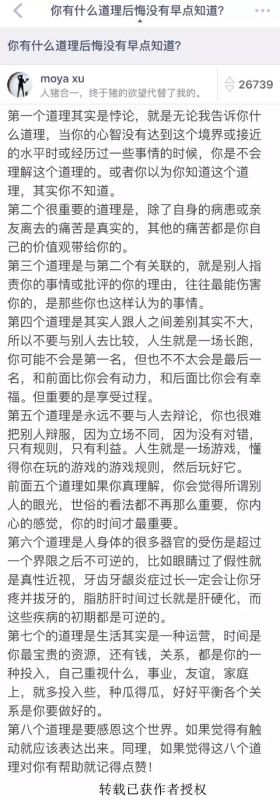 |
| 2016-05-05 17:32:31 | 你 | 阿娇发的 |
| 2016-05-05 17:32:43 | 我 | 好 |
| 2016-05-05 17:33:26 | 我 | 第五个是我一直在教你的 |
| 2016-05-05 17:33:53 | 你 | 你教了我好多个 |
| 2016-05-05 17:34:21 | 你 | 1257 |
| 2016-05-05 17:35:46 | 我 | 😄 |
| 2016-05-05 17:36:39 | 我 | 你果然是比以前强多了 |
| 2016-05-05 17:37:19 | 你 | 且 |
| 2016-05-05 17:37:23 | 你 | 小看我 |
| 2016-05-05 17:37:42 | 我 | 😄，哪有 |
| 2016-05-05 17:37:46 | 你 | HAWQ看的差不多了 |
| 2016-05-05 17:37:55 | 你 | 应该能够顺利交差 |
| 2016-05-05 17:37:59 | 你 | 歇会 |
| 2016-05-05 17:38:12 | 我 | 好 |
| 2016-05-05 17:38:17 | 你 | 你跟东海聊天的过程我就一直看 现在有点看不下去了 |
| 2016-05-05 17:38:33 | 我 | 哦 |
| 2016-05-05 17:47:11 | 我 | 我也歇会 |
| 2016-05-05 17:56:48 | 我 | 这次你有点冲动 |
| 2016-05-05 17:57:49 | 我 | 你没和阿娇说我知道这事了吧 |
| 2016-05-05 17:58:25 | 你 | 不好意思啊 |
| 2016-05-05 17:58:46 | 你 | 她说她跟杨丽颖说了 |
| 2016-05-05 17:59:10 | 我 | 算了，这事越来越乱了 |
| 2016-05-05 18:08:08 | 我 | 没事的，这事就这样吧 |
| 2016-05-05 18:08:49 | 我 | 我原来是希望领导和他谈以后还有转机 |
| 2016-05-05 18:09:01 | 我 | 领导得周一才有空 |
| 2016-05-05 18:09:30 | 我 | 我怕大家都知道了东海就不好下台了 |
| 2016-05-05 18:09:53 | 我 | 我没有怨你的意思 |
| 2016-05-05 18:18:47 | 你 | 没事，我知道 |
| 2016-05-05 18:18:57 | 你 | 刚才一直看新闻，没注意 |
| 2016-05-05 18:19:12 | 你 | 不好意思啊，真的没事，我自己也觉得有点多嘴了 |
| 2016-05-05 18:19:14 | 你 | 真的 |
| 2016-05-05 18:19:24 | 我 | 没事的，真的没事 |
| 2016-05-05 18:19:34 | 你 | 你的顾虑是应该的 |
| 2016-05-05 18:19:38 | 我 | 今天事情有点多，我态度不好 |
| 2016-05-05 18:19:41 | 你 | 对不起 |
| 2016-05-05 18:19:54 | 我 | 不是你的错 |
| 2016-05-05 18:20:06 | 我 | 还是我自己的事情 |
| 2016-05-05 18:20:07 | 你 | 没事没事，你的态度也没事 |
| 2016-05-05 18:20:11 | 你 | 应该的 |
| 2016-05-05 18:20:24 | 你 | 好了，别再自责了，没事 |
| 2016-05-05 18:20:33 | 你 | 我下次肯定注意 |
| 2016-05-05 18:21:15 | 我 | 你几点走？ |
| 2016-05-05 18:21:28 | 你 | 我对象来接我 |
| 2016-05-05 18:21:34 | 你 | 他今天有事开车 |
| 2016-05-05 18:21:40 | 我 | 好吧 |
| 2016-05-05 18:46:14 | 你 | 走了亲 |
| 2016-05-05 18:46:24 | 我 | 好的 |
| 2016-05-05 18:46:27 | 我 | bye |
{kind=link}
2016-05-06¶
{kind=link}
2016-05-09¶
| 2016-05-09 08:43:33 | 我 | 我周末把我的程序改进完了，现在可以看见发的图片和听语音了 |
| 2016-05-09 08:44:20 | 我 | 你猜第一张图片是啥 |
| 2016-05-09 08:46:50 | 你 | 等 我写日报 |
| 2016-05-09 08:46:55 | 你 | 最近有事吗 现场 |
| 2016-05-09 08:47:14 | 我 | 没什么特别紧急的事情了 |
| 2016-05-09 08:47:37 | 你 | 好 |
| 2016-05-09 08:50:04 | 你 | 周六在家工作 没报加班 可以写在工时里吗 |
| 2016-05-09 08:50:14 | 我 | 可以 |
| 2016-05-09 08:58:04 | 你 | 周五晚上测试的聚餐去了 你知道吗 |
| 2016-05-09 08:58:47 | 我 | 不知道 |
| 2016-05-09 08:59:09 | 你 | 领导 老田 严丹都去了 |
| 2016-05-09 08:59:37 | 我 | 洪越没去？ |
| 2016-05-09 08:59:45 | 你 | 没有 |
| 2016-05-09 08:59:49 | 你 | 他干嘛去 |
| 2016-05-09 09:01:02 | 你 | |
| 2016-05-09 09:01:29 | 我 | 哦 |
| 2016-05-09 09:01:39 | 我 | 谁发给你的 |
| 2016-05-09 09:02:05 | 你 | 万能的朋友圈，我人脉这么广 |
| 2016-05-09 09:02:18 | 我 | 哈哈 |
| 2016-05-09 09:02:34 | 我 | 你快回答我的问题 |
| 2016-05-09 09:02:38 | 我 | 不准作弊 |
| 2016-05-09 09:07:54 | 你 | 我不知道啊 |
| 2016-05-09 09:08:33 | 我 | 就是你给我写的信 |
| 2016-05-09 09:08:47 | 你 | 啊？你不是说照片吗 |
| 2016-05-09 09:09:14 | 我 | 对呀，你拍的照片给我发过来的 |
| 2016-05-09 09:09:23 | 我 | 当时你拿回去了 |
| 2016-05-09 09:10:04 | 你 | 啊？ |
| 2016-05-09 09:10:20 | 你 | 好吧 那以前的记录也有吗 |
| 2016-05-09 09:10:32 | 我 | 没有了 |
| 2016-05-09 09:10:51 | 我 | 我最早就是去年7月的 |
| 2016-05-09 09:11:05 | 你 | 恩 好吧 |
| 2016-05-09 09:30:17 | 你 | 你今天心情不错啊 |
| 2016-05-09 09:30:36 | 你 | 你把声音关小点吧 |
| 2016-05-09 09:30:47 | 你 | 老是响 |
| 2016-05-09 09:30:50 | 我 | 好 |
| 2016-05-09 09:31:12 | 你 | 王志新答辩 老田肯定会帮他 那天老田专门找的洪越 说让给指导指导 |
| 2016-05-09 09:31:30 | 我 | 昨天把程序做完了，所以心情不错 |
| 2016-05-09 09:31:43 | 我 | 谈不上 |
| 2016-05-09 09:31:51 | 你 | 哦 好吧 |
| 2016-05-09 09:32:07 | 你 | 信是在7月以后给你的吗 |
| 2016-05-09 09:32:09 | 我 | 答辩安排其实就有猫腻 |
| 2016-05-09 09:32:12 | 你 | 我记得更早 |
| 2016-05-09 09:32:24 | 我 | 自己的专家答辩自己人 |
| 2016-05-09 09:32:29 | 我 | 是 |
| 2016-05-09 09:33:12 | 我 | 我是从7月份才开始记录的 |
| 2016-05-09 09:33:13 | 你 | 我已经看到了 |
| 2016-05-09 09:33:18 | 你 | 哈哈 |
| 2016-05-09 09:33:22 | 我 | 之前的找不到了 |
| 2016-05-09 09:33:30 | 你 | 嗯嗯 |
| 2016-05-09 09:33:33 | 你 | 好吧 |
| 2016-05-09 09:34:03 | 你 | 无所谓 反正我是过了 |
| 2016-05-09 09:34:12 | 你 | 乖乖的等四年以后吧 |
| 2016-05-09 09:34:58 | 我 | 今天下午还得去开武总的会 |
| 2016-05-09 09:35:10 | 你 | 下午吗 |
| 2016-05-09 09:35:20 | 你 | 我记得上午你们还有个会 |
| 2016-05-09 09:35:23 | 我 | 是 |
| 2016-05-09 09:35:26 | 你 | 那个会让东海了是吧 |
| 2016-05-09 09:35:36 | 我 | 10.30的周会 |
| 2016-05-09 09:35:37 | 你 | 现在让旭明去 还是你去 |
| 2016-05-09 09:35:42 | 我 | 都去呗 |
| 2016-05-09 09:35:43 | 你 | 哦 |
| 2016-05-09 09:35:47 | 你 | 是 |
| 2016-05-09 09:58:56 | 我 | 我已经买书了，昨天到了 |
| 2016-05-09 09:59:05 | 你 | 啊 好吧 |
| 2016-05-09 09:59:11 | 你 | 不好意思啊 |
| 2016-05-09 09:59:26 | 我 | 正好有一本我也想看，就一起买了 |
| 2016-05-09 09:59:27 | 你 | 我又拖延了 |
| 2016-05-09 09:59:30 | 我 | 没事的 |
| 2016-05-09 09:59:33 | 你 | 好 |
| 2016-05-09 09:59:38 | 我 | 我要是着急早就买了 |
| 2016-05-09 09:59:44 | 我 | @垠：放弃自我中心，对认识事物本质是很重要的。事物并不是你认为是怎样就是怎样的。自我中心会让人盲目的做出判断，从而看不见真实的情况。很多语言和系统的设计错误，都是设计者以自我为中心的结果。 |
| 2016-05-09 09:59:57 | 我 | 刚从微博上看来的 |
| 2016-05-09 10:00:10 | 你 | 恩 |
| 2016-05-09 10:00:34 | 你 | 自我中心是同病 每个人都有 有的明显点 有的不明显 |
| 2016-05-09 10:03:03 | 我 | 是 |
| 2016-05-09 10:13:47 | 你 | ？ |
| 2016-05-09 10:14:27 | 我 | 想给你发个长图片，结果很不清楚，我就撤回了 |
| 2016-05-09 10:16:17 | 我 | 
|
| 2016-05-09 10:16:36 | 我 | 发给你了，4.1M |
| 2016-05-09 10:16:52 | 我 | 用 WiFi |
| 2016-05-09 10:27:25 | 我 | 看完了？ |
| 2016-05-09 10:27:40 | 你 | 看不太下去 大致看了看 |
| 2016-05-09 10:27:51 | 你 | 今天穿的裙子 腿很冷 |
| 2016-05-09 10:28:05 | 我 | |
| 2016-05-09 10:28:19 | 我 | 亮点自找 |
| 2016-05-09 10:29:48 | 你 | 怎么两个我 |
| 2016-05-09 10:31:02 | 你 | 而且名字不一样 |
| 2016-05-09 10:31:06 | 我 | 马甲呀 |
| 2016-05-09 10:31:14 | 我 | 黑科技😄 |
| 2016-05-09 10:31:15 | 你 | 啥？ |
| 2016-05-09 10:31:19 | 你 | 滚犊子 |
| 2016-05-09 10:32:03 | 我 | 使用一连串的技术手段模拟出来的 |
| 2016-05-09 10:32:18 | 你 | 你自己弄的 |
| 2016-05-09 10:32:21 | 我 | 是 |
| 2016-05-09 10:33:26 | 你 | 牛啊 |
| 2016-05-09 10:34:11 | 我 | 两天呀，你以为黑客那么容易吗😒 |
| 2016-05-09 10:34:20 | 你 | 好吧 |
| 2016-05-09 10:34:23 | 你 | 就弄个这 |
| 2016-05-09 10:34:25 | 你 | 哈哈 |
| 2016-05-09 10:34:35 | 你 | 你是不是闲的慌 |
| 2016-05-09 10:34:40 | 你 | 哈哈 |
| 2016-05-09 10:34:57 | 我 | 这还是从android上弄的，苹果想都别想 |
| 2016-05-09 10:35:09 | 你 | 好么 |
| 2016-05-09 10:35:22 | 你 | 兴趣 |
| 2016-05-09 10:35:38 | 我 | 其实是一种挑战 |
| 2016-05-09 10:35:55 | 你 | 你今天忙吗 |
| 2016-05-09 10:36:24 | 我 | 下午有会，就没有其他事情了 |
| 2016-05-09 10:37:56 | 你 | 好吧 想跟你聊天 |
| 2016-05-09 10:38:12 | 我 | 可以 |
| 2016-05-09 10:38:18 | 我 | 你想聊什么 |
| 2016-05-09 10:38:41 | 你 | 随便吧 想听你说点东西 |
| 2016-05-09 10:38:46 | 你 | 就是想聊 |
| 2016-05-09 10:40:05 | 你 | 待会跟你说点我想的事 |
| 2016-05-09 10:40:24 | 我 | 好的 |
| 2016-05-09 10:40:52 | 你 | 你知道 我跟你说过我性格里有讨好别人的成分吧 |
| 2016-05-09 10:41:12 | 我 | 嗯 |
| 2016-05-09 10:41:32 | 你 | 我知道为什么了 |
| 2016-05-09 10:41:44 | 你 | 而且我知道以后我该怎么做了 |
| 2016-05-09 10:41:56 | 我 | 说说 |
| 2016-05-09 10:42:06 | 你 | 你以前就跟我说过 你可能都不记得了 |
| 2016-05-09 10:42:48 | 你 | 其实我俩从小之所以受大家喜欢，是因为我俩从小就做着大家喜欢的事 |
| 2016-05-09 10:43:36 | 你 | 从某件事起 我发现 我这样做 爸爸就不会生气 不会打我 |
| 2016-05-09 10:43:42 | 你 | 所以我就开始做 |
| 2016-05-09 10:43:48 | 你 | 后来就是姑姑 |
| 2016-05-09 10:43:59 | 你 | 但是 我一直不知道我为什么要这么做 |
| 2016-05-09 10:44:39 | 你 | 就像我上初中的时候 不想上学了 但是我爸妈坚持必须上 我就上了 我也不知道我为什么要上学 |
| 2016-05-09 10:45:22 | 你 | 再到后来 就是很多 除了亲人 还有朋友 同学 再到现在的同事 有的时候甚至 为了觉得别人会喜欢做违心的事 |
| 2016-05-09 10:45:34 | 你 | 这是错的很离谱的 |
| 2016-05-09 10:45:45 | 我 | 是 |
| 2016-05-09 10:46:03 | 你 | 其实 是因为没有目标 当有了清楚的目标后就不一样 |
| 2016-05-09 10:46:25 | 你 | 说白了就是知道自己想要什么 |
| 2016-05-09 10:46:30 | 我 | 是 |
| 2016-05-09 10:46:33 | 你 | 自己能舍得放弃什么 |
| 2016-05-09 10:46:57 | 我 | 我记得很早我就和你说过这些 |
| 2016-05-09 10:47:02 | 你 | 是 |
| 2016-05-09 10:47:09 | 你 | 很早你就跟我说过 |
| 2016-05-09 10:47:36 | 你 | 『其实我俩从小之所以受大家喜欢，是因为我俩从小就做着大家喜欢的事』这句话就是你说的 |
| 2016-05-09 10:47:50 | 你 | 可是当时 我一直都没理解 |
| 2016-05-09 10:47:54 | 你 | 现在我才理解了 |
| 2016-05-09 10:48:15 | 你 | 还有你说的 我跟杨总的关系 |
| 2016-05-09 10:49:44 | 我 | 😊 |
| 2016-05-09 10:50:09 | 你 | 你知道我跟他搞好关系有好处 我也知道 可是如果我自己认识到 跟他搞好关系带给我的快乐 比不上我不搭理他带我我的快乐多的话 我完全没必要搭理他 对不对 当然 这里边还有其他的因素考虑 就是长期 短期快乐的事 |
| 2016-05-09 10:51:39 | 你 | 当然 我觉得杨总挺好的 跟他相处很愉快 而且对我工作也有好处 我就果断跟他联系下去 你说是不是 |
| 2016-05-09 10:52:06 | 你 | 这就是你说的 跟他相处 不是他掌握主动权 而是我掌握主动权 |
| 2016-05-09 10:52:19 | 你 | 不被动 所以没烦恼 |
| 2016-05-09 10:52:24 | 我 | 对 |
| 2016-05-09 11:07:50 | 我 | 我刚才和东江来抽烟，我说不喊洪越了，洪越被美女缠住了 |
| 2016-05-09 11:14:56 | 你 | 哈哈 |
| 2016-05-09 11:15:01 | 你 | 净瞎说 |
| 2016-05-09 11:15:14 | 我 | 没有呀 |
| 2016-05-09 11:24:56 | 我 | 你今天穿的挺好看的 |
| 2016-05-09 11:36:37 | 你 | 穿少了， |
| 2016-05-09 11:36:50 | 我 | 是 |
| 2016-05-09 11:38:29 | 你 | 周末太暖和了，以为不会这么冷 |
| 2016-05-09 11:38:45 | 你 | 周末跟我对象打羽毛球去了，热的不行 |
| 2016-05-09 11:38:58 | 我 | 是，明天会热一点 |
| 2016-05-09 11:39:25 | 你 | 早知道穿裤子了 |
| 2016-05-09 11:40:40 | 我 | 你该看看天气 |
| 2016-05-09 13:07:03 | 你 | 干嘛去了 |
| 2016-05-09 13:07:08 | 你 | 溜达？ |
| 2016-05-09 13:08:11 | 我 | 吃饭，永旺 |
| 2016-05-09 13:09:09 | 我 | 我周末看欢乐颂了，确实和咱俩很像 |
| 2016-05-09 13:11:04 | 你 | o |
| 2016-05-09 13:11:12 | 你 | 严丹没跟你们吗 |
| 2016-05-09 13:11:22 | 你 | 他早就回来了 |
| 2016-05-09 13:11:27 | 我 | 和我们一起呀 |
| 2016-05-09 13:11:32 | 我 | 我们一起回来的 |
| 2016-05-09 13:11:48 | 你 | 哦 晕了 |
| 2016-05-09 13:20:37 | 你 | 看来老杨也很重视需求啊 |
| 2016-05-09 13:20:48 | 我 | 对呀 |
| 2016-05-09 13:21:10 | 你 | 估计没少栽跟头 |
| 2016-05-09 13:21:21 | 我 | 是 |
| 2016-05-09 13:27:31 | 你 | 番薯总是犯病 |
| 2016-05-09 13:27:39 | 我 | 老毛病了 |
| 2016-05-09 14:01:53 | 我 | 现在忙到居然开会的时候最闲 |
| 2016-05-09 14:02:07 | 你 | 你好好开会吧 |
| 2016-05-09 14:02:31 | 我 | 好吧，怕你着急 |
| 2016-05-09 14:02:38 | 你 | 没事 |
| 2016-05-09 14:02:42 | 你 | 看着你们就忙 |
| 2016-05-09 14:02:52 | 我 | 😒 |
| 2016-05-09 14:50:02 | 你 | 烦烦烦 |
| 2016-05-09 14:50:17 | 我 | 咋啦 |
| 2016-05-09 14:50:23 | 你 | 看着东海挺难过的 |
| 2016-05-09 14:50:28 | 我 | ？ |
| 2016-05-09 14:50:30 | 你 | 谁让他离职 |
| 2016-05-09 14:50:59 | 你 | 这屋就剩我 洪越 还有他了 |
| 2016-05-09 14:51:03 | 你 | 还有孙世林 |
| 2016-05-09 14:51:22 | 我 | 唉，我也知道，但是领导没和他谈之前，我也不好宣布 |
| 2016-05-09 14:51:48 | 我 | 可是我还得做准备，结果就这样了 |
| 2016-05-09 14:56:33 | 我 | 亲，你烦的是什么 |
| 2016-05-09 15:38:48 | 你 | 刚才打电话去了 |
| 2016-05-09 15:39:01 | 我 | 哦 |
| 2016-05-09 15:39:10 | 你 | 不好意思啊 |
| 2016-05-09 15:39:18 | 我 | 你最近和你对象吵架了？ |
| 2016-05-09 15:39:26 | 你 | 没有啊 |
| 2016-05-09 15:39:32 | 你 | 为什么这么说 |
| 2016-05-09 15:39:43 | 我 | 因为你说烦 |
| 2016-05-09 15:40:00 | 你 | 昨天吵了会 不过已经好了 |
| 2016-05-09 15:40:02 | 你 | 完全好了 |
| 2016-05-09 15:40:23 | 我 | 好的 |
| 2016-05-09 15:42:08 | 你 | 你怎么还没回来 |
| 2016-05-09 15:42:21 | 我 | 还在开会 |
| 2016-05-09 15:42:32 | 你 | 打起来了吗 |
| 2016-05-09 15:42:33 | 我 | 每次都这么久 |
| 2016-05-09 15:42:36 | 你 | 武总的会？ |
| 2016-05-09 15:42:47 | 我 | 对，他们太磨叽 |
| 2016-05-09 15:43:27 | 我 | 你没事了吗？ |
| 2016-05-09 15:43:47 | 你 | 没事了 我刚才看英文文档 烦的 |
| 2016-05-09 15:43:52 | 我 | 哦 |
| 2016-05-09 15:43:53 | 你 | 大家都不在还 |
| 2016-05-09 15:43:58 | 我 | 我也没事了 |
| 2016-05-09 15:44:01 | 我 | 聊天吧 |
| 2016-05-09 15:44:05 | 你 | 好 啊 |
| 2016-05-09 15:44:10 | 你 | 问你个问题啊 |
| 2016-05-09 15:44:23 | 我 | 嗯 |
| 2016-05-09 15:45:01 | 你 | 还是以前问的 因为我比以前知道的多了 所以 我想知道你当时的想法 |
| 2016-05-09 15:45:09 | 你 | 你最开始说喜欢我 为什么 |
| 2016-05-09 15:45:45 | 你 | 这跟我接受的教我 喜欢听你说话有关吗 |
| 2016-05-09 15:46:00 | 你 | 不好意思 我是不是很烦 老是问你这个问题 |
| 2016-05-09 15:46:06 | 我 | 不是 |
| 2016-05-09 15:46:31 | 你 | 我也想试着发现我究竟会因为什么喜欢一个人 |
| 2016-05-09 15:46:33 | 我 | 有关，但是不是主要因素 |
| 2016-05-09 15:46:39 | 你 | 你先听我说 |
| 2016-05-09 15:46:44 | 我 | 好 |
| 2016-05-09 15:46:57 | 你 | 我那天跟你说了半天我多爱东东 我为了他怎么样 |
| 2016-05-09 15:47:27 | 你 | 但是我一直没说 我爱他什么 或者说我能把他的笑容作为我追求目标的原因 |
| 2016-05-09 15:47:48 | 你 | 是不是 |
| 2016-05-09 15:47:53 | 我 | 是 |
| 2016-05-09 15:48:36 | 你 | 总结一句话 就是他总能带给我惊喜 让我感动 |
| 2016-05-09 15:48:48 | 我 | 可以理解 |
| 2016-05-09 15:48:58 | 你 | 生活中的小惊喜 不是给我买了什么 啥的啊 |
| 2016-05-09 15:49:08 | 你 | 给你举个例子 |
| 2016-05-09 15:49:12 | 我 | 嗯 |
| 2016-05-09 15:50:25 | 你 | 曾经他养过一只兔子 |
| 2016-05-09 15:50:51 | 你 | 当时买的时候 我断定 三分钟热度 养不长， |
| 2016-05-09 15:51:10 | 你 | 可是东东很耐心 把它养的很好 |
| 2016-05-09 15:51:20 | 我 | 嗯 |
| 2016-05-09 15:51:30 | 你 | 一直养到特别大 |
| 2016-05-09 15:51:47 | 你 | 最后搬家了 没办法养了 才送人了 |
| 2016-05-09 15:51:59 | 你 | 就是累死这样的 小惊喜 很多很多 |
| 2016-05-09 15:52:18 | 我 | 嗯 |
| 2016-05-09 15:52:51 | 你 | 偶尔就会有新发现 而且我俩很多地方都很像 所以我的有些决定 他都会理解 不用我做太多解释 |
| 2016-05-09 15:53:15 | 我 | 嗯 |
| 2016-05-09 15:53:23 | 你 | 还有很多 |
| 2016-05-09 15:53:28 | 你 | 这些理由足够了吧 |
| 2016-05-09 15:53:43 | 我 | 嗯 |
| 2016-05-09 15:53:44 | 你 | 我在想 你为什么会喜欢我呢 |
| 2016-05-09 15:53:49 | 你 | 而且在很早你就说了 |
| 2016-05-09 15:54:05 | 你 | 不是等现在 （我能理解点你的时候） |
| 2016-05-09 15:55:05 | 我 | 说来话长 |
| 2016-05-09 15:55:14 | 我 | 你别着急，我慢慢说 |
| 2016-05-09 15:56:26 | 我 | 1、很早说涉及到的还是信任问题，这个又和我的认知以及建模有关 |
| 2016-05-09 15:56:48 | 我 | 2、我说的喜欢和你理解的喜欢完全不一样 |
| 2016-05-09 15:57:02 | 我 | 你想先听哪一个 |
| 2016-05-09 15:59:03 | 你 | 都听 |
| 2016-05-09 15:59:29 | 你 | 第一个 我估计已经想到了 |
| 2016-05-09 15:59:34 | 你 | 但是我有问题 |
| 2016-05-09 15:59:55 | 你 | 你为什么觉得你说喜欢我 我就会对你不那么防备 就会信任你呢 |
| 2016-05-09 16:00:06 | 你 | 而且你说的喜欢究竟是什么啊 |
| 2016-05-09 16:00:14 | 我 | 先说第二个吧 |
| 2016-05-09 16:02:14 | 我 | 其实主要还是因为感情的复杂超出了词汇能表达的范围 |
| 2016-05-09 16:04:20 | 我 | 我说的喜欢和你说的喜欢完全不同 |
| 2016-05-09 16:06:10 | 你 | 可是你当时没说清楚 搞得我误会了 |
| 2016-05-09 16:06:12 | 你 | 笨蛋 |
| 2016-05-09 16:06:14 | 我 | 你说的喜欢其实更像爱情里面的喜欢 |
| 2016-05-09 16:06:24 | 我 | 我说的更像亲情里面的喜欢 |
| 2016-05-09 16:06:32 | 我 | 就好像你姑姑喜欢你 |
| 2016-05-09 16:06:51 | 我 | 当时我避免使用爱就是怕你误会 |
| 2016-05-09 16:07:03 | 我 | 谁知道你会向那个方向想 |
| 2016-05-09 16:07:04 | 你 | 你还不如你爱我 |
| 2016-05-09 16:07:16 | 我 | 啊，为啥呀？ |
| 2016-05-09 16:08:00 | 你 | 那样我知道肯定不是爱情的爱 我就会换个思路理解你 |
| 2016-05-09 16:08:25 | 我 | 好吧，这个咱俩确实不在一个频道上 |
| 2016-05-09 16:08:38 | 你 | 你说我们俩个素昧平生 你突然说喜欢我 我又这么漂亮 你又有点老[调皮] 你说我怎么想 |
| 2016-05-09 16:08:44 | 你 | 好了 不纠结这个了 |
| 2016-05-09 16:08:54 | 我 | 我一般认为爱首先是男女，喜欢不涉及 |
| 2016-05-09 16:08:55 | 你 | 接着说 不打断你了[微笑] |
| 2016-05-09 16:10:11 | 我 | 从面试你的时候，我就发现你的优点，也了解你的缺点 |
| 2016-05-09 16:10:26 | 我 | 当时我比较纠结的恰恰是你所害怕的 |
| 2016-05-09 16:10:40 | 你 | 那我姑姑爱我涉及男女吗 |
| 2016-05-09 16:12:15 | 我 | 不涉及 |
| 2016-05-09 16:13:47 | 你 | 那就是为了建立信任 |
| 2016-05-09 16:14:06 | 我 | 你等我慢慢说 |
| 2016-05-09 16:15:57 | 我 | 我当时决定招你的时候就考虑过是不是要培养你 |
| 2016-05-09 16:16:10 | 我 | 你的底子不好，但是悟性高 |
| 2016-05-09 16:16:20 | 我 | 需要花时间培养 |
| 2016-05-09 16:16:32 | 你 | 你先忙吧 我不急 |
| 2016-05-09 16:16:41 | 你 | 都当机了 |
| 2016-05-09 16:16:46 | 你 | 我可想听你说了 |
| 2016-05-09 16:16:48 | 我 | 可是如果我真的培养你却又担心你会认为我别有企图 |
| 2016-05-09 16:16:52 | 你 | 但我不着急 |
| 2016-05-09 16:16:55 | 我 | 没事的，我自己有分寸 |
| 2016-05-09 16:16:59 | 你 | OK |
| 2016-05-09 16:17:16 | 我 | 因为你和别人不一样，需要的是不同的培养方法 |
| 2016-05-09 16:17:28 | 你 | 恩 |
| 2016-05-09 16:20:40 | 我 | 你是一个让我比较纠结的 |
| 2016-05-09 16:20:58 | 你 | 你先忙吧 |
| 2016-05-09 16:21:00 | 你 | 我都急死了 |
| 2016-05-09 16:21:03 | 我 | 没事 |
| 2016-05-09 16:21:07 | 你 | 替你 |
| 2016-05-09 16:22:06 | 我 | 你不像阿娇，采用比较普通的方式就可以慢慢培养出来了 |
| 2016-05-09 16:22:50 | 我 | 当时我的直觉是如果采用比较普通的方式，即使谈不到把你毁了，对你的成长也不会有好的帮助 |
| 2016-05-09 16:22:51 | 你 | 恩 差了这么多竟然 |
| 2016-05-09 16:23:27 | 我 | 所以我给你安排的工作其实和别人总是不太一样 |
| 2016-05-09 16:23:49 | 我 | 只是我自己是一个很有耐性的人，同时也非常了解人性 |
| 2016-05-09 16:24:09 | 你 | 是 |
| 2016-05-09 16:24:11 | 你 | 看出来了 |
| 2016-05-09 16:24:15 | 我 | 如果没有后面的一些事情，我可能就会一直等，等到时机成熟 |
| 2016-05-09 16:24:23 | 你 | 嗯嗯 |
| 2016-05-09 16:24:33 | 你 | 看你是个多么负责的人 |
| 2016-05-09 16:24:42 | 我 | 当初老杨和我提给需求组人的时候，我就想到了你 |
| 2016-05-09 16:24:47 | 你 | 我就说我很幸运 |
| 2016-05-09 16:24:56 | 我 | 你还记得我和你谈 |
| 2016-05-09 16:25:09 | 你 | 我记得 你不是嫌弃我才把我踢出去的吧 |
| 2016-05-09 16:25:19 | 我 | 把你的优势劣势，未来的发展方向都和你说了 |
| 2016-05-09 16:25:29 | 我 | 当然不是了 |
| 2016-05-09 16:25:39 | 我 | 我当时怕你这么想 |
| 2016-05-09 16:25:48 | 我 | 其实我也看出来你已经这么想了 |
| 2016-05-09 16:26:06 | 我 | 所以我花了很大的力气去消除你的疑虑 |
| 2016-05-09 16:26:12 | 你 | 哈哈， |
| 2016-05-09 16:26:20 | 我 | 让你相信我 |
| 2016-05-09 16:26:29 | 你 | 我记得你一直跟我说，有什么事找你 |
| 2016-05-09 16:26:36 | 你 | 不管什么事都可以 |
| 2016-05-09 16:26:42 | 我 | 这次谈话其实埋下了一个不好的种子 |
| 2016-05-09 16:26:50 | 你 | 什么 |
| 2016-05-09 16:27:11 | 我 | 就是我意识到你很胆小 |
| 2016-05-09 16:27:16 | 我 | 很脆弱 |
| 2016-05-09 16:27:22 | 我 | 缺乏安全感 |
| 2016-05-09 16:27:45 | 我 | 即使你喜欢去需求组，你也是担心是不是我嫌弃你，因为你的基础差 |
| 2016-05-09 16:28:05 | 你 | 是吧 |
| 2016-05-09 16:28:29 | 我 | 正是我对你的这个印象，导致我以后采取了比较激进的方式 |
| 2016-05-09 16:28:46 | 你 | 好吧 |
| 2016-05-09 16:29:04 | 我 | 我以前也和你解释过，当时决定采用激进的方式是因为我答应三个月 |
| 2016-05-09 16:29:43 | 我 | 如果没有时间限制，我会非常有耐心的等你 |
| 2016-05-09 16:31:31 | 你 | enen |
| 2016-05-09 16:31:44 | 我 | 当时我考虑，如果按照常规的方式，三个月绝对没戏 |
| 2016-05-09 16:31:56 | 你 | 可是你就是因为招我来了为了负责才这么做的吗 |
| 2016-05-09 16:32:01 | 你 | 真的太感动了 |
| 2016-05-09 16:32:02 | 我 | 采用超常的方式，首先就是信任问题 |
| 2016-05-09 16:32:10 | 你 | 哈哈 |
| 2016-05-09 16:32:28 | 我 | 而我对你的印象，你又有一层蛋壳保护着自己 |
| 2016-05-09 16:32:38 | 我 | 所以我必须想办法打破蛋壳 |
| 2016-05-09 16:33:07 | 我 | 常规的方法就好像用醋酸软化蛋壳 |
| 2016-05-09 16:33:22 | 你 | haha |
| 2016-05-09 16:33:32 | 我 | 但是时间不允许，所以我就采用了激进的方式 |
| 2016-05-09 16:33:44 | 我 | 当时我也是非常担心的，因为这个风险太高了 |
| 2016-05-09 16:34:00 | 我 | 我也只有40%的把握 |
| 2016-05-09 16:34:15 | 我 | 一般情况我都需要有80%以上的把握才会出手 |
| 2016-05-09 16:34:40 | 我 | 所以在第一次之后才会有持续的约你出去聊天 |
| 2016-05-09 16:34:51 | 我 | 其实就是想消除副作用 |
| 2016-05-09 16:35:03 | 我 | 我再和你说的细一点 |
| 2016-05-09 16:35:06 | 你 | 还好还好 |
| 2016-05-09 16:35:10 | 你 | 好啊 好 |
| 2016-05-09 16:36:59 | 我 | 采用激进的方式是不想让你采用常规的思维方式，这种方式很容易让人以为我对你有什么想法。这种激进的方式会在你心里留下一个矛盾点，然后会促进你去思考这个矛盾点，在后面我持续给你解释，让你逐渐接受 |
| 2016-05-09 16:37:16 | 我 | 说的很多，其实就是利用的人的好奇心 |
| 2016-05-09 16:37:30 | 我 | 我的做法和你预期的不一样 |
| 2016-05-09 16:37:33 | 你 | 哇塞 |
| 2016-05-09 16:37:36 | 我 | 你就会好奇 |
| 2016-05-09 16:37:41 | 你 | 是 |
| 2016-05-09 16:37:48 | 我 | 然后你就会认真听我解释 |
| 2016-05-09 16:37:53 | 我 | 就会去思考 |
| 2016-05-09 16:38:28 | 我 | 所以虽然风险很大，只要后面能及时消除副作用，我就可以达到我的目标 |
| 2016-05-09 16:38:49 | 我 | 其实你对象对我的态度问题是不在我的考虑范围以内的 |
| 2016-05-09 16:39:15 | 我 | 因为当时我也没有发现咱俩那么投缘，也没想过会保持这么久的关系 |
| 2016-05-09 16:39:38 | 我 | 当时我的想法就是三个月把你带出来，然后就慢慢从你身边消失 |
| 2016-05-09 16:39:59 | 我 | 你知道我其实是很随缘的 |
| 2016-05-09 16:40:07 | 你 | 恩 明白 |
| 2016-05-09 16:40:36 | 你 | 我现在才刚刚体会点你说的随性 |
| 2016-05-09 16:40:41 | 我 | 如果当初我打算维护现在咱俩之间的关系，我必然会考虑你对象的因素 |
| 2016-05-09 16:40:55 | 你 | 恩 是 |
| 2016-05-09 16:41:08 | 我 | 所以我反省后我认为自己最大的缺点还是格局不够大 |
| 2016-05-09 16:41:18 | 我 | 当初应该更大胆一些 |
| 2016-05-09 16:41:29 | 我 | 想的更广更远一点 |
| 2016-05-09 16:41:35 | 你 | 至少至少你会帮我防着点他 |
| 2016-05-09 16:41:56 | 你 | 你想的对于你最初的目标完全够了 |
| 2016-05-09 16:42:02 | 你 | 谁知道会这样 |
| 2016-05-09 16:42:04 | 我 | 对呀 |
| 2016-05-09 16:42:13 | 你 | 你让我去防着他 肯定不行 |
| 2016-05-09 16:42:20 | 我 | 所以我说当初指定战略的时候应该更远一点 |
| 2016-05-09 16:42:27 | 你 | 我可能更不敢跟你说话了 |
| 2016-05-09 16:42:34 | 你 | 我觉得不是 |
| 2016-05-09 16:42:39 | 我 | 现在看还是因为我的战略上有毛病 |
| 2016-05-09 16:42:45 | 你 | 是 |
| 2016-05-09 16:42:48 | 我 | 你说的其实是方法问题 |
| 2016-05-09 16:42:51 | 你 | 战略的毛病 |
| 2016-05-09 16:43:20 | 你 | 但是这么长远的战略 你当时是根本没想到的 哦！！！！所以你说你格局不够大 |
| 2016-05-09 16:43:29 | 我 | 正是因为当初战略上的缺陷，导致现在要在战术层面非常辛苦的努力 |
| 2016-05-09 16:43:32 | 你 | 好吧 说得很对 |
| 2016-05-09 16:43:37 | 你 | 哈哈 |
| 2016-05-09 16:43:41 | 我 | 而且还给你带去伤害 |
| 2016-05-09 16:44:06 | 我 | 这也是我为什么老是强调战略的重要性 |
| 2016-05-09 16:44:11 | 你 | 只能碰到什么应对什么了 就是扩展性不好了 |
| 2016-05-09 16:44:14 | 你 | 明白 |
| 2016-05-09 16:44:20 | 我 | 他们很多人是没有理解这句话的 |
| 2016-05-09 16:44:27 | 我 | 我是有亲身体会的 |
| 2016-05-09 16:44:30 | 你 | 是 |
| 2016-05-09 16:44:37 | 你 | 我也算有吧 |
| 2016-05-09 16:44:49 | 我 | 是 |
| 2016-05-09 16:45:06 | 我 | 回来再说负责任的事情 |
| 2016-05-09 16:45:16 | 你 | 你看 你现在说什么 我听不懂的 至少不会怀疑你错 然后会去自己思考 直到把事情逻辑想明白 |
| 2016-05-09 16:45:18 | 你 | 很清晰 |
| 2016-05-09 16:45:21 | 你 | 你接着说吧 |
| 2016-05-09 16:45:45 | 我 | 你刚才问我为啥对你这么负责任 |
| 2016-05-09 16:46:07 | 你 | 你最初的歉疚 |
| 2016-05-09 16:46:12 | 你 | 是吗？ |
| 2016-05-09 16:46:27 | 我 | 不是。你现在看看这个过程你会发现，就是因为我的战略观不够大，给你带来多大的伤害 |
| 2016-05-09 16:46:55 | 我 | 在整个过程中你一直是被动的 |
| 2016-05-09 16:47:55 | 我 | 咱俩的关系中我的能力远超过你 |
| 2016-05-09 16:47:59 | 你 | 是 |
| 2016-05-09 16:48:07 | 我 | 能力越大责任越大 |
| 2016-05-09 16:49:23 | 我 | 我不想让你受到伤害 |
| 2016-05-09 16:50:50 | 我 | 那是一种不负责任 |
| 2016-05-09 16:51:21 | 我 | 现在你明白我为啥特别讨厌管事，特别讨厌管人，特别讨厌当领导了吧 |
| 2016-05-09 16:51:28 | 我 | 这都是需要负责的 |
| 2016-05-09 16:51:41 | 我 | 负责是一件很累的事情 |
| 2016-05-09 16:52:21 | 我 | 而且这种责任不是谁说不用负责就可以不负责的 |
| 2016-05-09 16:52:22 | 你 | 恩 现在知道了 |
| 2016-05-09 16:56:11 | 你 | 为什么不想让我受到伤害呢 ？因为我一再受到伤害的话就不相信你了 我不相信你了 你的所做的一切就白搭了 是吗 |
| 2016-05-09 16:56:17 | 你 | 这个推理对吗 |
| 2016-05-09 16:56:29 | 我 | 是 |
| 2016-05-09 16:57:13 | 你 | 你所做的一切都是为了让我相信你 你好教我东西 好实现你三个月的承诺 |
| 2016-05-09 17:00:22 | 我 | 差不多 |
| 2016-05-09 17:00:34 | 我 | 后来这个目标变了 |
| 2016-05-09 17:00:41 | 你 | 说说后来 |
| 2016-05-09 17:00:45 | 我 | 变的更大了 |
| 2016-05-09 17:01:05 | 你 | 这段逻辑捋顺了已经 |
| 2016-05-09 17:01:22 | 你 | 高于段落 估计以后不会再问这段历史了 |
| 2016-05-09 17:01:36 | 我 | 😄 |
| 2016-05-09 17:01:38 | 你 | 告于段落 |
| 2016-05-09 17:01:41 | 你 | 哈哈 |
| 2016-05-09 17:02:06 | 我 | 你想想，如果不是你今天问，而是早一些我告诉你 |
| 2016-05-09 17:02:17 | 我 | 能保证你一定理解吗？ |
| 2016-05-09 17:02:32 | 你 | 我以前跟你问过很多次了 我都搞不明白 |
| 2016-05-09 17:02:40 | 你 | 今天还可以 搞明白了 |
| 2016-05-09 17:02:41 | 我 | 其实现在才是我的习惯，就是等 |
| 2016-05-09 17:02:55 | 我 | 等到你可以搞明白的时候 |
| 2016-05-09 17:02:57 | 你 | 没准以后还会问 |
| 2016-05-09 17:06:00 | 我 | 还有什么问题吗 |
| 2016-05-09 17:06:17 | 我 | 我先借着这个话题多说两句 |
| 2016-05-09 17:06:24 | 你 | 好 |
| 2016-05-09 17:06:30 | 我 | 今天这个结果我以前告诉过你 |
| 2016-05-09 17:06:35 | 你 | 有啊，当然有 |
| 2016-05-09 17:06:44 | 我 | 我说总有一天你会明白我的 |
| 2016-05-09 17:06:54 | 你 | 哈哈 |
| 2016-05-09 17:06:56 | 我 | 在这之前我希望的是你能理解和信任我 |
| 2016-05-09 17:07:09 | 我 | 然后你好几次说你明白了 |
| 2016-05-09 17:07:19 | 你 | 其实没明白 |
| 2016-05-09 17:07:21 | 你 | 是吗 |
| 2016-05-09 17:07:27 | 我 | 当时我要么说你不明白，要么就不回答你 |
| 2016-05-09 17:07:33 | 你 | 我现在又说明白了 |
| 2016-05-09 17:07:44 | 我 | 现在不是 |
| 2016-05-09 17:07:52 | 你 | 你能感觉到这次我真明白了吗 |
| 2016-05-09 17:07:53 | 我 | 原因是因为你之前的顿悟 |
| 2016-05-09 17:07:54 | 你 | 哈哈 |
| 2016-05-09 17:08:05 | 你 | 嗯嗯 是 顿悟了太多了 |
| 2016-05-09 17:08:19 | 我 | 不知道你发现没有，顿悟之后，很多东西都能看明白 |
| 2016-05-09 17:08:24 | 你 | 主要累积的东西太多了 |
| 2016-05-09 17:08:29 | 你 | 是啊 我当然发现了 |
| 2016-05-09 17:08:34 | 你 | 发现了好多 |
| 2016-05-09 17:08:38 | 我 | 感觉这些东西就是放在那的 |
| 2016-05-09 17:08:46 | 我 | 其实一直就是这样 |
| 2016-05-09 17:08:50 | 我 | 从来就没有变过 |
| 2016-05-09 17:08:58 | 你 | 而且我一直处在同样的话 今天明天看 感悟不一样的状态 |
| 2016-05-09 17:09:02 | 你 | 对啊 |
| 2016-05-09 17:09:04 | 你 | 真的 |
| 2016-05-09 17:09:10 | 你 | 物是人非 |
| 2016-05-09 17:09:16 | 我 | 我希望的是自己好好感悟一下 |
| 2016-05-09 17:09:30 | 我 | 找到这两种感觉之间的区别 |
| 2016-05-09 17:09:32 | 你 | 自己？你自己吗 |
| 2016-05-09 17:09:45 | 我 | 是的，你自己 |
| 2016-05-09 17:09:46 | 你 | 其实我还有个问题 |
| 2016-05-09 17:09:52 | 我 | 说吧 |
| 2016-05-09 17:10:23 | 你 | 我那天想 你是一个教我的过程 而我学的都这么费劲 |
| 2016-05-09 17:10:39 | 你 | 我从来没想过教人是怎样的 |
| 2016-05-09 17:10:47 | 我 | |
| 2016-05-09 17:10:59 | 你 | 就是我的逻辑还是比你粗很多 |
| 2016-05-09 17:11:07 | 我 | 其实你是我第一个认真教的人 |
| 2016-05-09 17:11:11 | 你 | 所以你说的很多我都没想过 |
| 2016-05-09 17:11:16 | 你 | 好吧 |
| 2016-05-09 17:11:17 | 我 | 之前的宋文彬和杨丽莹都不是 |
| 2016-05-09 17:11:39 | 你 | 这么教人 一下子教2个 估计都得累死 |
| 2016-05-09 17:11:44 | 我 | 教人其实很累的，我特别懒，所以懒得教人 |
| 2016-05-09 17:11:51 | 我 | 对呀 |
| 2016-05-09 17:11:53 | 你 | 我想想 现在一对一这么贵 我得教多少学费 |
| 2016-05-09 17:12:02 | 你 | 哈哈 是 |
| 2016-05-09 17:12:15 | 我 | 所以你知道你带给我的快乐值多少钱了吧 |
| 2016-05-09 17:12:39 | 你 | 我不觉得我给你带来多少快乐 |
| 2016-05-09 17:12:41 | 你 | 真的 |
| 2016-05-09 17:12:55 | 我 | 那是因为你还有能力认识到而已 |
| 2016-05-09 17:13:17 | 我 | 打错了，是没有能力认识到 |
| 2016-05-09 17:14:31 | 你 | 你可以选择别人啊 |
| 2016-05-09 17:15:00 | 你 | 你注重的是快乐，我注重的是人 |
| 2016-05-09 17:15:13 | 我 | 我说过我很随缘 |
| 2016-05-09 17:15:38 | 我 | 像宋文彬和杨丽莹都和我是有缘无份的 |
| 2016-05-09 17:16:13 | 我 | 他们能理解我说的，但是无法给我带来快乐 |
| 2016-05-09 17:16:49 | 我 | 你知道你给我写的那封信吗 |
| 2016-05-09 17:17:00 | 你 | 恩 |
| 2016-05-09 17:17:02 | 我 | 当时我刚收到的时候觉得特别生气 |
| 2016-05-09 17:17:09 | 我 | 感觉自己被伤害了 |
| 2016-05-09 17:17:17 | 你 | 还是没发现我的作用 |
| 2016-05-09 17:17:28 | 我 | 晚上我自己反省的时候我发现自己错了 |
| 2016-05-09 17:17:30 | 你 | 哦，可是你从来都没跟我说过， |
| 2016-05-09 17:17:39 | 你 | 反而总是安慰我 |
| 2016-05-09 17:18:32 | 我 | 因为当时你无法理解我 |
| 2016-05-09 17:20:20 | 我 | 我自己的情绪也会有波动，你看见的我非常理性，可是我是非常感性的。我是靠我的理性控制我自己的感性 |
| 2016-05-09 17:20:48 | 我 | 正是因为我自己的理性很强，我才刚让自己非常感性 |
| 2016-05-09 17:20:49 | 你 | 这是自省的时候想到的吗 |
| 2016-05-09 17:20:59 | 你 | 恩 |
| 2016-05-09 17:21:01 | 我 | 否则我就得自己压抑自己的感性 |
| 2016-05-09 17:21:16 | 我 | 这些大部分都是自省的时候想到的 |
| 2016-05-09 17:23:56 | 你 | 你说的这个只是你自省的一方面吧 极小的一方面 |
| 2016-05-09 17:24:23 | 我 | 是 |
| 2016-05-09 17:24:42 | 你 | 有很长的吗 |
| 2016-05-09 17:25:06 | 我 | 有 |
| 2016-05-09 17:25:51 | 我 | 你看，就这么一小点，我得说多少话 |
| 2016-05-09 17:26:04 | 你 | 什么意思 |
| 2016-05-09 17:26:45 | 我 | 你要是能理解，我就不用说这么多了 |
| 2016-05-09 17:27:05 | 我 | 就可以说更高级的 |
| 2016-05-09 17:27:06 | 你 | 你说的小点指什么 |
| 2016-05-09 17:27:36 | 我 | 比如和你聊人生 |
| 2016-05-09 17:27:54 | 你 | 好啊 聊高级的 |
| 2016-05-09 17:28:07 | 我 | 好呀 |
| 2016-05-09 17:28:13 | 我 | 人为啥活着 |
| 2016-05-09 17:28:16 | 你 | [链接] 【知馨心理咨询】“欢乐颂”大结局，安迪与奇点分手而嫁给包奕凡的真正原因-今日头条 |
| 2016-05-09 17:34:42 | 我 | 有点道理，也有点牵强 |
| 2016-05-09 17:35:42 | 我 | 说的有道理是因为这两个人都是有心理问题 |
| 2016-05-09 17:36:24 | 我 | 说牵强是因为他想通过电视给自己或者说心理学打广告 |
| 2016-05-09 17:37:20 | 你 | 哈哈 |
| 2016-05-09 17:37:23 | 你 | 随便看看 |
| 2016-05-09 17:37:30 | 你 | 后边写的有点着急 |
| 2016-05-09 17:37:32 | 你 | 感觉 |
| 2016-05-09 17:37:38 | 你 | 有点混乱了 |
| 2016-05-09 17:37:40 | 我 | 是 |
| 2016-05-09 17:37:51 | 你 | [链接] 没有不委屈的工作（深度好文） |
| 2016-05-09 17:38:05 | 我 | 你看你已经有长进了 |
| 2016-05-09 17:38:06 | 你 | 你看这些文章应该不会累 |
| 2016-05-09 17:38:12 | 你 | 那必须的 |
| 2016-05-09 17:38:30 | 你 | 我看你给我的就完全不一样了 |
| 2016-05-09 17:39:36 | 我 | 你看这些会累？ |
| 2016-05-09 17:39:59 | 你 | 这个不会 |
| 2016-05-09 17:40:07 | 你 | 但是有的你发的会 |
| 2016-05-09 17:40:11 | 我 | 是 |
| 2016-05-09 17:40:29 | 我 | 我发的基本上都是我能看上眼的 |
| 2016-05-09 17:40:46 | 我 | 就像电视剧 |
| 2016-05-09 17:41:04 | 我 | 欢乐颂算是不错的国产剧了 |
| 2016-05-09 17:41:25 | 你 | 是 |
| 2016-05-09 17:41:26 | 我 | 但是编剧的水平还是没法和美剧比 |
| 2016-05-09 17:41:32 | 你 | 对 |
| 2016-05-09 17:41:35 | 你 | 我跟你说说 |
| 2016-05-09 17:41:40 | 我 | 有些地方表演的痕迹很重 |
| 2016-05-09 17:41:43 | 我 | 好呀 |
| 2016-05-09 17:41:44 | 你 | 你先别说 |
| 2016-05-09 17:41:49 | 我 | 你说 |
| 2016-05-09 17:50:20 | 你 | 国产剧 每个角色塑造的不下功夫 要么一个比神仙还神 剩下的全是白痴 要么一群白痴 |
| 2016-05-09 17:50:31 | 你 | 所有配角都是剧情需要 |
| 2016-05-09 17:50:42 | 你 | 就是每个角色没有模型 |
| 2016-05-09 17:51:18 | 你 | 本来这件事 按照原先定义的模型是不会这么做的 但剧情需要一来 马上就做了 矛盾太多 |
| 2016-05-09 17:51:25 | 你 | 让人真的看不下去 |
| 2016-05-09 17:51:33 | 你 | 美剧就不一样了 |
| 2016-05-09 17:51:38 | 你 | 每个模型很清楚 |
| 2016-05-09 17:51:43 | 我 | 是 |
| 2016-05-09 17:51:44 | 你 | 这种矛盾很少 |
| 2016-05-09 17:52:06 | 你 | 是不是呀 |
| 2016-05-09 17:52:09 | 我 | 你说的比我好 |
| 2016-05-09 17:52:15 | 你 | 真的假的 |
| 2016-05-09 17:52:20 | 我 | 我都没想到这么多 |
| 2016-05-09 17:52:23 | 我 | 真的 |
| 2016-05-09 17:52:24 | 你 | 你看的渣剧太多 |
| 2016-05-09 17:52:28 | 你 | 错了 |
| 2016-05-09 17:52:30 | 你 | 反了 |
| 2016-05-09 17:52:33 | 我 | 😄 |
| 2016-05-09 17:52:45 | 你 | 你看的渣剧太少 |
| 2016-05-09 17:52:51 | 你 | 欢乐颂我都看不下去了 |
| 2016-05-09 17:53:12 | 你 | 但是步步惊心就不是 |
| 2016-05-09 17:53:22 | 你 | 所以我超喜欢那部国产剧 |
| 2016-05-09 17:53:37 | 你 | 每个角色非常鲜明 而且是我超级喜欢的古风 |
| 2016-05-09 17:53:41 | 你 | 所以很喜欢 |
| 2016-05-09 17:53:46 | 我 | 有机会我一定要去看 |
| 2016-05-09 17:53:58 | 你 | 我姐现在给我推荐的剧 我有的都不看了 |
| 2016-05-09 17:54:04 | 我 | 等最近库存看完了 |
| 2016-05-09 17:54:16 | 你 | 她还停留在帅哥美女上 |
| 2016-05-09 17:54:32 | 我 | |
| 2016-05-09 17:54:52 | 你 | 有机会你可以看看 那部剧看着就没有什么矛盾 比较流畅 |
| 2016-05-09 17:55:03 | 我 | 我觉得就是因为像你姐这样的人多，像你这样的人少，中国的电视剧才会这样 |
| 2016-05-09 17:55:17 | 你 | 反正都是泡沫剧 你要是实在无聊就看 但有点聊还是别看了 |
| 2016-05-09 17:55:26 | 你 | 是 |
| 2016-05-09 17:55:38 | 你 | 我有的时候还是会沦陷的 |
| 2016-05-09 17:55:43 | 你 | 但很少很少 |
| 2016-05-09 17:55:47 | 我 | 我一定会看 |
| 2016-05-09 17:55:49 | 我 | 因为你 |
| 2016-05-09 17:55:54 | 你 | 哈哈 |
| 2016-05-09 17:56:01 | 我 | 就像欢乐颂一样 |
| 2016-05-09 17:56:03 | 你 | 到时候咱们可以一起聊聊 |
| 2016-05-09 17:56:07 | 你 | 是啊 |
| 2016-05-09 17:56:08 | 我 | 对呀 |
| 2016-05-09 17:56:27 | 我 | 你现在还上不来，那么我就下去 |
| 2016-05-09 17:56:28 | 你 | 这叫共同话题 有话题要聊 没话题创造话题也要聊 总之 要聊天 |
| 2016-05-09 17:56:40 | 你 | 你不一直这样吗 |
| 2016-05-09 17:56:59 | 我 | 娱乐之类的不是 |
| 2016-05-09 17:57:10 | 我 | 我基本上还是按照自己的爱好 |
| 2016-05-09 17:58:37 | 你 | 我跟我姐都特别喜欢中国风的东西 |
| 2016-05-09 17:58:49 | 我 | 我也很喜欢 |
| 2016-05-09 17:58:52 | 你 | 以前总是酸酸的 我比我姐还差好多 |
| 2016-05-09 17:59:02 | 你 | 我俩听歌都是中国风的 |
| 2016-05-09 17:59:12 | 我 | 😄 |
| 2016-05-09 17:59:28 | 你 | 就上次推荐给你的 惊鸿一面 |
| 2016-05-09 17:59:33 | 你 | 很多人都不喜欢的 |
| 2016-05-09 18:00:02 | 我 | 他们意境不够 |
| 2016-05-09 18:01:24 | 你 | 我从你们组回来以后 你跟我还依然好是因为投缘是哪 |
| 2016-05-09 18:01:28 | 你 | 是吗 |
| 2016-05-09 18:01:32 | 你 | 就是随性了 |
| 2016-05-09 18:01:43 | 我 | 是 |
| 2016-05-09 18:05:30 | 我 | 你几点走？ |
| 2016-05-09 18:05:47 | 你 | 等领导走了 |
| 2016-05-09 18:05:51 | 你 | 大概6：40 |
| 2016-05-09 18:06:00 | 我 | 好的 |
| 2016-05-09 18:25:26 | 你 | 我走了啊 |
| 2016-05-09 18:25:52 | 我 | 好吧，😒 |
{kind=link}
{kind=link}
2016-05-10¶
{kind=link}
2016-05-11¶
| 2016-05-11 08:50:31 | 你 | 昨天有没有累着啊 |
| 2016-05-11 08:50:39 | 你 | 今天这么晚 |
| 2016-05-11 08:50:54 | 我 | 是累着了 |
| 2016-05-11 08:51:13 | 你 | 腿没事吧 |
| 2016-05-11 08:51:18 | 我 | 没事 |
| 2016-05-11 08:52:05 | 我 | 昨天10点才到家，然后吃饭洗澡 |
| 2016-05-11 08:52:31 | 我 | 等睡觉都过12点了 |
| 2016-05-11 08:52:51 | 你 | 我昨天也是12点睡得 |
| 2016-05-11 08:53:05 | 我 | 累吗 |
| 2016-05-11 08:53:20 | 你 | 到家吃饭 聊天 10点多了 然后我弟弟给我打电话 一直聊到11点多 我才发现我没洗澡 |
| 2016-05-11 08:53:27 | 你 | 洗完澡12点了 |
| 2016-05-11 08:53:32 | 你 | 然后就睡觉了 |
| 2016-05-11 08:53:56 | 你 | 我昨天没怎么累着 |
| 2016-05-11 08:56:39 | 我 | 好的 |
| 2016-05-11 08:56:43 | 我 | 等电梯 |
| 2016-05-11 09:00:37 | 你 | 哥们 还没问你 我昨天跟领导的互动可以吧 |
| 2016-05-11 09:01:03 | 我 | 非常好呀 |
| 2016-05-11 09:01:21 | 我 | 很明显领导也很喜欢和你互动 |
| 2016-05-11 09:01:29 | 你 | 真的吗 |
| 2016-05-11 09:01:37 | 你 | 你看出来了吗 |
| 2016-05-11 09:01:46 | 我 | 对呀 |
| 2016-05-11 09:02:09 | 你 | 我想了 反正你在 给我壮胆 |
| 2016-05-11 09:02:54 | 我 | 我看出来了，你多少还是有点拘束 |
| 2016-05-11 09:03:19 | 你 | 要是你不在 我肯定做不出来 |
| 2016-05-11 09:03:38 | 你 | 换个别人我也是 乖乖的在后排作者 不说话 |
| 2016-05-11 09:03:42 | 你 | 坐着 |
| 2016-05-11 09:03:43 | 我 | 昨天做的挺好的 |
| 2016-05-11 09:04:00 | 我 | 后来领导还和你单独打球 |
| 2016-05-11 09:04:19 | 你 | 你说去那边啊 |
| 2016-05-11 09:04:42 | 你 | 我叫他的 我俩单独的时候 我脑子里一句话想不出来 |
| 2016-05-11 09:04:51 | 你 | 很尴尬 索性打球去得了 |
| 2016-05-11 09:04:53 | 我 | 你还是太紧张 |
| 2016-05-11 09:05:24 | 你 | 你看出我紧张来了吗 |
| 2016-05-11 09:05:30 | 你 | 我故意装的淡定 |
| 2016-05-11 09:05:37 | 我 | 看出来了 |
| 2016-05-11 09:06:03 | 你 | 领导能看出来吗 |
| 2016-05-11 09:06:48 | 我 | 不知道，估计看不出来 |
| 2016-05-11 09:07:09 | 你 | 恩 我觉得也是 |
| 2016-05-11 09:07:16 | 你 | 他看不出来 他不关心 |
| 2016-05-11 09:22:39 | 我 | 昨天领导和东海谈了，希望不大 |
| 2016-05-11 09:22:55 | 我 | 你上车之前我们一直在谈东海 |
| 2016-05-11 09:23:07 | 你 | 哦 |
| 2016-05-11 09:23:22 | 你 | 你都没谈拢 他要是谈拢了 你怎么想 |
| 2016-05-11 09:23:31 | 你 | 东海心里有数 |
| 2016-05-11 09:24:24 | 我 | 你这话是什么意思？我没看懂 |
| 2016-05-11 09:54:45 | 我 | 亲，怎么不理我 |
| 2016-05-11 09:54:59 | 你 | 没有 看你忙着 |
| 2016-05-11 09:55:17 | 你 | 我的意思是 东海既然你没跟他谈起来 领导谈也不行 |
| 2016-05-11 09:55:29 | 你 | 咱们公司算好的了 真的 |
| 2016-05-11 09:55:56 | 你 | 这种事 杨总不谈也无啥 杨总耐心还是不错的 |
| 2016-05-11 09:56:09 | 我 | 不一样呀，领导的权限比我大，我不能许诺的领导可以许诺 |
| 2016-05-11 09:56:27 | 你 | 唉 |
| 2016-05-11 09:57:01 | 我 | 领导昨天和我说他几乎说动东海留下了，就差一点点了 |
| 2016-05-11 09:57:02 | 你 | 那倒是 |
| 2016-05-11 09:57:19 | 你 | 那最后怎么失败了 |
| 2016-05-11 09:57:29 | 你 | 东海真是的 |
| 2016-05-11 09:57:31 | 我 | 领导没详说 |
| 2016-05-11 09:58:22 | 我 | 我问你一个问题，我需要你真实的看法 |
| 2016-05-11 09:58:38 | 我 | 你认为东海走和我有关吗？ |
| 2016-05-11 09:59:12 | 你 | 我觉得有关 |
| 2016-05-11 09:59:29 | 你 | 我是不是太直接了 |
| 2016-05-11 09:59:37 | 你 | 应该问你 想听真话还是假话 |
| 2016-05-11 09:59:56 | 你 | 但是这件事情还是需要辩证的看 |
| 2016-05-11 09:59:57 | 你 | 哈哈 |
| 2016-05-11 10:00:10 | 我 | 真话 |
| 2016-05-11 10:00:28 | 你 | 我昨天想了下 |
| 2016-05-11 10:00:43 | 你 | 虽然我不知道你跟东海谈的情况 |
| 2016-05-11 10:00:52 | 你 | 但是离职无非就那么几个原因 |
| 2016-05-11 10:01:08 | 你 | 一个个排除 就很好找到真像了 |
| 2016-05-11 10:01:50 | 你 | 你能说说离职的原因吗 我可以给你排除下 你可以反驳我 我只是在我知道的信息的前提下做判断 仅供参考 |
| 2016-05-11 10:02:02 | 你 | 你想 离职 无非是以下原因 |
| 2016-05-11 10:02:07 | 你 | 1、薪资 |
| 2016-05-11 10:02:20 | 你 | 2、发展前景 |
| 2016-05-11 10:02:35 | 你 | 3、是不是自己喜欢干的工作 |
| 2016-05-11 10:02:46 | 你 | 大概就这些吧 |
| 2016-05-11 10:02:54 | 我 | 我想知道的是你的想法，不是想和你辩论，我也不想替自己辩护 |
| 2016-05-11 10:02:56 | 你 | 还有别的 |
| 2016-05-11 10:03:08 | 你 | 比如公司倒闭啥的 |
| 2016-05-11 10:03:25 | 你 | 个人不是稳定的人 |
| 2016-05-11 10:04:01 | 你 | 首先东海不是新人 在英业达干了10年 足以说明他是个比较稳定的人 |
| 2016-05-11 10:04:26 | 你 | 其次 他来公司不到一年 如果是薪资问题来的时候就该提啊 |
| 2016-05-11 10:04:37 | 我 | 嗯 |
| 2016-05-11 10:04:39 | 你 | 而且 他的工资已经不少了 |
| 2016-05-11 10:04:56 | 你 | 东海看着也不像那么拜金的人 |
| 2016-05-11 10:05:00 | 你 | 发展问题 |
| 2016-05-11 10:05:20 | 你 | 最开始的时候你已经 表态的很明显了 想提他 |
| 2016-05-11 10:05:37 | 你 | 发展也不是遥遥无期的 |
| 2016-05-11 10:05:44 | 你 | 王洪越这才叫遥遥无期 |
| 2016-05-11 10:06:01 | 你 | 再者东海对升职应该也不是特别感冒 |
| 2016-05-11 10:06:20 | 你 | 所以就剩工作不顺心了 也就是第3点 |
| 2016-05-11 10:06:29 | 你 | 工作不顺心也分很多种 |
| 2016-05-11 10:06:45 | 你 | 比如就像写代码 可是老是做设计 NG |
| 2016-05-11 10:07:07 | 我 | 好了，我知道了，你的结论就是我是东海离职的主要原因 |
| 2016-05-11 10:07:46 | 你 | 你别生气啊 我说的只是原因 但是背后还有事情 |
| 2016-05-11 10:07:50 | 你 | 你不听了啊 |
| 2016-05-11 10:08:21 | 你 | 这件事我可以帮你求证 真的 如果我推测的不对的话 我不希望你不高兴 |
| 2016-05-11 10:09:02 | 我 | 你不用 |
| 2016-05-11 10:09:04 | 你 | 真不高兴啦 |
| 2016-05-11 10:09:09 | 你 | 别生气啊 |
| 2016-05-11 10:09:12 | 我 | 我对真相不感兴趣 |
| 2016-05-11 10:09:14 | 你 | 我不希望你生气 |
| 2016-05-11 10:09:31 | 我 | 我问你的原因是其他考虑 |
| 2016-05-11 10:09:50 | 你 | 什么 |
| 2016-05-11 10:09:53 | 我 | 我特意没有告诉你我和东海谈的内容 |
| 2016-05-11 10:10:02 | 你 | 好吧 |
| 2016-05-11 10:10:15 | 我 | 就是想从你这推断其他人是怎么看这件事情的 |
| 2016-05-11 10:10:32 | 你 | 我这么认为 别人也会或多或少这么认为的 |
| 2016-05-11 10:10:37 | 我 | 当初刘甲走的时候就有人说是我骂走的 |
| 2016-05-11 10:10:47 | 我 | 现在估计还会有人说 |
| 2016-05-11 10:10:48 | 你 | 但是我想说的事 别人怎么认为也不是特别重要 |
| 2016-05-11 10:11:04 | 我 | 恐怕大部分人都是这么认为 |
| 2016-05-11 10:11:16 | 你 | 阿娇是 |
| 2016-05-11 10:11:19 | 我 | 这是最让我伤心的地方 |
| 2016-05-11 10:11:29 | 你 | 我知道 |
| 2016-05-11 10:11:33 | 你 | 我都知道 |
| 2016-05-11 10:11:37 | 你 | 真的 不骗你 |
| 2016-05-11 10:11:41 | 我 | 我已经不想管了 |
| 2016-05-11 10:11:47 | 你 | 包括你对刘甲 |
| 2016-05-11 10:11:49 | 你 | 我也知道 |
| 2016-05-11 10:11:53 | 我 | 心灰意冷 |
| 2016-05-11 10:12:07 | 我 | 我不是生气 |
| 2016-05-11 10:12:10 | 你 | 你现在陷入深深的悲观情绪了 |
| 2016-05-11 10:12:14 | 你 | 你知道吗 |
| 2016-05-11 10:12:44 | 你 | 其实你对我较对别人是很不公平的 |
| 2016-05-11 10:12:55 | 我 | 我想回到老陈那边去 |
| 2016-05-11 10:12:56 | 你 | 你对我的耐心几乎让我震惊 |
| 2016-05-11 10:14:41 | 你 | 好啊 走的时候 带上我 |
| 2016-05-11 10:16:21 | 你 | 要是带不走我 你就休想走 |
| 2016-05-11 10:16:22 | 我 | 我只想一个人过去 |
| 2016-05-11 10:16:56 | 你 | 我告诉你个tip啊 |
| 2016-05-11 10:17:13 | 你 | 其实 没人会真正关心东海走的原因 |
| 2016-05-11 10:17:16 | 你 | 真的 |
| 2016-05-11 10:17:27 | 你 | 是你自己想出来的而已 |
| 2016-05-11 10:17:40 | 我 | ？ |
| 2016-05-11 10:17:46 | 你 | 东海走的时候 大家会谈谈这件事 |
| 2016-05-11 10:18:13 | 你 | 东海走了2天后 没准大家就会忘了 有东海这么个人了 |
| 2016-05-11 10:18:16 | 你 | 真的 |
| 2016-05-11 10:18:24 | 你 | 你别骗自己 别难受了 |
| 2016-05-11 10:18:36 | 你 | 你觉得旭明会走吗 |
| 2016-05-11 10:18:42 | 你 | 不会啊 |
| 2016-05-11 10:19:00 | 你 | 其实我觉得你给东海的压力并不大 |
| 2016-05-11 10:19:12 | 我 | 算了 |
| 2016-05-11 10:19:13 | 你 | 至少没大到离职 |
| 2016-05-11 10:20:31 | 你 | 你又不听我说话了 |
| 2016-05-11 10:20:55 | 我 | 你说的我都能理解，但是这些不是关心的 |
| 2016-05-11 10:21:05 | 你 | 那你关心什么啊 |
| 2016-05-11 10:21:09 | 我 | 这些东西只能是劝我的 |
| 2016-05-11 10:21:17 | 我 | 我关心的是大多数人是怎么看的 |
| 2016-05-11 10:21:18 | 你 | 我也不知道我说啥能说你心里去 |
| 2016-05-11 10:21:29 | 你 | 有什么必要关心啊， |
| 2016-05-11 10:21:33 | 我 | 其实我现在是超级理智 |
| 2016-05-11 10:21:37 | 你 | 大家还依然做自己 |
| 2016-05-11 10:23:31 | 我 | 算了，你现在还没法理解 |
| 2016-05-11 10:23:59 | 你 | 那你绝对理智的话 怎么会想去陈那边 |
| 2016-05-11 10:24:21 | 你 | 如果只是说说 那不是在发泄情绪吗 |
| 2016-05-11 10:24:34 | 你 | 如果是发泄情绪那不是不理智是什么 |
| 2016-05-11 10:24:41 | 你 | 可能我还是不理解吧 |
| 2016-05-11 10:26:55 | 你 | 我不是故意气你的 |
| 2016-05-11 10:27:05 | 你 | 我是不知道怎么安慰你了 |
| 2016-05-11 10:27:08 | 我 | 简单说大家这么想那么领导那就会知道这种想法 |
| 2016-05-11 10:27:15 | 你 | 不知所措了 |
| 2016-05-11 10:27:18 | 你 | 我知道 |
| 2016-05-11 10:27:38 | 你 | 而且要是东海跟领导说什么 就会对你很不利 |
| 2016-05-11 10:27:48 | 你 | 也不是很不利 就是会减分呗 |
| 2016-05-11 10:28:06 | 我 | 你理解错了 |
| 2016-05-11 10:28:13 | 你 | 哎呀 |
| 2016-05-11 10:28:18 | 你 | 算了 我没事 |
| 2016-05-11 10:28:23 | 你 | 我就是怕你难过 |
| 2016-05-11 10:28:28 | 你 | 你没事就行 |
| 2016-05-11 10:28:31 | 我 | 我是觉得为这些人这么付出太不值了 |
| 2016-05-11 10:29:08 | 你 | O |
| 2016-05-11 10:29:14 | 你 | 你是够理性的 |
| 2016-05-11 10:31:12 | 我 | 东海和我说的是他和他的同学以及他老婆的闺蜜聊天 |
| 2016-05-11 10:31:17 | 你 | 我想听你说话 |
| 2016-05-11 10:31:43 | 我 | 发现他这样的外面随便都年薪30k以上 |
| 2016-05-11 10:32:14 | 我 | 现在他同学找他，他还没有定下来，有三家 |
| 2016-05-11 10:32:29 | 我 | 他和我说他也想开沃尔沃 |
| 2016-05-11 10:32:35 | 你 | 哦 那可能这才是事实 |
| 2016-05-11 10:32:40 | 你 | 哈哈 |
| 2016-05-11 10:32:55 | 我 | 而公司能提供给他的东西他不感兴趣 |
| 2016-05-11 10:33:05 | 我 | 上次的股票也没有买 |
| 2016-05-11 10:33:45 | 你 | 哦 |
| 2016-05-11 10:34:02 | 你 | 可能这才是事实 只是大家看不到 却只看到你的坏脾气了 |
| 2016-05-11 10:34:37 | 我 | 所以你知道我为啥心灰意冷了吧 |
| 2016-05-11 10:35:07 | 我 | 大家都会说东海走肯定和老王有关系 |
| 2016-05-11 10:35:16 | 你 | 哈哈 |
| 2016-05-11 10:35:19 | 我 | 肯定是老王骂走的 |
| 2016-05-11 10:35:22 | 你 | 哈哈 |
| 2016-05-11 10:35:51 | 你 | 大家也都知道 这只是表面原因 |
| 2016-05-11 10:36:18 | 你 | 领导说啥了 |
| 2016-05-11 10:36:24 | 我 | 众口铄金 |
| 2016-05-11 10:37:13 | 我 | 连你都这么说了，别人就更别说了 |
| 2016-05-11 10:37:53 | 我 | 不光是东海这一件事情，还有其他几件事情 |
| 2016-05-11 10:38:14 | 我 | 让我觉得为这个团队的付出很不值 |
| 2016-05-11 10:44:03 | 你 | 亲 耿燕疯了 |
| 2016-05-11 10:44:47 | 你 | 你干嘛去了 |
| 2016-05-11 10:44:50 | 你 | 亲 |
| 2016-05-11 10:44:53 | 你 | 打起来了 |
| 2016-05-11 10:44:57 | 你 | 杨总呢 |
| 2016-05-11 10:45:18 | 我 | 我面试 |
| 2016-05-11 10:45:24 | 你 | 杨总呢 |
| 2016-05-11 10:45:34 | 你 | 着火了 |
| 2016-05-11 10:45:36 | 我 | 不知道 |
| 2016-05-11 10:47:38 | 你 | 耿燕疯了 |
| 2016-05-11 10:47:43 | 你 | 我的天啊 |
| 2016-05-11 10:47:51 | 你 | 比你厉害多了 |
| 2016-05-11 10:47:54 | 我 | 😄 |
| 2016-05-11 10:48:02 | 你 | 我家东东可不来咱们公司做质控 |
| 2016-05-11 10:48:12 | 你 | 领导来了 |
| 2016-05-11 10:48:27 | 我 | 😄 |
| 2016-05-11 10:50:35 | 你 | 我想让你回来 |
| 2016-05-11 10:50:53 | 我 | 我待会回去 |
| 2016-05-11 10:51:11 | 你 | 现在没事了 领导过来安抚了下 |
| 2016-05-11 10:51:17 | 你 | 别人都不管 |
| 2016-05-11 10:51:23 | 我 | 哦 |
| 2016-05-11 11:28:40 | 你 | 这次真不是老田的事 |
| 2016-05-11 11:28:50 | 你 | 老田一直没跟她怎么着 |
| 2016-05-11 11:29:03 | 我 | 回来了 |
| 2016-05-11 11:45:11 | 我 | 你带饭了？ |
| 2016-05-11 12:04:33 | 你 | 恩，带了 |
| 2016-05-11 12:07:08 | 你 | 是 |
| 2016-05-11 12:07:30 | 我 | 吃完了吧，赶紧睡觉吧 |
| 2016-05-11 12:17:03 | 你 | 不睡 |
| 2016-05-11 12:17:49 | 我 | 啊，不累吗 |
| 2016-05-11 12:18:00 | 你 | 还好 |
| 2016-05-11 12:24:15 | 我 | 和严丹谈耿燕呢 |
| 2016-05-11 12:24:22 | 你 | 我就知道 |
| 2016-05-11 13:30:45 | 我 | 你睡好了吗 |
| 2016-05-11 13:30:53 | 你 | 没睡 |
| 2016-05-11 13:31:18 | 我 | 累吗 |
| 2016-05-11 13:31:29 | 你 | 不累 |
| 2016-05-11 13:31:48 | 我 | 下午我们组培训，李培晟 |
| 2016-05-11 13:31:59 | 我 | 我都不想去了 |
| 2016-05-11 13:32:02 | 你 | 讲什么啊 |
| 2016-05-11 13:32:17 | 我 | 分布式系统的什么东西 |
| 2016-05-11 13:49:22 | 我 | 你忙吗？ |
| 2016-05-11 13:49:35 | 你 | 还行 |
| 2016-05-11 13:49:51 | 我 | 那你先忙吧 |
| 2016-05-11 14:04:08 | 我 | 你这身比昨天的休闲 |
| 2016-05-11 14:11:55 | 你 | 搭配有问题吗 |
| 2016-05-11 14:17:39 | 我 | 没有 |
| 2016-05-11 14:18:20 | 你 | 不好看吗 |
| 2016-05-11 14:21:01 | 我 | 好看呀 |
| 2016-05-11 14:21:13 | 我 | 我是说风格不一样 |
| 2016-05-11 14:21:48 | 你 | 不能一成不变 |
| 2016-05-11 14:21:59 | 我 | 是 |
| 2016-05-11 14:23:08 | 你 | 你喜欢昨天那身吧 |
| 2016-05-11 14:23:46 | 我 | 都喜欢 |
| 2016-05-11 14:23:59 | 我 | 我自己是制服控 |
| 2016-05-11 14:31:44 | 你 | 王志新挑战王洪越呢 |
| 2016-05-11 14:31:56 | 我 | 😄 |
| 2016-05-11 14:36:36 | 你 | 叫东海干嘛 |
| 2016-05-11 14:36:57 | 我 | 问问他的结果 |
| 2016-05-11 14:41:28 | 我 | 说完了 |
| 2016-05-11 14:41:35 | 你 | 恩 |
| 2016-05-11 14:41:42 | 我 | 我让他今天开始办 |
| 2016-05-11 14:42:14 | 你 | 办what「」 |
| 2016-05-11 14:42:29 | 我 | 办手续呀 |
| 2016-05-11 14:43:50 | 你 | 王志新快气死了 |
| 2016-05-11 14:44:00 | 我 | 哦 |
| 2016-05-11 14:45:04 | 你 | 哪都有他老婆 |
| 2016-05-11 14:45:34 | 你 | 活像别人没老婆 |
| 2016-05-11 14:46:00 | 我 | 你就没有呀 |
| 2016-05-11 14:46:17 | 你 | 活像别人不是别人的老婆 |
| 2016-05-11 14:49:21 | 你 | 需求评审去吗 |
| 2016-05-11 14:50:53 | 我 | 我不去了 |
| 2016-05-11 14:50:56 | 我 | 心情不好 |
| 2016-05-11 15:32:54 | 我 | 有问题吗 |
| 2016-05-11 15:33:09 | 你 | 没有 |
| 2016-05-11 15:33:22 | 我 | 好的 |
| 2016-05-11 15:34:05 | 我 | 你知道我今天突然想到谁了吗 |
| 2016-05-11 15:34:12 | 你 | 不知道 |
| 2016-05-11 15:34:14 | 你 | 谁 |
| 2016-05-11 15:34:24 | 我 | 你猜猜 |
| 2016-05-11 15:34:35 | 你 | 你有点范围行吗 |
| 2016-05-11 15:34:40 | 你 | 我们邻居 |
| 2016-05-11 15:34:49 | 我 | 东海的事情 |
| 2016-05-11 15:35:12 | 你 | 刘甲吗？ |
| 2016-05-11 15:35:19 | 我 | 是 |
| 2016-05-11 15:35:42 | 我 | 你说要是他俩在一起会说啥 |
| 2016-05-11 15:35:54 | 你 | 爱说啥说啥呗 |
| 2016-05-11 15:36:09 | 你 | 你以为是刘甲拉走东海的吗 |
| 2016-05-11 15:36:16 | 我 | 不是 |
| 2016-05-11 15:36:38 | 我 | 我是想他们可能都会说我很凶 |
| 2016-05-11 15:36:50 | 你 | 没有啦 |
| 2016-05-11 15:36:54 | 你 | 你又开始了 |
| 2016-05-11 15:37:11 | 我 | 我已经纠结一天啦 |
| 2016-05-11 15:37:14 | 你 | 早上耿燕发疯的时候 东海跟我说 你不会这样对我吧 |
| 2016-05-11 15:37:19 | 你 | 不会的 |
| 2016-05-11 15:37:21 | 你 | 放心吧 |
| 2016-05-11 15:37:36 | 我 | 我知道自己钻牛角尖了 |
| 2016-05-11 15:37:45 | 我 | 但是出不来了 |
| 2016-05-11 15:39:03 | 你 | 他们不会说你的 放心吧 |
| 2016-05-11 15:39:05 | 你 | 真的 |
| 2016-05-11 15:39:21 | 你 | 谁有时间老是谈论你啊 过去就忘了 |
| 2016-05-11 15:39:34 | 我 | 你真不会劝人 |
| 2016-05-11 15:39:45 | 你 | 哈哈 |
| 2016-05-11 15:39:47 | 我 | 我敢打赌 |
| 2016-05-11 15:40:02 | 你 | 再说 说就说呗 爱说啥说啥 |
| 2016-05-11 15:40:11 | 我 | 刘甲知道后一定会联系东海 |
| 2016-05-11 15:40:12 | 你 | 你总不能总为别人活吧 |
| 2016-05-11 15:40:20 | 我 | 而且一定会谈到我 |
| 2016-05-11 15:40:42 | 我 | 你说的对 |
| 2016-05-11 15:40:46 | 你 | 你想听啥 我说啥 |
| 2016-05-11 15:40:50 | 我 | 我就是纠结在这 |
| 2016-05-11 15:41:06 | 你 | 你总是教我不要在意别人的眼光 |
| 2016-05-11 15:41:15 | 你 | 用理性做判断 然后做自己 |
| 2016-05-11 15:41:17 | 我 | 我要是为了自己，我就去老陈那，不为其他人操心 |
| 2016-05-11 15:41:24 | 你 | 我觉得你做的挺好的 |
| 2016-05-11 15:41:39 | 你 | 你脾气大这谁都知道 就像你的标签 |
| 2016-05-11 15:41:55 | 你 | 这是你的缺点 但会给你带来好处 |
| 2016-05-11 15:42:20 | 我 | 我换个问题 |
| 2016-05-11 15:42:23 | 你 | 人们总是不喜欢跟没有缺点的人在一起生活工作 因为觉得看不透 没有安全感 |
| 2016-05-11 15:42:47 | 我 | 昨天聊天你觉得我对你很负责 |
| 2016-05-11 15:42:51 | 我 | 是不是 |
| 2016-05-11 15:43:26 | 你 | 对啊 |
| 2016-05-11 15:44:03 | 我 | 同样对团队和团队里面的每一个人我也一样负责 |
| 2016-05-11 15:44:13 | 你 | 我知道 |
| 2016-05-11 15:44:18 | 你 | 我当然知道了 |
| 2016-05-11 15:44:19 | 我 | 你认为我对你负责很好 |
| 2016-05-11 15:44:32 | 我 | 可是有人却不这么认为 |
| 2016-05-11 15:44:37 | 你 | 但是你觉得你们组的人并不了解你的苦心 |
| 2016-05-11 15:44:44 | 我 | 这是最让我伤心的 |
| 2016-05-11 15:44:45 | 你 | 所以你觉得很委屈 |
| 2016-05-11 15:44:49 | 你 | 很不值得 |
| 2016-05-11 15:45:18 | 你 | 你对我跟对他们区别不在负责上 你本来就是哥负责任的人 |
| 2016-05-11 15:45:28 | 你 | 区别在用心和沟通上 |
| 2016-05-11 15:45:29 | 我 | 一句话，东海辞职一定和我有关，就伤透了我的心 |
| 2016-05-11 15:45:34 | 我 | 💔 |
| 2016-05-11 15:45:51 | 你 | 哈哈 我知道 我也觉得他伤透你的心了 |
| 2016-05-11 15:46:02 | 我 | 不是 |
| 2016-05-11 15:46:03 | 你 | 我觉得刘甲也伤你心了 |
| 2016-05-11 15:46:11 | 我 | 不是他俩 |
| 2016-05-11 15:46:16 | 我 | 是其他人 |
| 2016-05-11 15:46:31 | 我 | 这话肯定是其他人说的 |
| 2016-05-11 15:46:37 | 你 | 可是你是超级管理员 这是你的责任 |
| 2016-05-11 15:46:44 | 我 | 就是现在还在我身边的人 |
| 2016-05-11 15:47:05 | 我 | 每当我想到这我就不想管了 |
| 2016-05-11 15:47:36 | 我 | 与其得罪人，我还不如自己活的自在一些 |
| 2016-05-11 15:47:51 | 你 | 你得罪谁了 |
| 2016-05-11 15:48:13 | 你 | 你现在的逻辑都充满了悲观的色彩 |
| 2016-05-11 15:48:19 | 我 | 是 |
| 2016-05-11 15:49:02 | 我 | 如果是洪越或者其他人说出这种话，我其实一点都不伤心 |
| 2016-05-11 15:49:27 | 你 | 我知道 |
| 2016-05-11 15:49:42 | 我 | 偏偏能说这种话的人一定是我信任的人，一定是我为之负责为之付出的人 |
| 2016-05-11 15:50:11 | 你 | 看来是真伤心了 |
| 2016-05-11 15:50:37 | 我 | 你以为我是表演吗？ |
| 2016-05-11 15:50:55 | 我 | 以想到他们会这么对我 |
| 2016-05-11 15:51:04 | 我 | 我就什么都不想管了 |
| 2016-05-11 15:51:16 | 你 | 你总跟我说的利益呢 |
| 2016-05-11 15:51:25 | 我 | ？ |
| 2016-05-11 15:51:48 | 你 | 脑袋也不清楚了 |
| 2016-05-11 15:52:17 | 你 | 我刚才说的那话{看来是真伤心了}想表达 你的伤心程度超出我的想象 |
| 2016-05-11 15:52:22 | 我 | 对于我来说，最大的利益是信任 |
| 2016-05-11 15:52:54 | 我 | 刘甲和东海我对他们的做法没意见，也不纠结 |
| 2016-05-11 15:53:10 | 我 | 我纠结的是剩下的人 |
| 2016-05-11 15:53:47 | 我 | 听见这种话有被自己人背后捅刀子的感觉 |
| 2016-05-11 15:54:23 | 我 | 如果要想不被伤害，就不能去为他们负责 |
| 2016-05-11 15:54:32 | 我 | 所以我纠结 |
| 2016-05-11 15:55:20 | 你 | 我终于明白你纠结的是啥了 |
| 2016-05-11 15:56:47 | 我 | 比如咱俩，或者你和你对象 |
| 2016-05-11 15:57:19 | 我 | 你要是知道我背后说你和你对象吵架是因为你不够温柔，你会什么感觉 |
| 2016-05-11 15:57:43 | 我 | 或者你发现你对象在背后抱怨你，你会怎么想 |
| 2016-05-11 15:57:53 | 你 | 可是员工离职 大家很自然就会想到主管有问题啊 |
| 2016-05-11 15:58:10 | 你 | 你以为他俩不走 他们就不抱怨吗 |
| 2016-05-11 15:58:20 | 你 | 你现在完全是钻牛角尖 |
| 2016-05-11 15:58:34 | 你 | 你不要想着你为他们牺牲了你自己什么 |
| 2016-05-11 15:58:39 | 你 | 你越这么想越难受 |
| 2016-05-11 15:58:50 | 我 | 我承认 |
| 2016-05-11 15:59:01 | 我 | 我确实这么想 |
| 2016-05-11 15:59:02 | 你 | 你的目的是让自己走出牛角尖 你现在难过死了 别人还是该怎么过怎么过 |
| 2016-05-11 15:59:07 | 你 | who cares |
| 2016-05-11 15:59:16 | 你 | 我就知道 我也经常这样 |
| 2016-05-11 15:59:18 | 我 | 我 care |
| 2016-05-11 15:59:36 | 你 | 我指的是who cares you |
| 2016-05-11 15:59:43 | 你 | 对啊 |
| 2016-05-11 16:00:00 | 你 | 只有你care 你才不要自己为难自己啊 |
| 2016-05-11 16:00:16 | 我 | 好像只有你care me |
| 2016-05-11 16:00:17 | 你 | 你现在完全是自我折磨 |
| 2016-05-11 16:00:28 | 我 | 是 |
| 2016-05-11 16:00:39 | 你 | 对啊 折磨你自己 折磨所有真正关心你的人 |
| 2016-05-11 16:00:47 | 我 | 所以我才会和你说，我自己走不出来 |
| 2016-05-11 16:01:01 | 你 | 恩 你听我的 |
| 2016-05-11 16:01:07 | 我 | 幸亏我知道你不是这样的 |
| 2016-05-11 16:01:33 | 你 | 你别想你自己为了这群笨蛋牺牲了多少 你的时间 你的精力 你的用心 |
| 2016-05-11 16:01:48 | 我 | 嗯 |
| 2016-05-11 16:01:58 | 你 | 你一想到这些 就赶紧及时制止 |
| 2016-05-11 16:02:08 | 我 | 我做不到 |
| 2016-05-11 16:02:47 | 你 | 你应该想 你做这些是因为你这么做才不会让老田抓住把柄 你自己才开心 |
| 2016-05-11 16:04:29 | 你 | 那你就先找点别的事做 |
| 2016-05-11 16:04:34 | 你 | 千万别那么想 |
| 2016-05-11 16:15:52 | 你 | 你别生气了 |
| 2016-05-11 16:16:03 | 你 | 咱们有空出去玩吧 |
| 2016-05-11 16:16:20 | 我 | 我又烦毛病啦 |
| 2016-05-11 16:16:30 | 我 | 我就不应该管 |
| 2016-05-11 16:16:39 | 我 | 就让现场出问题 |
| 2016-05-11 16:16:56 | 我 | 我这么做没有一个人高兴 |
| 2016-05-11 16:17:14 | 你 | 有啊，领导高兴 |
| 2016-05-11 16:17:26 | 我 | 反正到最后现场不出问题也不是我的功劳 |
| 2016-05-11 16:17:35 | 你 | 你是领导，你不能老是在乎下边人的想法 |
| 2016-05-11 16:17:48 | 我 | 😄 |
| 2016-05-11 16:17:53 | 你 | 是你的功劳啊 |
| 2016-05-11 16:17:55 | 我 | 你真会劝人 |
| 2016-05-11 16:18:13 | 我 | 所以到最后我众叛亲离 |
| 2016-05-11 16:18:18 | 你 | 刚才还说我不会劝呢 |
| 2016-05-11 16:18:48 | 我 | 我给你讲个故事吧，这是我从网上看来的一个小说 |
| 2016-05-11 16:18:51 | 你 | 说的反话a |
| 2016-05-11 16:18:55 | 你 | 我生你气了 |
| 2016-05-11 16:19:50 | 我 | 哦 |
| 2016-05-11 16:20:34 | 我 | 就是过来哄哄你 |
| 2016-05-11 16:21:10 | 你 | 真讨厌 |
| 2016-05-11 16:21:22 | 你 | 你也不问我为啥生气 |
| 2016-05-11 16:21:35 | 我 | 不问，先哄 |
| 2016-05-11 16:22:24 | 你 | 可是我更生气了 |
| 2016-05-11 16:22:47 | 我 | 好了，亲，我哄你，然后我就没空生气了 |
| 2016-05-11 16:22:57 | 我 | 我知道你是因为我生气 |
| 2016-05-11 16:23:10 | 你 | 好吧 还算你有良心 |
| 2016-05-11 16:24:50 | 我 | 你不生气了吧 |
| 2016-05-11 16:39:25 | 我 | 还生气？ |
| 2016-05-11 16:39:36 | 你 | 你好了吗 |
| 2016-05-11 16:39:52 | 我 | 就算好了吧 |
| 2016-05-11 16:40:22 | 我 | 我发现一个大事情，好像不能给你备份了[流泪] |
| 2016-05-11 16:40:34 | 我 | 你的手机是不是连着 WiFi 呢 |
| 2016-05-11 16:40:49 | 你 | 没连 |
| 2016-05-11 16:40:57 | 你 | 我刚开开了 |
| 2016-05-11 16:41:08 | 我 | 我试试 |
| 2016-05-11 16:42:14 | 我 | 哈哈，啦 |
| 2016-05-11 16:42:31 | 你 | 好 |
| 2016-05-11 16:42:45 | 我 | 我今天突然发现我的手机开了 WiFi 也连不上，然后就杯具了 |
| 2016-05-11 16:43:24 | 我 | 也没法连上你，以为我的本有毛病 |
| 2016-05-11 16:43:41 | 你 | 哦 没事 |
| 2016-05-11 16:52:41 | 我 | 你还去听他们的培训吗 |
| 2016-05-11 16:53:07 | 你 | 你去吗 |
| 2016-05-11 16:53:19 | 我 | 我不想去，想和你聊天 |
| 2016-05-11 16:53:26 | 你 | 那我也不去 |
| 2016-05-11 16:56:15 | 我 | 你现在有事吗 |
| 2016-05-11 16:57:40 | 你 | 写软许呗 |
| 2016-05-11 16:57:43 | 你 | 可以聊天 |
| 2016-05-11 16:58:19 | 我 | 好的，指定列值的软需吗 |
| 2016-05-11 16:59:06 | 你 | 监控工具的 |
| 2016-05-11 16:59:37 | 我 | 好的，让你一闹我的心情倒好了 |
| 2016-05-11 17:01:10 | 你 | 真的吗 |
| 2016-05-11 17:01:25 | 你 | 我真生你气了 |
| 2016-05-11 17:02:18 | 我 | 啊，不生气了，我没事啦，想开了 |
| 2016-05-11 17:02:27 | 我 | 也不和你抱怨了 |
| 2016-05-11 17:02:37 | 我 | 雨过天晴啦 |
| 2016-05-11 17:03:55 | 你 | 那就好 |
| 2016-05-11 17:03:58 | 你 | 那我就开心了 |
| 2016-05-11 17:04:09 | 你 | 你看我生气的时候 你一哄我 我就好了 |
| 2016-05-11 17:04:19 | 你 | 你生气了 我怎么也哄不好 |
| 2016-05-11 17:04:20 | 我 | 是 |
| 2016-05-11 17:04:30 | 我 | 我今天没生气 |
| 2016-05-11 17:04:39 | 我 | 我只是钻牛角尖 |
| 2016-05-11 17:05:16 | 你 | 一样 |
| 2016-05-11 17:07:01 | 我 | 是，我错了 |
| 2016-05-11 17:07:18 | 你 | 是吧 |
| 2016-05-11 17:07:28 | 你 | 主要你不好 我心情也很差 |
| 2016-05-11 17:07:31 | 你 | 而且很担心你 |
| 2016-05-11 17:08:00 | 我 | 我知道，对不起 |
| 2016-05-11 17:08:16 | 你 | 原谅你了 |
| 2016-05-11 17:08:44 | 我 | ️ |
| 2016-05-11 17:16:06 | 你 | 你干嘛去了 |
| 2016-05-11 17:19:52 | 我 | 问田关于任职的事情 |
| 2016-05-11 17:19:58 | 我 | 你几点走？ |
| 2016-05-11 17:29:28 | 你 | 不知道 |
| 2016-05-11 17:29:33 | 你 | 今天可以晚点 |
| 2016-05-11 17:29:46 | 我 | 好的 |
| 2016-05-11 17:29:47 | 你 | 对了 我在写监控加载任务的软许呢 |
| 2016-05-11 17:29:51 | 你 | 当初也写过 哈哈 |
| 2016-05-11 17:29:59 | 你 | 你给我说的话我还记得呢 |
| 2016-05-11 17:30:00 | 我 | 是 |
| 2016-05-11 17:30:11 | 我 | 真不错 |
| 2016-05-11 17:31:19 | 我 | 其实今天我还有一件事情想和你说的 |
| 2016-05-11 17:31:39 | 我 | 很重要的一件事情，结果让我自己给搅和了 |
| 2016-05-11 17:32:19 | 我 | 我昨天又自省了一遍，发现一些事情 |
| 2016-05-11 17:32:46 | 我 | 你应该还记得我说过除了刚开始的时候，我其实一直在等 |
| 2016-05-11 17:33:03 | 你 | 恩 |
| 2016-05-11 17:33:05 | 你 | 然后呢 |
| 2016-05-11 17:33:21 | 你 | 害我搅和了 我完全是配合你好不好 我还不高兴呢 |
| 2016-05-11 17:34:12 | 我 | 我没说你，我是说让我自己给搅和了 |
| 2016-05-11 17:34:31 | 我 | 昨天我反思的时候发现这么做好像不对 |
| 2016-05-11 17:34:42 | 我 | 怎么说呢 |
| 2016-05-11 17:35:05 | 你 | 怎么了 |
| 2016-05-11 17:35:12 | 我 | 比如你这次顿悟，虽然说结果还可以，可是过程太痛苦了 |
| 2016-05-11 17:35:57 | 我 | 其实这个过程我之前曾经预见过，也和你提过，不过当时你说没事，我也就放下了，采用了我一贯的等的原则 |
| 2016-05-11 17:36:48 | 你 | 恩 |
| 2016-05-11 17:36:50 | 我 | 简单点说就是这些风险我都预见了，但是没有采取应该的措施 |
| 2016-05-11 17:37:21 | 我 | 没有采取措施的原因还是因为我自己的习惯 |
| 2016-05-11 17:37:48 | 我 | 所以昨天我再想，我这个习惯应该不对 |
| 2016-05-11 17:38:26 | 我 | 所以我想做一些事情 |
| 2016-05-11 17:39:13 | 我 | 我首先想到的就是帮你分析你对象，这样一可以帮你练习，二可以让你有一些准备 |
| 2016-05-11 17:39:31 | 我 | 以前也曾经做过，但是都是片段 |
| 2016-05-11 17:39:43 | 你 | 恩 是的 |
| 2016-05-11 17:39:47 | 你 | 可以分析 |
| 2016-05-11 17:39:53 | 我 | 所以我今天想和你谈谈这件事 |
| 2016-05-11 17:40:36 | 我 | 因为我不能和他直接接触，所有的信息都只能从你那获得，所以需要你的配合 |
| 2016-05-11 17:40:56 | 你 | 好啊 |
| 2016-05-11 17:42:56 | 我 | 那么我们最近就把这个作为一个主题吧，你给我提供信息，我根据你提供的信息，运用我的知识分析，同时正好也教你这些知识和方法 |
| 2016-05-11 17:43:07 | 你 | xinga |
| 2016-05-11 17:43:09 | 你 | 行啊 |
| 2016-05-11 17:43:14 | 你 | 行 |
| 2016-05-11 17:43:26 | 我 | 如果这种模式可以，那么还可以推广 |
| 2016-05-11 17:43:33 | 你 | 不过 我给你的信息 有的也会被我无意识的加工了 |
| 2016-05-11 17:43:43 | 我 | 以前我只是等你去悟道，我现在想主动一些 |
| 2016-05-11 17:43:52 | 我 | 没有关系 |
| 2016-05-11 17:44:27 | 我 | 你要是看过系统思维方法就应该知道，我们获得的信息永远不会是真实的 |
| 2016-05-11 17:44:47 | 我 | 我们就是要从各种信息中学会找到真相 |
| 2016-05-11 17:45:11 | 你 | 恩 |
| 2016-05-11 17:45:12 | 你 | 是 |
| 2016-05-11 17:45:24 | 你 | 老王 我能相信你吗 |
| 2016-05-11 17:45:29 | 你 | 我有点害怕 |
| 2016-05-11 17:45:31 | 我 | 当然啦 |
| 2016-05-11 17:45:36 | 我 | 你害怕什么？ |
| 2016-05-11 17:45:53 | 你 | 不知道 就是被暴露的感觉 |
| 2016-05-11 17:46:02 | 我 | 我知道 |
| 2016-05-11 17:46:06 | 你 | 你知道安迪和奇点吧 |
| 2016-05-11 17:46:14 | 我 | 知道 |
| 2016-05-11 17:46:17 | 你 | 安迪最后离开奇点了 |
| 2016-05-11 17:46:37 | 我 | 是，那是因为他们以婚姻为目标 |
| 2016-05-11 17:46:41 | 我 | 咱俩不是 |
| 2016-05-11 17:46:47 | 你 | 当然我觉得奇点可能更适合安迪 只是奇点太着急了 |
| 2016-05-11 17:47:01 | 我 | 其实不一定 |
| 2016-05-11 17:47:11 | 你 | 他把安迪完全暴露了 因此彻底惹怒了她 |
| 2016-05-11 17:47:15 | 我 | 婚姻中需要距离 |
| 2016-05-11 17:47:24 | 我 | 没错 |
| 2016-05-11 17:47:39 | 你 | 是 |
| 2016-05-11 17:47:53 | 我 | 因为两个人需要天天面对 |
| 2016-05-11 17:47:58 | 你 | 你让我说 我怕什么我也不知道 但是会害怕 |
| 2016-05-11 17:48:22 | 我 | 完全暴露后，当出现问题的时候是没有办法躲开的，就没有了安全感 |
| 2016-05-11 17:48:34 | 我 | 安迪就是因为这个才离开的 |
| 2016-05-11 17:49:04 | 我 | 你的担忧我非常理解，所以我才说这是一个非常重要的事情，我要和你商量 |
| 2016-05-11 17:49:40 | 我 | 我想你也知道，在这么长的时间里，我一直是保护你，尽量不让你受到伤害 |
| 2016-05-11 17:50:28 | 我 | 其实昨天我冒出这个念头的时候也吓我一跳 |
| 2016-05-11 17:50:40 | 你 | 我知道 |
| 2016-05-11 17:50:44 | 我 | 按照我自己的习惯，我肯定不会这么做的 |
| 2016-05-11 17:51:29 | 我 | 只是我觉得如果我仍然不做什么的话，那么这次的伤害还会出现 |
| 2016-05-11 17:52:08 | 我 | 我仔细想过，觉得这种做法对你的伤害是最小的 |
| 2016-05-11 17:52:13 | 我 | 唯一的风险在我 |
| 2016-05-11 17:52:31 | 我 | 如果我背叛了你，那么你将受到极大的伤害 |
| 2016-05-11 17:52:41 | 你 | 是 |
| 2016-05-11 17:52:49 | 你 | 我还好 |
| 2016-05-11 17:52:51 | 我 | 我就问我自己，我会不会背叛你 |
| 2016-05-11 17:52:59 | 你 | 我是怕东东受伤 |
| 2016-05-11 17:53:17 | 你 | 而且我怕东东知道 |
| 2016-05-11 17:53:18 | 我 | 我觉得不会 |
| 2016-05-11 17:53:27 | 我 | 我明白你的担忧 |
| 2016-05-11 17:53:29 | 你 | 他唯一能知道的方式就是你告诉他 |
| 2016-05-11 17:53:33 | 你 | 因为我不会说 |
| 2016-05-11 17:53:41 | 我 | 我不会 |
| 2016-05-11 17:53:44 | 你 | 这就是你所谓的背叛吧 |
| 2016-05-11 17:54:05 | 我 | 对 |
| 2016-05-11 17:54:43 | 我 | 其实这种背叛也应该是以伤害你为目的 |
| 2016-05-11 17:55:11 | 我 | 我问我自己，我会伤害你吗 |
| 2016-05-11 17:55:13 | 你 | 我想这是最能伤害我的方式了 |
| 2016-05-11 17:55:23 | 你 | 其他的我都不怕 |
| 2016-05-11 17:55:25 | 我 | 我想肯定不会 |
| 2016-05-11 17:55:39 | 我 | 即使是你伤害到我，我也不会 |
| 2016-05-11 17:55:53 | 我 | 后来我就想什么情况会伤害我 |
| 2016-05-11 17:56:05 | 我 | 然后就自己钻牛角尖了 |
| 2016-05-11 17:56:16 | 我 | 你现在知道我今天是怎么回事了吧 |
| 2016-05-11 17:56:54 | 我 | 就是我自己反省的时候，让自己的思维任意行走，不受控制 |
| 2016-05-11 17:57:07 | 我 | 结果一下把自己扔了进去 |
| 2016-05-11 17:57:18 | 我 | 结果就出不来了 |
| 2016-05-11 17:57:34 | 你 | 其实我们都怕背叛 |
| 2016-05-11 17:57:47 | 你 | 你在意的是我背叛你 |
| 2016-05-11 17:57:58 | 你 | 我在意的是你背叛我 |
| 2016-05-11 17:59:54 | 你 | 你钻什么牛角尖了 |
| 2016-05-11 18:04:18 | 你 | 你去哪了 |
| 2016-05-11 18:04:37 | 你 | 我今天还没好好看我自己美不美呢 |
| 2016-05-11 18:04:48 | 我 | 田找我 |
| 2016-05-11 18:04:52 | 我 | 聊东海 |
| 2016-05-11 18:05:03 | 我 | 你今天很美呀 |
| 2016-05-11 18:05:19 | 你 | 不美 |
| 2016-05-11 18:06:00 | 我 | 为什么 |
| 2016-05-11 18:06:10 | 你 | 我还没看我自己呢 |
| 2016-05-11 18:06:11 | 我 | 我觉得你很美呀 |
| 2016-05-11 18:06:23 | 我 | 楼道里有镜子 |
| 2016-05-11 18:16:08 | 我 | 真讨厌田，没完了 |
| 2016-05-11 18:16:26 | 你 | 他今天被耿燕憋的够呛 |
| 2016-05-11 18:16:34 | 你 | 你快安慰安慰她吧 |
| 2016-05-11 18:16:51 | 我 | 😄 |
| 2016-05-11 18:18:20 | 我 | 回来了，咱俩接着说 |
| 2016-05-11 18:19:02 | 我 | 我今天一天不是情绪都非常不好吗，要不因为你生气，我自己就一直出不来，钻在牛角尖里面了 |
| 2016-05-11 18:19:51 | 你 | 恩 |
| 2016-05-11 18:20:12 | 我 | 钻牛角尖就是因为我想什么会伤害我，后来就想到了东海走这件事别人是什么看法，结果发现可以伤害到我 |
| 2016-05-11 18:20:13 | 你 | 我实在是没办法了 所以生气了 没想到我一生气你就好了 |
| 2016-05-11 18:20:35 | 我 | 这就是我说的比较激进的方式 |
| 2016-05-11 18:21:08 | 我 | 因为你生气对我来说是一个强刺激 |
| 2016-05-11 18:21:28 | 我 | 这个刺激导致我必须放下其他的事情，专心应对 |
| 2016-05-11 18:21:35 | 你 | 哈哈 |
| 2016-05-11 18:21:40 | 你 | 转移注意力了 |
| 2016-05-11 18:21:49 | 我 | 所以就从那个负循环里面出来了 |
| 2016-05-11 18:21:59 | 你 | 哈哈 |
| 2016-05-11 18:22:10 | 你 | 明白你说的过程了 |
| 2016-05-11 18:22:17 | 我 | 回到咱们说的主题吧 |
| 2016-05-11 18:22:22 | 你 | BTW下次对付你我可有招了 |
| 2016-05-11 18:22:24 | 你 | 好 |
| 2016-05-11 18:22:43 | 我 | 就像你说的，你害怕的是我背叛你， 我害怕的是你背叛我 |
| 2016-05-11 18:23:04 | 我 | 其实在正常情况下，这是不可能发生的 |
| 2016-05-11 18:23:16 | 我 | 因为这个是需要互为因果 |
| 2016-05-11 18:23:18 | 你 | 对啊 |
| 2016-05-11 18:23:33 | 我 | 那么在什么情况下会发生呢 |
| 2016-05-11 18:23:41 | 我 | 就是失去信任 |
| 2016-05-11 18:23:56 | 我 | 只要信任存在，就不会发生 |
| 2016-05-11 18:24:09 | 你 | 是 |
| 2016-05-11 18:24:15 | 我 | 所以以后咱俩之间一定要坦诚相待 |
| 2016-05-11 18:24:37 | 我 | 即使事情确实不好，也要直说 |
| 2016-05-11 18:24:51 | 我 | 因为咱俩之间承担不起不信任的后果 |
| 2016-05-11 18:25:23 | 我 | 咱们应该一切以维持信任为最重 |
| 2016-05-11 18:25:52 | 你 | 是 |
| 2016-05-11 18:27:08 | 我 | 咱俩不可能老是一帆风顺的，当狂风暴雨来的时候，我们需要做的就是信任对方 |
| 2016-05-11 18:28:04 | 你 | 是 |
| 2016-05-11 18:28:18 | 你 | 我们还没有经受住什么考验 |
| 2016-05-11 18:28:25 | 我 | 是的 |
| 2016-05-11 18:28:32 | 你 | 我经历了 |
| 2016-05-11 18:28:34 | 你 | 点 |
| 2016-05-11 18:28:35 | 你 | 比你 |
| 2016-05-11 18:28:41 | 我 | 是 |
| 2016-05-11 18:28:50 | 你 | 主要本来咱们俩的关系 你就是主导的其实 |
| 2016-05-11 18:28:59 | 我 | 其实你想想你给我写信的时候就是信任危机 |
| 2016-05-11 18:29:04 | 你 | 现在好很多了 以前 完全是你主导的 |
| 2016-05-11 18:29:12 | 我 | 嗯 |
| 2016-05-11 18:29:27 | 你 | 那时候我谈不上信任都 |
| 2016-05-11 18:29:34 | 你 | 我只是觉得我工作需要你 |
| 2016-05-11 18:29:45 | 你 | 这种信任对你不公平 |
| 2016-05-11 18:29:52 | 你 | 但是现在不是了 |
| 2016-05-11 18:29:59 | 我 | 嗯 |
| 2016-05-11 18:30:06 | 你 | 工作那部分已经弱化很多了 |
| 2016-05-11 18:30:24 | 我 | 是 |
| 2016-05-11 18:30:39 | 你 | 更多的是心灵上的沟通 |
| 2016-05-11 18:30:45 | 我 | 对呀 |
| 2016-05-11 18:30:57 | 你 | 也算是经受了点考验的 |
| 2016-05-11 18:31:05 | 你 | 你好像没有 |
| 2016-05-11 18:31:11 | 我 | 我也有呀 |
| 2016-05-11 18:31:13 | 你 | 你从来都没放弃过我 |
| 2016-05-11 18:31:18 | 你 | 什么考验啊 |
| 2016-05-11 18:31:20 | 你 | 说说 |
| 2016-05-11 18:31:26 | 我 | 你给我写的信 |
| 2016-05-11 18:31:36 | 你 | 那不算 |
| 2016-05-11 18:31:41 | 我 | 那就没有了 |
| 2016-05-11 18:31:50 | 你 | 就是没有 |
| 2016-05-11 18:31:52 | 我 | 我从来都没有想过不信任你 |
| 2016-05-11 18:31:58 | 你 | 真的吗 |
| 2016-05-11 18:32:03 | 我 | 真的 |
| 2016-05-11 18:33:55 | 你 | 咱们什么时候能玩去啊 |
| 2016-05-11 18:34:10 | 我 | 团建吧 |
| 2016-05-11 18:34:11 | 你 | 你们那钱挥霍的时候有我吗 |
| 2016-05-11 18:34:16 | 我 | 最快月底 |
| 2016-05-11 18:34:24 | 我 | 可以有呀，我说了算 |
| 2016-05-11 18:34:35 | 你 | 那你不能只叫我啊 |
| 2016-05-11 18:34:44 | 你 | 剩下那俩拖油瓶呢 |
| 2016-05-11 18:35:01 | 我 | 给他们压力，让他们自觉放弃 |
| 2016-05-11 18:35:16 | 你 | 怎么讲？ |
| 2016-05-11 18:35:27 | 你 | 那样我就师出无名了 |
| 2016-05-11 18:35:39 | 我 | 我想办法吧 |
| 2016-05-11 18:36:06 | 你 | 哎呀 |
| 2016-05-11 18:36:08 | 你 | 不好玩 |
| 2016-05-11 18:36:32 | 我 | 啊，为啥呀 |
| 2016-05-11 18:39:09 | 你 | 唉 我不想老是蹭你们 显得我特爱占便宜 |
| 2016-05-11 18:39:31 | 我 | 再说 |
| 2016-05-11 18:39:40 | 我 | 可能还会扩大 |
| 2016-05-11 18:39:57 | 你 | 好吧 |
| 2016-05-11 18:39:59 | 我 | 我把测试也拉进来，你就不显眼了 |
| 2016-05-11 18:40:11 | 你 | 随你们吧 |
| 2016-05-11 18:46:11 | 你 | 我要走了 |
| 2016-05-11 18:46:13 | 你 | 你几点走 |
| 2016-05-11 18:46:37 | 我 | 啊，这么早 |
| 2016-05-11 18:46:45 | 我 | 再待会吧 |
| 2016-05-11 18:46:50 | 我 | 10分钟 |
| 2016-05-11 18:47:51 | 你 | 那我走了 |
| 2016-05-11 18:48:10 | 我 | 好吧，我还没和你聊够呢 |
| 2016-05-11 18:50:08 | 我 | 鞋很好看 |
| 2016-05-11 18:53:30 | 你 | 我那黑色的不好看吗？ |
| 2016-05-11 18:53:43 | 你 | 这是你第二次夸这双鞋好看 |
| 2016-05-11 18:53:44 | 我 | 也好看呀 |
| 2016-05-11 18:53:54 | 我 | 这个鞋比较抢眼 |
| 2016-05-11 18:54:03 | 你 | 我结婚穿的鞋 |
| 2016-05-11 18:54:11 | 我 | 是，看一次夸一次 |
| 2016-05-11 18:54:21 | 你 | 就是配衣服穿的 |
| 2016-05-11 18:54:47 | 我 | 是 |
| 2016-05-11 18:54:54 | 你 | 上次那超级淑女的衣服，就必须穿这样的亮点的鞋 |
| 2016-05-11 18:55:11 | 我 | 是 |
| 2016-05-11 18:55:25 | 你 | 我是不是很心机 |
| 2016-05-11 18:55:36 | 我 | 不是呀 |
| 2016-05-11 18:56:34 | 你 | 哎，你看王志新，那么多褶的衣服也敢穿出来 |
| 2016-05-11 18:56:41 | 你 | 就是没品位 |
| 2016-05-11 18:56:47 | 我 | 不要提他了 |
| 2016-05-11 18:56:54 | 我 | 提不起来 |
| 2016-05-11 18:57:07 | 你 | 哈哈，正好跟老田配 |
| 2016-05-11 18:57:15 | 你 | 他俩都不修边幅 |
| 2016-05-11 18:57:23 | 我 | 没错 |
| 2016-05-11 18:57:56 | 你 | 我夏天衣服太多了 |
| 2016-05-11 18:58:04 | 你 | 每天都穿的美美的 |
| 2016-05-11 18:58:09 | 你 | 气死她 |
| 2016-05-11 18:58:19 | 我 | ，说的没错 |
| 2016-05-11 18:58:20 | 你 | 再好好养养我的头发 |
| 2016-05-11 18:58:33 | 我 | 是，你的头发确实很好看 |
| 2016-05-11 18:59:30 | 你 | 东海走你问丽颖了吗 |
| 2016-05-11 18:59:38 | 你 | 他认为东海为什么走 |
| 2016-05-11 18:59:43 | 我 | 没有 |
| 2016-05-11 18:59:56 | 我 | 怎么啦，她说什么了？ |
| 2016-05-11 19:02:07 | 你 | |
| 2016-05-11 19:02:19 | 你 | |
| 2016-05-11 19:02:47 | 我 | 好的，我以为她和阿娇说什么了 |
| 2016-05-11 19:02:52 | 我 | bye |
| 2016-05-11 19:02:56 | 你 |
2016-05-12¶
| 2016-05-12 08:46:04 | 我 | 亲，你的airdrop 开了吗，给你分享一个 |
| 2016-05-12 08:46:46 | 你 | 好 |
| 2016-05-12 08:49:22 | 我 | 记着给手机充电，月会的时候好聊天 |
| 2016-05-12 08:50:16 | 你 | 知道， |
| 2016-05-12 08:50:32 | 你 | 我已经充了 |
| 2016-05-12 08:50:44 | 我 | 好 |
| 2016-05-12 08:55:23 | 我 | @禅悟禅语：心魔是个纸老虎，你强它就弱；你看破，它就彻底无力。千万别用自己的想象和恐惧去喂饱它、强壮它。反过来，要不断增长内心光明的力量。 |
| 2016-05-12 09:16:42 | 我 | 你昨天后来给老杨回了吗 |
| 2016-05-12 09:16:52 | 你 | 回了 |
| 2016-05-12 09:16:58 | 你 | 就随便好说了说 |
| 2016-05-12 09:17:05 | 你 | 老杨也没表态 |
| 2016-05-12 09:17:12 | 你 | 等你看看聊天记录 |
| 2016-05-12 09:17:32 | 我 | 好，我昨天还没到家，老杨就给我发微信了，问我质控的事情怎么推进 |
| 2016-05-12 09:17:53 | 我 | 他现在担心的是耿燕辞职 |
| 2016-05-12 09:17:59 | 你 | 看来老杨真上心了 |
| 2016-05-12 09:18:02 | 你 | 不至于吧 |
| 2016-05-12 09:18:07 | 你 | 我觉得不至于 |
| 2016-05-12 09:18:10 | 我 | 不好说 |
| 2016-05-12 09:18:58 | 我 | 从8.30开始聊的，一直聊到9点 |
| 2016-05-12 09:19:12 | 你 | 那你是在我之后 |
| 2016-05-12 09:19:15 | 我 | 他好像还有别的事情 |
| 2016-05-12 09:19:22 | 我 | 回的特别慢 |
| 2016-05-12 09:19:31 | 我 | 我就一直等着他，也不敢跑步 |
| 2016-05-12 09:19:49 | 你 | 咱们一起 |
| 2016-05-12 09:19:55 | 你 | 看来他跟咱俩一起聊的 |
| 2016-05-12 09:19:56 | 我 | ？ |
| 2016-05-12 09:20:03 | 你 | 我是8：27开始的 |
| 2016-05-12 09:20:17 | 我 | 哦 |
| 2016-05-12 09:20:20 | 你 | 8：55结束 |
| 2016-05-12 09:20:26 | 我 | 我以为你到家就找他了 |
| 2016-05-12 09:20:59 | 你 | 没有 我到家先吃的饭 |
| 2016-05-12 09:21:02 | 我 | 有点意思，那天中午吃饭也是这样 |
| 2016-05-12 09:21:16 | 我 | 不过是你两头聊 |
| 2016-05-12 09:21:29 | 我 | 看样子领导确实很喜欢你 |
| 2016-05-12 09:22:08 | 你 | 我从8：20开始给他发消息 发了几条 他是在8：27回的我 |
| 2016-05-12 09:22:15 | 你 | 开始跟我聊的 |
| 2016-05-12 09:22:24 | 你 | 回的也很慢 估计是跟你聊天了 |
| 2016-05-12 09:22:26 | 你 | 哈哈 |
| 2016-05-12 09:22:27 | 我 | 嗯 |
| 2016-05-12 09:22:31 | 我 | 是呗 |
| 2016-05-12 09:22:49 | 你 | 我知道几个细节 你可能不知道 关于耿燕的 |
| 2016-05-12 09:22:55 | 你 | 也不是很重要 |
| 2016-05-12 09:22:58 | 我 | what？ |
| 2016-05-12 09:23:02 | 你 | 但是我告诉领导了 |
| 2016-05-12 09:23:17 | 我 | 好的 |
| 2016-05-12 09:23:28 | 我 | 领导让我今天和耿燕聊聊 |
| 2016-05-12 09:23:36 | 你 | 1是耿燕总是强调她在原来单位地位高 可以直接找老总的老总 |
| 2016-05-12 09:23:50 | 我 | 从侧面了解一下质控的推进 |
| 2016-05-12 09:24:01 | 我 | 嗯 |
| 2016-05-12 09:26:05 | 你 | 恩 |
| 2016-05-12 09:26:28 | 你 | 2是耿燕昨天堵车堵的心情不好 把情绪带到工作中了 |
| 2016-05-12 09:26:58 | 我 | 这倒是 |
| 2016-05-12 09:27:10 | 你 | 主要就是两个部分 |
| 2016-05-12 09:27:19 | 我 | 亲，你心情不好吗？ |
| 2016-05-12 09:27:24 | 你 | 而且上次跟洪越闹也是这个 |
| 2016-05-12 09:28:02 | 我 | 你发的朋友圈是几个意思呀？[偷笑] |
| 2016-05-12 09:28:53 | 你 | none of your business |
| 2016-05-12 09:30:14 | 我 | 哦，好吧，我不问了 |
| 2016-05-12 10:06:06 | 你 | 聊天吧 |
| 2016-05-12 10:06:27 | 我 | 好呀，没找到你 |
| 2016-05-12 10:07:12 | 我 | 先问你一个问题吧 |
| 2016-05-12 10:07:15 | 你 | 你后边 |
| 2016-05-12 10:07:17 | 你 | 恩 |
| 2016-05-12 10:07:31 | 我 | 平时你和你姐都会聊什么 |
| 2016-05-12 10:08:15 | 你 | 随便聊 |
| 2016-05-12 10:08:28 | 你 | 各种细碎的事 |
| 2016-05-12 10:10:46 | 我 | 其实我想问的是你们会谈我吗 |
| 2016-05-12 10:12:00 | 你 | 基本不会 |
| 2016-05-12 10:12:06 | 你 | 她不爱听 |
| 2016-05-12 10:12:26 | 你 | 以前说过， |
| 2016-05-12 10:12:42 | 你 | 后来基本不说了， |
| 2016-05-12 10:12:53 | 我 | 我说的再准确一点 |
| 2016-05-12 10:12:59 | 你 | 事实是这样的 |
| 2016-05-12 10:13:23 | 我 | 是对我不感兴趣还是对我教你的事情不感兴趣 |
| 2016-05-12 10:14:11 | 你 | 我开始的时候老是提你，然后用你的事反驳她比较低级的认知，她对此很反感 |
| 2016-05-12 10:14:20 | 我 | 😄 |
| 2016-05-12 10:14:24 | 我 | 那当然啦 |
| 2016-05-12 10:14:40 | 你 | 然后她就很反感你了 |
| 2016-05-12 10:14:55 | 你 | 但她知道你是我的智囊 |
| 2016-05-12 10:15:41 | 我 | 她对知识感兴趣吗？ |
| 2016-05-12 10:15:46 | 你 | 我很少提你了现在，说的话就说，老王对我很好 |
| 2016-05-12 10:16:35 | 我 | 明白了 |
| 2016-05-12 10:18:05 | 我 | 我想说一些我的看法，你有兴趣吗 |
| 2016-05-12 10:19:12 | 你 | 说呗 |
| 2016-05-12 10:19:15 | 你 | 有兴趣 |
| 2016-05-12 10:19:20 | 你 | 我先问个问题 |
| 2016-05-12 10:19:24 | 我 | 你说 |
| 2016-05-12 10:19:29 | 你 | 你怎么突然对我姐感兴趣了 |
| 2016-05-12 10:19:36 | 我 | 没有 |
| 2016-05-12 10:20:00 | 我 | 还是昨天的那个主题 |
| 2016-05-12 10:20:34 | 我 | 我想到的是你怎么和她说我教给你的这些东西 |
| 2016-05-12 10:21:03 | 我 | 再往前说就是因为你们是双胞胎 |
| 2016-05-12 10:21:22 | 我 | 你知道双胞胎有一些奇妙的联系吧 |
| 2016-05-12 10:21:23 | 你 | 恩 |
| 2016-05-12 10:21:40 | 我 | 从小我就对这些特别感兴趣 |
| 2016-05-12 10:21:44 | 你 | 其实没啥 |
| 2016-05-12 10:21:59 | 我 | 有时希望自己也是双胞胎好真实体验一下 |
| 2016-05-12 10:22:05 | 你 | 都是因为基因更像而已 |
| 2016-05-12 10:22:10 | 我 | 对 |
| 2016-05-12 10:22:45 | 你 | 我现在越来越觉得是基因 |
| 2016-05-12 10:23:12 | 我 | 现在我是明白了，所以有对双胞胎之间的差距感兴趣，想了解一下什么是由基因决定什么是由社会性决定的 |
| 2016-05-12 10:23:15 | 你 | 所以本质是一样的，而且又生活在一个环境，认知也比不多 |
| 2016-05-12 10:23:27 | 你 | 恩 |
| 2016-05-12 10:23:57 | 我 | 与其说我对你姐感兴趣不如说我对你们是双胞胎感兴趣 |
| 2016-05-12 10:24:16 | 我 | 感觉有好多好玩的东西 |
| 2016-05-12 10:24:29 | 我 | 这么说你理解吗 |
| 2016-05-12 10:24:30 | 你 | 恩 |
| 2016-05-12 10:24:38 | 你 | 恩 |
| 2016-05-12 10:25:23 | 我 | 这个地方我有一个知识要教给你，待会再说，先说我的看法 |
| 2016-05-12 10:25:35 | 你 | 好 |
| 2016-05-12 10:26:05 | 我 | 我觉得你姐对我教给你的知识也应该是感兴趣的 |
| 2016-05-12 10:26:18 | 我 | 这种兴趣是理性的 |
| 2016-05-12 10:26:51 | 我 | 你运用这些知识和她沟通的过程中她受到了挫折 |
| 2016-05-12 10:27:08 | 我 | 从感性层面她受到了伤害 |
| 2016-05-12 10:27:45 | 我 | 下意识她就把这种伤害的原因做了一个迁移 |
| 2016-05-12 10:27:46 | 你 | 恩 |
| 2016-05-12 10:27:53 | 你 | 对 |
| 2016-05-12 10:28:23 | 我 | 这里面分战略和战术两个层面的问题 |
| 2016-05-12 10:28:38 | 我 | 战略是她喜欢这些知识 |
| 2016-05-12 10:28:43 | 你 | 对 |
| 2016-05-12 10:29:04 | 你 | 战术是怎么让她获得这些知识 |
| 2016-05-12 10:29:12 | 我 | 战术层面由于方法不对，导致战略效果不好 |
| 2016-05-12 10:29:39 | 我 | 这就是典型的战术导致战略失败的一个例子 |
| 2016-05-12 10:29:45 | 你 | 哈哈 |
| 2016-05-12 10:29:52 | 我 | 我以前一直强调战略 |
| 2016-05-12 10:30:14 | 我 | 其实我还强调另一个就是方法论，也就是战术 |
| 2016-05-12 10:30:25 | 我 | 战术一定 为战略服务 |
| 2016-05-12 10:30:41 | 我 | 所以战术不能随意 |
| 2016-05-12 10:31:04 | 你 | 是 |
| 2016-05-12 10:31:08 | 我 | 要依赖战略来指定战术 |
| 2016-05-12 10:31:31 | 我 | 这件事情本身没那么重要 |
| 2016-05-12 10:31:46 | 我 | 也没必要上纲上线 |
| 2016-05-12 10:32:30 | 我 | 但是从中可以抽出模型 |
| 2016-05-12 10:45:38 | 我 | 亲，我说的你明白吗？ |
| 2016-05-12 10:46:30 | 你 | 恩，差不多吧 |
| 2016-05-12 10:46:31 | 你 | 抽模型这句不懂 |
| 2016-05-12 10:47:20 | 我 | 我是说通过这件事情抽出来战略和战术两个层面，这是模型 |
| 2016-05-12 10:47:54 | 我 | 然后总结出战术要为战略服务，这是提炼出来的一个原则 |
| 2016-05-12 10:48:23 | 你 | 哦，明白了 |
| 2016-05-12 10:48:24 | 我 | 这个模型和原则就可以用在其他地方或者指导你以后的行为 |
| 2016-05-12 10:48:56 | 我 | 亲，我问一个问题 |
| 2016-05-12 10:49:48 | 你 | 好 |
| 2016-05-12 10:49:54 | 我 | 我是不是经常这样，前面讲的好像很细很清楚，结果最后一步就像刚才就一句话，你就不明白了？ |
| 2016-05-12 10:50:47 | 你 | 没有 |
| 2016-05-12 10:50:52 | 你 | 不是 |
| 2016-05-12 10:51:12 | 你 | 这次这个没清楚，你一说战略战术我就想到了， |
| 2016-05-12 10:51:18 | 我 | 好的，我担心因为我偷懒让你不明白 |
| 2016-05-12 10:51:30 | 你 | 就是我跟我我姐的战术错了 |
| 2016-05-12 10:51:37 | 我 | 嗯 |
| 2016-05-12 10:52:10 | 我 | 好了，现在说说我要教给你的一个知识 |
| 2016-05-12 10:52:54 | 我 | 例子可能举的不好，但是知识是真实的 |
| 2016-05-12 10:53:26 | 你 | 好 |
| 2016-05-12 10:53:34 | 我 | 先说知识，任何事物的价值是由其被需要的程度决定的 |
| 2016-05-12 10:53:42 | 我 | 你理解吗？ |
| 2016-05-12 10:55:10 | 你 | 理解 |
| 2016-05-12 10:55:22 | 我 | 那就简单了 |
| 2016-05-12 10:56:53 | 你 | 没有下文了 |
| 2016-05-12 10:57:18 | 我 | 这句话高度抽象，这里面有两个主体，一个是事物，可以是任何事情。另一个不明显，是需要这个事物的主体，一般是人 |
| 2016-05-12 10:57:20 | 你 | 耿燕情绪真的挺大的 |
| 2016-05-12 10:57:25 | 我 | 是 |
| 2016-05-12 10:58:06 | 我 | 这句话换个说法就是对一个人有价值的东西对另一个人无用 |
| 2016-05-12 10:58:38 | 我 | 所以东西的价值是要看人对它的需求 |
| 2016-05-12 10:59:00 | 我 | 这句不严谨，但是通俗 |
| 2016-05-12 10:59:09 | 你 | 恩，你接着说 |
| 2016-05-12 10:59:27 | 我 | 这也是我们为啥要做需求分析 |
| 2016-05-12 11:00:06 | 我 | 产品级的需要一定要满足大多数人的需求 |
| 2016-05-12 11:00:28 | 我 | 否则产品价值的提升就非常少 |
| 2016-05-12 11:00:44 | 你 | 恩， |
| 2016-05-12 11:00:46 | 你 | 明白 |
| 2016-05-12 11:00:55 | 我 | 这个知识是经济学里面的 |
| 2016-05-12 11:01:02 | 你 | 恩 |
| 2016-05-12 11:01:24 | 我 | 要当好产品经理也需要学点经济学 |
| 2016-05-12 11:01:34 | 你 | 你说价值决定需求，那什么决定价值 |
| 2016-05-12 11:02:07 | 我 | 你说呢 |
| 2016-05-12 11:04:09 | 你 | 我以为是需求 |
| 2016-05-12 11:04:32 | 我 | 不全对 |
| 2016-05-12 11:04:43 | 你 | 那是什么 |
| 2016-05-12 11:04:45 | 我 | 或者说不够本质化 |
| 2016-05-12 11:04:58 | 你 | 本质是什么 |
| 2016-05-12 11:05:02 | 我 | 你先想想什么是价值 |
| 2016-05-12 11:05:17 | 我 | 然后再谈什么决定价值 |
| 2016-05-12 11:06:01 | 你 | 我想不出来 |
| 2016-05-12 11:06:46 | 我 | 我引导你吧 |
| 2016-05-12 11:06:54 | 我 | 你带饭了吗 |
| 2016-05-12 11:07:38 | 你 | 带了 |
| 2016-05-12 11:07:42 | 你 | 你看你多重要 |
| 2016-05-12 11:07:48 | 我 | 😄 |
| 2016-05-12 11:07:51 | 你 | 现在大家都在谈模型 |
| 2016-05-12 11:07:55 | 我 | 是 |
| 2016-05-12 11:08:23 | 我 | 等你中午饿的时候，你吃饭是不是很香 |
| 2016-05-12 11:08:49 | 我 | 可是等你吃饱了，同样的食物能引起你的兴趣吗？ |
| 2016-05-12 11:08:51 | 你 | 天啊 |
| 2016-05-12 11:09:04 | 我 | 同样的一份食物 |
| 2016-05-12 11:09:14 | 你 | 肯定会差 |
| 2016-05-12 11:09:18 | 你 | 你等会 |
| 2016-05-12 11:09:21 | 我 | 在不同的时刻对你的价值一样吗 |
| 2016-05-12 11:09:43 | 你 | 不一样 |
| 2016-05-12 11:09:59 | 你 | 你越说我越觉得像需求 |
| 2016-05-12 11:10:16 | 我 | 本质是一样的 |
| 2016-05-12 11:10:29 | 你 | 恩 |
| 2016-05-12 11:10:55 | 你 | 你可把王洪越打服了 |
| 2016-05-12 11:10:59 | 你 | 服服帖帖了 |
| 2016-05-12 11:11:54 | 你 | 下午再谈那个问题 |
| 2016-05-12 11:12:44 | 我 | 好的 |
| 2016-05-12 11:12:58 | 你 | 夫妻关系有很多种 |
| 2016-05-12 11:13:07 | 你 | 就拿好来说 |
| 2016-05-12 11:13:10 | 你 | 好 |
| 2016-05-12 11:13:40 | 你 | 我跟我对象好是好，你跟你对象好是好 |
| 2016-05-12 11:13:51 | 你 | 但就处于不同的阶段 |
| 2016-05-12 11:13:58 | 我 | 嗯 |
| 2016-05-12 11:14:17 | 你 | 我觉得王洪越修炼了不少 |
| 2016-05-12 11:14:29 | 你 | 看来他跟我一起修炼的 |
| 2016-05-12 11:14:38 | 我 | 至少比以前认真了 |
| 2016-05-12 11:14:41 | 你 | 我来之前，他是这样的吗 |
| 2016-05-12 11:14:44 | 我 | 不是 |
| 2016-05-12 11:14:55 | 你 | 那就是去年被拍的 |
| 2016-05-12 11:15:01 | 我 | 不过他的很多解释是错的 |
| 2016-05-12 11:15:06 | 你 | 他现在完全是明哲保身 |
| 2016-05-12 11:15:07 | 我 | 是 |
| 2016-05-12 11:15:13 | 你 | 恩， |
| 2016-05-12 11:15:19 | 你 | 错也很正常 |
| 2016-05-12 11:15:44 | 你 | 这就是他现有层次的理解， |
| 2016-05-12 11:15:50 | 我 | 没错 |
| 2016-05-12 11:16:03 | 你 | 睡在你跟前讲都会很触 |
| 2016-05-12 11:16:06 | 你 | 谁 |
| 2016-05-12 11:16:32 | 我 | 😄 |
| 2016-05-12 11:16:41 | 你 | 但是现在分享的比以前好多了 |
| 2016-05-12 11:16:55 | 我 | 是 |
| 2016-05-12 11:18:04 | 你 | 我看他要出家了 |
| 2016-05-12 11:23:43 | 我 | 😄 |
| 2016-05-12 11:26:47 | 你 | 让你认真听讲真不容易，不过你认真的样子挺迷人的，不迷我啊声明 |
| 2016-05-12 11:27:02 | 我 | 哦 |
| 2016-05-12 11:27:10 | 你 | 这个我早就知道了 |
| 2016-05-12 11:27:17 | 我 | 我倒希望迷你 |
| 2016-05-12 11:27:22 | 你 | 我以为他要讲需求的模型呢 |
| 2016-05-12 11:29:08 | 你 | 这个破例子， |
| 2016-05-12 11:29:20 | 我 | 😄 |
| 2016-05-12 11:29:54 | 你 | 你教了他更多 |
| 2016-05-12 11:30:01 | 你 | 他偷学的 |
| 2016-05-12 11:30:04 | 我 | 他的解释是错的 |
| 2016-05-12 11:30:09 | 你 | 哈哈 |
| 2016-05-12 11:30:10 | 我 | 模型不是逻辑 |
| 2016-05-12 11:30:19 | 你 | 哈哈 |
| 2016-05-12 11:30:21 | 我 | 瞎歪曲我 |
| 2016-05-12 11:31:04 | 你 | 我觉得有部分是对的 |
| 2016-05-12 11:31:23 | 你 | 你强调的是获得模型的方法 |
| 2016-05-12 11:31:29 | 你 | 是吧 |
| 2016-05-12 11:31:37 | 我 | 是 |
| 2016-05-12 11:31:45 | 你 | 他偷学成这样不错了 |
| 2016-05-12 11:31:48 | 你 | 哈哈 |
| 2016-05-12 11:31:50 | 我 | 方法是逻辑的 |
| 2016-05-12 11:31:56 | 我 | 模型不是呀[抓狂] |
| 2016-05-12 11:32:00 | 你 | 对，方法是逻辑 |
| 2016-05-12 11:32:17 | 你 | 他没提到最重要的抽象 |
| 2016-05-12 11:32:31 | 你 | 光靠逻辑是得不到模型的 |
| 2016-05-12 11:32:35 | 你 | 是不？ |
| 2016-05-12 11:32:54 | 你 | 瞎说了 |
| 2016-05-12 11:33:18 | 我 | 对呀 |
| 2016-05-12 11:33:54 | 你 | 恩，他断章取义了 |
| 2016-05-12 11:34:21 | 我 | 这就是他无法成长的原因 |
| 2016-05-12 11:34:27 | 我 | 看不见本质 |
| 2016-05-12 11:34:31 | 你 | 他把需求跟模型混了 |
| 2016-05-12 11:34:37 | 我 | 没错 |
| 2016-05-12 11:34:55 | 你 | 这是因为他对需求思考的最多 |
| 2016-05-12 11:35:27 | 你 | 但没有提出需求与编程的共性 |
| 2016-05-12 11:35:33 | 你 | 他做的是对比 |
| 2016-05-12 11:35:52 | 我 | 你看你比他强多了 |
| 2016-05-12 11:36:04 | 你 | 因为我经历过了 |
| 2016-05-12 11:36:54 | 我 | 嗯 |
| 2016-05-12 11:36:58 | 你 | 我以前把开发和需求类比过，帮助我理解了很多，后来经过很久我才找到开发和需求的共性，才把开发和需求分开了 |
| 2016-05-12 11:37:21 | 你 | 以前有一阵都认为需求很开发一样 |
| 2016-05-12 13:19:30 | 我 | 看你睡眼朦胧的，没睡醒吧 |
| 2016-05-12 13:19:49 | 你 | 醒了，刚醒 |
| 2016-05-12 14:02:35 | 我 | 你不冷吗？ |
| 2016-05-12 14:05:50 | 你 | 不冷，带衣服了 |
| 2016-05-12 14:06:30 | 我 | 好的 |
| 2016-05-12 14:06:36 | 你 | 可能跟我最近穿的太少有关 |
| 2016-05-12 14:07:18 | 我 | 嗯 |
| 2016-05-12 14:07:53 | 你 | 王志这个人总给人觉得没有激情 |
| 2016-05-12 14:08:12 | 我 | 是，性格导致 |
| 2016-05-12 14:09:12 | 你 | 你也觉得吗 |
| 2016-05-12 14:09:32 | 我 | 我一直这么认为的 |
| 2016-05-12 14:09:38 | 你 | 他那种悲观是骨子里的 |
| 2016-05-12 14:09:45 | 我 | 从看见他第一眼我就知道了 |
| 2016-05-12 14:09:52 | 你 | 是吧 |
| 2016-05-12 14:10:04 | 你 | 我是正好跟他相反的 |
| 2016-05-12 14:10:09 | 我 | 没错 |
| 2016-05-12 14:12:12 | 你 | 不聊了吗 |
| 2016-05-12 14:12:25 | 我 | 你的缺点就是不够自信，讲PPT没有信心 |
| 2016-05-12 14:12:38 | 我 | 聊呀 |
| 2016-05-12 14:12:52 | 你 | 今天中午吃饭等电梯，耿燕说，滋滋滋，手机响个不停 |
| 2016-05-12 14:13:08 | 你 | 我一时没反应过来，说，你可以调震动 |
| 2016-05-12 14:13:32 | 你 | 她那个表情，我才知道他说的是你的手机 |
| 2016-05-12 14:13:39 | 我 | 😄 |
| 2016-05-12 14:14:11 | 你 | 你说我缺乏自信？为什么这么说 |
| 2016-05-12 14:14:17 | 你 | 我不自信啊？ |
| 2016-05-12 14:14:57 | 我 | 你讲PPT的时候 |
| 2016-05-12 14:15:20 | 你 | 我早上给阿娇发了代码方面的链接 |
| 2016-05-12 14:15:34 | 你 | 人家回了个，都是字，懒得看 |
| 2016-05-12 14:15:37 | 你 | 我晕 |
| 2016-05-12 14:15:39 | 你 | [动画表情] |
| 2016-05-12 14:15:51 | 我 | 唉 |
| 2016-05-12 14:15:57 | 我 | 没救了 |
| 2016-05-12 14:15:59 | 你 | 对了 |
| 2016-05-12 14:16:25 | 你 | 王志新讲ppt的时候，你认真点听 |
| 2016-05-12 14:16:34 | 你 | 看她究竟啥水平 |
| 2016-05-12 14:16:40 | 我 | 待会她讲吗？ |
| 2016-05-12 14:16:48 | 你 | 任职的时候 |
| 2016-05-12 14:16:49 | 我 | 还是说答辩 |
| 2016-05-12 14:16:54 | 你 | 答辩 |
| 2016-05-12 14:16:56 | 我 | 好的，我肯定 |
| 2016-05-12 14:17:29 | 你 | 恩，我心里好有底 |
| 2016-05-12 14:18:05 | 你 | 我的执行力强吗 |
| 2016-05-12 14:18:08 | 我 | |
| 2016-05-12 14:18:15 | 我 | 强 |
| 2016-05-12 14:18:31 | 你 | 你在听歌吗 |
| 2016-05-12 14:18:42 | 你 | 这首歌还行吗 |
| 2016-05-12 14:18:43 | 我 | 是 |
| 2016-05-12 14:18:47 | 你 | 哈哈 |
| 2016-05-12 14:18:50 | 我 | 好听 |
| 2016-05-12 14:18:53 | 你 | 再给你推荐首 |
| 2016-05-12 14:18:56 | 我 | 好 |
| 2016-05-12 14:19:02 | 你 | 红颜旧 |
| 2016-05-12 14:19:09 | 你 | 刘涛的 |
| 2016-05-12 14:19:41 | 我 | 好 |
| 2016-05-12 14:19:42 | 你 | 你是不是很喜欢安迪那种类型的 |
| 2016-05-12 14:19:48 | 我 | 不是 |
| 2016-05-12 14:19:49 | 你 | 造型也好 |
| 2016-05-12 14:20:08 | 我 | 我欣赏，但不喜欢 |
| 2016-05-12 14:20:19 | 你 | 哦 |
| 2016-05-12 14:22:01 | 我 | 你上午说的要讨论什么问题？ |
| 2016-05-12 14:25:30 | 你 | 价值，需求 |
| 2016-05-12 14:26:43 | 我 | 继续说 |
| 2016-05-12 14:27:05 | 我 | 哪不理解 |
| 2016-05-12 14:39:47 | 我 | ？ |
| 2016-05-12 14:45:07 | 你 | 不说了 |
| 2016-05-12 14:45:36 | 你 | 休息休息 |
| 2016-05-12 14:45:46 | 你 | 现在是八卦时间 |
| 2016-05-12 14:45:59 | 我 | 好 |
| 2016-05-12 14:46:14 | 你 | 没有八卦啊 |
| 2016-05-12 14:46:30 | 你 | 你最近看着点耿燕吧，我真怕她离职 |
| 2016-05-12 14:46:38 | 你 | 你不说我都没意识到 |
| 2016-05-12 14:47:09 | 我 | 随她吧，现在她又不归我管 |
| 2016-05-12 14:47:21 | 你 | 不过我以为不会走的都走了，以为会走的都没走 |
| 2016-05-12 14:47:25 | 你 | 那倒是 |
| 2016-05-12 14:47:33 | 我 | 你以为谁会走 |
| 2016-05-12 14:47:39 | 你 | 她走了，老田脸面也不好看 |
| 2016-05-12 14:47:48 | 你 | 王洪越 |
| 2016-05-12 14:47:51 | 你 | 哈哈 |
| 2016-05-12 14:47:53 | 我 | 哦 |
| 2016-05-12 14:48:05 | 你 | 他去年挺不顺的，也没有朋友 |
| 2016-05-12 14:48:18 | 我 | 是 |
| 2016-05-12 14:48:37 | 你 | 我以为会走，现在看来是有不了了 |
| 2016-05-12 14:48:39 | 你 | 走 |
| 2016-05-12 14:48:53 | 你 | 他走不走跟我也没啥关系 |
| 2016-05-12 14:49:39 | 我 | 是 |
| 2016-05-12 14:49:46 | 你 | 昨天王洪越把调研文档发出来之前问王志新让她看看，王志新说，我不看，也不懂， |
| 2016-05-12 14:49:57 | 你 | 当时挺尴尬的 |
| 2016-05-12 14:50:11 | 我 | 不用理她 |
| 2016-05-12 14:50:28 | 我 | 她这是自己给自己堵路 |
| 2016-05-12 14:50:29 | 你 | 后来王洪越也没说啥，就发出来个邮件，发给我俩的，让我俩看看 |
| 2016-05-12 14:51:17 | 你 | 哎，很尴尬啊 |
| 2016-05-12 14:51:31 | 我 | 有啥呢 |
| 2016-05-12 14:51:38 | 我 | 其实大家都知道 |
| 2016-05-12 14:51:50 | 我 | 而且关键是在她 |
| 2016-05-12 14:52:13 | 我 | 她想维持面子就可以不这么做 |
| 2016-05-12 14:52:29 | 你 | 她就敷衍下就行了呗 |
| 2016-05-12 14:52:52 | 我 | 所以是她小心眼 |
| 2016-05-12 14:52:55 | 你 | 她非得当着那么多人面让王洪越下不来台 |
| 2016-05-12 14:52:59 | 你 | 哎 |
| 2016-05-12 14:53:15 | 你 | 王洪越任职资格根本就啥也没跟她说 |
| 2016-05-12 14:53:27 | 你 | 她也不知道任职有多重要 |
| 2016-05-12 14:53:48 | 我 | 好像田和她说过 |
| 2016-05-12 14:54:06 | 你 | 昨天才开始写ppt，今天中午还说爱评几集评几集 |
| 2016-05-12 14:54:07 | 我 | 现在她在使劲巴结田 |
| 2016-05-12 14:54:19 | 你 | 这些事她也不跟王洪越问 |
| 2016-05-12 14:54:32 | 你 | 王洪越也不跟他说 |
| 2016-05-12 14:54:37 | 我 | 嗯 |
| 2016-05-12 14:54:58 | 你 | 田拿她算个啥，若有若无的 |
| 2016-05-12 14:55:07 | 你 | 哎，不管喽 |
| 2016-05-12 14:55:15 | 你 | 你想聊什么八卦吗 |
| 2016-05-12 14:55:57 | 我 | 我聊什么都行 |
| 2016-05-12 14:56:12 | 你 | 哈哈 |
| 2016-05-12 14:59:01 | 我 | 你和宋文彬关系怎么样 |
| 2016-05-12 15:00:26 | 我 | 现在看除了你，他是我最可信的人了 |
| 2016-05-12 15:00:51 | 我 | 他和你不太一样的地方是他对我是愚忠 |
| 2016-05-12 15:00:58 | 你 | 哈哈 |
| 2016-05-12 15:01:03 | 我 | 觉得我说什么都是对的 |
| 2016-05-12 15:01:06 | 你 | 我跟他很好啊 |
| 2016-05-12 15:01:09 | 你 | 哈哈 |
| 2016-05-12 15:01:24 | 你 | 旭明不行吗 |
| 2016-05-12 15:01:29 | 你 | 杨丽颖呢 |
| 2016-05-12 15:01:31 | 我 | 不行 |
| 2016-05-12 15:01:44 | 我 | 就别提杨丽莹啦 |
| 2016-05-12 15:01:50 | 你 | 说实话，你们组的我最看上的两个人都走了 |
| 2016-05-12 15:01:58 | 你 | 其他人我根本就看不上 |
| 2016-05-12 15:02:11 | 你 | 不是傻傻的，就是不忠的 |
| 2016-05-12 15:02:18 | 你 | 没有什么原则 |
| 2016-05-12 15:02:26 | 你 | 她咋了 |
| 2016-05-12 15:02:33 | 我 | 上周五杨丽莹给我摔脸色 |
| 2016-05-12 15:02:40 | 你 | 说实话，我觉得你对她够好了 |
| 2016-05-12 15:02:47 | 我 | 连宋文彬都看出来了 |
| 2016-05-12 15:02:58 | 我 | 我现在只是用她 |
| 2016-05-12 15:03:04 | 你 | 给你脸色？为啥 |
| 2016-05-12 15:03:09 | 我 | 因为实在无人可用啦 |
| 2016-05-12 15:03:15 | 你 | 其实她也挺可怜的 |
| 2016-05-12 15:03:21 | 我 | 不知道，我也懒得问 |
| 2016-05-12 15:03:34 | 我 | 为啥？ |
| 2016-05-12 15:03:36 | 你 | 跟你这么多年，混成这样 |
| 2016-05-12 15:03:56 | 我 | 唉 |
| 2016-05-12 15:04:00 | 你 | 你俩还做不到信任，这只能说明她这个不可交 |
| 2016-05-12 15:04:03 | 你 | 真的， |
| 2016-05-12 15:04:05 | 我 | 其实她一直不信任我 |
| 2016-05-12 15:04:13 | 我 | 你说的没错 |
| 2016-05-12 15:04:14 | 你 | 为啥？ |
| 2016-05-12 15:04:28 | 我 | 我认为还是她自己的心理问题 |
| 2016-05-12 15:04:32 | 你 | 我这个人也属于忠心耿耿型的 |
| 2016-05-12 15:04:50 | 我 | 她总是防着所有人 |
| 2016-05-12 15:05:04 | 我 | 你知道领导刚来的时候 |
| 2016-05-12 15:05:16 | 我 | 因为我的原因，对她特别好 |
| 2016-05-12 15:05:27 | 我 | 喜欢找他聊天 |
| 2016-05-12 15:05:33 | 我 | 和她开玩笑 |
| 2016-05-12 15:05:46 | 我 | 让她帮忙抢手环 |
| 2016-05-12 15:05:51 | 你 | 忠心是做人的基本原则，所以我说她这个不能委以重任 |
| 2016-05-12 15:06:03 | 我 | 你看最近领导还理她吗 |
| 2016-05-12 15:06:30 | 你 | 像对我这样？ |
| 2016-05-12 15:06:49 | 你 | 你这么说，我反倒有问题了 |
| 2016-05-12 15:07:06 | 我 | 对呀，表面上看当时领导对她比对你好 |
| 2016-05-12 15:07:13 | 你 | 你说领导会是那种瞎勾搭的人吗？ |
| 2016-05-12 15:07:27 | 我 | 应该不是吧 |
| 2016-05-12 15:07:34 | 你 | 我觉得也不是吧 |
| 2016-05-12 15:07:41 | 你 | 我最看不上那种人了 |
| 2016-05-12 15:07:54 | 你 | 领导表面对我并不好 |
| 2016-05-12 15:07:58 | 我 | 是 |
| 2016-05-12 15:08:09 | 我 | 路是自己走的 |
| 2016-05-12 15:08:10 | 你 | 我觉得他也是有点保护我的意思 |
| 2016-05-12 15:08:17 | 我 | 真替她可惜 |
| 2016-05-12 15:08:23 | 你 | 是呢 |
| 2016-05-12 15:08:41 | 你 | 什么都是双刃剑 |
| 2016-05-12 15:08:46 | 我 | 我觉得我和领导在对待你是想到一起了 |
| 2016-05-12 15:09:04 | 你 | 恩 |
| 2016-05-12 15:09:27 | 你 | 上次就很明显，咱们三个在一起的时候，领导就不防着， |
| 2016-05-12 15:09:40 | 我 | 是 |
| 2016-05-12 15:09:41 | 你 | 要是严丹在结果就不一样了 |
| 2016-05-12 15:09:53 | 你 | 我的表现不一样，他的肯定也不一样 |
| 2016-05-12 15:09:59 | 我 | 嗯 |
| 2016-05-12 15:10:01 | 你 | 不说我了，说杨 |
| 2016-05-12 15:10:09 | 我 | 说什么 |
| 2016-05-12 15:10:36 | 你 | 你看，杨丽颖给人的感觉就是她挺好的，然后就没有然后了 |
| 2016-05-12 15:10:59 | 我 | 😄，我以为你要说的是领导 |
| 2016-05-12 15:11:24 | 你 | 你说生活节奏这么快，谁会为了谁花那么大心思，除了想搞对象 |
| 2016-05-12 15:11:54 | 你 | 大家都是看气场投不投，投机就一起，不投机就换 |
| 2016-05-12 15:11:58 | 你 | 就这么简单 |
| 2016-05-12 15:12:02 | 我 | 嗯 |
| 2016-05-12 15:12:27 | 我 | 我现在知道你当初为啥那么怕我了 |
| 2016-05-12 15:12:29 | 你 | 领导啊，他就那样吧，反正我没主动找过他，都是他找我 |
| 2016-05-12 15:12:38 | 你 | 为啥？ |
| 2016-05-12 15:12:56 | 我 | 你是不是认为我化那么大力气就是想和你搞对象？[呲牙] |
| 2016-05-12 15:13:04 | 你 | 那必须的啊 |
| 2016-05-12 15:13:19 | 你 | 我觉得你对我图谋不轨 |
| 2016-05-12 15:13:23 | 我 | 我晕 |
| 2016-05-12 15:13:28 | 你 | 哈哈 |
| 2016-05-12 15:13:45 | 我 | 还好我不知道你是这么想的 |
| 2016-05-12 15:14:06 | 我 | 要不按照我的脾气，肯定就不管你了 |
| 2016-05-12 15:14:29 | 我 | 这样才能证明你错了[偷笑] |
| 2016-05-12 15:14:37 | 你 | 哈哈， |
| 2016-05-12 15:15:09 | 我 | 幸亏当初我就想着怎么三个月把你带出来 |
| 2016-05-12 15:15:10 | 你 | 我跟宋文斌很好，你放心吧 |
| 2016-05-12 15:15:16 | 你 | 哈哈 |
| 2016-05-12 15:15:17 | 我 | 好 |
| 2016-05-12 15:15:28 | 你 | 你看你是有目标的，我没有， |
| 2016-05-12 15:15:31 | 我 | 说实话这就是缘分 |
| 2016-05-12 15:15:43 | 你 | 对啊，就是 |
| 2016-05-12 15:15:45 | 我 | 没有这三个月的约束 |
| 2016-05-12 15:16:03 | 我 | 我肯定会注意到你的各种异常的 |
| 2016-05-12 15:16:21 | 我 | 没准最后咱俩就形同路人 |
| 2016-05-12 15:16:27 | 你 | 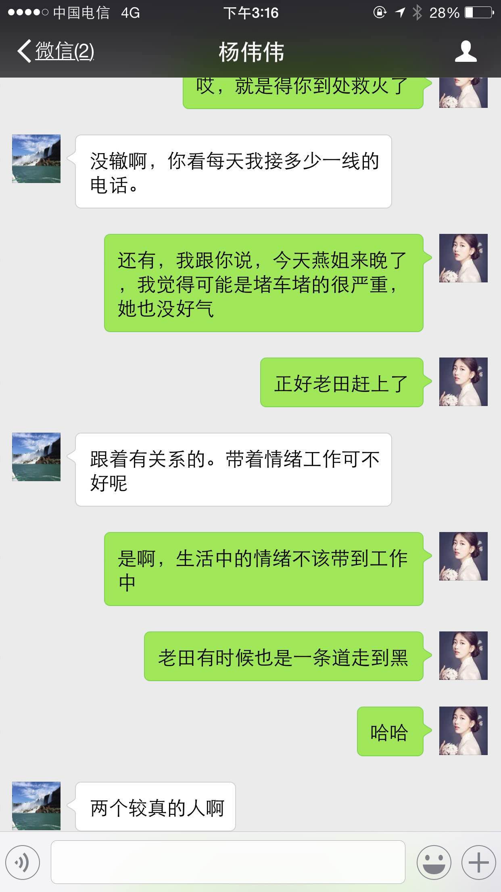 |
| 2016-05-12 15:16:31 | 你 | 不可能， |
| 2016-05-12 15:16:46 | 你 | 我长这么大还没有形同陌路的人呢 |
| 2016-05-12 15:16:56 | 你 | 昨天的聊天记录 |
| 2016-05-12 15:17:16 | 我 | 关键是我认为你误解我了，我会通过这种方式证明自己 |
| 2016-05-12 15:17:30 | 你 | 哦，好吧 |
| 2016-05-12 15:17:46 | 我 | 老杨也挺无奈的 |
| 2016-05-12 15:17:47 | 你 | 证明不证明有什么意义 |
| 2016-05-12 15:17:53 | 你 | 是啊，很无奈 |
| 2016-05-12 15:18:36 | 我 | 因为我很怕麻烦，知道你这么想了，我肯定躲的远远的，怕麻烦 |
| 2016-05-12 15:23:32 | 我 | 我去给你找网易音乐 |
| 2016-05-12 15:23:55 | 你 | 哈哈 好 |
| 2016-05-12 15:24:09 | 我 | 你可以使用微博的账号登录 |
| 2016-05-12 15:24:24 | 我 | 这样你喜欢的歌单就可以同步了 |
| 2016-05-12 15:24:40 | 你 | 好 |
| 2016-05-12 15:25:04 | 我 | 要是加了好友应该还可以直接分享 |
| 2016-05-12 15:45:21 | 你 | 下下来了吗 |
| 2016-05-12 15:45:34 | 我 | 同步的目录里面 |
| 2016-05-12 15:45:40 | 我 | 忘了告诉你了 |
| 2016-05-12 15:45:55 | 我 | 手机可以从app store里面下 |
| 2016-05-12 15:46:12 | 我 | 用公司的Wi-Fi需要开VPN |
| 2016-05-12 15:47:13 | 我 | 你要是不会你就找我，我给你弄 |
| 2016-05-12 15:48:47 | 你 | 手机的我自己弄 |
| 2016-05-12 15:48:51 | 你 | 我有4G |
| 2016-05-12 15:49:26 | 我 | 别浪费流量啦 |
| 2016-05-12 15:53:01 | 我 | VPN你用香港2号PPTP，这个快 |
| 2016-05-12 15:53:42 | 我 | 回来我们再买一个路由器，这样Wi-Fi就好用一点 |
| 2016-05-12 16:19:51 | 我 | 你很忙吗？ |
| 2016-05-12 16:20:06 | 你 | 还行 怎么了 |
| 2016-05-12 16:20:10 | 你 | 不是特别忙 |
| 2016-05-12 16:20:23 | 我 | 没事，看你一直整理文档 |
| 2016-05-12 16:20:35 | 你 | 我写软需呢 |
| 2016-05-12 16:20:51 | 我 | 好 |
| 2016-05-12 16:24:28 | 你 | 我想跟你问几个问题 |
| 2016-05-12 16:24:36 | 我 | 嗯 |
| 2016-05-12 16:24:43 | 你 | 第一 你喜欢听我跟你说我跟领导的事吗 |
| 2016-05-12 16:24:53 | 我 | 喜欢 |
| 2016-05-12 16:25:01 | 你 | 不许骗我啊 |
| 2016-05-12 16:25:07 | 我 | 不骗你 |
| 2016-05-12 16:25:27 | 你 | 你是以什么心态看待这件事 |
| 2016-05-12 16:26:29 | 我 | 你先说你担心什么吧 |
| 2016-05-12 16:26:40 | 你 | 你先忙吧 |
| 2016-05-12 16:26:43 | 你 | 忙吗 |
| 2016-05-12 16:27:14 | 我 | 不忙 |
| 2016-05-12 16:27:27 | 我 | 因为你忙我才给自己找点事情 |
| 2016-05-12 16:27:38 | 我 | 要不然就显得我太闲了 |
| 2016-05-12 16:28:34 | 你 | 哈哈 |
| 2016-05-12 16:28:51 | 我 | 你说说你担心什么吧 |
| 2016-05-12 16:29:02 | 我 | 你不会无缘无故的问我这个问题 |
| 2016-05-12 16:31:23 | 你 | 就是以我现在对你的了解 我想你不应该是喜欢听我说这些事的 |
| 2016-05-12 16:31:34 | 你 | 对你的了解这么说不太正确 |
| 2016-05-12 16:31:53 | 你 | 应该说我的认知转移到你身上 |
| 2016-05-12 16:32:00 | 你 | 所以我想知道你的想法 |
| 2016-05-12 16:32:31 | 我 | 好，那么你的认知是什么？或者说你认为我应该是什么样的 |
| 2016-05-12 16:32:42 | 我 | 我先声明 |
| 2016-05-12 16:32:58 | 我 | 这个和这个问题关系不大，其实我还是想了解你 |
| 2016-05-12 16:33:20 | 我 | 我之所以先不告诉你答案，是怕我的答案会对你有影响 |
| 2016-05-12 16:33:29 | 你 | 我明白 |
| 2016-05-12 16:33:39 | 我 | 你也可以不告诉我，我就直接告诉你答案 |
| 2016-05-12 16:34:17 | 你 | 我现在的感觉就跟东海离职 你想大家怎么议论你一样 类比到我这 就是我跟领导聊天 我想你怎么想我 |
| 2016-05-12 16:34:26 | 你 | 不用 我先跟你说 |
| 2016-05-12 16:34:35 | 我 | 好 |
| 2016-05-12 16:36:34 | 你 | 你可能觉得我攀附领导吧 而且我老是跟你说跟他的事 怕你会烦 |
| 2016-05-12 16:36:45 | 你 | 或者说 我太心机了 |
| 2016-05-12 16:36:47 | 你 | 之类的饿 |
| 2016-05-12 16:36:51 | 你 | 反正没好的 |
| 2016-05-12 16:37:06 | 我 | 嗯，还有吗 |
| 2016-05-12 16:37:52 | 你 | 没了 |
| 2016-05-12 16:39:12 | 我 | 你这个也是你的心魔吧 |
| 2016-05-12 16:39:27 | 你 | 算不上 |
| 2016-05-12 16:39:30 | 你 | 这是小事 |
| 2016-05-12 16:39:41 | 你 | 你要是跟我说一句 你不想听 我就不跟你说了 |
| 2016-05-12 16:39:45 | 你 | 这个没事 |
| 2016-05-12 16:41:05 | 我 | 这个我回来再和你详说，之所以说是你的心魔是因为你和我提了不止一次了 |
| 2016-05-12 16:41:12 | 我 | 我先告诉你答案 |
| 2016-05-12 16:41:39 | 你 | 好 |
| 2016-05-12 16:46:44 | 我 | 我看待你可能更像你姑姑那样 |
| 2016-05-12 16:47:16 | 我 | 关于你和领导的事情，我更多的是从帮助你和保护你的角度考虑的 |
| 2016-05-12 16:47:26 | 我 | 所以肯定不是不想听 |
| 2016-05-12 16:47:55 | 你 | 好 |
| 2016-05-12 16:47:59 | 我 | 只要你愿意和我说，我都愿意听 |
| 2016-05-12 16:48:32 | 我 | 其实对你所有的事情基本上都是从这两个角度去考虑的 |
| 2016-05-12 16:48:46 | 我 | 包括你姐和你对象 |
| 2016-05-12 16:48:47 | 你 | 分析我 保护我 |
| 2016-05-12 16:48:58 | 我 | 帮助你 保护你 |
| 2016-05-12 16:49:06 | 你 | 哦 对 |
| 2016-05-12 16:49:09 | 你 | 好吧 |
| 2016-05-12 16:49:24 | 你 | 然后你觉得在这个过程中获得了快乐 |
| 2016-05-12 16:51:17 | 我 | 是你的快乐让我快乐 |
| 2016-05-12 16:51:26 | 你 | 太不可思议了 |
| 2016-05-12 16:51:44 | 你 | 好吧 |
| 2016-05-12 16:51:48 | 你 | 为什么？ |
| 2016-05-12 16:51:55 | 你 | 算了 不问这个了 |
| 2016-05-12 16:52:03 | 你 | 我还有问题 |
| 2016-05-12 16:52:06 | 我 | 你先别纠正这个啦 |
| 2016-05-12 16:52:31 | 我 | 你接着问 |
| 2016-05-12 16:53:02 | 你 | 你说你现在最信任的是宋 旭明不是 |
| 2016-05-12 16:53:07 | 你 | 为什么旭明不行 |
| 2016-05-12 16:53:14 | 你 | 我跟你说说我的理由 |
| 2016-05-12 16:53:19 | 我 | 好 |
| 2016-05-12 16:53:44 | 你 | 有两个原因 |
| 2016-05-12 16:55:09 | 你 | 一是他没有原则 二是他弱点太多 太容易被收买 |
| 2016-05-12 16:55:20 | 你 | 其实还是没有原则 |
| 2016-05-12 16:56:10 | 我 | 你说的没错 |
| 2016-05-12 16:57:28 | 你 | 你以后老田不在的时候 防着点王志新 |
| 2016-05-12 16:57:40 | 你 | 说话的时候 |
| 2016-05-12 16:58:14 | 我 | 是，谢谢你提醒我 |
| 2016-05-12 16:58:57 | 你 | 有啥好谢的 |
| 2016-05-12 16:59:26 | 我 | 因为你的提醒对我价值很大 |
| 2016-05-12 16:59:33 | 你 | 你知道 今天月会 王志新有段时间没去 我回来一会 他一直跟旭明说话 |
| 2016-05-12 16:59:38 | 我 | 我以前一直没有想到 |
| 2016-05-12 16:59:47 | 我 | 嗯 |
| 2016-05-12 17:00:01 | 我 | 她刚来的时候，旭明和她说的比较多 |
| 2016-05-12 17:00:09 | 你 | 旭明这算是看不清形式吗 |
| 2016-05-12 17:01:42 | 你 | 不过也不算啥坏事 但是就怕他嘴没有守门的 啥都说出去 |
| 2016-05-12 17:01:59 | 你 | 我都啥也不敢跟他说 何况你 |
| 2016-05-12 17:02:14 | 你 | 唉 真不该在他这浪费时间 |
| 2016-05-12 17:02:15 | 我 | 是，也只能是这样了 |
| 2016-05-12 17:03:31 | 你 | 我还有一个问题 |
| 2016-05-12 17:03:49 | 我 | 说吧 |
| 2016-05-12 17:04:15 | 你 | 你说领导刚开始对杨丽颖好是因为你的缘故 我想知道为什么 |
| 2016-05-12 17:04:35 | 我 | 这很正常呀 |
| 2016-05-12 17:05:04 | 我 | 按照杨丽莹这个级别，其实领导是不会特别关注到他的 |
| 2016-05-12 17:05:27 | 我 | 领导关注她是因为我经常和她讨论问题 |
| 2016-05-12 17:05:51 | 你 | 哦 |
| 2016-05-12 17:05:52 | 你 | 好吧 |
| 2016-05-12 17:06:02 | 你 | 你说领导关注我跟你有关吗 |
| 2016-05-12 17:06:10 | 我 | 以前每次领导看见我和杨丽莹争论，都会问严丹最后是谁赢了 |
| 2016-05-12 17:06:27 | 你 | 恩 |
| 2016-05-12 17:06:29 | 我 | 现在这个阶段关系不大了 |
| 2016-05-12 17:07:17 | 我 | 其实领导刚开始并不关注你 |
| 2016-05-12 17:07:29 | 你 | 他从什么时候关注我的 |
| 2016-05-12 17:07:34 | 我 | 在答辩之前我和他特意提过几次 |
| 2016-05-12 17:07:42 | 你 | 哦 是吧 |
| 2016-05-12 17:07:51 | 我 | 特别是说你比较紧张，答辩怕成绩不好 |
| 2016-05-12 17:08:03 | 你 | 是吧 |
| 2016-05-12 17:08:05 | 我 | 说你当时有心理负担 |
| 2016-05-12 17:08:10 | 你 | 嗯嗯 |
| 2016-05-12 17:08:11 | 我 | 压力很大 |
| 2016-05-12 17:08:14 | 你 | 是 |
| 2016-05-12 17:08:23 | 你 | 可能严丹也会提过 |
| 2016-05-12 17:08:28 | 你 | 或者不提 |
| 2016-05-12 17:08:45 | 我 | 这样他就注意到你了 |
| 2016-05-12 17:08:49 | 你 | 是 |
| 2016-05-12 17:08:57 | 我 | 后来就比较简单了 |
| 2016-05-12 17:09:05 | 你 | 当时我在门口等着答辩的时候 他正好出来打电话 |
| 2016-05-12 17:09:08 | 我 | 也不需要我去推动什么了 |
| 2016-05-12 17:09:12 | 你 | 他还跟我说 别紧张 |
| 2016-05-12 17:57:07 | 我 | 你几点走？ |
| 2016-05-12 17:57:08 | 你 | 聊会天呗 |
| 2016-05-12 17:57:20 | 你 | 一会就走呗 |
| 2016-05-12 17:57:22 | 我 | 可以呀，我也想找你聊天呢 |
| 2016-05-12 17:57:28 | 你 | 咱们出去料吧 |
| 2016-05-12 17:57:30 | 你 | 聊 |
| 2016-05-12 17:57:36 | 你 | 不想在这待着 |
| 2016-05-12 17:57:44 | 我 | 好的 |
| 2016-05-12 17:57:53 | 你 | 反正他们也是聊闲片 |
| 2016-05-12 17:58:24 | 你 | 你有空吗 |
| 2016-05-12 17:58:41 | 你 | 去我们宿舍那边 |
| 2016-05-12 17:58:43 | 我 | 有 |
| 2016-05-12 17:58:46 | 我 | 好的 |
| 2016-05-12 17:59:28 | 我 | 我下一楼 |
| 2016-05-12 18:00:37 | 我 | 胖子他们可能会去吃饭 |
| 2016-05-12 18:01:06 | 你 | 我直接去超市 |
| 2016-05-12 18:01:31 | 你 | 说就说去超市碰到了 |
| 2016-05-12 18:02:05 | 我 | 好 |
| 2016-05-12 18:02:36 | 我 | 那我就直接去宿舍那边等你 |
| 2016-05-12 18:03:20 | 你 | 我就在你身后 |
| 2016-05-12 19:00:58 | 你 | |
| 2016-05-12 19:01:03 | 你 | |
| 2016-05-12 19:01:36 | 我 | 当然不是啦 |
| 2016-05-12 19:02:44 | 你 |
{kind=link}
{kind=link}
2016-05-13¶
| 2016-05-13 08:52:59 | 我 | 这周你加班吗？我这周去看儿子，两天都有时间陪你 |
| 2016-05-13 08:54:37 | 你 | 不加，我公公婆婆来 |
| 2016-05-13 08:54:46 | 我 | 好的 |
| 2016-05-13 09:31:05 | 你 | 我的糖是德芙和鲨鱼脆 比你的好吧 |
| 2016-05-13 09:31:48 | 我 | 是，我这最好的就是奶糖 |
| 2016-05-13 09:56:02 | 我 | 你的软需什么时候交 |
| 2016-05-13 09:56:54 | 你 | 评估的周期是五天 |
| 2016-05-13 09:56:59 | 你 | 周三开始写的 |
| 2016-05-13 09:57:18 | 我 | 写的完吗 |
| 2016-05-13 10:00:58 | 你 | 差不多 |
| 2016-05-13 10:01:01 | 你 | 写的完 |
| 2016-05-13 10:01:10 | 我 | 好的 |
| 2016-05-13 10:01:32 | 你 | 我结婚给你的喜糖是徐福记的吗 |
| 2016-05-13 10:02:03 | 我 | 是 |
| 2016-05-13 10:02:19 | 你 | 哦 好 |
| 2016-05-13 10:02:39 | 你 | 你看我这爆棚的人缘 |
| 2016-05-13 10:02:42 | 你 | 开心死我了 |
| 2016-05-13 10:02:55 | 我 | |
| 2016-05-13 10:31:06 | 你 | 你怎么最近老抽烟呢 |
| 2016-05-13 10:31:14 | 你 | 以前都没怎么见你抽过 |
| 2016-05-13 10:31:33 | 我 | 交际 |
| 2016-05-13 11:32:12 | 我 | 可惜我不能替你问 |
| 2016-05-13 11:32:20 | 你 | 没事 我自己问 |
| 2016-05-13 11:32:24 | 你 | 我就喜欢跟你说话 |
| 2016-05-13 11:33:03 | 我 | 我也喜欢 |
| 2016-05-13 11:33:12 | 我 | 看着你就很美 |
| 2016-05-13 12:17:33 | 你 | 是你没还是我美 |
| 2016-05-13 12:18:01 | 你 | 你说的是看着我很美？ |
| 2016-05-13 12:18:13 | 我 | 你长得美，我看着你心里美 |
| 2016-05-13 12:18:19 | 你 | 这句话有三个意思，你是哪个？ |
| 2016-05-13 12:19:00 | 我 | 你猜呢 |
| 2016-05-13 12:22:11 | 你 | 我第一感觉是你说我美，再看，觉得你说你美，再看看，觉得你说你觉得我美 |
| 2016-05-13 12:22:24 | 我 | 😄 |
| 2016-05-13 12:22:36 | 我 | 你就往好里猜吧 |
| 2016-05-13 12:22:42 | 你 | 此美非彼美 |
| 2016-05-13 12:25:02 | 我 | 一句话囊括了三种感觉 |
| 2016-05-13 12:36:13 | 我 | 你不睡吗 |
| 2016-05-13 13:50:28 | 我 | 有空聊天吗？ |
| 2016-05-13 13:50:38 | 你 | haixing |
| 2016-05-13 13:51:24 | 我 | 好模糊的一个概念呀 |
| 2016-05-13 13:52:10 | 你 | 看到领导说我们写的调研报告不错了吗 |
| 2016-05-13 13:53:15 | 我 | 看到了，没看到附件 |
| 2016-05-13 13:53:40 | 你 | 没事 提的都是细节问题 |
| 2016-05-13 13:55:55 | 你 | 可以聊天啊 |
| 2016-05-13 13:55:59 | 我 | 好的 |
| 2016-05-13 13:56:16 | 我 | 其实我还没睡醒，头晕乎乎的 |
| 2016-05-13 13:56:28 | 我 | 昨天晚上睡的非常不好 |
| 2016-05-13 13:56:32 | 你 | 怎么不睡会 |
| 2016-05-13 13:56:38 | 你 | 怎么了 跟我有关吧 |
| 2016-05-13 13:56:53 | 我 | 是 |
| 2016-05-13 13:57:11 | 我 | 脑子里想的都是你的事情 |
| 2016-05-13 13:57:19 | 你 | 我就说是 |
| 2016-05-13 13:58:15 | 我 | 你昨天和我说了那么多事情，我又这么重视，想无关都不可能 |
| 2016-05-13 13:58:31 | 你 | 没事啊 |
| 2016-05-13 13:58:34 | 你 | 没那么严重 |
| 2016-05-13 13:58:43 | 你 | 我们挺好的 我就怕你这样 |
| 2016-05-13 14:06:16 | 你 | 何以不理我呢？ |
| 2016-05-13 14:06:24 | 你 | 我是不是太得瑟了 |
| 2016-05-13 14:06:34 | 我 | 正在看洪越让我评估的在线升级的需求 |
| 2016-05-13 14:06:40 | 我 | 比较变态的一个需求 |
| 2016-05-13 14:07:01 | 我 | 现在田根本就不管事，原来这种需求领导都是直接拒掉的 |
| 2016-05-13 14:07:25 | 我 | 现在田让我们评估，如果我们做不了再让 DMD 评估 |
| 2016-05-13 14:07:27 | 你 | 哦 |
| 2016-05-13 14:07:43 | 我 | 这不就是让我来承担责任吗 |
| 2016-05-13 14:07:48 | 你 | 这比较麻烦 |
| 2016-05-13 14:07:50 | 你 | 对啊 |
| 2016-05-13 14:08:07 | 你 | 这不是把他的事推给你么 |
| 2016-05-13 14:08:14 | 我 | 我正在想怎么回复呢 |
| 2016-05-13 14:08:42 | 我 | 关键是我无论怎么回复，着力点都到不了田那，有点郁闷 |
| 2016-05-13 14:09:05 | 你 | 不是啊 |
| 2016-05-13 14:09:13 | 你 | 你给出建议推掉就行了 |
| 2016-05-13 14:09:27 | 你 | 建议推掉 不给DMD |
| 2016-05-13 14:09:38 | 我 | 这就是田想让我说的 |
| 2016-05-13 14:10:00 | 你 | 那你就说评估做不了 |
| 2016-05-13 14:10:09 | 我 | 然后无论 DMD 能不能做他都可以和领导说老王评估做不了的 |
| 2016-05-13 14:10:10 | 你 | 具体给不给DMD让他做去 |
| 2016-05-13 14:10:45 | 你 | 那你建议推掉怎么了 |
| 2016-05-13 14:10:56 | 你 | 老杨不也是会推掉吗 |
| 2016-05-13 14:11:21 | 我 | 你没想明白 |
| 2016-05-13 14:11:51 | 我 | 推掉的理由是什么很重要 |
| 2016-05-13 14:22:03 | 我 | 老杨推可以说是产品问题，我就不能用这个理由，我只能使用技术理由，那么最后的结果就是我们的技术不行，你知道老杨其实很讨厌这个理由，我以前用过几次，他后来都和我单独谈过 |
| 2016-05-13 14:22:44 | 你 | 哈哈 |
| 2016-05-13 14:22:48 | 你 | 是啊 |
| 2016-05-13 14:22:50 | 我 | 我觉得领导可能和田抱怨过我用的理由，田现在这么做就让我非常为难 |
| 2016-05-13 14:22:52 | 你 | 就是 |
| 2016-05-13 14:23:22 | 你 | 你别想那么多 老田现在是啥事都不知道怎么办 也不一定是故意刁难你 |
| 2016-05-13 14:25:57 | 我 | 你太小看他了 |
| 2016-05-13 14:26:16 | 我 | 还告诉你一件事情吧 |
| 2016-05-13 14:26:25 | 我 | 你知道团建吗 |
| 2016-05-13 14:26:29 | 你 | 恩 |
| 2016-05-13 14:26:49 | 我 | 田给各组主管发通知，让统计信息 |
| 2016-05-13 14:27:03 | 你 | 然后呢 |
| 2016-05-13 14:27:21 | 我 | 你才一组他发给谁了 |
| 2016-05-13 14:27:57 | 你 | 旭明？ |
| 2016-05-13 14:28:30 | 我 | 王志 |
| 2016-05-13 14:28:37 | 我 | 奇怪吧 |
| 2016-05-13 14:28:44 | 你 | 不奇怪 |
| 2016-05-13 14:28:50 | 我 | 你说说 |
| 2016-05-13 14:29:21 | 你 | 因为你们一组王志不是统计信息的吗 就是偏项目管理类的 |
| 2016-05-13 14:29:32 | 你 | 但是他不应该直接发给王志 |
| 2016-05-13 14:30:06 | 我 | 我说的就是这个奇怪 |
| 2016-05-13 14:30:17 | 你 | 是 |
| 2016-05-13 14:30:30 | 我 | 这就好像我直接找你让你去做需求分析一样 |
| 2016-05-13 14:30:53 | 你 | 是啊 |
| 2016-05-13 14:30:57 | 你 | 越级了 |
| 2016-05-13 14:31:18 | 我 | 他不会不懂这些吧 |
| 2016-05-13 14:31:25 | 我 | 他是无意的？ |
| 2016-05-13 14:31:43 | 我 | 那为什么测试组不让张蓓蓓去做？ |
| 2016-05-13 14:36:06 | 你 | 哈哈 |
| 2016-05-13 14:36:41 | 我 | 你知道给我是什么感觉吗？ |
| 2016-05-13 14:38:04 | 你 | 说说 |
| 2016-05-13 14:38:35 | 我 | 他在逐渐插手研发一组，然后把我架空 |
| 2016-05-13 14:38:54 | 我 | 我不知道这是领导授意的还是他自己的决定 |
| 2016-05-13 14:39:21 | 你 | 不可能 |
| 2016-05-13 14:39:37 | 我 | 什么不肯 |
| 2016-05-13 14:39:45 | 我 | 什么不可能 |
| 2016-05-13 14:39:57 | 你 | 你这个推测是错的 |
| 2016-05-13 14:40:18 | 我 | 你说说理由 |
| 2016-05-13 14:40:21 | 你 | 前几天 就是你跟我说田直接让旭明出差那次 |
| 2016-05-13 14:41:56 | 你 | 隔了很多天以后 领导说话 就是话赶话就说到 {这肯定不行啊，你不可能直接让xx干活不通知XX，就像你不能直接命令旭明，不通知老王一样} |
| 2016-05-13 14:42:03 | 你 | 我当时听得清清楚楚 |
| 2016-05-13 14:42:43 | 你 | 而且 前天还跟你说让你看着耿燕呢 |
| 2016-05-13 14:42:55 | 我 | 嗯 |
| 2016-05-13 14:43:09 | 我 | 你的意思就是说不是领导授意的？ |
| 2016-05-13 14:43:22 | 你 | 当然不是啦 |
| 2016-05-13 14:43:27 | 我 | 对 |
| 2016-05-13 14:43:34 | 你 | 你说了 领导是个很实际的人 |
| 2016-05-13 14:43:51 | 我 | 那么就是他自己决定的啦 |
| 2016-05-13 14:44:04 | 你 | 他再想提老田 也不可以毁了开发中心为代价 |
| 2016-05-13 14:44:11 | 我 | 所以领导其实也不清楚这里面的事情 |
| 2016-05-13 14:44:24 | 我 | 如果是这样，我的回复就更难了 |
| 2016-05-13 14:44:43 | 你 | 你把我搞糊涂了 |
| 2016-05-13 14:44:50 | 你 | 领导肯定不知道这事啊 |
| 2016-05-13 14:44:53 | 我 | 有可能就给田留下话柄，让领导认为是我在推脱责任 |
| 2016-05-13 14:45:21 | 你 | 我觉得你把你的难处直接说出来就行了 |
| 2016-05-13 14:45:32 | 我 | 和谁说？ |
| 2016-05-13 14:45:33 | 你 | 我们做不了 直接说做不了的理由 |
| 2016-05-13 14:45:47 | 你 | 回复老田 做不了 为什么做不了写清楚 |
| 2016-05-13 14:45:55 | 你 | 这才是你的责任 |
| 2016-05-13 14:46:19 | 你 | 为什么做不了 你的把理由说的有理有据 |
| 2016-05-13 14:46:24 | 你 | 别一句做不了 |
| 2016-05-13 14:46:29 | 你 | 领导肯定不喜欢 |
| 2016-05-13 14:46:37 | 你 | 但是说清楚就行 |
| 2016-05-13 14:46:40 | 我 | 你说的没错，但是这里面还涉及到一个问题，如果 DMD能做，那么我们到底做不做 |
| 2016-05-13 14:46:58 | 我 | 我是不想做这个，风险太大 |
| 2016-05-13 14:47:11 | 你 | 其实我觉得我们能不能做 跟DMD能不能做没关系 |
| 2016-05-13 14:47:20 | 你 | 做不做你也不用拍 |
| 2016-05-13 14:47:24 | 你 | 你只是评估 |
| 2016-05-13 14:47:27 | 我 | 但是如果 DMD 说可以做，那么对领导的影响就不好 |
| 2016-05-13 14:47:50 | 我 | 你还是太简单啦 |
| 2016-05-13 14:47:57 | 你 | 你把风险说出来 做不做老田说了算 |
| 2016-05-13 14:48:08 | 我 | 就想你说的，和我关系不大，但是和领导关系很大 |
| 2016-05-13 14:48:26 | 我 | 特别是领导在武总崔总面前，关系很大 |
| 2016-05-13 14:48:40 | 你 | 我知道 但是得罪领导的事让老田去做 他那半级比你高的不就在这吗 |
| 2016-05-13 14:49:04 | 你 | 那我问你 做你能做得了吗 |
| 2016-05-13 14:52:00 | 我 | 很麻烦，如果只是做几个组件应该可以，所有的组件够呛 |
| 2016-05-13 14:52:24 | 你 | 唉 |
| 2016-05-13 14:54:13 | 我 | 你看见了吧，我这话还没说完就已经表现出来了 |
| 2016-05-13 14:56:24 | 你 | 你咋了 |
| 2016-05-13 14:57:33 | 我 | 让王志收集信息，王志不在群里面发，挨个人单独发微信要东西，绕过我 |
| 2016-05-13 14:58:04 | 你 | 为啥啊 |
| 2016-05-13 14:58:12 | 你 | 看你养的奸臣 |
| 2016-05-13 14:58:29 | 我 | 所以我说田找王志是故意的 |
| 2016-05-13 14:58:40 | 我 | 他不找旭明 |
| 2016-05-13 14:58:54 | 我 | 无论如何也轮不到王志呀 |
| 2016-05-13 14:59:00 | 你 | 可是这俩人怎么达成的一致协议啊 |
| 2016-05-13 14:59:11 | 你 | 真够气人啊 |
| 2016-05-13 14:59:18 | 我 | 不知道，这更证明我的担心 |
| 2016-05-13 15:05:19 | 我 | 你看王志过来巴结我了 |
| 2016-05-13 15:05:25 | 你 | 是 |
| 2016-05-13 15:05:36 | 你 | 你别往心里去了 |
| 2016-05-13 15:05:40 | 你 | 他也不知道怎么办 |
| 2016-05-13 15:05:46 | 我 | 这说明他心里有鬼 |
| 2016-05-13 15:05:59 | 我 | 他知道我为啥生气了 |
| 2016-05-13 15:06:23 | 你 | 是 |
| 2016-05-13 15:06:24 | 我 | 他们还是太嫩了 |
| 2016-05-13 15:06:40 | 你 | 没有啦 要是我我也这么做 |
| 2016-05-13 15:06:48 | 我 | 这不是此地无银三百两 |
| 2016-05-13 15:07:45 | 你 | 要是老田找我怎么办 |
| 2016-05-13 15:08:01 | 你 | 邮件抄送你了吗 |
| 2016-05-13 15:08:07 | 你 | 老田太不应该了 |
| 2016-05-13 15:08:14 | 我 | 找你干什么 |
| 2016-05-13 15:08:25 | 你 | 我说的是假如 |
| 2016-05-13 15:08:53 | 我 | 反正你也不在乎洪越，就答应呗 |
| 2016-05-13 15:09:09 | 我 | 最多和洪越说一声 |
| 2016-05-13 15:09:37 | 你 | 不是 如果我是王志 |
| 2016-05-13 15:09:53 | 你 | 这么说吧 如果老田叫阿娇 |
| 2016-05-13 15:10:39 | 你 | 哦哦 有问题喽 |
| 2016-05-13 15:10:43 | 你 | 严丹知道吗 |
| 2016-05-13 15:10:50 | 我 | 不知道 |
| 2016-05-13 15:11:16 | 我 | 王志应该先来问我这件事情该怎么办 |
| 2016-05-13 15:11:29 | 我 | 然后按照我说的去办 |
| 2016-05-13 15:11:47 | 我 | 而不是现在这样直接绕过我 |
| 2016-05-13 15:11:48 | 你 | 就是 |
| 2016-05-13 15:11:52 | 你 | 我就想说这个 |
| 2016-05-13 15:12:07 | 你 | 要是我 我就会先找你 问你怎么办 |
| 2016-05-13 15:12:16 | 我 | 这很明显是在架空我 |
| 2016-05-13 15:12:21 | 你 | 就像当初老田找旭明一样 |
| 2016-05-13 15:12:40 | 你 | 旭明就应该先说 让他找你 |
| 2016-05-13 15:12:45 | 你 | 对吧 |
| 2016-05-13 15:12:46 | 我 | 旭明我不担心他架空我 |
| 2016-05-13 15:12:48 | 我 | 对 |
| 2016-05-13 15:13:21 | 我 | 看样子我得注意王志了 |
| 2016-05-13 15:14:23 | 你 | 王志那个人 |
| 2016-05-13 15:14:25 | 你 | 太那个了 |
| 2016-05-13 15:15:06 | 我 | 现在你明白我刚才和你说的田的事情了吧 |
| 2016-05-13 15:15:16 | 我 | 绝不是空穴来风 |
| 2016-05-13 15:16:32 | 你 | 恩 知道了 |
| 2016-05-13 15:17:51 | 我 | 你知道旭明他们说的“老王预料的事情经常发生，特别是坏事情” |
| 2016-05-13 15:18:33 | 你 | 哈哈 |
| 2016-05-13 15:19:05 | 我 | 唉 |
| 2016-05-13 15:19:48 | 我 | 包括你在内，没有人能真正了解我的预料能力 |
| 2016-05-13 15:20:40 | 你 | 是 |
| 2016-05-13 15:20:46 | 你 | 你想的比别人多 |
| 2016-05-13 15:26:56 | 你 | 你还生气呢吗 |
| 2016-05-13 15:27:12 | 我 | 不生气 |
| 2016-05-13 15:27:31 | 我 | 现在我心情不好就想找你聊天 |
| 2016-05-13 15:27:38 | 我 | 一聊天就没事了 |
| 2016-05-13 15:32:27 | 你 | 那就好 |
| 2016-05-13 15:33:05 | 我 | 说说我昨晚上吧 |
| 2016-05-13 15:33:55 | 我 | 其实也没什么，就是脑子老想你的事情，然后特别乱就没睡好 |
| 2016-05-13 15:34:25 | 我 | 主要也是因为我自己感觉不好 |
| 2016-05-13 15:36:45 | 你 | 恩 |
| 2016-05-13 15:37:03 | 你 | 别想那么多了 好好休息 |
| 2016-05-13 15:37:14 | 我 | 我告诉你我为啥特别重视自己的感觉 |
| 2016-05-13 15:37:23 | 我 | 有人说这就是第六感 |
| 2016-05-13 15:37:32 | 我 | 我以前是不相信第六感的 |
| 2016-05-13 15:37:59 | 我 | 不过这么多年以来，我的经历已经告诉我我的直觉有多准 |
| 2016-05-13 15:38:07 | 我 | 给你举个例子吧 |
| 2016-05-13 15:38:12 | 你 | 恩 好 |
| 2016-05-13 15:39:03 | 我 | 你发的朋友圈，当时我看了就感觉非常不好，所以就立刻问你了 |
| 2016-05-13 15:39:12 | 你 | 恩 |
| 2016-05-13 15:39:14 | 我 | 你说没事，我也就没有继续问 |
| 2016-05-13 15:39:41 | 我 | 结果下午你就告诉我原因了，比我想象的还要糟糕一点 |
| 2016-05-13 15:40:00 | 我 | 这就是我说的我的第六感，其实我是非常讨厌这个的 |
| 2016-05-13 15:45:51 | 我 | 因为每次都会灵验会让我不知所措 |
| 2016-05-13 15:46:12 | 你 | 没事的 |
| 2016-05-13 15:46:14 | 我 | 那种无力感比什么都让我倍感折磨 |
| 2016-05-13 15:46:19 | 你 | 每个人都会不知所措 |
| 2016-05-13 15:46:44 | 你 | 这可能也是你爱多想的原因 |
| 2016-05-13 15:46:50 | 我 | 所以我才会努力的去想，去做，尽力避免 |
| 2016-05-13 15:46:57 | 你 | 你是控制控 |
| 2016-05-13 15:46:58 | 我 | 你说的没错 |
| 2016-05-13 15:47:14 | 我 | 其实灵验的也就60%左右 |
| 2016-05-13 15:47:22 | 你 | 我知道 |
| 2016-05-13 15:47:28 | 我 | 所以有时候我就放弃不管了 |
| 2016-05-13 15:47:32 | 你 | 唉 |
| 2016-05-13 15:47:35 | 你 | 是啊 |
| 2016-05-13 15:47:41 | 你 | 你这样得多累啊 |
| 2016-05-13 15:47:46 | 我 | 比如我以前和你提过你对象可能会知道的事情 |
| 2016-05-13 15:47:55 | 我 | 你说没问题，你控制得了他 |
| 2016-05-13 15:48:00 | 我 | 我就没有继续 |
| 2016-05-13 15:48:18 | 你 | 恩 |
| 2016-05-13 15:48:27 | 你 | 现在也没失控 |
| 2016-05-13 15:48:35 | 我 | 现在我想明白一件事情，就是我只对那些有重大意义的事情敏感 |
| 2016-05-13 15:48:49 | 我 | 其他的即使是真的我也不去管他了 |
| 2016-05-13 15:49:13 | 你 | 其实你要明白 我若对你没有现在这么信任的话 是不愿意你插手我跟我对象的事 |
| 2016-05-13 15:49:26 | 我 | 这也是我前两天提出和你聊聊你对象的主要原因 |
| 2016-05-13 15:49:30 | 我 | 是的，我知道 |
| 2016-05-13 15:49:43 | 我 | 我也非常感激你对我的信任 |
| 2016-05-13 15:49:49 | 你 | 是 |
| 2016-05-13 15:50:07 | 你 | 所以如果你背叛我的话 我会很伤心的 |
| 2016-05-13 15:50:28 | 我 | 是，我知道，我永远都不会的 |
| 2016-05-13 16:33:10 | 你 | 老抽烟 |
| 2016-05-13 16:34:46 | 你 | 我知道 |
| 2016-05-13 16:34:56 | 你 | 田对洪越太不好了 |
| 2016-05-13 16:38:08 | 你 | 厚爱 |
| 2016-05-13 16:38:10 | 你 | 好 |
| 2016-05-13 16:39:23 | 你 | 好处多 |
| 2016-05-13 16:39:52 | 你 | 好 |
| 2016-05-13 16:40:01 | 你 | 别 |
| 2016-05-13 16:40:03 | 你 | 让王志 |
| 2016-05-13 16:40:22 | 你 | 王志在外屋也起不到看着外边人的作用 |
| 2016-05-13 16:40:42 | 你 | 他还老把你拍给他的活让别人干 |
| 2016-05-13 16:42:56 | 你 | 那外边人怎么办啊 |
| 2016-05-13 16:44:33 | 你 | 那就得旭明来了 |
| 2016-05-13 16:44:55 | 你 | 其实外边人也不用咋管 而且不授权 管也没人听 |
| 2016-05-13 16:45:05 | 我 | 是 |
| 2016-05-13 17:15:27 | 你 | 亲 我的邮件这边显示我是李总 别人那不会也是吧 |
| 2016-05-13 17:15:50 | 我 | 是 |
| 2016-05-13 17:16:29 | 我 | 不过应该只是我发给你的，转发的应该不是吧 |
| 2016-05-13 17:17:31 | 你 | 我不知道 |
| 2016-05-13 17:17:38 | 你 | 你单独给我发一个试试 |
| 2016-05-13 17:18:03 | 我 | 你是哪个邮件，你告诉我标题 |
| 2016-05-13 17:18:41 | 你 | 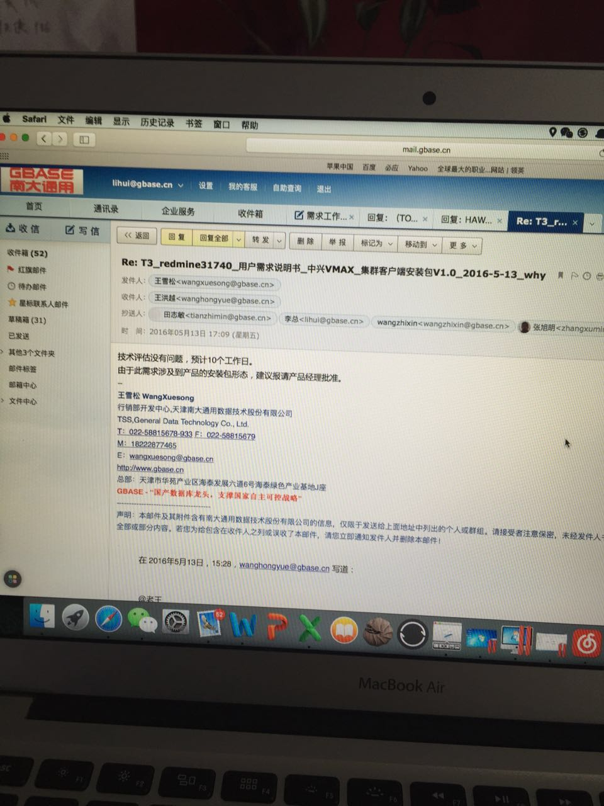 |
| 2016-05-13 17:18:53 | 你 | 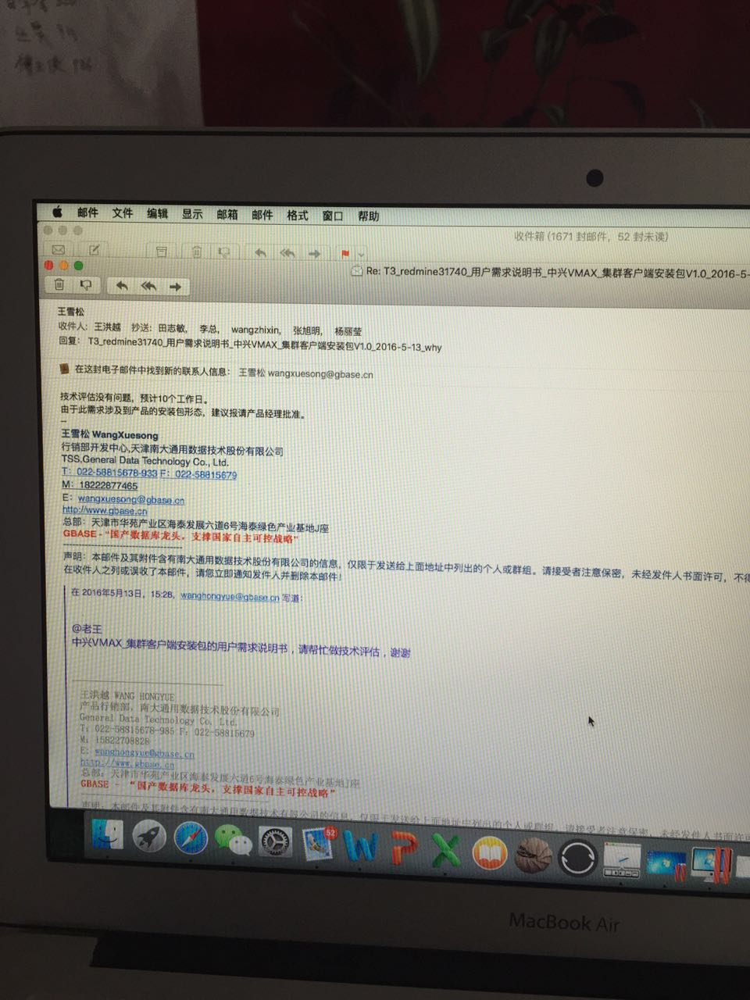 |
| 2016-05-13 17:19:22 | 我 | 知道了，就是我的问题，我回来改过来 |
| 2016-05-13 17:19:33 | 你 | 恩 好 |
| 2016-05-13 17:32:08 | 你 | 你几点走 |
| 2016-05-13 17:32:18 | 我 | 50之前 |
| 2016-05-13 17:38:02 | 你 | 你别想太多了 回家好好休息 |
| 2016-05-13 17:38:11 | 我 | 是 |
| 2016-05-13 17:38:24 | 我 | 可惜这两天没法和你聊天了 |
| 2016-05-13 17:38:30 | 你 | 是 |
| 2016-05-13 17:38:35 | 你 | 我有空一定找你 |
| 2016-05-13 17:38:46 | 我 | 好的 |
| 2016-05-13 17:52:38 | 你 | 怎么了，我帮你听着 |
| 2016-05-13 17:52:52 | 我 | 番薯的事情 |
| 2016-05-13 17:53:15 | 你 | 我知道 你不怕赶不上车吗 |
| 2016-05-13 17:54:09 | 你 | 我帮你听着吧 |
| 2016-05-13 17:54:18 | 你 | 关键点是啥 |
| 2016-05-13 17:59:39 | 我 | 我不敢走是怕田给番薯使坏 |
| 2016-05-13 18:00:13 | 我 | 严丹对番薯意见特别大 |
| 2016-05-13 18:00:39 | 你 | 气死了吧 |
| 2016-05-13 18:01:48 | 我 | 是 |
| 2016-05-13 18:02:02 | 你 | 我都看出你生气来了 |
| 2016-05-13 18:02:44 | 你 | 老田说估代码量 |
| 2016-05-13 18:02:49 | 你 | 领导说可以 |
| 2016-05-13 18:03:07 | 我 | 我就说吧 |
| 2016-05-13 18:03:23 | 我 | 果然在背后使坏 |
| 2016-05-13 18:03:46 | 我 | 哪有这么评估工作量的 |
| 2016-05-13 18:04:05 | 你 | 领导同意了 |
| 2016-05-13 18:04:39 | 我 | 他不敢在我面前说 |
| 2016-05-13 18:04:50 | 我 | 回来再说吧 |
| 2016-05-13 18:04:59 | 我 | 不行我就不管了 |
| 2016-05-13 18:05:08 | 我 | 让他一个人去管好了 |
| 2016-05-13 18:06:41 | 你 | 我觉得没事 |
| 2016-05-13 18:10:27 | 我 | 你看我说田是故意的没错吧 |
| 2016-05-13 18:21:58 | 你 | 我回家了 |
| 2016-05-13 18:22:13 | 我 | bye |
{kind=link}
{kind=link}
2016-05-14¶
| 2016-05-14 14:13:01 | 你 | 你不用回我邮件 |
| 2016-05-14 14:13:04 | 你 | 别回了 |
2016-05-16¶
| 2016-05-16 09:15:03 | 你 | 干嘛呢 |
| 2016-05-16 09:15:20 | 我 | 整 R1的计划呢 |
| 2016-05-16 09:15:59 | 你 | 我没事 随便问问 你整吧 |
| 2016-05-16 09:16:13 | 我 | 好的 |
| 2016-05-16 09:29:32 | 我 | 你今天需要写软需吧 |
| 2016-05-16 09:29:50 | 你 | 没事 我差不多写完了 |
| 2016-05-16 10:12:46 | 你 | 升等的那个资料谁看啊 发给谁呢 |
| 2016-05-16 10:14:52 | 我 | 你给洪越，洪越给田 |
| 2016-05-16 10:21:45 | 我 | [链接] Mac 下提升工作效率的方式 - 文章 - 伯乐在线 |
| 2016-05-16 11:26:58 | 我 | 她掉坑里了 |
| 2016-05-16 11:40:37 | 你 | 周会有事吗？ |
| 2016-05-16 11:40:54 | 我 | 一堆事 |
| 2016-05-16 13:34:40 | 我 | 大老远的就听见你的脚步声了 |
| 2016-05-16 13:35:03 | 你 | 是呢 |
| 2016-05-16 13:35:05 | 你 | 烦死了 |
| 2016-05-16 13:35:11 | 你 | 下次不穿这双鞋了 |
| 2016-05-16 13:35:40 | 你 | 这次是王志新 不是我啊 |
| 2016-05-16 13:36:13 | 我 | 哈哈 |
| 2016-05-16 13:37:40 | 我 | 你下午干什么 |
| 2016-05-16 13:37:59 | 你 | 没啥事 |
| 2016-05-16 13:40:22 | 我 | 我今天就现在有空，4点以后就是好几个会了 |
| 2016-05-16 13:40:57 | 你 | 好吧 你先把手机铃声调小点 |
| 2016-05-16 13:41:12 | 我 | 是，已经调小了 |
| 2016-05-16 13:41:55 | 你 | 好的 |
| 2016-05-16 13:42:01 | 你 | 我对象上班了 |
| 2016-05-16 13:42:07 | 我 | 好的 |
| 2016-05-16 13:43:01 | 你 | 这个单位离咱们就6，7分钟的车程 |
| 2016-05-16 13:43:18 | 我 | 哦 |
| 2016-05-16 13:43:19 | 你 | 我早上跟他一起上班 他开车 晚上他接我下班 |
| 2016-05-16 13:43:27 | 我 | 在环内？ |
| 2016-05-16 13:43:36 | 你 | 环外 |
| 2016-05-16 13:43:47 | 我 | 我说今天没看见你的车 |
| 2016-05-16 13:44:54 | 你 | 是啊 以后没事都是他开车上班了 |
| 2016-05-16 13:45:06 | 你 | 有事的话会我开 我也不想开 |
| 2016-05-16 13:45:07 | 我 | 嗯 |
| 2016-05-16 13:45:27 | 我 | 哈哈，你还是胆小吗？ |
| 2016-05-16 13:46:32 | 你 | 不全是 |
| 2016-05-16 13:46:55 | 我 | 不会和我一样怕麻烦吧 |
| 2016-05-16 13:47:07 | 你 | 我不知道你指的什么 |
| 2016-05-16 13:47:19 | 你 | 我只是觉得东东可能想开 |
| 2016-05-16 13:47:24 | 我 | 那倒是 |
| 2016-05-16 13:47:34 | 你 | 我开不开都行 都无所谓 |
| 2016-05-16 13:47:40 | 我 | 我光想着你了 |
| 2016-05-16 13:47:44 | 你 | 男孩子嘛 |
| 2016-05-16 13:48:13 | 我 | 是 |
| 2016-05-16 13:50:27 | 我 | @禅悟禅语：“老天不给你困难，你又如何看透人心；老天不给你失败，你又如何发现身边的人是真是假；老天不给你孤独，你又如何反思自省；老天不给你生命中配上君子和小人，你又如何懂得提高智商！老天对我们每个人都是公平的，有人让你哭了，一定会有人让你笑。” |
| 2016-05-16 13:50:50 | 你 | 哈哈 |
| 2016-05-16 13:50:54 | 你 | 说得好 |
| 2016-05-16 13:51:05 | 我 | 你看了我的朋友圈了吗 |
| 2016-05-16 13:51:21 | 你 | Alice的吗？ |
| 2016-05-16 13:51:29 | 我 | 是 |
| 2016-05-16 13:51:58 | 你 | 看了 |
| 2016-05-16 13:52:01 | 我 | 这个朋友圈只有你能看见 |
| 2016-05-16 13:52:03 | 你 | 很认真的看了 |
| 2016-05-16 13:52:08 | 你 | 真的吗 |
| 2016-05-16 13:52:18 | 我 | 真的，我只选了你 |
| 2016-05-16 13:52:25 | 你 | 嗯嗯 好吧 |
| 2016-05-16 13:52:46 | 你 | 我还想 你突然发这么个朋友圈 会不会有人觉得奇怪 |
| 2016-05-16 13:52:48 | 我 | 我觉得这篇写的特别好，把整个剧的中心都写出来了 |
| 2016-05-16 13:52:58 | 你 | 是呢 |
| 2016-05-16 13:53:04 | 你 | 写的很好 |
| 2016-05-16 13:53:28 | 我 | 没有脸谱化 |
| 2016-05-16 13:53:37 | 我 | 非常真实 |
| 2016-05-16 13:53:47 | 我 | 有优点也有缺点 |
| 2016-05-16 13:54:02 | 你 | 是 我收藏了 |
| 2016-05-16 13:54:06 | 我 | 是一个活生生的人 |
| 2016-05-16 13:54:34 | 我 | 这部剧确实是太经典了，不枉我追他7年 |
| 2016-05-16 14:46:43 | 我 | 你们谈完了？ |
| 2016-05-16 14:46:54 | 你 | 嗯哪 |
| 2016-05-16 14:46:55 | 你 | 完了 |
| 2016-05-16 14:47:21 | 我 | 我都有点嫉妒洪越了 |
| 2016-05-16 14:47:33 | 你 | 嫉妒啥啊 |
| 2016-05-16 14:47:34 | 你 | 哈哈 |
| 2016-05-16 14:47:50 | 我 | 你说呢 |
| 2016-05-16 14:47:59 | 你 | 我讨厌死他了 |
| 2016-05-16 14:48:06 | 你 | 我当然想跟你说话了 |
| 2016-05-16 14:48:11 | 我 | 我知道 |
| 2016-05-16 14:48:32 | 你 | 倒不是因为别的 |
| 2016-05-16 14:48:56 | 你 | 这个傻冒 软需里还说让我写xxxx至少包括xxxx |
| 2016-05-16 14:49:08 | 你 | 这测试的评审的时候能放过我啊 |
| 2016-05-16 14:49:17 | 我 | 😄 |
| 2016-05-16 14:49:20 | 你 | 还不问死 |
| 2016-05-16 14:49:24 | 我 | 是 |
| 2016-05-16 15:50:31 | 你 | 你干嘛去了 |
| 2016-05-16 16:02:40 | 我 | 开会呀，4点了 |
| 2016-05-16 16:19:43 | 你 | 开什么会呢「」 |
| 2016-05-16 16:20:08 | 我 | zmq的问题 |
| 2016-05-16 16:36:08 | 你 | 开会很忙吗 |
| 2016-05-16 16:36:26 | 我 | 是，差点吵起来 |
| 2016-05-16 16:36:33 | 我 | 旭明太肉 |
| 2016-05-16 16:36:41 | 你 | 那你先开会吧 |
| 2016-05-16 16:36:48 | 我 | 我直接和DMD吵 |
| 2016-05-16 16:36:59 | 你 | 啊？你吵啊 |
| 2016-05-16 16:37:10 | 我 | 是 |
| 2016-05-16 16:37:19 | 你 | 这家伙 |
| 2016-05-16 16:37:26 | 你 | 吵完了吗 |
| 2016-05-16 16:37:43 | 我 | 是 |
| 2016-05-16 16:38:05 | 你 | 这家伙 王志新一直跟老田问PPT的事 |
| 2016-05-16 16:38:23 | 你 | 王洪越啥也不说 明知道他俩说的不对 也不说话 |
| 2016-05-16 16:38:39 | 我 | 😄 |
| 2016-05-16 16:38:48 | 你 | 这就是人心 |
| 2016-05-16 16:39:16 | 你 | 领导没去开会吗 |
| 2016-05-16 16:39:25 | 你 | 怎么你和DMD的干起来了 |
| 2016-05-16 16:39:38 | 我 | 回来再说 |
| 2016-05-16 16:39:50 | 你 | 恩 好 |
| 2016-05-16 16:47:28 | 我 | DMD的张清伟强调他一直复现不出来 |
| 2016-05-16 16:47:36 | 我 | 所以质疑我们 |
| 2016-05-16 16:47:53 | 我 | 我就质疑他的复现方法不对 |
| 2016-05-16 16:48:03 | 我 | 他认为他的方法对 |
| 2016-05-16 16:48:10 | 我 | 这就吵起来了 |
| 2016-05-16 16:49:24 | 你 | 恩 好 |
| 2016-05-16 16:50:14 | 你 | 刚才老田问杨丽颖你们评审的结果了 |
| 2016-05-16 16:50:21 | 你 | 估计他不愿意跟你说话 |
| 2016-05-16 16:50:42 | 我 | 是 |
| 2016-05-16 18:28:18 | 你 | 领导给我回邮件了 |
| 2016-05-16 18:28:21 | 你 | 信息量好大 |
| 2016-05-16 18:28:31 | 我 | 好呀 |
| 2016-05-16 18:28:49 | 我 | 我说他应该看见了吧 |
| 2016-05-16 18:32:24 | 我 | ，你果然把我扔里面了 |
| 2016-05-16 18:33:50 | 你 | 但是这是领导的态度 |
| 2016-05-16 18:34:51 | 你 | 我的本意也不是把你扔坑里去 我以为这是老田和洪越的问题 怎么也涉及不到你 我也没想到领导会这样回复 |
| 2016-05-16 18:35:11 | 你 | 不过我深表歉意 对不起对不起，，，此处一万个对不起 |
| 2016-05-16 18:35:23 | 我 | 算了，就这样吧 |
| 2016-05-16 18:46:21 | 你 | 你跟我说说呗 |
| 2016-05-16 18:46:28 | 你 | 没生我的气吧 |
| 2016-05-16 18:48:04 | 你 | 不搭理我了 |
| 2016-05-16 18:48:10 | 你 | [惊恐] |
| 2016-05-16 18:48:19 | 我 | 没有生气 |
| 2016-05-16 18:48:29 | 我 | 我在琢磨怎么回领导呢 |
| 2016-05-16 18:48:43 | 你 | 回领导？ |
| 2016-05-16 18:48:55 | 我 | 不过也得谢谢你，其实领导一直是这个想法，你的邮件让我知道领导怎么想了 |
| 2016-05-16 18:49:07 | 我 | 总比到时候在临时抱佛脚好 |
| 2016-05-16 18:49:34 | 你 | 我觉得是这样 |
| 2016-05-16 18:49:35 | 我 | 可能还有一种情况 |
| 2016-05-16 18:49:49 | 我 | 哈哈，你的心是真宽 |
| 2016-05-16 18:50:07 | 我 | 这种情况就是由于你写的确实很细，误导了领导 |
| 2016-05-16 18:50:39 | 你 | 可是用需总是两句话的事啊 |
| 2016-05-16 18:50:44 | 你 | 这个是大家都知道的 |
| 2016-05-16 18:51:03 | 你 | 产品经理就拍这个就行了 |
| 2016-05-16 18:51:05 | 我 | 我一直说需求就只有一个，就是软需 |
| 2016-05-16 18:51:18 | 我 | 软需是连接用户和研发的 |
| 2016-05-16 18:51:22 | 你 | format=3 format=4这类的 都需要研发经理定 |
| 2016-05-16 18:51:33 | 你 | 我刚才看他的回复 有很多问题 |
| 2016-05-16 18:51:34 | 我 | 所以需要双方都来评审 |
| 2016-05-16 18:51:41 | 你 | 你先听我说玩 |
| 2016-05-16 18:51:43 | 你 | 完 |
| 2016-05-16 18:51:46 | 我 | 好吧 |
| 2016-05-16 18:52:15 | 你 | 他说软需应该跟研发经理一起写 我觉得是不对的 |
| 2016-05-16 18:53:00 | 你 | 软需写的很偏业务 |
| 2016-05-16 18:53:02 | 我 | 说对了一半 |
| 2016-05-16 18:53:12 | 你 | 算了 今天不说了 |
| 2016-05-16 18:53:59 | 我 | 没事，你说吧 |
| 2016-05-16 18:54:16 | 我 | 我真的没有生气，其实我现在都不生田的气 |
| 2016-05-16 18:54:21 | 你 | 我今天脑子很乱 等等我再想想 |
| 2016-05-16 18:54:27 | 我 | 我想了两天，想明白了好多事情 |
| 2016-05-16 18:54:30 | 你 | 对不起啊 |
| 2016-05-16 18:54:34 | 我 | 所以现在和他们我不生气 |
| 2016-05-16 18:54:35 | 你 | 真的 |
| 2016-05-16 18:54:39 | 你 | 非常对不起 |
| 2016-05-16 18:54:41 | 我 | 没事 |
| 2016-05-16 18:54:49 | 我 | 我真的是真心感谢你 |
| 2016-05-16 18:54:52 | 你 | 明天打球吗 |
| 2016-05-16 18:55:01 | 我 | 要不是你这么做，我真的不知道领导的想法 |
| 2016-05-16 18:55:12 | 你 | 反正我看领导回复的时候 汗毛都竖起来了 |
| 2016-05-16 18:55:19 | 我 | 我不好说明天打不打，我明天可能有事 |
| 2016-05-16 18:55:30 | 你 | 我就一直想着 怎么就把火都惹你那去了 |
| 2016-05-16 18:55:38 | 你 | 恩 我提醒你下 |
| 2016-05-16 18:55:42 | 我 | 我看的时候就是想笑 |
| 2016-05-16 18:55:45 | 你 | 打的话别忘了穿鞋 |
| 2016-05-16 18:55:52 | 我 | 嗯，我知道 |
| 2016-05-16 18:55:53 | 你 | 为啥啊 |
| 2016-05-16 18:56:03 | 我 | 我不是说我都想开了吗 |
| 2016-05-16 18:56:13 | 你 | 哦 |
| 2016-05-16 18:56:15 | 你 | 是吗 |
| 2016-05-16 18:56:16 | 我 | 所以这些事情对我没什么影响 |
| 2016-05-16 18:57:10 | 我 | 是，真的不骗你 |
| 2016-05-16 18:57:23 | 我 | 今天早上咱俩来说这事呢 |
| 2016-05-16 18:57:32 | 我 | 没想到让你说中了，我就想笑 |
| 2016-05-16 18:57:53 | 你 | 中啥了 |
| 2016-05-16 18:57:56 | 你 | 我都忘了 |
| 2016-05-16 18:58:53 | 我 | 你说不会给我惹事吧 |
| 2016-05-16 19:03:00 | 我 | @禅悟禅语：生活本不苦，苦的是欲望过多；心本无累，累的是放不下的太多。人生就是欲望和所求的不断减少的过程；命运的深层次意义，就是要学会放弃和回归，放弃一切浮躁喧嚣，回归内心的安宁。再苦，都要用今天的微笑，把它吟咏成一段从容的记忆；再累，都要用当下的遗忘，穿越万道红尘，让心波澜不惊。 |
| 2016-05-16 19:04:37 | 我 | 你看看这个，我就是这两天突然想通了 |
| 2016-05-16 19:05:11 | 你 | 唉 |
| 2016-05-16 19:05:27 | 你 | 我不知道 你真正想明白了就好 反正我是想不明白 |
| 2016-05-16 19:06:00 | 你 | 但是我感觉你并没有看开 |
| 2016-05-16 19:07:23 | 我 | 你说说我哪里没有看开？ |
| 2016-05-16 19:08:58 | 你 | 对老田 |
| 2016-05-16 19:10:19 | 我 | 你知道什么叫看开吗？ |
| 2016-05-16 19:10:31 | 你 | 就是不在乎呗 |
| 2016-05-16 19:10:34 | 我 | 就是我不会因为他的所作所为而生气 |
| 2016-05-16 19:10:54 | 我 | 我只会对事情 |
| 2016-05-16 19:11:20 | 你 | 哦 |
| 2016-05-16 19:11:22 | 你 | 好吧 |
| 2016-05-16 19:11:24 | 我 | 其实他的水平不高，如果我放下他，他不值一提 |
| 2016-05-16 19:11:27 | 你 | 你不生我气是吧 |
| 2016-05-16 19:11:32 | 你 | 对啊 |
| 2016-05-16 19:11:38 | 你 | 其实是的 |
| 2016-05-16 19:11:40 | 我 | 不生气，从来就没生气 |
| 2016-05-16 19:14:34 | 我 | 亲，我先走了 |
2016-05-17¶
| 2016-05-17 08:13:31 | 我 | 昨天你睡的够晚的 |
| 2016-05-17 08:14:00 | 你 | 是啊 |
| 2016-05-17 08:14:18 | 你 | 最近监控工具那个需求很烦人 |
| 2016-05-17 08:14:40 | 你 | 看我回的邮件 在点上不 |
| 2016-05-17 08:14:48 | 我 | 是，这是你从来没有写过的类型 |
| 2016-05-17 08:14:55 | 我 | 基本上都在点上 |
| 2016-05-17 08:24:01 | 你 | 干嘛呢 |
| 2016-05-17 08:24:12 | 我 | 没事，等你写日志呢 |
| 2016-05-17 08:24:44 | 你 | 我没有写日志 哈哈 |
| 2016-05-17 08:24:57 | 你 | 我昨天晚上干活了 顺便把日志写了 |
| 2016-05-17 08:25:12 | 我 | 哦 |
| 2016-05-17 08:25:37 | 我 | 今天我不去打球，家里有事，需要早点回去 |
| 2016-05-17 08:25:56 | 你 | 好 |
| 2016-05-17 08:27:47 | 你 | 昨天领导回复我了 说今天当面给我解惑 |
| 2016-05-17 08:27:54 | 你 | 我直接来了个 不行 |
| 2016-05-17 08:28:01 | 我 | 啊 |
| 2016-05-17 08:28:03 | 你 | 他回了个 ？给我 |
| 2016-05-17 08:28:07 | 我 | 为啥呀 |
| 2016-05-17 08:28:17 | 你 | 很正常啊 |
| 2016-05-17 08:28:43 | 你 | 我说我有想不明白的地方 得想想怎么反驳他 |
| 2016-05-17 08:28:48 | 你 | 把他逗乐了 |
| 2016-05-17 08:29:04 | 你 | 不过我说的也是事实 |
| 2016-05-17 08:29:06 | 我 | 哈哈 |
| 2016-05-17 08:29:16 | 你 | 所以我才敢那么在邮件里回的 |
| 2016-05-17 08:29:49 | 我 | 嗯 |
| 2016-05-17 08:30:04 | 你 | 昨天写完已经快12点了 |
| 2016-05-17 08:30:13 | 我 | 昨天写的比上次写的好多了 |
| 2016-05-17 08:30:22 | 你 | 是吗 |
| 2016-05-17 08:31:12 | 你 | 我看到他给我的时候就觉得说的不对 当然领导并没有写推理过程 而是直接告诉我这个该谁管 那个该谁管 |
| 2016-05-17 08:31:17 | 你 | 先不说我了 |
| 2016-05-17 08:31:29 | 你 | 我问问 你昨天那小猫脸太可爱了 |
| 2016-05-17 08:31:36 | 你 | 我昨晚上梦到你了 |
| 2016-05-17 08:32:09 | 我 | 我那个小猫是给你发的，就是想告诉你我很开心 |
| 2016-05-17 08:32:43 | 你 | 嗯嗯 我知道 |
| 2016-05-17 08:32:48 | 我 | 你梦到我什么了，不会是我生气训你吧 |
| 2016-05-17 08:34:00 | 你 | 才不是呢 |
| 2016-05-17 08:34:12 | 你 | 等会跟你说 超级好玩 |
| 2016-05-17 08:34:28 | 我 | 好的 |
| 2016-05-17 08:39:04 | 你 | 我梦见好多人来我家了，都是我这么大的情侣，大家一起玩，可是来了个跟蛇精一样的绿茶婊，而且是张宇媳妇，那个叫十一郎的，然后我在卫生间跟我姐姐和四姨洗头发，没有热水了，大家都在外边喝酒，一会那个绿茶婊和欢乐颂里的渣男曲连杰就去卫生间了，而且在亲热，我就赶紧出来了 |
| 2016-05-17 08:39:13 | 你 | 我看客厅有一对， |
| 2016-05-17 08:39:18 | 你 | 我就想去楼上吧 |
| 2016-05-17 08:39:28 | 你 | 梦里我们楼上也很大， |
| 2016-05-17 08:39:35 | 你 | 结果小屋也有一对 |
| 2016-05-17 08:39:48 | 你 | 我就赶紧去楼上了，和我姐， |
| 2016-05-17 08:39:54 | 你 | 结果楼上也有一对 |
| 2016-05-17 08:40:18 | 我 | |
| 2016-05-17 08:40:26 | 你 | 我就去楼上的窗户上，一开窗户，竟然看到你拿着香槟在外边 |
| 2016-05-17 08:40:37 | 你 | 当时我可高兴了 |
| 2016-05-17 08:40:50 | 你 | 你还有你儿子 |
| 2016-05-17 08:41:34 | 我 | 嗯 |
| 2016-05-17 08:41:35 | 你 | 我当时不知道，那是你儿子，就跟你说了句：里边好多啪啪啪的 |
| 2016-05-17 08:41:37 | 你 | 哈哈 |
| 2016-05-17 08:41:45 | 我 | 啊 |
| 2016-05-17 08:42:06 | 你 | 我就跳窗户出来，把我姐也叫上了 |
| 2016-05-17 08:42:36 | 你 | 出来以后，你给我俩介绍的你儿子，我给你介绍的我姐 |
| 2016-05-17 08:42:52 | 你 | 然后就没你戏份了，我就开始跟你儿子玩了， |
| 2016-05-17 08:42:58 | 你 | 结果闹钟就响了 |
| 2016-05-17 08:43:02 | 我 | |
| 2016-05-17 08:43:14 | 你 | 是不是特别好玩 |
| 2016-05-17 08:43:15 | 你 | 哈哈 |
| 2016-05-17 08:43:23 | 我 | 太好玩了 |
| 2016-05-17 08:43:27 | 你 | 我在想我怎么跟你说了那么一句话 |
| 2016-05-17 08:43:41 | 你 | 你知道啪啪啪是啥吧？ |
| 2016-05-17 08:43:54 | 我 | 知道，make L |
| 2016-05-17 08:43:59 | 你 | 哈哈 |
| 2016-05-17 08:44:08 | 你 | Do stuff |
| 2016-05-17 08:44:30 | 你 | 我还记得你现在外边和香槟的样子， |
| 2016-05-17 08:44:39 | 你 | 站在外边 |
| 2016-05-17 08:44:46 | 你 | 喝香槟 |
| 2016-05-17 08:44:56 | 你 | 我天，打错这么多字 |
| 2016-05-17 08:45:21 | 我 | 没事的，我看得懂 |
| 2016-05-17 08:55:01 | 你 | 我回的邮件有点太犀利了 |
| 2016-05-17 08:55:24 | 我 | 挺好的，领导就喜欢这样的 |
| 2016-05-17 09:29:12 | 我 | 你今天不舒服吗？脸色有点不好看 |
| 2016-05-17 10:21:55 | 我 | ？ |
| 2016-05-17 10:22:07 | 你 | 怎么了 我没事 |
| 2016-05-17 10:22:15 | 你 | 你看着我脸色怎么不好了 |
| 2016-05-17 10:22:26 | 我 | 有点暗 |
| 2016-05-17 10:22:42 | 我 | 没有光泽 |
| 2016-05-17 10:23:44 | 你 | 恩 最近皮肤不好 |
| 2016-05-17 10:23:49 | 你 | 特别干 |
| 2016-05-17 10:24:04 | 我 | 用点化妆品 |
| 2016-05-17 10:24:15 | 你 | 恩 做面膜 |
| 2016-05-17 10:24:20 | 你 | 补水 |
| 2016-05-17 10:24:47 | 我 | 是，最近空气干，多补点水 |
| 2016-05-17 10:25:03 | 我 | 你可以考虑拿个小加湿器 |
| 2016-05-17 10:25:41 | 你 | 恩 行 明天拿来 我家正好有一个 |
| 2016-05-17 10:25:53 | 我 | 好 |
| 2016-05-17 10:27:43 | 我 | 刚才领导被武总训了，气坏了 |
| 2016-05-17 10:28:04 | 你 | 因为啥啊 |
| 2016-05-17 10:28:21 | 我 | 具体没和我说 |
| 2016-05-17 10:28:40 | 我 | 和我抱怨半天 |
| 2016-05-17 10:28:47 | 你 | 是吧 |
| 2016-05-17 10:28:59 | 你 | 估计是挺郁闷的 你找他啥事 |
| 2016-05-17 10:29:00 | 我 | 领导压力也是非常大 |
| 2016-05-17 10:29:07 | 你 | 那是呗 |
| 2016-05-17 10:29:08 | 我 | 番薯的事情 |
| 2016-05-17 10:29:23 | 我 | 番薯好心做坏事了 |
| 2016-05-17 10:31:07 | 我 | 看看领导看看田我就不郁闷了 |
| 2016-05-17 10:31:42 | 我 | 你是不是很忙？有空听我闲聊吗？ |
| 2016-05-17 10:35:18 | 你 | 有空 刚才王凤臣来了 |
| 2016-05-17 10:35:59 | 我 | 我都忘了想和你说啥了，就是想和你聊 |
| 2016-05-17 10:36:36 | 你 | 没事 那就聊 |
| 2016-05-17 10:36:55 | 你 | 你知道吗 我今天发现一件事 |
| 2016-05-17 10:37:01 | 你 | 一件沟通的事 |
| 2016-05-17 10:37:02 | 我 | 什么事情 |
| 2016-05-17 10:39:09 | 你 | 你说耿燕跟谁沟通都那么难为什么？ |
| 2016-05-17 10:39:39 | 我 | 这个是她的性格问题 |
| 2016-05-17 10:40:09 | 你 | 他肯定在维护着某些个人的利益， |
| 2016-05-17 10:40:44 | 你 | 其实沟通的时候 大家都在维护自己的利益 有些是都能看出来的 有些是看不出来的 |
| 2016-05-17 10:40:56 | 我 | 分析的好 |
| 2016-05-17 10:41:44 | 你 | 如果我们找到他的利益点 就知道她为什么态度这么强硬的想干某件事 |
| 2016-05-17 10:41:46 | 我 | 你真的是越来越棒了 |
| 2016-05-17 10:41:54 | 我 | 没错 |
| 2016-05-17 10:42:13 | 你 | 哈哈 是因为我今天早上跟王凤臣交流需求的时候想到的 |
| 2016-05-17 10:42:33 | 你 | 所谓知己知彼 |
| 2016-05-17 10:42:39 | 我 | 对 |
| 2016-05-17 10:43:05 | 你 | 大家把利益分清了 沟通就不那么难了 |
| 2016-05-17 10:43:17 | 你 | 谈不拢就是利益没分好 |
| 2016-05-17 10:43:29 | 你 | 领导来说就是没分公平 |
| 2016-05-17 10:43:32 | 我 | 没错 |
| 2016-05-17 10:43:41 | 你 | 销售更是这样 |
| 2016-05-17 10:43:53 | 我 | 是 |
| 2016-05-17 10:44:12 | 你 | 生意场上这个规则更浅显 |
| 2016-05-17 10:44:19 | 我 | 嗯 |
| 2016-05-17 10:44:20 | 你 | 大家也心知肚明 |
| 2016-05-17 10:45:01 | 你 | 而且 为了维护个人的这个别人看不到的利益 可能找特别多个牵强的、高大上的理由 |
| 2016-05-17 10:45:26 | 我 | 没错 |
| 2016-05-17 10:45:35 | 你 | 这个利益远不是桌面上的这些 我指的是研发、测试、需求这些大面上的 |
| 2016-05-17 10:45:45 | 我 | 是 |
| 2016-05-17 10:46:00 | 我 | 你好像又顿悟了 |
| 2016-05-17 10:46:16 | 你 | 你比如那天耿燕跟老田吵架 完全是因为她苦哈哈的干了6个小时的活 结果老田说不用了 甚至连一句辛苦都没说 |
| 2016-05-17 10:46:28 | 我 | 嗯 |
| 2016-05-17 10:46:30 | 你 | 耿燕性格那么强势 她肯定不乐意了 |
| 2016-05-17 10:47:10 | 你 | 后来我跟她聊天的时候 她汇报数据不准啦 数据是反的啥的 其实都是她找出来的理由 |
| 2016-05-17 10:47:27 | 我 | 嗯 |
| 2016-05-17 10:47:50 | 你 | 她唯一在乎的就是我干了这么久的活 没人看到 |
| 2016-05-17 10:48:12 | 你 | 如果老田知道这个 顺势安抚下 就没事了 根本不是啥大事 |
| 2016-05-17 10:48:24 | 你 | 给谁谁都可能有情绪 |
| 2016-05-17 10:48:37 | 我 | 嗯 |
| 2016-05-17 10:49:10 | 你 | 或者说老田对耿燕的好 完全不值耿燕那几个小时的辛苦 |
| 2016-05-17 10:49:16 | 你 | 哈哈 |
| 2016-05-17 10:49:21 | 你 | 他多可悲 |
| 2016-05-17 10:49:55 | 我 | 这里面涉及到的原理很多，你有兴趣我回来给你讲 |
| 2016-05-17 10:50:11 | 你 | 你看 我写软需 刚开始的时候我写的不好 但是我就开始写了 |
| 2016-05-17 10:50:40 | 你 | 跟你讨论一次以后 发现你的一句话 我得改整个文档 我当然不乐意了 |
| 2016-05-17 10:50:56 | 我 | 是[微笑] |
| 2016-05-17 10:50:58 | 你 | 有时候明知道你说的对 还是会跟你白扯白扯 |
| 2016-05-17 10:51:15 | 你 | 最后发现 算了 确实错了 改吧 |
| 2016-05-17 10:51:58 | 你 | 后来 我慢慢的就不把改当回事了 就是刻意的理性一些 不再因为自己私心浪费时间 |
| 2016-05-17 10:52:06 | 你 | 浪费大家的时间 |
| 2016-05-17 10:52:14 | 你 | 不过效果也不好 |
| 2016-05-17 10:52:16 | 你 | 哈哈 |
| 2016-05-17 10:52:36 | 我 | 嗯 |
| 2016-05-17 10:53:11 | 你 | 我还是管不住 跟你好很多 很多 王洪越让我改我更不乐意改 |
| 2016-05-17 10:53:23 | 我 | 正常 |
| 2016-05-17 10:53:29 | 我 | 其实我也一样 |
| 2016-05-17 10:53:30 | 你 | 研发的让我改 我就说你们到底能不能订啊 先给他么扣盆子 |
| 2016-05-17 10:53:41 | 你 | 大家都一样 |
| 2016-05-17 10:53:53 | 我 | 现在涉及到研发一组的利益我有时也管不住自己 |
| 2016-05-17 10:53:54 | 你 | 看别人看的清楚 自己就看不那么清楚了 |
| 2016-05-17 10:54:07 | 你 | 大家都一样 |
| 2016-05-17 10:54:09 | 我 | 所以需要经常自省 |
| 2016-05-17 10:54:21 | 你 | 其实我们应该利用人性的这个弱点 |
| 2016-05-17 10:54:31 | 你 | 这点我 姐就做的比我高明很多 |
| 2016-05-17 10:54:36 | 我 | 这句话说的好 |
| 2016-05-17 10:55:07 | 你 | 是吧 就是事先出牌前要多考虑别人的想法 对症下药 |
| 2016-05-17 10:55:22 | 你 | 我相信老田现在还不知道耿燕为什么跟他吵 |
| 2016-05-17 10:55:28 | 我 | 是 |
| 2016-05-17 10:55:57 | 你 | 他心太浮了 |
| 2016-05-17 10:56:18 | 我 | 还是太年轻 |
| 2016-05-17 10:56:28 | 我 | 做的多，想的少 |
| 2016-05-17 10:56:39 | 我 | 他还没有你想的多呢 |
| 2016-05-17 10:56:40 | 你 | 我估计他就是再老点也不行 |
| 2016-05-17 10:57:13 | 你 | 老田是那种做啥事都写脸上的 |
| 2016-05-17 10:57:24 | 我 | 嗯 |
| 2016-05-17 10:57:25 | 你 | 当然我也是啦 |
| 2016-05-17 10:57:26 | 你 | 哈哈 |
| 2016-05-17 10:58:35 | 你 | 你干嘛去了 |
| 2016-05-17 10:58:53 | 你 | 本来说我听你说的现在换成你听我说了 |
| 2016-05-17 10:59:13 | 你 | 我好像总是聒噪聒噪的没完 |
| 2016-05-17 11:00:10 | 我 | 没有 |
| 2016-05-17 12:11:06 | 你 | 吃个饭热死我了 |
| 2016-05-17 12:11:42 | 我 | 是，食堂很热 |
| 2016-05-17 12:18:57 | 你 | 我吃的板面，我老公现在跟我一起回家，不能带饭了 |
| 2016-05-17 12:19:11 | 你 | 外边的饭超级难吃， |
| 2016-05-17 12:19:28 | 你 | 我本来想吃凉皮的，人太多，也不好吃 |
| 2016-05-17 12:19:31 | 我 | 啊 |
| 2016-05-17 12:19:47 | 我 | 门口没有好吃的 |
| 2016-05-17 12:19:51 | 你 | 晚上我哄哄他，让他做饭去 |
| 2016-05-17 12:20:03 | 我 | 是，最好做饭 |
| 2016-05-17 12:20:24 | 我 | 现在你也没车，要不你和我们一起来 |
| 2016-05-17 12:20:26 | 你 | 夏天外边的饭更难看 |
| 2016-05-17 12:20:36 | 你 | 我不和你们一起，你们太墨迹 |
| 2016-05-17 12:21:13 | 我 | 😄，人多就是这样 |
| 2016-05-17 12:21:47 | 你 | 恩是啊，你们边吃饭边交际 |
| 2016-05-17 12:21:48 | 你 | 哈哈 |
| 2016-05-17 12:21:59 | 你 | 领导跟你们一起吗 |
| 2016-05-17 12:22:04 | 我 | 没有 |
| 2016-05-17 12:23:45 | 我 | 今天领导不高兴 |
| 2016-05-17 12:23:53 | 我 | 你问领导打球了吗 |
| 2016-05-17 12:24:01 | 你 | 哦，他爱高兴不高兴 |
| 2016-05-17 12:24:18 | 你 | 今天不去工大了，人不多严丹让去冠兴 |
| 2016-05-17 12:24:35 | 我 | 哦 |
| 2016-05-17 12:25:19 | 你 | 你看严丹，领导发个朋友圈，大老远给点赞 |
| 2016-05-17 12:25:28 | 你 | 醉了也是 |
| 2016-05-17 12:25:59 | 我 | 我赶紧去看看😄 |
| 2016-05-17 12:26:11 | 你 | 不是今天发的 |
| 2016-05-17 12:26:19 | 你 | 周日发的，你没看见吗 |
| 2016-05-17 12:26:42 | 你 | 我这边就一个她点赞的，还有笨蛋阿娇 |
| 2016-05-17 12:26:43 | 我 | 看了 |
| 2016-05-17 12:27:25 | 你 | 不管喽，睡我的小觉觉 |
| 2016-05-17 12:27:38 | 我 | 好的 |
| 2016-05-17 13:07:26 | 我 | 你没睡吗 |
| 2016-05-17 13:08:32 | 你 | 刚醒 |
| 2016-05-17 13:09:10 | 我 | 好的 |
| 2016-05-17 13:12:53 | 你 | 你睡觉吗 |
| 2016-05-17 13:13:02 | 我 | 不睡了 |
| 2016-05-17 13:13:10 | 你 | 好吧 |
| 2016-05-17 13:13:13 | 你 | 无聊 |
| 2016-05-17 13:14:08 | 我 | 你都写完了？ |
| 2016-05-17 13:14:17 | 你 | 差不多了吧 我懒得写了 |
| 2016-05-17 13:14:31 | 我 | 那就聊天吧 |
| 2016-05-17 13:14:40 | 你 | 好啊 |
| 2016-05-17 13:15:11 | 我 | 聊什么呢 |
| 2016-05-17 13:15:21 | 你 | 不知道 |
| 2016-05-17 13:15:34 | 你 | 你做过我这么清楚的梦吗 |
| 2016-05-17 13:15:44 | 我 | 做过 |
| 2016-05-17 13:15:56 | 你 | 还有记得的吗 |
| 2016-05-17 13:16:02 | 我 | 前两天还有一个梦，里面有崔总 |
| 2016-05-17 13:16:09 | 你 | 哈哈 |
| 2016-05-17 13:16:11 | 你 | 是吗 |
| 2016-05-17 13:16:48 | 我 | 是，崔总讲金字塔，然后我说我懂，崔总就让我去讲，然后我就醒了 |
| 2016-05-17 13:17:40 | 你 | 哈哈 |
| 2016-05-17 13:17:49 | 你 | 就这么简单啊 |
| 2016-05-17 13:18:02 | 我 | 对呀 |
| 2016-05-17 13:18:11 | 我 | 以前还有比这复杂多的梦 |
| 2016-05-17 13:18:18 | 我 | 我给你讲一个吧 |
| 2016-05-17 13:18:19 | 你 | 是 |
| 2016-05-17 13:18:21 | 你 | 好啊 |
| 2016-05-17 13:18:22 | 我 | 有点长的 |
| 2016-05-17 13:18:29 | 我 | 连续几天的梦 |
| 2016-05-17 13:18:31 | 你 | 好啊 我就喜欢听梦 |
| 2016-05-17 13:18:33 | 你 | 啊？ |
| 2016-05-17 13:18:37 | 你 | 那不是梦吧 |
| 2016-05-17 13:18:44 | 我 | 梦里面我有能力自由飞翔 |
| 2016-05-17 13:18:53 | 我 | 但是不是想飞就飞 |
| 2016-05-17 13:19:02 | 我 | 得使劲冥想 |
| 2016-05-17 13:19:18 | 你 | 哦 |
| 2016-05-17 13:19:33 | 我 | 也不是每次都能成功 |
| 2016-05-17 13:20:04 | 你 | 这不是梦吧[调皮] |
| 2016-05-17 13:20:06 | 我 | 有时我会从楼顶跳下去 |
| 2016-05-17 13:20:11 | 你 | 说你的梦 |
| 2016-05-17 13:20:12 | 我 | 真的是梦 |
| 2016-05-17 13:20:19 | 你 | 哦 你接着说吧 |
| 2016-05-17 13:20:25 | 你 | 飞起来感觉好吗 |
| 2016-05-17 13:20:33 | 我 | 非常好 |
| 2016-05-17 13:20:51 | 我 | 完全的上帝视角 |
| 2016-05-17 13:22:01 | 我 | 关键是我不会控制，就使劲想我要向左飞 |
| 2016-05-17 13:22:10 | 我 | 然后慢慢的就向左了 |
| 2016-05-17 13:23:50 | 我 | 我做的梦里面，有人的不多 |
| 2016-05-17 13:24:01 | 我 | 大部分都是这种比较虚幻的 |
| 2016-05-17 13:24:32 | 我 | 还有一次我梦到是太空，在几个星系之间旅行 |
| 2016-05-17 13:24:48 | 你 | 这么好 |
| 2016-05-17 13:24:55 | 你 | 你的梦真是太美好了 |
| 2016-05-17 13:24:56 | 我 | 我觉得这个可能和我平时关心的有关 |
| 2016-05-17 13:25:04 | 你 | 肯定的 |
| 2016-05-17 13:25:17 | 我 | 我自己本身就不太关注人 |
| 2016-05-17 13:25:24 | 你 | 恩 |
| 2016-05-17 13:26:50 | 你 | 我也想梦到太空 |
| 2016-05-17 13:27:01 | 你 | 可是我对太空不怎么感兴趣 |
| 2016-05-17 13:27:10 | 我 | 是 |
| 2016-05-17 13:27:31 | 我 | 梦这个东西其实主要还是靠潜意识驱动的 |
| 2016-05-17 13:27:40 | 你 | 是 |
| 2016-05-17 13:27:43 | 你 | 吧 |
| 2016-05-17 13:27:47 | 你 | 我也不知道 |
| 2016-05-17 13:27:53 | 你 | 我每天都会做梦 |
| 2016-05-17 13:28:00 | 你 | 有的好 有的坏 |
| 2016-05-17 13:28:01 | 我 | 它是潜意识的一个反映 |
| 2016-05-17 13:28:46 | 我 | 平时我们清醒的时候，是受到我们主管逻辑的功能区的控制 |
| 2016-05-17 13:29:06 | 我 | 这时候潜意识这些东西是我们很难感知到的 |
| 2016-05-17 13:29:48 | 我 | 但是主管逻辑的功能区需要消耗大量的能量，在晚上睡觉的时候这部分是需要休息的 |
| 2016-05-17 13:30:19 | 我 | 然后在大脑深层的潜意识就会浮出来，形成梦境 |
| 2016-05-17 13:33:08 | 你 | 这么神奇 |
| 2016-05-17 13:33:15 | 你 | 我潜意识这么活跃 |
| 2016-05-17 13:35:07 | 我 | 还有其他原因，我待会和你说 |
| 2016-05-17 13:39:14 | 我 | 如果我们白天比较兴奋，那么主管逻辑的功能区在晚上不能完全休息，这时候就会和潜意识里面的东西混合在一起 |
| 2016-05-17 13:39:37 | 你 | 那我就是白天一直兴奋 |
| 2016-05-17 13:39:40 | 我 | 所以不一定是你的潜意识那么活跃，有可能是你白天想事情太兴奋了 |
| 2016-05-17 13:39:53 | 我 | 比如这两天你给领导写邮件 |
| 2016-05-17 13:39:56 | 你 | 我做梦都是混合白天的事 |
| 2016-05-17 13:39:58 | 你 | 是啊 |
| 2016-05-17 13:40:14 | 你 | 晚上睡觉的时候满脑子过的都是邮件的话 |
| 2016-05-17 13:40:25 | 我 | 嗯 |
| 2016-05-17 13:40:28 | 你 | 我中午跟领导说去冠兴打球了 |
| 2016-05-17 13:40:41 | 你 | 说我没车 不一定去 领导说带我去 他也去 |
| 2016-05-17 13:41:16 | 我 | 好的 |
| 2016-05-17 13:41:25 | 你 | 你接着说 |
| 2016-05-17 13:41:28 | 你 | 我喜欢听 |
| 2016-05-17 13:41:37 | 你 | 我觉得我肯定比别人老的快 |
| 2016-05-17 13:41:44 | 我 | 为什么 |
| 2016-05-17 13:41:57 | 你 | 想太多了 但比你老的慢 |
| 2016-05-17 13:42:04 | 你 | 可是我没见你老那么快啊 |
| 2016-05-17 13:42:05 | 我 | 啊 |
| 2016-05-17 13:42:17 | 我 | 你说的我都不懂了 |
| 2016-05-17 13:42:28 | 我 | 你是说我老的快还是老的慢？ |
| 2016-05-17 13:42:35 | 你 | 你接着说吧 别管我 |
| 2016-05-17 13:42:54 | 我 | 好吧 |
| 2016-05-17 13:43:39 | 我 | 弗洛伊德把人分成本我，自我，超我其实就是大脑里面几个功能区所对应的部分 |
| 2016-05-17 13:43:55 | 我 | 当时他还不能对大脑进行详细的研究 |
| 2016-05-17 13:44:11 | 你 | 说说 |
| 2016-05-17 13:44:18 | 我 | 本我就是潜意识里面所表现出来的自己 |
| 2016-05-17 13:44:39 | 我 | 主要是动物性，还有一部分婴儿及幼儿时期的记忆 |
| 2016-05-17 13:45:17 | 你 | 嗯嗯 |
| 2016-05-17 13:45:51 | 我 | 自我就是逻辑功能区，主要是由逻辑和理性部分组成，也包括一部分道德 |
| 2016-05-17 13:46:29 | 我 | 超我就是自己所要追求的东西，这部分在大脑里面没有固定的功能区，但是有相应的奖励机制 |
| 2016-05-17 13:46:35 | 我 | 主要就是多巴胺 |
| 2016-05-17 13:47:07 | 你 | 真的啊 |
| 2016-05-17 13:47:09 | 你 | 好神奇 |
| 2016-05-17 13:47:10 | 我 | 比如你获得成功的时候，你会特别兴奋，特别高兴，人特别有精神 |
| 2016-05-17 13:47:14 | 你 | 是 |
| 2016-05-17 13:47:20 | 我 | 这都是由多巴胺控制的 |
| 2016-05-17 13:47:28 | 你 | 就是快乐是吧 |
| 2016-05-17 13:47:32 | 我 | 是 |
| 2016-05-17 13:47:47 | 我 | 还有一件事情你需要知道，上瘾也是多巴胺导致的 |
| 2016-05-17 13:47:48 | 你 | 那人们吸毒的是不是大脑也会分泌多巴胺啊 |
| 2016-05-17 13:47:56 | 我 | 不是 |
| 2016-05-17 13:48:05 | 你 | 恩？ |
| 2016-05-17 13:48:14 | 我 | 吸毒是提高人体对多巴胺的敏感度 |
| 2016-05-17 13:48:26 | 你 | 哦 |
| 2016-05-17 13:48:42 | 我 | 但是人体是一个反馈系统，过高的敏感度导致人体分泌更少的多巴胺 |
| 2016-05-17 13:48:56 | 我 | 如果不吸毒了就感觉比以前难过 |
| 2016-05-17 13:49:09 | 我 | 这就形成了毒瘾 |
| 2016-05-17 13:49:28 | 你 | 哦 |
| 2016-05-17 13:49:35 | 你 | 继续 |
| 2016-05-17 13:52:23 | 我 | 一旦形成的反馈循环，这个循环就很难打破，所以吸毒的人戒毒后很容易复吸 |
| 2016-05-17 13:55:59 | 你 | 王洪越也被叫走了 |
| 2016-05-17 13:56:01 | 你 | 好耶 |
| 2016-05-17 13:56:12 | 你 | 最好开一下午 |
| 2016-05-17 13:56:20 | 我 | 哈哈 |
| 2016-05-17 14:04:37 | 我 | 你对象喜欢打游戏也是同样的原因，其实很多都是这个原因 |
| 2016-05-17 14:06:38 | 我 | 你还记得早上你给我基于利益的分析吗 |
| 2016-05-17 14:07:24 | 我 | 这个和那个是一个道理，就是表面上看起来不想干的问题其实背后都有一定的科学规律 |
| 2016-05-17 14:07:54 | 你 | 是？ |
| 2016-05-17 14:08:00 | 你 | 不知道 |
| 2016-05-17 14:08:19 | 你 | 我对象不喜欢打游戏，偶尔才会玩一局 |
| 2016-05-17 14:08:40 | 我 | 但是他玩的时候就会特别专注 |
| 2016-05-17 14:09:18 | 我 | 喜不喜欢不是由玩的频率决定的，是看投入的情况 |
| 2016-05-17 14:09:28 | 你 | 哦 好吧 |
| 2016-05-17 14:09:31 | 你 | 是 |
| 2016-05-17 14:10:05 | 我 | 我想和你说的是另外一个层次的问题 |
| 2016-05-17 14:10:11 | 你 | 说吧 |
| 2016-05-17 14:10:40 | 我 | 做梦、吸毒、上瘾这些都是由脑部功能区和多巴胺控制 |
| 2016-05-17 14:10:56 | 我 | 你上午给我分析的是由于利益 |
| 2016-05-17 14:11:06 | 你 | 恩 |
| 2016-05-17 14:11:10 | 我 | 那么这两者之间有什么相同点呢 |
| 2016-05-17 14:11:37 | 你 | 不知道啊 |
| 2016-05-17 14:11:38 | 我 | 就是表面上的东西其实背后都有一个合理的解释 |
| 2016-05-17 14:11:50 | 我 | 这样就提高到了哲学的高度 |
| 2016-05-17 14:11:55 | 你 | 对 |
| 2016-05-17 14:12:00 | 你 | 规律的规律 |
| 2016-05-17 14:12:05 | 我 | 对 |
| 2016-05-17 14:12:19 | 你 | 哦 我明白了 |
| 2016-05-17 14:13:00 | 你 | 你说的这两件事的相同点就是 表面现象的背后都有科学的解释是吗 |
| 2016-05-17 14:13:20 | 我 | 是 |
| 2016-05-17 14:13:28 | 你 | 恩 |
| 2016-05-17 14:13:58 | 我 | 我们去认识世界需要做的就是用更少的道理去解释更多的表面现场 |
| 2016-05-17 14:14:14 | 你 | 那『 表面现象的背后都有科学的解释』这句话其实就是背后的规律 |
| 2016-05-17 14:14:24 | 我 | 对 |
| 2016-05-17 14:14:30 | 你 | 至少比利益、梦高一个层次 |
| 2016-05-17 14:14:35 | 你 | 这就是抽象啊 |
| 2016-05-17 14:14:37 | 我 | 是 |
| 2016-05-17 14:14:45 | 我 | 对呀，就是这么简单 |
| 2016-05-17 14:14:48 | 你 | 对的 |
| 2016-05-17 14:15:34 | 你 | 我以前都不知道什么是抽象 |
| 2016-05-17 14:15:57 | 你 | 这个词好像听你说的时候是第一次遇见一样 |
| 2016-05-17 14:16:00 | 你 | shit |
| 2016-05-17 14:16:04 | 我 | 你今天上午就是在抽象 |
| 2016-05-17 14:16:15 | 我 | 所以我上午说你好像又顿悟了 |
| 2016-05-17 14:16:23 | 你 | haha |
| 2016-05-17 14:16:29 | 你 | 是 |
| 2016-05-17 14:16:55 | 我 | 这次没有那么痛苦吧 |
| 2016-05-17 14:17:07 | 你 | 没有 |
| 2016-05-17 14:17:34 | 你 | 不是我自己的事 看得更清 也不那么痛苦 |
| 2016-05-17 14:17:51 | 你 | 我来之前 你都怎么打发时间啊 |
| 2016-05-17 14:17:52 | 我 | 是 |
| 2016-05-17 14:18:06 | 我 | 很忙呀 |
| 2016-05-17 14:18:09 | 你 | 但是印象不深刻 |
| 2016-05-17 14:18:22 | 你 | 我觉得我肯定耽误你了 |
| 2016-05-17 14:18:36 | 我 | 那时候我要管组里所有的事情 |
| 2016-05-17 14:18:47 | 我 | 还要和洪越打架 |
| 2016-05-17 14:18:50 | 你 | 是 |
| 2016-05-17 14:18:51 | 你 | 哈哈 |
| 2016-05-17 14:18:58 | 我 | 你是说现在耽误我吗？ |
| 2016-05-17 14:19:06 | 你 | 是啊 |
| 2016-05-17 14:19:40 | 我 | 没有，我现在很多都安排给旭明了 |
| 2016-05-17 14:29:17 | 我 | 你知道孙世霖多大了吗？ |
| 2016-05-17 14:29:32 | 你 | 不知道 |
| 2016-05-17 14:29:35 | 你 | 他太丑了 |
| 2016-05-17 14:30:54 | 我 | 41，只比我小两岁 |
| 2016-05-17 14:30:56 | 你 | 王志新比我大8岁 怎么岁月在她这一点智慧都没沉淀下来呢 |
| 2016-05-17 14:31:05 | 你 | 天啊 |
| 2016-05-17 14:31:08 | 你 | 这么老啊 |
| 2016-05-17 14:32:11 | 你 | 你不知道吗 不是你当初招进来的吗 |
| 2016-05-17 14:32:19 | 你 | 这些人怎么一点智慧都没有啊 |
| 2016-05-17 14:32:25 | 你 | 王洪越是74年的 |
| 2016-05-17 14:57:24 | 你 | 你有事吗 |
| 2016-05-17 14:57:42 | 我 | 现在没事了 |
| 2016-05-17 14:57:52 | 我 | 刚才手机没反应了 |
| 2016-05-17 14:58:05 | 我 | 唉，现在手机越来越慢 |
| 2016-05-17 14:58:07 | 你 | 为啥 |
| 2016-05-17 14:58:10 | 你 | 为啥啊 |
| 2016-05-17 14:58:14 | 你 | 我的怎么没有 |
| 2016-05-17 14:58:18 | 你 | 为啥慢啊 |
| 2016-05-17 14:58:21 | 我 | 升级9以后就是这样，你是不是没升级 |
| 2016-05-17 14:58:52 | 你 | 我不升 |
| 2016-05-17 14:59:31 | 我 | 是，当初我也不应该升级，现在想回头都没路了 |
| 2016-05-17 14:59:55 | 你 | 哈哈 |
| 2016-05-17 15:02:39 | 我 | @思想聚焦：别太善良了，别太大方了，也别太能干了，时间久了人家会觉得，你做的一切都是应该的。即使有一天你撑不住，哭了累了，也没人心疼你。 因为在他们眼里这都是你愿意的。有时候心眼也别太好了不要什么事都为别人着想！别人不会想你的感受和种种不易。他们会觉得一切都是理所当然。 |
| 2016-05-17 15:02:50 | 我 | 这个写的也不错 |
| 2016-05-17 15:03:23 | 你 | 我不觉得 |
| 2016-05-17 15:03:30 | 你 | 写的太烂 |
| 2016-05-17 15:03:38 | 我 | 为啥 |
| 2016-05-17 15:03:53 | 你 | 你现在悲观情绪太重了 |
| 2016-05-17 15:04:12 | 我 | 是有点 |
| 2016-05-17 15:09:30 | 你 | 对啊 |
| 2016-05-17 15:09:57 | 你 | 我以前那个4的时候，升级后就慢了 |
| 2016-05-17 15:10:24 | 你 | 后来越来越慢 我就打死不升了 |
| 2016-05-17 15:10:40 | 我 | 是，我的5现在我妹用呢，她也没升级 |
| 2016-05-17 15:11:10 | 你 | 对 啊 |
| 2016-05-17 15:11:21 | 你 | 别升就不会慢 |
| 2016-05-17 15:11:24 | 你 | 慢很多吗 |
| 2016-05-17 15:11:51 | 我 | 刚开始其实没有什么感觉，就是用一段时间后就发现会慢很多 |
| 2016-05-17 15:12:15 | 你 | 慢很多吗？ |
| 2016-05-17 15:12:22 | 我 | 最近开始出现假死的情况，就是手机屏幕没有反应，得等会 |
| 2016-05-17 15:12:30 | 我 | 估计需要重启了 |
| 2016-05-17 15:12:37 | 你 | 那重启下吧 |
| 2016-05-17 15:12:38 | 我 | 以前8的时候没有这种情况 |
| 2016-05-17 15:12:47 | 你 | 8？ |
| 2016-05-17 15:12:48 | 我 | 网上好像也说9没有8稳定 |
| 2016-05-17 15:12:55 | 我 | 我先用的 ios9 |
| 2016-05-17 15:12:56 | 你 | 啊？ |
| 2016-05-17 15:13:02 | 我 | 现在用的 |
| 2016-05-17 15:13:03 | 你 | 那怎么办 |
| 2016-05-17 15:13:06 | 你 | 明白 |
| 2016-05-17 15:13:10 | 你 | 我用的什么 |
| 2016-05-17 15:13:18 | 我 | 没有办法，Apple 不让回退 |
| 2016-05-17 15:13:23 | 我 | 你应该是8 |
| 2016-05-17 15:14:20 | 你 | 嗯嗯 |
| 2016-05-17 15:14:27 | 你 | 影响使用吗 |
| 2016-05-17 15:14:34 | 你 | 以后别升了 |
| 2016-05-17 15:14:39 | 我 | 是 |
| 2016-05-17 15:14:51 | 你 | 这是苹果的自毁方案吗 |
| 2016-05-17 15:16:20 | 我 | 不是，这是苹果让你不停买新手机的节奏 |
| 2016-05-17 15:16:41 | 你 | 对啊 我的意思就是这个 |
| 2016-05-17 15:16:46 | 你 | 所以别升级 |
| 2016-05-17 15:16:58 | 我 | 是 |
| 2016-05-17 15:17:52 | 你 | 好心疼 |
| 2016-05-17 15:19:34 | 我 | 开一下共享，给你发个图片 |
| 2016-05-17 15:23:31 | 你 | 开了 |
| 2016-05-17 15:24:33 | 你 | 看到我了吗 |
| 2016-05-17 15:24:49 | 我 | 看不见，应该是我的问题 |
| 2016-05-17 15:25:02 | 我 | 我自己也看不见自己，等我重启一下手机吧 |
| 2016-05-17 15:25:08 | 你 | 好的 |
| 2016-05-17 15:38:40 | 你 | 我不急 你忙吧 |
| 2016-05-17 16:02:29 | 我 | 我现在特别怕和耿燕聊天，一说起来就没完没了 |
| 2016-05-17 16:06:57 | 你 | 哈哈 |
| 2016-05-17 16:07:01 | 你 | 别理她 |
| 2016-05-17 16:07:09 | 我 | 现在不敢呀 |
| 2016-05-17 16:07:45 | 你 | [动画表情] |
| 2016-05-17 16:08:06 | 我 | 😄 |
| 2016-05-17 16:11:05 | 我 | 你干啥呢 |
| 2016-05-17 16:14:29 | 你 | 一件事 |
| 2016-05-17 16:14:31 | 你 | 无聊 |
| 2016-05-17 16:21:35 | 我 | 聊天吧 |
| 2016-05-17 16:24:00 | 你 | 不知道聊啥 |
| 2016-05-17 16:24:12 | 我 | 玩游戏吗？ |
| 2016-05-17 16:24:16 | 我 | 黑白游戏 |
| 2016-05-17 16:24:20 | 我 | 好久没玩了 |
| 2016-05-17 16:24:21 | 你 | 好啊好啊 |
| 2016-05-17 16:24:23 | 你 | 是啊 |
| 2016-05-17 16:24:25 | 你 | 好耶 |
| 2016-05-17 16:24:28 | 你 | 来吧 |
| 2016-05-17 16:24:43 | 你 | 我来演黑的 |
| 2016-05-17 16:24:46 | 我 | 先找一个话题 |
| 2016-05-17 16:26:04 | 我 | 就说上午的事情吧 |
| 2016-05-17 16:26:05 | 你 | 你找吧 |
| 2016-05-17 16:26:08 | 我 | 耿燕和田 |
| 2016-05-17 16:26:09 | 你 | 哪个 |
| 2016-05-17 16:26:11 | 你 | 好 |
| 2016-05-17 16:26:14 | 你 | 怎么玩啊 |
| 2016-05-17 16:26:18 | 你 | 唉 |
| 2016-05-17 16:26:21 | 我 | 这个和咱俩都没关 |
| 2016-05-17 16:26:22 | 你 | 说我和领导吧 |
| 2016-05-17 16:26:26 | 我 | 也行 |
| 2016-05-17 16:26:27 | 你 | 说这个 |
| 2016-05-17 16:26:34 | 你 | 怎么玩 |
| 2016-05-17 16:26:53 | 我 | 咱就说领导对你的目的是什么 |
| 2016-05-17 16:27:00 | 我 | 你做黑，我做白 |
| 2016-05-17 16:27:02 | 你 | 嗯嗯 我想的也是 |
| 2016-05-17 16:27:08 | 你 | 你做黑吧 |
| 2016-05-17 16:27:13 | 你 | 我想不出来 |
| 2016-05-17 16:27:14 | 我 | 好吧 |
| 2016-05-17 16:27:18 | 你 | 嗯嗯 |
| 2016-05-17 16:27:25 | 我 | 我就说领导对你目的不纯 |
| 2016-05-17 16:27:58 | 你 | 我说：没有吧 |
| 2016-05-17 16:28:11 | 你 | 他没对我做过什么 就是对我挺有好的「」 |
| 2016-05-17 16:28:35 | 我 | 是，因为你们现在还没有建立比较稳固的联系方式 |
| 2016-05-17 16:28:56 | 我 | 那么从领导的角度想，他对你还没有把握 |
| 2016-05-17 16:29:13 | 你 | 你指的是他还不知道我的想法？ |
| 2016-05-17 16:29:22 | 你 | 你说的不纯是指啥啊 |
| 2016-05-17 16:30:37 | 我 | 没有什么准确的情况，就是为了黑而黑 |
| 2016-05-17 16:31:15 | 你 | 我知道 现在是游戏阶段 |
| 2016-05-17 16:32:15 | 我 | 我详细解释一下我的逻辑 |
| 2016-05-17 16:32:35 | 我 | 假定领导对你动机不纯，我也不知道是什么动机 |
| 2016-05-17 16:32:54 | 我 | 先假定这样，然后去分析领导的行为 |
| 2016-05-17 16:32:58 | 你 | 好 |
| 2016-05-17 16:33:16 | 我 | 这个分析的过程中我一直用最坏的情况去分析 |
| 2016-05-17 16:33:25 | 我 | 你应该用最好的情况去反驳我 |
| 2016-05-17 16:33:26 | 你 | 恩 |
| 2016-05-17 16:33:29 | 你 | 好 |
| 2016-05-17 16:33:32 | 你 | 好 |
| 2016-05-17 16:33:48 | 你 | 比如你说他动机不纯 我应该怎么回答 |
| 2016-05-17 16:34:01 | 我 | 现在领导对你的态度没有表现出任何问题，是因为他对你还没有把握 |
| 2016-05-17 16:34:02 | 你 | 我现在对这个游戏还不怎么会玩 |
| 2016-05-17 16:34:22 | 我 | 你就随着我说的就行了 |
| 2016-05-17 16:34:31 | 你 | 好吧 |
| 2016-05-17 16:34:36 | 你 | 还不是很理解 |
| 2016-05-17 16:34:38 | 我 | 比如他还不知道你会不会反对 |
| 2016-05-17 16:34:50 | 我 | 你可以这么认为他在试探你 |
| 2016-05-17 16:35:04 | 你 | 不行 说别人吧 |
| 2016-05-17 16:35:06 | 你 | 我混了 |
| 2016-05-17 16:35:09 | 我 | 如果你给他一个积极的回应，那么他就有可能更进一步 |
| 2016-05-17 16:35:13 | 你 | 说老田跟耿燕 |
| 2016-05-17 16:35:15 | 我 | 哈哈 |
| 2016-05-17 16:35:19 | 我 | 好 |
| 2016-05-17 16:35:47 | 你 | 咱们说老田吧 |
| 2016-05-17 16:35:49 | 我 | 你觉得你是理解耿燕多一些还是理解田多一些 |
| 2016-05-17 16:36:09 | 你 | 都不多 |
| 2016-05-17 16:36:12 | 你 | 说你吧 |
| 2016-05-17 16:36:15 | 你 | 说你 |
| 2016-05-17 16:36:17 | 你 | 哈哈 |
| 2016-05-17 16:36:18 | 我 | 好的 |
| 2016-05-17 16:36:39 | 你 | 先从简单的 会玩了 再加深难度 |
| 2016-05-17 16:37:04 | 我 | 可以 |
| 2016-05-17 16:38:08 | 我 | 说什么？ |
| 2016-05-17 16:38:14 | 我 | 说我动机不纯？ |
| 2016-05-17 16:38:19 | 你 | 说你跟田 |
| 2016-05-17 16:38:23 | 你 | 田对你 |
| 2016-05-17 16:38:26 | 你 | 我黑你白 |
| 2016-05-17 16:38:33 | 我 | 好，你先说 |
| 2016-05-17 16:38:46 | 你 | 我白你黑 |
| 2016-05-17 16:38:47 | 你 | 哈哈 |
| 2016-05-17 16:39:03 | 我 | 亲呀，你快把我玩晕了 |
| 2016-05-17 16:39:09 | 你 | 别晕别晕 |
| 2016-05-17 16:39:11 | 我 | 那我先说了 |
| 2016-05-17 16:39:13 | 你 | 不好意思 |
| 2016-05-17 16:39:19 | 你 | 我不知道怎么说 |
| 2016-05-17 16:39:29 | 你 | 就跟小耗子似的 |
| 2016-05-17 16:39:32 | 你 | 你先说 |
| 2016-05-17 16:39:33 | 我 | 田对我不好 |
| 2016-05-17 16:39:40 | 我 | 他想把我搞下去 |
| 2016-05-17 16:39:51 | 我 | 想压着我 |
| 2016-05-17 16:40:03 | 你 | 他还没想怎么搞你 只是想怎么干好自己的工作 |
| 2016-05-17 16:40:14 | 你 | 现在产品经理的工作 |
| 2016-05-17 16:40:31 | 我 | 这个没有问题 |
| 2016-05-17 16:40:37 | 你 | 他不知道自己应该负责哪部分工作 也不知道怎么推进 |
| 2016-05-17 16:40:48 | 我 | 这个也没有问题 |
| 2016-05-17 16:41:01 | 我 | 但是这是他自己的错，不是我的错 |
| 2016-05-17 16:41:25 | 我 | 所以应该是他去改进，而不是要求我去配合他 |
| 2016-05-17 16:41:34 | 我 | 特别是他已经非常明显有错误的情况 |
| 2016-05-17 16:41:37 | 你 | 他也在改进啊 |
| 2016-05-17 16:41:50 | 我 | 除非他就是针对我的 |
| 2016-05-17 16:41:51 | 你 | 但是他不知道怎么改进 |
| 2016-05-17 16:42:03 | 我 | 首先他应该意识到自己错了 |
| 2016-05-17 16:42:05 | 你 | 他针对你的动机是什么 |
| 2016-05-17 16:42:12 | 我 | 简单呀 |
| 2016-05-17 16:42:26 | 我 | 他未来是想当开发中心的主管 |
| 2016-05-17 16:42:37 | 我 | 我的能力、威望都比他强 |
| 2016-05-17 16:42:56 | 你 | 这是你自己的想法 |
| 2016-05-17 16:42:59 | 我 | 他当主管就会跛脚，就会受制于我 |
| 2016-05-17 16:43:20 | 我 | 这句没有力量 |
| 2016-05-17 16:43:23 | 你 | 老田他是用他自己的方式在做改变 他的目标是把事情做好 |
| 2016-05-17 16:43:38 | 我 | 好，我们就谈目标 |
| 2016-05-17 16:43:48 | 你 | 如果换成王洪越在你的位置 他也会这么做 |
| 2016-05-17 16:43:59 | 我 | 目标应该是以开发中心的利益最大化为目标吧 |
| 2016-05-17 16:44:16 | 我 | 这个和谁在我的位置没有关系 |
| 2016-05-17 16:44:27 | 你 | 那是什么 |
| 2016-05-17 16:44:34 | 你 | 停 |
| 2016-05-17 16:44:35 | 我 | 比如说他老是逼我在最短的时间内完成发版 |
| 2016-05-17 16:44:41 | 你 | 这个游戏太难了 |
| 2016-05-17 16:44:44 | 我 | 怎么啦 |
| 2016-05-17 16:44:53 | 你 | 我感觉你跟机关枪似的 |
| 2016-05-17 16:45:03 | 我 | 哈哈 |
| 2016-05-17 16:45:17 | 你 | 换个话题 |
| 2016-05-17 16:45:21 | 我 | 好 |
| 2016-05-17 16:45:26 | 你 | 说领导动机不纯 |
| 2016-05-17 16:45:32 | 你 | 你黑 我白 |
| 2016-05-17 16:45:35 | 我 | 嗯 |
| 2016-05-17 16:45:43 | 你 | 别烦我啊 |
| 2016-05-17 16:45:50 | 我 | 没有，真的没有 |
| 2016-05-17 16:45:56 | 你 | [动画表情] |
| 2016-05-17 16:46:00 | 你 | [动画表情] |
| 2016-05-17 16:46:45 | 我 | 说吧 |
| 2016-05-17 16:47:03 | 我 | 我怎么可能烦你呢 |
| 2016-05-17 16:47:21 | 我 | 你现在是不是凌乱了 |
| 2016-05-17 16:47:56 | 你 | 没有 就是喘不过气来了 |
| 2016-05-17 16:48:00 | 你 | 换话题 |
| 2016-05-17 16:48:10 | 你 | 换领导的 |
| 2016-05-17 16:48:13 | 我 | 可以 |
| 2016-05-17 16:48:19 | 你 | 动机不纯 |
| 2016-05-17 16:48:36 | 你 | 领导做的挺好的啊 没有任何举动过分 |
| 2016-05-17 16:48:42 | 我 | 没错 |
| 2016-05-17 16:49:11 | 我 | 我解释过他现在的行为是因为他对你的态度还无法把握 |
| 2016-05-17 16:49:41 | 我 | 他总不会一上来就说喜欢你，想和你发展关系吧 |
| 2016-05-17 16:50:06 | 你 | 哎呀 |
| 2016-05-17 16:50:15 | 你 | 他只是想跟我做朋友 |
| 2016-05-17 16:50:29 | 你 | 然后通过我了解点工作 |
| 2016-05-17 16:50:31 | 我 | 对呀，先从做朋友开始 |
| 2016-05-17 16:50:46 | 我 | 等你们的关系到一定程度了就比较自然了 |
| 2016-05-17 16:50:50 | 你 | 他可能认为我比较有心 |
| 2016-05-17 16:51:14 | 我 | 首先他对你有好感，这没错吧 |
| 2016-05-17 16:51:26 | 你 | 我主动的时候 也没见他很积极啊 |
| 2016-05-17 16:51:47 | 我 | 说说你有多主动 |
| 2016-05-17 16:51:51 | 你 | 好感不好 只能说印象不错 |
| 2016-05-17 16:52:04 | 我 | 你告诉过他喜欢他？ |
| 2016-05-17 16:52:05 | 你 | 就是主动给他发消息的时候 他也没有秒回我 |
| 2016-05-17 16:52:10 | 你 | 当然没有啦 |
| 2016-05-17 16:52:23 | 我 | 没有秒回的原因太多了，比如他老婆在旁边 |
| 2016-05-17 16:52:24 | 你 | 我也不喜欢过他 我干嘛这么说啊 |
| 2016-05-17 16:52:41 | 你 | 我发的都是工作相关的 |
| 2016-05-17 16:52:49 | 你 | 秒回也可以啊 |
| 2016-05-17 16:53:00 | 我 | 对呀，正是因为这样，所以他也不敢多做什么 |
| 2016-05-17 16:53:20 | 我 | 正是因为他心里有想法，所以才不敢秒回 |
| 2016-05-17 16:53:29 | 你 | 那每次聊天他说话也挺少的 可能是不想搭理我 |
| 2016-05-17 16:53:30 | 我 | 否则就秒回了呀 |
| 2016-05-17 16:53:49 | 我 | 也许是真的没空 |
| 2016-05-17 16:53:59 | 你 | 领导对谁都挺好的 |
| 2016-05-17 16:54:08 | 你 | 本来也不是个内向的人 |
| 2016-05-17 16:54:14 | 我 | 对别人有对你好吗？ |
| 2016-05-17 16:54:17 | 你 | 很容易流露自己的想法啊 |
| 2016-05-17 16:54:26 | 你 | 我不知道他对别人啥样 |
| 2016-05-17 16:54:28 | 我 | 我没有听说过他会咨询别人的意见 |
| 2016-05-17 16:54:33 | 你 | 没准对杨丽颖也好呢 |
| 2016-05-17 16:54:41 | 你 | 也没准啊 |
| 2016-05-17 16:54:44 | 你 | 严丹 |
| 2016-05-17 16:54:47 | 你 | 就可能 |
| 2016-05-17 16:55:00 | 你 | 只是你知道他跟我咨询过了而已 |
| 2016-05-17 16:55:07 | 我 | 这也不能证明他对你不特殊 |
| 2016-05-17 16:55:16 | 你 | 没准对阿娇都下过手 |
| 2016-05-17 16:55:29 | 我 | 哈哈 |
| 2016-05-17 16:55:55 | 我 | 其实吧这事很简单 |
| 2016-05-17 16:56:01 | 你 | 或者他只是想把我培养成眼线 |
| 2016-05-17 16:56:09 | 我 | 因为我只知道你和他，不知道他和别人 |
| 2016-05-17 16:56:29 | 我 | 所以呢我也不能确定这些事情 |
| 2016-05-17 16:59:24 | 我 | 但是有一点可以肯定的是，他绝对不会和很多人都像和你这样的关系，否则早就会有传言了，记住天下没有不透风的墙，如果他做了很多，就一定会有泄露出来的消息。现在就是因为没有才说明他和你的关系不是普遍的，如果我不知道你和他的关系，我也会认为你们之间没有什么，还不如你和洪越的关系好呢。 |
| 2016-05-17 17:00:12 | 你 | 恩 这个逻辑还可以 我想想怎么反驳你 |
| 2016-05-17 17:00:30 | 你 | 他只想把我当成眼线 |
| 2016-05-17 17:01:28 | 你 | 他的目的不是我 是他自己 |
| 2016-05-17 17:01:32 | 我 | 如果只是眼线，那么在你来之前就应该有。而且你作为眼线并不合适，因为你的位置有很多情况你是不知道的 |
| 2016-05-17 17:02:52 | 你 | 啊！！！！！！！！ |
| 2016-05-17 17:03:59 | 你 | 那他不怕我谁出去吗 |
| 2016-05-17 17:04:01 | 你 | 说 |
| 2016-05-17 17:04:24 | 我 | 你想想他要是想发展一个眼线，首先要满足几个条件：一、信任。必须是绝对可信的人，否则风险会很大。二、能获得他想要的信息。三、对他有很大的帮助。四、如果暂时不行那么必须在有限的时间里面到达一定的位置 |
| 2016-05-17 17:04:40 | 你 | 哇塞 |
| 2016-05-17 17:04:49 | 你 | 你这逻辑也太强大了吧 |
| 2016-05-17 17:05:00 | 你 | 信任正在培养啊 |
| 2016-05-17 17:05:28 | 我 | 那只是培养呀，不是可信呀 |
| 2016-05-17 17:05:34 | 你 | 他已经获得过他想要的信息了 他自己也说过 要多听 才能做正确的判断 |
| 2016-05-17 17:05:42 | 我 | 这里面有很大的区别，也就是说有很大的风险 |
| 2016-05-17 17:06:07 | 我 | 他说的没错，我是说他没有必要采用这种方式多听 |
| 2016-05-17 17:06:21 | 我 | 也就是没有必要非得把你培养成眼线 |
| 2016-05-17 17:06:30 | 我 | 成本和风险都太高了 |
| 2016-05-17 17:06:45 | 我 | 除非他的目标就不是眼线 |
| 2016-05-17 17:17:55 | 你 | 我现在有点事 跟领导约的下午5：30打球他带我 |
| 2016-05-17 17:18:07 | 你 | 我得随时准备跟他走 |
| 2016-05-17 17:18:18 | 我 | 行 |
| 2016-05-17 17:18:22 | 你 | 我在车上他问我工作问题的话 有什么交待的吗 |
| 2016-05-17 17:18:25 | 我 | 今天先说到这吧 |
| 2016-05-17 17:18:34 | 我 | 没有什么 |
| 2016-05-17 17:18:40 | 你 | 不过我应该会找点别的话题跟他聊的 |
| 2016-05-17 17:18:48 | 我 | 你就按照你自己的想法 |
| 2016-05-17 19:46:59 | 你 | 不搭理我 |
| 2016-05-17 19:47:17 | 我 | 不会呀 |
| 2016-05-17 19:47:28 | 你 | 给你饼干也不迟 |
| 2016-05-17 19:47:30 | 你 | 吃 |
| 2016-05-17 19:47:31 | 我 | 只是不敢看你 |
| 2016-05-17 19:47:33 | 你 | 真讨厌 |
| 2016-05-17 19:47:36 | 你 | 为啥 |
| 2016-05-17 19:47:51 | 我 | 你太美 |
| 2016-05-17 19:47:59 | 你 | 啥 |
| 2016-05-17 19:48:05 | 你 | 你又逗我 |
| 2016-05-17 19:48:09 | 我 | 长的漂亮 |
| 2016-05-17 19:48:20 | 你 | 这是什么破理由 |
| 2016-05-17 19:48:27 | 你 | 我们就去看的了， |
| 2016-05-17 19:48:36 | 你 | 造白眼了，气死我了 |
| 2016-05-17 19:48:53 | 你 | 领导可打high了， |
| 2016-05-17 19:48:54 | 我 | 下次别去了 |
| 2016-05-17 19:49:20 | 你 | 下周华仔比赛，我想去看 |
| 2016-05-17 19:49:23 | 你 | 人太多了 |
| 2016-05-17 19:49:28 | 我 | 让领导和他们去打，咱们玩咱们的 |
| 2016-05-17 19:49:29 | 你 | 都排着队 |
| 2016-05-17 19:49:35 | 我 | 是 |
| 2016-05-17 19:49:46 | 你 | 领导肯定跟着咱们走 |
| 2016-05-17 19:49:57 | 你 | 他今天把我送门口了 |
| 2016-05-17 19:50:07 | 你 | 路上没说啥，一直打电话 |
| 2016-05-17 19:50:10 | 我 | 哦 |
| 2016-05-17 19:50:20 | 我 | 我以为你们会互动呢 |
| 2016-05-17 19:50:27 | 你 | 后来就说我幸福，刚结婚买房买车 |
| 2016-05-17 19:50:45 | 你 | 我就逗他玩了 |
| 2016-05-17 19:50:47 | 我 | 😄 |
| 2016-05-17 19:51:02 | 你 | 把气氛搞轻松点，下次他好接着带我 |
| 2016-05-17 19:51:08 | 我 | 对 |
| 2016-05-17 19:51:25 | 你 | 基本没说啥 |
| 2016-05-17 19:51:32 | 你 | 我这裤子太短了 |
| 2016-05-17 19:51:39 | 你 | 做他车上特别不好意思 |
| 2016-05-17 19:51:51 | 我 | 没事的 |
| 2016-05-17 19:52:33 | 我 | 你就是想的太多了 |
| 2016-05-17 19:52:34 | 你 | 他就是跟长辈似的，说生活多美好啊什么什么的 |
| 2016-05-17 19:52:42 | 我 | 😄 |
| 2016-05-17 19:52:46 | 你 | 说什么女孩子又不用养家 |
| 2016-05-17 19:52:53 | 你 | 我一点不爱听 |
| 2016-05-17 19:52:54 | 我 | 他是没话找话 |
| 2016-05-17 19:53:08 | 我 | 实在是不知道该和你说啥了 |
| 2016-05-17 19:53:16 | 你 | 我还想做女强人呢 |
| 2016-05-17 19:53:20 | 你 | 哼 |
| 2016-05-17 19:53:43 | 我 | 他可不知道 |
| 2016-05-17 19:53:58 | 你 | 你不回家吗？你们研发的好可怜，怎么这么晚 |
| 2016-05-17 19:54:14 | 你 | 其实他不跟我找话，我有话跟他说 |
| 2016-05-17 19:54:18 | 我 | 没办法，临时改发版计划 |
| 2016-05-17 19:54:21 | 你 | 我最讨厌他谈工作 |
| 2016-05-17 19:54:32 | 我 | 嗯 |
| 2016-05-17 19:54:39 | 你 | 安排活啥的 |
| 2016-05-17 19:54:53 | 你 | 唉，无所谓了 |
| 2016-05-17 19:55:56 | 你 | 胖子一直盯我的腿 |
| 2016-05-17 19:55:59 | 我 | 你想和他说什么 |
| 2016-05-17 19:56:01 | 你 | 臭流氓 |
| 2016-05-17 19:56:12 | 我 | 哈哈，关键是你太漂亮 |
| 2016-05-17 19:56:13 | 你 | 和谁 |
| 2016-05-17 19:56:16 | 我 | 领导 |
| 2016-05-17 19:56:34 | 你 | 没有，你不是说他没话找话嘛， |
| 2016-05-17 19:56:35 | 我 | 胖子最近是不是不碰你了？ |
| 2016-05-17 19:56:39 | 你 | 是 |
| 2016-05-17 19:56:44 | 你 | 躲我远远的 |
| 2016-05-17 19:56:55 | 我 | 好的 |
| 2016-05-17 19:57:00 | 你 | 我说他没必要没话找话 |
| 2016-05-17 19:57:05 | 你 | 我是话痨 |
| 2016-05-17 19:57:11 | 你 | 他不说我就说 |
| 2016-05-17 19:57:19 | 你 | 主要他比我话痨 |
| 2016-05-17 19:57:24 | 我 | 这说明领导很重视你 |
| 2016-05-17 19:57:25 | 你 | 怎么大家都出去了 |
| 2016-05-17 19:57:35 | 我 | 不知道 |
| 2016-05-17 19:57:38 | 你 | 爱重视不重视吧 |
| 2016-05-17 19:57:44 | 你 | 怎么回事 |
| 2016-05-17 19:57:55 | 我 | 工作吧 |
2016-05-18¶
| 2016-05-18 08:31:30 | 我 | 你去哪了？ |
| 2016-05-18 08:36:14 | 你 | 去拿勺子，喝奶茶 |
| 2016-05-18 08:36:45 | 我 | 好的，我更新了聊天记录 |
| 2016-05-18 08:46:46 | 你 | OK |
| 2016-05-18 09:05:57 | 你 | 领导都不听洪越把话说完 |
| 2016-05-18 09:06:01 | 你 | 多气人 |
| 2016-05-18 09:06:18 | 我 | 因为领导不信任他 |
| 2016-05-18 09:06:27 | 你 | 是 |
| 2016-05-18 09:06:31 | 我 | 认为他总是推卸责任 |
| 2016-05-18 09:07:00 | 我 | 这已经形成了条件反射了 |
| 2016-05-18 09:07:01 | 你 | 我那封邮件无疑落井下石了 |
| 2016-05-18 09:07:05 | 我 | 是 |
| 2016-05-18 09:12:24 | 你 | 对了 提醒你下 以后跟领导汇报少说大慨、也许、可能 之类的话 他比较忌讳 |
| 2016-05-18 09:12:42 | 我 | 我知道 |
| 2016-05-18 09:12:43 | 你 | 我感觉啊 你给他量化一下 |
| 2016-05-18 09:13:22 | 我 | 我故意这么说的，因为这个本身就有很大的不确定性 |
| 2016-05-18 09:13:31 | 你 | 嗯哪 |
| 2016-05-18 09:13:42 | 我 | 如果每次都准确会有后遗症 |
| 2016-05-18 09:14:01 | 你 | OK |
| 2016-05-18 09:14:14 | 我 | 想昨天的发版计划我就说的很明确 |
| 2016-05-18 09:14:24 | 你 | 明白 |
| 2016-05-18 09:56:29 | 我 | 玩啥呢 |
| 2016-05-18 09:56:40 | 你 | 我今天没事干 |
| 2016-05-18 09:56:52 | 你 | 查查hadoop生态 |
| 2016-05-18 09:56:55 | 我 | 我今天会很忙 |
| 2016-05-18 10:11:42 | 我 | 现在只能看看你的背影 |
| 2016-05-18 10:11:55 | 你 | haha |
| 2016-05-18 10:18:13 | 你 | 说浙江移动性能下降了 你知道了吗 |
| 2016-05-18 10:18:33 | 我 | 知道 |
| 2016-05-18 10:28:30 | 你 | 为什么评审不在会议室了 |
| 2016-05-18 10:28:37 | 你 | 这是领导的意思吧 |
| 2016-05-18 10:28:56 | 我 | 你真聪明 |
| 2016-05-18 10:29:13 | 我 | 估计是因为你的信 |
| 2016-05-18 10:29:21 | 你 | 恩 我觉得是 |
| 2016-05-18 10:29:27 | 我 | 他想知道现在评审的情况 |
| 2016-05-18 10:29:34 | 你 | 对 |
| 2016-05-18 10:29:37 | 我 | 又没有空 |
| 2016-05-18 10:29:43 | 你 | 可怜的啊 |
| 2016-05-18 10:29:45 | 你 | 唉 |
| 2016-05-18 10:29:57 | 你 | 相出这种招也不容易 |
| 2016-05-18 10:30:09 | 我 | 是 |
| 2016-05-18 10:30:19 | 我 | 我也有同样的问题 |
| 2016-05-18 10:30:27 | 你 | 什么？ |
| 2016-05-18 10:30:32 | 我 | 对于旭明领导一组 |
| 2016-05-18 10:30:39 | 你 | 恩 |
| 2016-05-18 10:30:59 | 我 | 等我一会，待会和你聊 |
| 2016-05-18 10:31:05 | 你 | 恩 |
| 2016-05-18 10:55:21 | 我 | 刚才洪越说王志新太倔 |
| 2016-05-18 10:55:31 | 你 | 恩 |
| 2016-05-18 10:55:53 | 你 | 什么倔啊 就是不把他当回事 |
| 2016-05-18 10:55:58 | 你 | 少自欺欺人了 |
| 2016-05-18 10:56:03 | 我 | 😄 |
| 2016-05-18 10:56:43 | 我 | 自己招来的，自己担着吧 |
| 2016-05-18 10:58:01 | 你 | 就是 |
| 2016-05-18 10:58:13 | 你 | 我都懒得听他俩吵 |
| 2016-05-18 11:43:49 | 你 | 吃饭的时候可以聊天 |
| 2016-05-18 11:44:34 | 我 | 你今天带饭了？ |
| 2016-05-18 11:45:51 | 你 | 带了 |
| 2016-05-18 11:46:08 | 你 | 我弟弟给煮的面条，我老公给放了一个大鸡腿 |
| 2016-05-18 11:46:10 | 你 | 哈哈 |
| 2016-05-18 11:47:25 | 我 | 电梯里是咱俩挨的最近的一次 |
| 2016-05-18 11:47:35 | 我 | 从来没有这么近过 |
| 2016-05-18 11:49:51 | 你 | 谁说的 |
| 2016-05-18 11:50:09 | 我 | 还有吗？ |
| 2016-05-18 11:50:38 | 你 | 在我家 |
| 2016-05-18 11:51:18 | 我 | 没有这么近，今天你背对我，你不知道有多近 |
| 2016-05-18 11:51:39 | 你 | 好吧，不知道 |
| 2016-05-18 11:51:46 | 你 | 前边人多， |
| 2016-05-18 11:51:55 | 我 | 你的衣服贴着我的手臂，头发能吹到我脸上 |
| 2016-05-18 11:52:11 | 我 | 我还担心你会不会紧张呢 |
| 2016-05-18 11:52:55 | 你 | 跟你不紧张 |
| 2016-05-18 11:53:10 | 你 | 我衣服料子很好的，顺便让你摸摸 |
| 2016-05-18 11:53:20 | 我 | 是，非常舒服 |
| 2016-05-18 11:53:50 | 你 | 凉凉的 |
| 2016-05-18 11:54:09 | 你 | 滑滑的 |
| 2016-05-18 11:54:11 | 我 | 嗯 |
| 2016-05-18 13:16:59 | 你 | 困死了困死了困死了 |
| 2016-05-18 13:26:57 | 我 | 我醒了，没睡醒 |
| 2016-05-18 13:27:05 | 我 | 你昨天几点睡的 |
| 2016-05-18 13:27:38 | 你 | 12点吧 |
| 2016-05-18 13:28:39 | 我 | 我比你晚点 |
| 2016-05-18 13:29:12 | 我 | 你中午一般都是趴着睡吗 |
| 2016-05-18 13:50:13 | 你 | 恩 是 |
| 2016-05-18 13:50:27 | 你 | 左边趴会 右边趴会 |
| 2016-05-18 13:50:32 | 我 | 😄 |
| 2016-05-18 13:50:47 | 你 | 不然腿就麻了 都习惯了 |
| 2016-05-18 13:51:00 | 你 | 你那有关于流程的资料吗 给我点呗 |
| 2016-05-18 13:51:10 | 我 | 什么流程 |
| 2016-05-18 13:51:24 | 你 | 算了 |
| 2016-05-18 13:51:29 | 你 | 不看了 没啥好看的 |
| 2016-05-18 13:52:02 | 我 | 你想干啥 |
| 2016-05-18 13:53:47 | 你 | 我老公想看 他跟我找呢 我也不知道他具体想看哪方面的 |
| 2016-05-18 13:54:29 | 我 | 是质控的吗？咱们的是软件的和他的可能不配 |
| 2016-05-18 13:54:52 | 我 | 可惜他对我戒心太大，不然我都可以给他讲讲 |
| 2016-05-18 13:55:36 | 你 | 他以前做的是啥我也不知道 但是是质控类的 总管实验室啥的 但是他没做过流程 现在这个单位让他做这部分好像 不太清楚 |
| 2016-05-18 13:55:57 | 你 | 我看他也不愿意我跟他打听工作的事 |
| 2016-05-18 13:56:04 | 你 | 这个是不可能的了 |
| 2016-05-18 13:56:38 | 我 | 他是做硬件生产的吧 |
| 2016-05-18 13:57:13 | 你 | 我跟你说吧 他现在这个单位是个传感器公司 但是技术挺厉害的 |
| 2016-05-18 13:57:20 | 你 | 不是制造 |
| 2016-05-18 13:57:31 | 你 | 为啥需要流程啊 我也不知道 |
| 2016-05-18 13:57:34 | 我 | 是研发类的？ |
| 2016-05-18 13:57:39 | 你 | 恩 是 |
| 2016-05-18 13:57:42 | 你 | 研发的 |
| 2016-05-18 13:57:48 | 你 | 主要做技术 |
| 2016-05-18 13:58:20 | 我 | 知道了，是要符合 ISO9001的流程吧 |
| 2016-05-18 13:59:49 | 你 | 对 |
| 2016-05-18 14:00:13 | 我 | 唉，估计没有比我更熟这个的了 |
| 2016-05-18 14:00:32 | 你 | 真的啊 |
| 2016-05-18 14:00:36 | 你 | 那怎么办啊 |
| 2016-05-18 14:00:47 | 我 | 不知道 |
| 2016-05-18 14:00:50 | 你 | 气死我了 你说他这个人怎么如此固执 |
| 2016-05-18 14:00:59 | 我 | 这个我没法给你讲，场景不同，你无法理解 |
| 2016-05-18 14:01:53 | 你 | 恩 没办法啦 |
| 2016-05-18 14:02:08 | 我 | 这样吧，你可以和他说领导打算让你兼职一部分质控的，你就可以问问他的情况了，正好你们两个互相学习 |
| 2016-05-18 14:02:17 | 我 | 然后我再教你9001 |
| 2016-05-18 14:02:41 | 我 | 其实之前我也想教过你的，只是这事不着急，我就没说 |
| 2016-05-18 14:05:57 | 你 | 等等看吧 |
| 2016-05-18 14:06:11 | 你 | 我这样他再不领情 我非气死不可 |
| 2016-05-18 14:06:20 | 我 | 别生气 |
| 2016-05-18 14:06:26 | 你 | 你可以叫我 我选择性的教他 |
| 2016-05-18 14:06:35 | 我 | 好的 |
| 2016-05-18 14:06:45 | 你 | 他总是认为他比我厉害 |
| 2016-05-18 14:06:53 | 你 | 男人嘛 |
| 2016-05-18 14:06:58 | 我 | 基础资料你可以找耿燕要，就是9001的 |
| 2016-05-18 14:07:05 | 你 | 哄着他点吧 |
| 2016-05-18 14:07:07 | 我 | 大男子主义 |
| 2016-05-18 14:07:14 | 你 | 非常严重 |
| 2016-05-18 14:08:22 | 我 | 这可能和他的家庭环境有关 |
| 2016-05-18 14:09:19 | 你 | 可能吧 不知道 也可能是危机感太强 |
| 2016-05-18 14:09:38 | 我 | 如果你以前告诉的情况没错的话，那么他对他妈做主这件事会特别反感 |
| 2016-05-18 14:09:56 | 你 | 恩 是 |
| 2016-05-18 14:10:15 | 我 | 同时心里面对他爸的懦弱有一点瞧不起 |
| 2016-05-18 14:10:53 | 我 | 这就形成了他的大男子主义的根基 |
| 2016-05-18 14:11:16 | 我 | 这种情况很难改，因为这已经成为他潜意识的东西 |
| 2016-05-18 14:12:06 | 我 | 他认为男人就应该是这个样子，不能像他爸那样 |
| 2016-05-18 14:12:14 | 你 | 他瞧不起他爸爸是真的 |
| 2016-05-18 14:13:01 | 我 | 唉，其实我刚才说的基本上都是推出来的，直到你说这句话，逻辑链就全了 |
| 2016-05-18 14:14:05 | 你 | 他爸爸是烟草局的 工作很好 但是一辈子也没熬出个啥 就知道看报纸喝茶了 他总说他爸爸混的太差 |
| 2016-05-18 14:24:54 | 我 | 唉 |
| 2016-05-18 15:04:33 | 你 | 老杨这招只有咱俩知道为啥 |
| 2016-05-18 15:04:36 | 你 | 哈哈 |
| 2016-05-18 15:04:50 | 我 | 是 |
| 2016-05-18 15:16:28 | 我 | 你刚才找谁呢？ |
| 2016-05-18 15:17:10 | 你 | 没有 看我的花呢 |
| 2016-05-18 15:17:19 | 我 | 哦 |
| 2016-05-18 15:17:56 | 你 | 我现在一抬头就能看见你的屏幕 |
| 2016-05-18 15:18:01 | 你 | 但是看不清是啥 |
| 2016-05-18 15:40:25 | 我 | 你能看见整个屏幕吗 |
| 2016-05-18 15:40:48 | 你 | 看不见 |
| 2016-05-18 15:43:25 | 我 | 今天忙死我了，都是一些小破事 |
| 2016-05-18 15:43:32 | 你 | 忙吧 没事 |
| 2016-05-18 15:43:34 | 我 | 明天我还得去答辩 |
| 2016-05-18 15:43:52 | 你 | 答辩？when？where? |
| 2016-05-18 15:43:55 | 我 | 现在应该没事了，就剩下看设计文档了，正好和你聊天 |
| 2016-05-18 15:44:03 | 我 | 明天一天 |
| 2016-05-18 15:44:10 | 我 | 周六一天 |
| 2016-05-18 15:44:14 | 你 | 把音量关了 |
| 2016-05-18 15:44:21 | 你 | 是任职的吗 |
| 2016-05-18 15:44:40 | 我 | 是 |
| 2016-05-18 15:45:00 | 你 | http://www.csdn.net/article/2014-12-13/2823115 |
| 2016-05-18 15:46:25 | 我 | 这个我看过 |
| 2016-05-18 15:46:35 | 我 | 基本上还是吹嘘自己 |
| 2016-05-18 15:46:37 | 你 | 哦 我刚看见 |
| 2016-05-18 15:46:49 | 你 | 可以了解点行业知识 |
| 2016-05-18 15:47:10 | 我 | 其中说的混合架构其实就是针对咱们说的 |
| 2016-05-18 15:47:20 | 我 | 咱们的 UP 架构就是混合架构 |
| 2016-05-18 15:47:25 | 你 | 我看了才反应过来 |
| 2016-05-18 15:47:37 | 你 | 是啊 现在很多现场也是这么混搭的 |
| 2016-05-18 15:47:43 | 我 | 是 |
| 2016-05-18 15:47:52 | 你 | 就是解决方案 |
| 2016-05-18 15:47:53 | 你 | 对吧 |
| 2016-05-18 15:47:59 | 我 | 不全是 |
| 2016-05-18 15:48:21 | 我 | 咱们的 UP 是一个统一的入口，底层分别使用 Hadoop 和 MPP |
| 2016-05-18 15:48:45 | 我 | Hadoop 在 OLAP 场景性能比不过咱们 |
| 2016-05-18 15:49:05 | 我 | 这次 spark 的升级主要就是想提升 OLAP 的性能 |
| 2016-05-18 15:49:20 | 我 | 目前咱们还具有一定的优势 |
| 2016-05-18 15:49:26 | 你 | spark升级 咱们公司有spark吗 |
| 2016-05-18 15:49:51 | 我 | 有，冀辉他们在研究 |
| 2016-05-18 15:50:04 | 我 | 不过 UP 没有使用 spark |
| 2016-05-18 15:50:23 | 我 | 好像使用的是 hbase，具体的我忘了 |
| 2016-05-18 15:50:31 | 你 | 恩 |
| 2016-05-18 15:50:44 | 你 | 星环挺厉害的看着 |
| 2016-05-18 15:50:45 | 我 | 现在 spark 对咱们的威胁最大 |
| 2016-05-18 15:50:54 | 你 | 我看也是 |
| 2016-05-18 15:51:01 | 我 | 其实没那么厉害，就是宣传的 |
| 2016-05-18 15:51:15 | 我 | Map Reduce 模型上有天生的缺陷 |
| 2016-05-18 15:51:27 | 我 | 在处理 JOIN 上效率太低 |
| 2016-05-18 15:51:35 | 我 | 这个是咱们的优势 |
| 2016-05-18 15:51:41 | 你 | 我姐他们也弄这些 不过他们已经部署好了 是上层业务 |
| 2016-05-18 15:51:57 | 我 | 只不过 Hadoop 的架构比较灵活，容易优化 |
| 2016-05-18 15:52:03 | 你 | 如果咱们的产品买给国美 我姐他们就是咱们的客户了 |
| 2016-05-18 15:52:16 | 我 | 咱们的架构太复杂，优化比较困难 |
| 2016-05-18 15:52:22 | 我 | 你说的对 |
| 2016-05-18 15:52:34 | 我 | 不知道你姐他们的业务场景是什么情况 |
| 2016-05-18 15:52:51 | 你 | 他们都有 hadoop的 MPP的 |
| 2016-05-18 15:52:56 | 你 | 都在用 |
| 2016-05-18 15:53:00 | 你 | Oracle也有 |
| 2016-05-18 15:53:07 | 你 | 就是电商嘛 |
| 2016-05-18 15:53:08 | 我 | 他们的 MPP 用的是谁的？ |
| 2016-05-18 15:53:26 | 你 | 我看咱们主要是还是运营商这块 |
| 2016-05-18 15:53:37 | 你 | 金融、交通、都少 |
| 2016-05-18 15:53:41 | 我 | 咱们是电信和银行 |
| 2016-05-18 15:53:53 | 你 | 哦 还有银行 |
| 2016-05-18 15:54:07 | 你 | 交通是非结构化数据大都对吧 |
| 2016-05-18 15:54:18 | 你 | 也不是大都吧 反正是有 |
| 2016-05-18 15:54:24 | 我 | 是 |
| 2016-05-18 15:54:36 | 我 | 电信和金融的数据大部分都是结构化的 |
| 2016-05-18 15:54:51 | 我 | 电商的主要是非结构化的 |
| 2016-05-18 15:54:58 | 你 | 电信、交通、金融、电力、政府机构、广电、电商、快递、医疗卫生 |
| 2016-05-18 15:55:08 | 我 | 咱们处理非结构化的数据比较慢 |
| 2016-05-18 15:57:20 | 我 | 高效处理结构化数据一直是 Map Reduce 的痛 |
| 2016-05-18 15:57:36 | 我 | 高效处理非结构化数据是 MPP 的痛 |
| 2016-05-18 15:57:44 | 你 | 哈哈 |
| 2016-05-18 15:57:54 | 我 | 把这两个结合起来是 UP 的痛 |
| 2016-05-18 15:57:55 | 你 | 咱们支持OLTP应用吗 |
| 2016-05-18 15:58:06 | 我 | 8a 不支持，8t 支持 |
| 2016-05-18 15:59:27 | 你 | 实时流处理呢 |
| 2016-05-18 16:00:27 | 我 | 这是另外一个场景了 |
| 2016-05-18 16:03:42 | 我 | 最近严丹很讨厌 |
| 2016-05-18 16:03:53 | 你 | 是吗 |
| 2016-05-18 16:08:42 | 我 | 最近总是逼着我要计划 |
| 2016-05-18 16:08:57 | 你 | 她也得刷存在感 |
| 2016-05-18 16:09:38 | 我 | 本来应该是先有发版计划，我才用评估，现在她总是先找我要 |
| 2016-05-18 16:10:21 | 你 | 哦 可能是老田那总定不了 |
| 2016-05-18 16:12:11 | 我 | 这样会让我非常为难 |
| 2016-05-18 16:12:25 | 我 | 结果就是田对我的意见更大了 |
| 2016-05-18 16:12:49 | 你 | 你可以跟她说说啊 |
| 2016-05-18 16:12:53 | 我 | 还有就是如果我这边出什么错误，就会让田抓住 |
| 2016-05-18 16:13:22 | 你 | 哦 |
| 2016-05-18 16:13:23 | 我 | 其实我说过，按照你昨天的分析，她是在维护她的利益 |
| 2016-05-18 16:13:57 | 我 | 其实她不关心谁给她，她关心的是什么时候她能够给领导看计划 |
| 2016-05-18 16:14:41 | 你 | 对喽 |
| 2016-05-18 16:15:04 | 你 | 当然 她只关心他那部分 在不干扰她利益的前提下 可以帮帮你 |
| 2016-05-18 16:15:09 | 你 | 大家都这样 |
| 2016-05-18 16:15:51 | 我 | 是，所以我最近比较烦她 |
| 2016-05-18 16:16:25 | 我 | 目前她这种行为很可能会损害我的利益 |
| 2016-05-18 16:16:39 | 你 | 你推几次可能她就知道了 |
| 2016-05-18 16:16:47 | 我 | 你知道现在要求我们统计工作量吧 |
| 2016-05-18 16:17:14 | 我 | 如果我估算的多，用的少，那么以后我的估算被砍的可能性就非常高 |
| 2016-05-18 16:17:31 | 你 | 恩 |
| 2016-05-18 16:17:34 | 你 | 知道点 |
| 2016-05-18 16:17:38 | 我 | 如果我估算的少，结果超期了，也是我的责任 |
| 2016-05-18 16:17:41 | 你 | 是 |
| 2016-05-18 16:17:46 | 你 | 说的很对 |
| 2016-05-18 16:17:59 | 我 | 现在我是风箱里的老鼠，两头受气 |
| 2016-05-18 16:18:16 | 我 | 偏偏这两头都是严丹在管 |
| 2016-05-18 16:18:30 | 我 | 所以她这么对我我就很不高兴了 |
| 2016-05-18 16:19:25 | 你 | 你行了 他又不是有心的 |
| 2016-05-18 16:19:37 | 我 | 哈哈 |
| 2016-05-18 16:19:39 | 你 | 你站在她的角度想想 他为什么这么做 |
| 2016-05-18 16:20:02 | 你 | 他这么做的表面原因是要干完活领导高兴 |
| 2016-05-18 16:20:18 | 你 | 但是为什么会通过为难你干活呢 |
| 2016-05-18 16:20:19 | 我 | 这个我知道，所以我才避免和她冲突 |
| 2016-05-18 16:20:23 | 你 | 是 |
| 2016-05-18 16:20:37 | 你 | 她又不是针对你 肯定有原因 |
| 2016-05-18 16:20:43 | 我 | 我刚才分析的这些其实她可能都没有考虑 |
| 2016-05-18 16:20:52 | 你 | 不一定 |
| 2016-05-18 16:21:01 | 你 | 我觉得可能是老田那边有困难 |
| 2016-05-18 16:21:08 | 我 | 只不过这些应该是一个礼尚往来的事情 |
| 2016-05-18 16:21:13 | 你 | 他总是干这些事 不可能不知道 |
| 2016-05-18 16:21:25 | 我 | 简单说就是她应该给我留一条活路 |
| 2016-05-18 16:21:42 | 我 | 不能像现在这样两头堵我呀 |
| 2016-05-18 16:22:21 | 你 | 她肯定有难处 |
| 2016-05-18 16:28:59 | 你 | 王洪越真讨厌 |
| 2016-05-18 16:29:08 | 我 | 怎么啦 |
| 2016-05-18 16:29:15 | 你 | 看我电脑，我一着急给Cq了 |
| 2016-05-18 16:29:23 | 你 | 没事 |
| 2016-05-18 16:31:00 | 我 | 他现在对你有意思了 |
| 2016-05-18 16:33:21 | 你 | 有啥意思？ |
| 2016-05-18 16:33:41 | 我 | 开始关注你了 |
| 2016-05-18 16:33:54 | 我 | 原来他的注意力在王志新那 |
| 2016-05-18 16:34:01 | 我 | 现在在那边吃瘪了 |
| 2016-05-18 16:34:08 | 我 | 就开始转向你了 |
| 2016-05-18 16:34:18 | 你 | 是 |
| 2016-05-18 16:35:42 | 你 | 王洪越写的这份文档没少下功夫 |
| 2016-05-18 16:36:19 | 我 | 你是说 GBK？ |
| 2016-05-18 16:36:35 | 你 | 恩 |
| 2016-05-18 16:36:59 | 我 | 哦，他单独发给我了，让我看看 |
| 2016-05-18 16:37:04 | 你 | 哦 |
| 2016-05-18 16:37:12 | 你 | cool诶 |
| 2016-05-18 16:45:47 | 我 | 你看看我发的两封邮件 |
| 2016-05-18 16:46:01 | 你 | 看了 |
| 2016-05-18 16:46:16 | 我 | 好的 |
| 2016-05-18 16:46:40 | 我 | 把这些事情连起来，就基本上可以预测未来了 |
| 2016-05-18 16:46:51 | 我 | 刚才你叹气？ |
| 2016-05-18 16:59:55 | 我 | ？ |
| 2016-05-18 17:05:21 | 你 | 没事 |
| 2016-05-18 17:18:32 | 你 | 开始细化了已经 |
| 2016-05-18 17:18:42 | 我 | 对呀 |
| 2016-05-18 17:19:10 | 我 | 没有办法 |
| 2016-05-18 17:19:33 | 我 | 你知道生产型企业里面有一个工时的概念吗 |
| 2016-05-18 17:20:34 | 你 | 跟咱们的不一样吗 |
| 2016-05-18 17:20:43 | 我 | 不一样 |
| 2016-05-18 17:20:57 | 我 | 那个工时和奖金挂钩 |
| 2016-05-18 17:21:00 | 你 | 不知道 我对制造业一点不了解 大致知道一点点 |
| 2016-05-18 17:21:06 | 我 | 一个工时多少钱 |
| 2016-05-18 17:21:09 | 你 | 就是加班费 |
| 2016-05-18 17:21:11 | 你 | 是吧 |
| 2016-05-18 17:21:14 | 我 | 不是 |
| 2016-05-18 17:21:24 | 你 | 哦 |
| 2016-05-18 17:21:32 | 我 | 比如你加工一个螺母给你8个工时 |
| 2016-05-18 17:21:33 | 你 | 细化对你们没坏处吧 |
| 2016-05-18 17:21:43 | 我 | 每个工时1元 |
| 2016-05-18 17:21:57 | 我 | 那就是说一个螺母值8元 |
| 2016-05-18 17:22:33 | 我 | 但是工人加工可能就需要4个小时，所以工人就多挣了 |
| 2016-05-18 17:23:06 | 我 | 但是经过数据统计和测算后，下一批加工螺母的工时就变成4个工时了 |
| 2016-05-18 17:23:13 | 我 | 这不算什么 |
| 2016-05-18 17:24:15 | 我 | 要是工厂想降低成本，那么最简单的方法就是减少工时，从4个工时减少到2个工时，可是加工的时间是不变的，那么你说对工人有影响吗 |
| 2016-05-18 17:24:32 | 你 | 哦 |
| 2016-05-18 17:24:46 | 你 | 等会 我这有活 |
| 2016-05-18 17:45:46 | 我 | 怎么啦亲 |
| 2016-05-18 17:45:54 | 我 | 这么愁眉苦脸 |
| 2016-05-18 17:46:02 | 我 | 看着你好心疼 |
| 2016-05-18 18:00:36 | 你 | 你故意的 |
| 2016-05-18 18:01:00 | 我 | 对呀，过来看你 |
| 2016-05-18 18:04:34 | 我 | 因为你洪越的待遇也提升了 |
| 2016-05-18 18:04:37 | 你 | 你回去吧 |
| 2016-05-18 18:04:39 | 你 | 哈哈 |
| 2016-05-18 18:04:43 | 你 | 别太明显了 |
| 2016-05-18 18:04:48 | 我 | 不然我怎么会过来找他 |
| 2016-05-18 18:05:02 | 我 | 放心吧，他们想不到 |
| 2016-05-18 18:05:59 | 你 | [动画表情] |
| 2016-05-18 18:06:11 | 你 | 我故意的，在你看之前撤回 |
| 2016-05-18 18:06:24 | 你 | 你是不是好奇我发的啥啊 |
| 2016-05-18 18:06:25 | 我 | 😄 |
| 2016-05-18 18:06:28 | 我 | 对呀 |
| 2016-05-18 18:06:36 | 我 | 你果然很淘气 |
| 2016-05-18 18:22:44 | 你 | 叫番薯过来不行吗 |
| 2016-05-18 18:23:06 | 我 | 他没来 |
| 2016-05-18 19:06:23 | 你 | 别跟她说了 |
| 2016-05-18 19:06:30 | 你 | 我有事找你 |
2016-05-19¶
| 2016-05-19 08:14:48 | 你 | 早 |
| 2016-05-19 08:15:11 | 我 | 早呀 |
| 2016-05-19 08:15:20 | 我 | 今天你有什么事情吗 |
| 2016-05-19 08:29:13 | 你 | 这么大动静 |
| 2016-05-19 08:30:20 | 我 | 今天我的心情不错 |
| 2016-05-19 08:30:35 | 你 | 为啥 |
| 2016-05-19 08:30:41 | 我 | 昨天番薯的计划我算是赢了一半 |
| 2016-05-19 08:30:59 | 你 | 哦 是领导说计划不能按需求做是吧 |
| 2016-05-19 08:31:05 | 我 | 不是 |
| 2016-05-19 08:31:12 | 我 | 领导认可计划 |
| 2016-05-19 08:31:15 | 你 | 那是啥啊 |
| 2016-05-19 08:31:16 | 你 | 哦 |
| 2016-05-19 08:31:58 | 你 | 我今天有时间看看领导给我的书 |
| 2016-05-19 08:31:59 | 我 | 说想要压缩需要改变开发流程，采用敏捷的方式 |
| 2016-05-19 08:32:04 | 我 | 好 |
| 2016-05-19 08:32:33 | 我 | 最有意思的是今天田就在看敏捷开发的资料 |
| 2016-05-19 08:32:54 | 你 | 哦 是吧 大家都在学习 |
| 2016-05-19 08:33:13 | 我 | 应该说番薯的计划做的已经很不错了 |
| 2016-05-19 08:33:22 | 你 | 恩 那就好 |
| 2016-05-19 08:33:38 | 我 | 基本上是按照wbs的原则做的 |
| 2016-05-19 08:34:06 | 你 | 嗯嗯 |
| 2016-05-19 08:34:24 | 你 | 团建的事 你不用给番薯点压力吗 |
| 2016-05-19 08:34:50 | 我 | 我已经单独和他说了 |
| 2016-05-19 08:36:58 | 我 | 你昨天做的oracle是干什么 |
| 2016-05-19 08:37:13 | 你 | 新需求的 |
| 2016-05-19 08:38:33 | 你 | 领导在群里发了个敏捷啥的 |
| 2016-05-19 08:38:37 | 你 | 你看见了吗 |
| 2016-05-19 08:40:03 | 你 | 话说，领导去哪出差了 |
| 2016-05-19 08:41:08 | 我 | 北京Up的事情 |
| 2016-05-19 08:41:34 | 我 | 那个我看过，其实还是要和开发结合 |
| 2016-05-19 09:00:05 | 你 | 领导给我的书有第7板的 还有第3版的 我买哪个好啊 |
| 2016-05-19 09:00:26 | 你 | 他给我的是3版的 高版本的会不会好一些 |
| 2016-05-19 09:01:31 | 我 | 会 |
| 2016-05-19 09:19:37 | 我 | 你今天有空聊天吗 |
| 2016-05-19 09:27:28 | 你 | 有 |
| 2016-05-19 09:31:02 | 我 | 好呀，其实我昨天有好多话想和你说呢 |
| 2016-05-19 09:36:12 | 你 | 傻话 |
| 2016-05-19 09:36:14 | 你 | 说吧 |
| 2016-05-19 09:36:41 | 我 | 你都把我说乐了 |
| 2016-05-19 09:36:46 | 我 | 说正事吧 |
| 2016-05-19 09:36:51 | 我 | 你和领导 |
| 2016-05-19 09:37:31 | 我 | 就是那天你说你和在车上，他不停的说 |
| 2016-05-19 09:37:41 | 你 | 说吧 |
| 2016-05-19 09:37:50 | 我 | 其实他不说你也会说 |
| 2016-05-19 09:37:58 | 你 | 恩 |
| 2016-05-19 09:38:04 | 我 | 我后来就想这个事情 |
| 2016-05-19 09:38:14 | 你 | 恩 |
| 2016-05-19 09:38:16 | 我 | 突然有一个想法 |
| 2016-05-19 09:38:56 | 我 | 就是领导一直说主要还是因为他的控制欲比较强 |
| 2016-05-19 09:39:17 | 我 | 这个从他平时的行为也可以看出来 |
| 2016-05-19 09:39:46 | 我 | 那么对应一下，我在想你是不是也有控制欲 |
| 2016-05-19 09:40:16 | 我 | 特别是你有野心，想当女强人 |
| 2016-05-19 09:42:33 | 你 | 你想表达的是什么？ |
| 2016-05-19 09:43:06 | 我 | 就是想你是不是也是控制欲比较强 |
| 2016-05-19 09:43:37 | 我 | 或者说比较主动，不喜欢被动 |
| 2016-05-19 09:43:46 | 你 | 首先，你这个推理有点牵强，要是你说是基于以前种种你对我的建模，加上上次你退出来还可以接受吧 |
| 2016-05-19 09:44:23 | 你 | 但是单从我喜欢说话，领导喜欢说话，领导控制欲强，我也控制欲强来说不行 |
| 2016-05-19 09:44:34 | 我 | 你说的没错 |
| 2016-05-19 09:44:50 | 你 | 我想说话并不是因为我什么时候都想说话，其实我提前做过功课了 |
| 2016-05-19 09:44:51 | 我 | 这个不是推理，是猜测 |
| 2016-05-19 09:45:21 | 你 | 就是我知道要单独跟领导乘车，所以想了想坐车的时候说啥 |
| 2016-05-19 09:45:40 | 我 | 咱俩不在一个频道上 |
| 2016-05-19 09:45:46 | 我 | 我比你更抽象 |
| 2016-05-19 09:46:09 | 你 | 你想表达什么，我不知道你的重点在哪 |
| 2016-05-19 09:46:19 | 我 | 倒不是说你说错了 |
| 2016-05-19 09:46:28 | 你 | 恩 |
| 2016-05-19 09:46:32 | 你 | 你接着说 |
| 2016-05-19 09:46:45 | 我 | 我只是从一个小点上去猜测你的潜意识里面的一些东西 |
| 2016-05-19 09:46:59 | 我 | 这个偏差会比较大 |
| 2016-05-19 09:47:02 | 你 | 哦，我说的大概也是， |
| 2016-05-19 09:47:14 | 你 | 你记得我有次给你打电话吗 |
| 2016-05-19 09:47:25 | 你 | 然后一直威胁你跟我说话 |
| 2016-05-19 09:47:26 | 我 | 嗯 |
| 2016-05-19 09:47:43 | 你 | 然后你说我潜意识里是比较被动的 |
| 2016-05-19 09:48:00 | 我 | 嗯 |
| 2016-05-19 09:48:13 | 你 | 那个推测正解，我后来想了想，我觉得很正确 |
| 2016-05-19 09:48:28 | 我 | |
| 2016-05-19 09:48:33 | 你 | 你知道那个推测为什么正确吗 |
| 2016-05-19 09:48:43 | 你 | 为什么这次的错了 |
| 2016-05-19 09:48:46 | 我 | 你说说 |
| 2016-05-19 09:49:02 | 我 | 现在你真的可以和我平等对话了 |
| 2016-05-19 09:49:12 | 我 | 你知道我有多高兴吗 |
| 2016-05-19 09:49:14 | 你 | 啊 |
| 2016-05-19 09:49:17 | 你 | 真的吗 |
| 2016-05-19 09:49:21 | 我 | 对呀 |
| 2016-05-19 09:49:30 | 我 | 虽然只是你自己的东西 |
| 2016-05-19 09:50:08 | 你 | 只有涉及到我的时候，我了解我自己比你多点 |
| 2016-05-19 09:50:19 | 我 | 嗯 |
| 2016-05-19 09:50:20 | 你 | 所以才能跟你对话 |
| 2016-05-19 09:50:28 | 你 | 大部分时候都不行 |
| 2016-05-19 09:50:44 | 你 | 我接着跟你说上个话题 |
| 2016-05-19 09:50:49 | 我 | 好的 |
| 2016-05-19 09:51:22 | 你 | 这两个推理都涉及我，但一次错了，一次对了 |
| 2016-05-19 09:51:47 | 你 | 原因是我跟你的时候表达的是真实的自己，没有任何防备 |
| 2016-05-19 09:52:10 | 你 | 所以我的行为背后就是潜意识， |
| 2016-05-19 09:52:20 | 我 | 嗯 |
| 2016-05-19 09:52:23 | 你 | 但是我很领导完全不是 |
| 2016-05-19 09:52:35 | 你 | 我的行为都是我有意识做的 |
| 2016-05-19 09:52:44 | 我 | 哦 |
| 2016-05-19 09:52:55 | 你 | 而我的意识你却还没来得及了解 |
| 2016-05-19 09:53:28 | 我 | 没错 |
| 2016-05-19 09:53:32 | 你 | 你应该先了解我的意识，然后推测我为什么会有这种意识，才能找到潜意识 |
| 2016-05-19 09:53:42 | 我 | 对 |
| 2016-05-19 09:53:49 | 你 | 或者我的意识还没来得及跟你说 |
| 2016-05-19 09:54:00 | 你 | 对不对 |
| 2016-05-19 09:54:07 | 我 | 对 |
| 2016-05-19 09:54:38 | 你 | 但是领导肯定不知道我是故意做的这些，所以她对我的建模到现在为止应该是错的 |
| 2016-05-19 09:54:56 | 我 | 嗯 |
| 2016-05-19 09:55:09 | 你 | 但有部分是肯定是对的 |
| 2016-05-19 09:55:28 | 你 | 那部分是属于潜意识的，因为我现在还控制不了 |
| 2016-05-19 09:55:54 | 你 | 比如，领导肯定认为我很善良 |
| 2016-05-19 09:56:04 | 你 | 认为我很活泼 |
| 2016-05-19 09:56:25 | 你 | 这部分是是我控制不了的 |
| 2016-05-19 09:56:38 | 我 | 是 |
| 2016-05-19 09:56:39 | 你 | 还有认为我特别爱玩 |
| 2016-05-19 09:56:46 | 你 | 这些吧 |
| 2016-05-19 09:57:15 | 我 | 我总结一下吧 |
| 2016-05-19 09:57:23 | 你 | 好 |
| 2016-05-19 09:58:16 | 我 | 上次是因为你和我表达的是真实的，没有特意控制 |
| 2016-05-19 09:58:34 | 我 | 你和领导这次是由你理性控制的 |
| 2016-05-19 09:58:36 | 你 | 对 |
| 2016-05-19 09:58:43 | 你 | 非常正确 |
| 2016-05-19 09:58:44 | 我 | 这个是本质的区别 |
| 2016-05-19 09:58:47 | 你 | 对 |
| 2016-05-19 09:59:03 | 我 | 我因为忽略这个导致结论错误 |
| 2016-05-19 09:59:12 | 你 | 对 |
| 2016-05-19 09:59:43 | 你 | 根据我有意识的行为 推测我的潜意识 这是不对的 |
| 2016-05-19 09:59:58 | 我 | 没错 |
| 2016-05-19 10:00:14 | 你 | 或者说把我有意识的行为作为推测潜意识的论据 |
| 2016-05-19 10:00:24 | 我 | 你还记得我说过我很多时候是表演 |
| 2016-05-19 10:00:30 | 你 | 知道 |
| 2016-05-19 10:00:40 | 你 | 我就在演 |
| 2016-05-19 10:00:41 | 我 | 你和领导这次也可以看成一次表演 |
| 2016-05-19 10:00:47 | 你 | 对 |
| 2016-05-19 10:00:53 | 我 | 又同步了 |
| 2016-05-19 10:00:58 | 你 | 其实我并不会演 很容易露馅 |
| 2016-05-19 10:01:21 | 你 | 但是我现在已经明白有些时候必须要演了 |
| 2016-05-19 10:01:23 | 我 | 是，但是这次就很好 |
| 2016-05-19 10:01:36 | 我 | 因为这次你做准备了 |
| 2016-05-19 10:01:38 | 你 | 真的 以前我一直认为做自己很好 |
| 2016-05-19 10:02:02 | 我 | 嗯 |
| 2016-05-19 10:02:09 | 你 | 但是我受了很多伤害 |
| 2016-05-19 10:02:17 | 你 | 真的 |
| 2016-05-19 10:02:55 | 我 | 可以想象 |
| 2016-05-19 10:03:09 | 你 | 至少我现在觉得演才是对的 |
| 2016-05-19 10:03:20 | 你 | 这个思想比什么都重要 |
| 2016-05-19 10:03:25 | 我 | 你不演，别人演，这种不对称会对你造成伤害 |
| 2016-05-19 10:03:29 | 我 | 你说的没错 |
| 2016-05-19 10:03:34 | 你 | 有了思想我才会锻炼自己去做 |
| 2016-05-19 10:03:39 | 你 | 对 |
| 2016-05-19 10:03:51 | 我 | 嗯 |
| 2016-05-19 10:03:59 | 你 | 就像 你教我的那些事 |
| 2016-05-19 10:04:18 | 你 | 我必须信任你 才能接受你 |
| 2016-05-19 10:04:50 | 你 | 我必须接受你才能用思想指导我 |
| 2016-05-19 10:05:06 | 我 | 是 |
| 2016-05-19 10:05:12 | 你 | 如果我都不认可你 却按照你说的做 那就是阳奉阴违 |
| 2016-05-19 10:05:18 | 你 | 是另一种背叛 |
| 2016-05-19 10:05:21 | 我 | 这点咱俩不太一样 |
| 2016-05-19 10:05:28 | 你 | 你说说 |
| 2016-05-19 10:05:55 | 我 | 我会从任何人，任何事情上去学习 |
| 2016-05-19 10:06:06 | 你 | 恩 |
| 2016-05-19 10:06:08 | 我 | 即使是我不认可的人 |
| 2016-05-19 10:06:23 | 我 | 我把他们的行为进行抽象 |
| 2016-05-19 10:06:31 | 我 | 然后分解成知识 |
| 2016-05-19 10:06:46 | 我 | 这些知识就和我对人的认可无关了 |
| 2016-05-19 10:07:35 | 你 | 恩 |
| 2016-05-19 10:08:09 | 你 | 但是这些你自己抽象出来的知识是你认可的吧 |
| 2016-05-19 10:08:18 | 我 | 不一定 |
| 2016-05-19 10:08:33 | 我 | 但是不认可的我肯定不会去运用 |
| 2016-05-19 10:08:39 | 你 | 对啊 |
| 2016-05-19 10:08:45 | 你 | 这句话才是我想说的 |
| 2016-05-19 10:08:55 | 你 | 不认可的不会去用 |
| 2016-05-19 10:09:20 | 你 | 你记得我给你写的那个我卷土重来的日记吗 |
| 2016-05-19 10:09:34 | 我 | 记得 |
| 2016-05-19 10:09:35 | 你 | 我一直怀疑自己 说自己举棋不定 |
| 2016-05-19 10:09:55 | 你 | 你说我大有卷土重来之势的 |
| 2016-05-19 10:10:09 | 我 | 嗯 |
| 2016-05-19 10:10:17 | 你 | 那就是我对你的知识有点不认可的表现 |
| 2016-05-19 10:10:37 | 你 | 不认可 我就不会去用 可是你又一直说这样是对的 我就矛盾了 |
| 2016-05-19 10:10:50 | 我 | 嗯 |
| 2016-05-19 10:10:58 | 你 | 但是我现在已经完全知道自己该怎么做了 |
| 2016-05-19 10:11:10 | 你 | 或者说对你的知识完全认可了 |
| 2016-05-19 10:11:23 | 你 | 所以我一点不矛盾 |
| 2016-05-19 10:11:30 | 我 | 嗯 |
| 2016-05-19 10:11:58 | 你 | 这就是你说的层次提高了吧 |
| 2016-05-19 10:12:09 | 你 | 我是不是不是把你说晕了 |
| 2016-05-19 10:12:10 | 我 | 没错 |
| 2016-05-19 10:12:20 | 我 | 没有，说的很清楚 |
| 2016-05-19 10:12:48 | 你 | 像你说的 婚姻的本质 |
| 2016-05-19 10:12:56 | 你 | 人跟人相处的本质 |
| 2016-05-19 10:13:04 | 你 | 我都掌握了 |
| 2016-05-19 10:13:10 | 我 | 好 |
| 2016-05-19 10:13:19 | 你 | 你看我现在都会表演了 |
| 2016-05-19 10:13:21 | 你 | 进步多大 |
| 2016-05-19 10:13:50 | 我 | 对呀 |
| 2016-05-19 10:14:02 | 我 | 看着你的进步，我特别高兴 |
| 2016-05-19 10:14:11 | 你 | 是吧 |
| 2016-05-19 10:14:24 | 我 | 还有一件事，你自己也应该感觉快乐多了 |
| 2016-05-19 10:14:25 | 你 | 我跟你说啊 其实很多人 都没有我这么爱思考 |
| 2016-05-19 10:14:31 | 我 | 是的 |
| 2016-05-19 10:14:43 | 你 | 对啊 对啊 因为我能处理很多以前处理不了的事了 |
| 2016-05-19 10:14:47 | 你 | 对不对 |
| 2016-05-19 10:14:53 | 我 | 对 |
| 2016-05-19 10:15:16 | 你 | 或者说咱们就是很投缘 |
| 2016-05-19 10:15:34 | 我 | 缘分呀 |
| 2016-05-19 10:15:35 | 你 | 因为 我觉得 我跟我老公说的很多话 他都不去思考 |
| 2016-05-19 10:16:23 | 你 | 虽然我知道他是错的 我一点点的提醒他 其实他要是有心的话 应该把我说的琢磨琢磨 他就会发现问题 就会问我为什么这么说 |
| 2016-05-19 10:16:34 | 你 | 但我俩几乎每次都石沉大海了 |
| 2016-05-19 10:16:54 | 我 | 我说一下我对这件事情的看法 |
| 2016-05-19 10:16:56 | 你 | 所以我想他是把我说的话 当风凉话！！！！了 |
| 2016-05-19 10:17:03 | 你 | 好啊 |
| 2016-05-19 10:17:04 | 你 | 说吧 |
| 2016-05-19 10:17:16 | 我 | 首先婚姻中最重要的是包容 |
| 2016-05-19 10:17:27 | 你 | 恩】 |
| 2016-05-19 10:17:46 | 我 | 他这种做法也许不对，但是你对他的态度更不好 |
| 2016-05-19 10:18:04 | 你 | 怎么说 |
| 2016-05-19 10:18:10 | 我 | 如果他对此不感兴趣，你不应该老是和他说 |
| 2016-05-19 10:18:21 | 我 | 你可以等他，就像我等你一样 |
| 2016-05-19 10:18:23 | 你 | 我没有老跟他说、 |
| 2016-05-19 10:18:27 | 我 | 否则你会适得其反 |
| 2016-05-19 10:18:28 | 你 | 是啊 |
| 2016-05-19 10:18:35 | 你 | 我就是跟你抱怨抱怨 |
| 2016-05-19 10:18:36 | 你 | 真的 |
| 2016-05-19 10:18:47 | 我 | 我就是说你的抱怨 |
| 2016-05-19 10:19:05 | 你 | 我不但没有一直跟他说 而且每次说的时候就是渗透一两句 |
| 2016-05-19 10:19:12 | 你 | 跟你抱怨也不行啊 |
| 2016-05-19 10:19:19 | 我 | 不是这个意思 |
| 2016-05-19 10:19:22 | 你 | 我要把抱怨自己吸收了 |
| 2016-05-19 10:19:34 | 我 | 我是担心你的抱怨会影响你自己的心情 |
| 2016-05-19 10:19:46 | 我 | 你和我抱怨没有问题 |
| 2016-05-19 10:19:51 | 你 | 不会的 |
| 2016-05-19 10:19:54 | 我 | 也应该和我说 |
| 2016-05-19 10:19:57 | 我 | 那就好 |
| 2016-05-19 10:20:03 | 你 | 我俩现在很好 真的 |
| 2016-05-19 10:20:10 | 你 | 一点事都没有 |
| 2016-05-19 10:20:13 | 我 | 那你继续说吧，我就担心会影响你 |
| 2016-05-19 10:20:21 | 你 | 我就想他开心比什么都重要 |
| 2016-05-19 10:20:28 | 你 | 他开心我才会开心 |
| 2016-05-19 10:21:32 | 我 | 对 |
| 2016-05-19 10:21:41 | 我 | 当然也不能是无原则的 |
| 2016-05-19 10:21:52 | 你 | 是 |
| 2016-05-19 10:21:56 | 我 | 否则你和以前的家庭主妇就没区别了 |
| 2016-05-19 10:21:58 | 你 | 不聊他了 |
| 2016-05-19 10:22:04 | 我 | 好 |
| 2016-05-19 10:22:42 | 你 | 我弟弟在我家住着找工作呢 舅舅家的 |
| 2016-05-19 10:22:47 | 你 | 你说他是有多笨 |
| 2016-05-19 10:23:05 | 你 | 我跟他说的 他一丁点都没有吸收 |
| 2016-05-19 10:23:13 | 你 | 我现在也不跟他说了 |
| 2016-05-19 10:23:18 | 你 | 简直太笨了 |
| 2016-05-19 10:23:27 | 你 | 我想自己摔打去吧 |
| 2016-05-19 10:23:32 | 你 | 摔的多了就知道了 |
| 2016-05-19 10:23:49 | 我 | 没错 |
| 2016-05-19 10:24:02 | 你 | 我今天要跟你聊两个话题 |
| 2016-05-19 10:24:05 | 我 | 其实很多人就是这样，必须自己掉坑 |
| 2016-05-19 10:24:09 | 我 | 好 |
| 2016-05-19 10:24:10 | 你 | 对的 |
| 2016-05-19 10:24:26 | 你 | 其实都是关于领导的 |
| 2016-05-19 10:24:39 | 你 | 一个是我跟他的 一个是我跟严丹的 |
| 2016-05-19 10:24:54 | 你 | 我问你一句啊 |
| 2016-05-19 10:25:11 | 你 | 我每次跟你聊天 大多数还是让你帮我解惑 |
| 2016-05-19 10:25:43 | 你 | 就是依然很严重的目标导向 这跟你的兴趣点好像不一致 |
| 2016-05-19 10:25:50 | 你 | 所以我就怕你不爱听 |
| 2016-05-19 10:25:56 | 你 | 你又不跟我说 |
| 2016-05-19 10:26:18 | 我 | 你说的没错 |
| 2016-05-19 10:26:35 | 我 | 确实和我的兴趣点不一致 |
| 2016-05-19 10:27:02 | 我 | 不过不会不爱听 |
| 2016-05-19 10:27:21 | 你 | 为什么不会不爱听 |
| 2016-05-19 10:27:43 | 我 | 我详细给你讲，别着急 |
| 2016-05-19 10:27:49 | 你 | 好 |
| 2016-05-19 10:28:02 | 我 | 你知道我的推理方式是基于大量的数据的 |
| 2016-05-19 10:28:17 | 我 | 而且会有能多的猜测 |
| 2016-05-19 10:28:25 | 你 | 恩 |
| 2016-05-19 10:28:32 | 我 | 因此原始数据的质量对我来说就非常重要 |
| 2016-05-19 10:28:39 | 我 | 如果我只听我自己感兴趣的 |
| 2016-05-19 10:28:51 | 我 | 那么我的结论就一定的错的 |
| 2016-05-19 10:29:20 | 我 | 所以我会收集所有的信息，即使和我兴趣点不一定一致 |
| 2016-05-19 10:29:44 | 我 | 还有一种情况就是这些数据我现在可能没用，单不保证以后没用 |
| 2016-05-19 10:29:54 | 我 | 这么说你明白了吗 |
| 2016-05-19 10:30:03 | 你 | 明白 |
| 2016-05-19 10:30:33 | 你 | 就好比你最爱的是设计 但是你必须经过需求分析 调研 拿到很多东西后才能展开你的设计 |
| 2016-05-19 10:30:35 | 你 | 是吧 |
| 2016-05-19 10:31:14 | 我 | 对 |
| 2016-05-19 10:31:38 | 我 | 你看你已经学会类比了 |
| 2016-05-19 10:31:50 | 我 | 这是我最常用的方式 |
| 2016-05-19 10:31:51 | 你 | 哈哈 |
| 2016-05-19 10:31:52 | 你 | 哈哈 |
| 2016-05-19 10:43:59 | 我 | 你有事就先忙吧，我不着急 |
| 2016-05-19 10:44:29 | 你 | 我一点事都没有 |
| 2016-05-19 10:44:33 | 你 | 就等你聊天 |
| 2016-05-19 10:44:48 | 你 | 但是我不确定你想不想聊[微笑] |
| 2016-05-19 10:45:04 | 我 | 想呀，我还等你呢 |
| 2016-05-19 10:45:05 | 你 | 想聊我就聊 |
| 2016-05-19 10:45:12 | 你 | 你一直聊天行吗 |
| 2016-05-19 10:45:15 | 我 | 你说吧 |
| 2016-05-19 10:45:20 | 你 | 会不会显得不好啊 |
| 2016-05-19 10:45:21 | 我 | 问题不大 |
| 2016-05-19 10:45:42 | 我 | 他们不知道我在聊天，还以为我在工作呢 |
| 2016-05-19 10:45:50 | 你 | 哈哈 |
| 2016-05-19 10:45:54 | 你 | 好吧 |
| 2016-05-19 10:46:43 | 你 | 我上次跟你说过 领导跟我走的近的话 严丹肯定不乐意 |
| 2016-05-19 10:47:01 | 我 | 是 |
| 2016-05-19 10:47:13 | 你 | 我想问问你 当初为什么让严丹做项目管理了 我想知道她跟领导究竟有多好 |
| 2016-05-19 10:48:00 | 我 | 这个说来话长了 |
| 2016-05-19 10:48:20 | 我 | 当初是老陈招的严丹，就是想让严丹做项目管理 |
| 2016-05-19 10:48:36 | 我 | 后来老陈才招的黄军雷 |
| 2016-05-19 10:48:45 | 你 | 她以前做过吗 |
| 2016-05-19 10:48:57 | 我 | 没有正式的做过 |
| 2016-05-19 10:49:05 | 我 | 她以前主要还是研发 |
| 2016-05-19 10:49:07 | 你 | 她不是测试的嘛 |
| 2016-05-19 10:49:12 | 你 | 哦 |
| 2016-05-19 10:49:25 | 我 | 测试时进来的时候的岗位 |
| 2016-05-19 10:49:30 | 我 | 没干几天 |
| 2016-05-19 10:49:46 | 你 | 那我大致就知道了 |
| 2016-05-19 10:50:14 | 你 | 她是以开发中心项目管理的目标招进来的 |
| 2016-05-19 10:50:32 | 我 | 差不多 |
| 2016-05-19 10:50:45 | 你 | 黄君雷比她还晚吗？ |
| 2016-05-19 10:51:27 | 我 | 晚 |
| 2016-05-19 10:51:52 | 你 | 知道了 |
| 2016-05-19 10:52:05 | 我 | 这里面还有一些事情 |
| 2016-05-19 10:52:11 | 你 | 我只是不知道为什么她由测试改为项目管理了 |
| 2016-05-19 10:52:23 | 我 | 我慢慢和你说 |
| 2016-05-19 10:52:29 | 你 | 好 |
| 2016-05-19 10:52:35 | 我 | 当初8t分家 |
| 2016-05-19 10:52:39 | 你 | 恩 |
| 2016-05-19 10:52:43 | 我 | 老陈带走了黄 |
| 2016-05-19 10:52:48 | 你 | 恩 |
| 2016-05-19 10:52:55 | 我 | 领导来的时候没有自己人 |
| 2016-05-19 10:53:02 | 你 | 恩 |
| 2016-05-19 10:53:13 | 我 | 当时就我 严丹 洪越 |
| 2016-05-19 10:53:31 | 我 | 所以领导是比较依赖她的 |
| 2016-05-19 10:53:44 | 你 | 明白 |
| 2016-05-19 10:53:52 | 我 | 当时所有的琐事都是她 |
| 2016-05-19 10:54:37 | 我 | 领导不信任洪越也是因为那段时间洪越对领导表现的不够忠心 |
| 2016-05-19 10:54:51 | 你 | 想去8t |
| 2016-05-19 10:55:02 | 我 | 那时候对领导来说需要的是雪中送炭 |
| 2016-05-19 10:55:21 | 我 | 现在已经是景上添花 |
| 2016-05-19 10:55:47 | 我 | 所以领导对严丹的信任是很大的 |
| 2016-05-19 10:55:54 | 我 | 比对我还多 |
| 2016-05-19 10:56:10 | 你 | 是 |
| 2016-05-19 10:57:11 | 你 | 严丹对领导也是够中心的 |
| 2016-05-19 10:57:30 | 我 | 是 |
| 2016-05-19 10:57:45 | 你 | 这是相互的，如果领导对她稍微有点不忠心，估计以她的性格早也不忠心了 |
| 2016-05-19 10:58:14 | 我 | 不是 |
| 2016-05-19 10:58:22 | 你 | 怎么说 |
| 2016-05-19 10:58:31 | 我 | 你说的情况是对等的 |
| 2016-05-19 10:58:44 | 我 | 现在她和领导不对等 |
| 2016-05-19 10:59:11 | 我 | 所以即使领导对她有疑虑 |
| 2016-05-19 10:59:26 | 我 | 她也不见得不忠心了 |
| 2016-05-19 10:59:51 | 我 | 也许会更忠心，表现更多 |
| 2016-05-19 11:00:21 | 你 | 哦， |
| 2016-05-19 11:00:24 | 你 | 对的 |
| 2016-05-19 11:00:48 | 你 | 你说的很对 |
| 2016-05-19 11:01:04 | 你 | 那领导喜欢我她为什么会不喜欢我呢 |
| 2016-05-19 11:01:21 | 你 | 因为争宠了？ |
| 2016-05-19 11:01:23 | 我 | 争宠 |
| 2016-05-19 11:01:27 | 你 | 哈哈 |
| 2016-05-19 11:01:29 | 我 | 😄 |
| 2016-05-19 11:01:36 | 你 | 神同步 |
| 2016-05-19 11:01:39 | 我 | 怎么老同步 |
| 2016-05-19 11:01:57 | 我 | 知己呀 |
| 2016-05-19 11:02:08 | 你 | 必须的 |
| 2016-05-19 11:02:38 | 你 | 唉 |
| 2016-05-19 11:04:12 | 你 | 你不觉得严丹现在特别嚣张吗 |
| 2016-05-19 11:04:25 | 我 | 是 |
| 2016-05-19 11:04:38 | 你 | 我是没有任何经验，黄君雷也是这样的吗 |
| 2016-05-19 11:04:49 | 你 | 别说她不是样样精通 |
| 2016-05-19 11:05:19 | 你 | 我不知道我跟你说过没有，华仔说严丹就是个泼妇，根本懒得搭理他 |
| 2016-05-19 11:06:36 | 你 | 我不是因为要跟他争宠才这样说的，我也无意跟她争什么宠，真的 |
| 2016-05-19 11:06:47 | 我 | 是，对她看不上的人，她就是那样 |
| 2016-05-19 11:06:49 | 我 | 我知道 |
| 2016-05-19 11:07:04 | 你 | 这只是我知道的， |
| 2016-05-19 11:07:11 | 你 | 像陈彪，阿娇 |
| 2016-05-19 11:07:18 | 你 | 大家对她印象都不好 |
| 2016-05-19 11:07:37 | 我 | 所以咱们的关系不能让别人知道，否则我就不知道她的想法了 |
| 2016-05-19 11:07:43 | 你 | 她作为项目管理，对团队建设，团队凝聚力之类的都有责任的 |
| 2016-05-19 11:07:47 | 我 | 现在看她对你的威胁最大 |
| 2016-05-19 11:08:07 | 你 | 唉 |
| 2016-05-19 11:08:36 | 你 | 你想想，她现在已经威胁不到我了，你想想 |
| 2016-05-19 11:08:54 | 你 | 我也不招惹她 |
| 2016-05-19 11:08:57 | 我 | 你说说原因 |
| 2016-05-19 11:09:11 | 你 | 她要是对我主动出击，只能是自露马脚 |
| 2016-05-19 11:09:43 | 我 | 我不是很明白 |
| 2016-05-19 11:09:44 | 你 | 我有我自己的工作，跟她没关系，她管不着我 |
| 2016-05-19 11:09:55 | 我 | 继续说 |
| 2016-05-19 11:10:15 | 你 | 我不知道怎么跟你说 |
| 2016-05-19 11:10:24 | 你 | 你说说她会怎么威胁我 |
| 2016-05-19 11:10:45 | 我 | 你懂什么叫争宠吗 |
| 2016-05-19 11:10:55 | 你 | 他在领导那说我坏话，你觉得领导会信吗 |
| 2016-05-19 11:11:02 | 你 | 不知道 |
| 2016-05-19 11:11:09 | 你 | 我也不想跟她争 |
| 2016-05-19 11:11:27 | 我 | 你看过甄嬛传吗 |
| 2016-05-19 11:11:47 | 你 | 你知道吗？我的身份和地位，她要是在领导那说坏话，就是她自己没事找事 |
| 2016-05-19 11:11:50 | 你 | 看过 |
| 2016-05-19 11:12:13 | 我 | 所有的后宫戏里面核心就是争宠 |
| 2016-05-19 11:12:16 | 你 | 咱们现在就是很客观的说这个事实 |
| 2016-05-19 11:12:20 | 你 | 对 |
| 2016-05-19 11:12:23 | 你 | 知道 |
| 2016-05-19 11:12:56 | 我 | 那么争宠的核心是什么 |
| 2016-05-19 11:13:21 | 我 | 就是有权力去宠的人 |
| 2016-05-19 11:13:44 | 我 | 其实争宠是一个对稀缺资源的争夺 |
| 2016-05-19 11:14:18 | 我 | 这个争夺基本是符合丛林法则的 |
| 2016-05-19 11:14:35 | 你 | 恩 |
| 2016-05-19 11:15:03 | 我 | 丛林法则里面有一条，就是把威胁消灭在萌芽阶段 |
| 2016-05-19 11:15:28 | 你 | 恩，你说说 |
| 2016-05-19 11:16:05 | 你 | 哈哈 |
| 2016-05-19 11:16:06 | 我 | 不一定真的等到你对她有威胁了，只要她认为你有威胁，她就会想办法去遏制甚至消灭 |
| 2016-05-19 11:16:40 | 你 | 恩 |
| 2016-05-19 11:17:25 | 你 | 我现在基本已经能判断出她对我有看法了 |
| 2016-05-19 11:17:33 | 我 | 嗯 |
| 2016-05-19 11:17:42 | 你 | 这跟领导跟我走的近肯定有关系 |
| 2016-05-19 11:18:05 | 你 | 严丹前些日子对我不是这样的 |
| 2016-05-19 11:18:06 | 我 | 但是她不知道你们有多近 |
| 2016-05-19 11:18:09 | 你 | 对 |
| 2016-05-19 11:18:18 | 我 | 所以你得隐瞒 |
| 2016-05-19 11:18:29 | 我 | 还有就是你和我的关系 |
| 2016-05-19 11:18:33 | 你 | 就她能看到的这点近，她都坐不住了 |
| 2016-05-19 11:18:36 | 你 | 是 |
| 2016-05-19 11:18:51 | 我 | 如果她知道咱俩还这么好，她肯定会立刻动手 |
| 2016-05-19 11:18:58 | 你 | 必须的 |
| 2016-05-19 11:19:15 | 你 | 你看她对王志新的态度就能看出来 |
| 2016-05-19 11:19:45 | 我 | 现在你是有心算无心 |
| 2016-05-19 11:19:49 | 你 | 我那次跟她说王志新不坐我车的事就能看出来 |
| 2016-05-19 11:19:52 | 你 | 对 |
| 2016-05-19 11:19:53 | 我 | 有很大的优势 |
| 2016-05-19 11:20:16 | 你 | 所以我一点不怕她，好在关键点是领导也在跟她隐瞒 |
| 2016-05-19 11:20:25 | 你 | 你也在跟她隐瞒 |
| 2016-05-19 11:20:29 | 我 | 嗯 |
| 2016-05-19 11:20:44 | 你 | 领导也不愿意别人知道我跟他走的近 |
| 2016-05-19 11:20:52 | 我 | 没错 |
| 2016-05-19 11:23:11 | 你 | 那天我们打球去 |
| 2016-05-19 11:23:25 | 你 | 我俩下去的时候 华仔他们一行人还没走呢 |
| 2016-05-19 11:23:41 | 我 | 嗯 |
| 2016-05-19 11:23:43 | 你 | 国华车上一共个人 |
| 2016-05-19 11:23:46 | 你 | 4 |
| 2016-05-19 11:23:59 | 你 | 按理说他可以叫个人跟我们一起走的 |
| 2016-05-19 11:24:08 | 你 | 他最可能叫的就是耿燕 |
| 2016-05-19 11:24:15 | 你 | 但是他也没叫 |
| 2016-05-19 11:24:21 | 你 | 结果车上就我俩 |
| 2016-05-19 11:24:26 | 你 | 你说奇怪不 |
| 2016-05-19 11:25:00 | 你 | 先不说他为什么 我就是觉得他有私心 当然也可能我对他不够了解 是我想多了 |
| 2016-05-19 11:25:01 | 我 | 他就是想你一个 |
| 2016-05-19 11:25:07 | 你 | 我是这么觉得 |
| 2016-05-19 11:25:19 | 你 | 我也想让你帮我看看 |
| 2016-05-19 11:25:23 | 你 | 分析分析 |
| 2016-05-19 11:26:03 | 你 | 你知道 我跟他说去冠兴打球的 他回复我的时候 没有说他去不去 他问的我去不去 |
| 2016-05-19 11:26:10 | 你 | 你说奇怪不奇怪 |
| 2016-05-19 11:26:40 | 你 | 那天其实我不想去 我没有车 而且不太想动 |
| 2016-05-19 11:27:12 | 我 | 这就是他主动 |
| 2016-05-19 11:29:25 | 你 | 你帮我分析分析，是不是我想多了 |
| 2016-05-19 11:29:32 | 你 | 我对他太不了解了， |
| 2016-05-19 11:29:48 | 你 | 如果我不跟你说这些事，你会知道领导跟我这么好吗 |
| 2016-05-19 11:30:02 | 你 | 从平时我们的互动你看得出来吗 |
| 2016-05-19 11:30:37 | 我 | 我能看出来 |
| 2016-05-19 11:30:54 | 我 | 我估计有几个人也能看出来 |
| 2016-05-19 11:31:15 | 我 | 比如上次他让你校对 |
| 2016-05-19 11:31:26 | 我 | 比如昨天给你书 |
| 2016-05-19 11:31:36 | 你 | 是 |
| 2016-05-19 11:31:39 | 你 | 好吧 |
| 2016-05-19 11:31:48 | 你 | 所以严丹估计气死了 |
| 2016-05-19 11:31:52 | 我 | 是 |
| 2016-05-19 11:39:06 | 我 | 你该吃饭了吧 |
| 2016-05-19 11:40:54 | 你 | 是啊 |
| 2016-05-19 11:40:59 | 你 | 热饭呢 |
| 2016-05-19 11:41:07 | 我 | 好的，你吃饭吧 |
| 2016-05-19 11:41:19 | 你 | 你真能看出来领导跟我好啊 |
| 2016-05-19 11:41:30 | 你 | 这话说的，其实真没有那么好 |
| 2016-05-19 11:41:31 | 我 | 能呀 |
| 2016-05-19 11:41:39 | 你 | 唉唉唉唉唉唉唉唉 |
| 2016-05-19 11:41:47 | 我 | 下午我给你分析一下吧 |
| 2016-05-19 11:41:52 | 你 | 好吧 |
| 2016-05-19 11:41:58 | 我 | 好不好不是你一个人说了算的 |
| 2016-05-19 11:42:06 | 你 | 唉 |
| 2016-05-19 12:03:06 | 你 | 吃完了 |
| 2016-05-19 12:03:40 | 我 | 我们的饭刚到，披萨 |
| 2016-05-19 12:07:09 | 你 | 哈哈 |
| 2016-05-19 12:07:33 | 我 | 今天进度慢了 |
| 2016-05-19 12:07:40 | 我 | 差半小时 |
| 2016-05-19 13:24:43 | 你 | 你们又开始了？ |
| 2016-05-19 13:25:24 | 我 | 是，已经完成一个了 |
| 2016-05-19 13:26:22 | 我 | 你发的朋友圈是什么意思 |
| 2016-05-19 13:27:10 | 你 | 我改好好学习了 |
| 2016-05-19 13:27:46 | 我 | 哦，你不是一直在学吗 |
| 2016-05-19 13:28:30 | 你 | 我不会的东西太多了 |
| 2016-05-19 13:28:35 | 你 | 非常多的危机感 |
| 2016-05-19 13:28:48 | 你 | 又有点犯懒 所以给自己打打气 |
| 2016-05-19 13:28:57 | 我 | 最近调研闹的吧 |
| 2016-05-19 13:29:49 | 你 | 不是 我最近跟领导说需求的事 他只说了一点点，我都不懂 我有点质疑他的 |
| 2016-05-19 13:30:02 | 我 | 哦 |
| 2016-05-19 13:31:25 | 你 | 你有时间说吗 |
| 2016-05-19 13:31:32 | 你 | 你说你看出领导对我好了 |
| 2016-05-19 13:31:37 | 你 | 你说帮我分析的 |
| 2016-05-19 13:31:49 | 我 | 好的，稍等几分钟 |
| 2016-05-19 13:31:56 | 我 | 我正在问问题 |
| 2016-05-19 13:44:57 | 我 | 好了，我给你分析一下吧 |
| 2016-05-19 13:45:17 | 你 | 好 |
| 2016-05-19 13:45:22 | 我 | 其实道理特别简单 |
| 2016-05-19 13:45:31 | 你 | 对了 怎么连电视啊 一会开会 |
| 2016-05-19 13:46:09 | 我 | 你需要用我的转接器，或者用 AirPlay |
| 2016-05-19 13:46:38 | 我 | 你本上的微信关了吗 |
| 2016-05-19 13:58:21 | 你 | 关了 |
| 2016-05-19 13:58:35 | 我 | 好的，你几点开会 |
| 2016-05-19 13:58:41 | 你 | 2点 |
| 2016-05-19 13:58:50 | 我 | 等你开完会吧 |
| 2016-05-19 13:58:59 | 你 | 好 |
| 2016-05-19 15:43:40 | 你 | 评完了 |
| 2016-05-19 15:44:45 | 我 | 好的，怎么样 |
| 2016-05-19 15:52:13 | 你 | 没啥事 |
| 2016-05-19 15:52:22 | 你 | 就是看着多 其实并不难 |
| 2016-05-19 15:52:25 | 我 | 好的 |
| 2016-05-19 15:54:11 | 你 | 忙吗 |
| 2016-05-19 15:54:16 | 我 | 不忙 |
| 2016-05-19 15:57:18 | 我 | 有空聊吗 |
| 2016-05-19 15:57:28 | 你 | 有空 王洪越打球去了 |
| 2016-05-19 15:57:50 | 我 | 好的，咱们继续说吧 |
| 2016-05-19 15:58:24 | 你 | 好 |
| 2016-05-19 15:58:36 | 你 | 说吧 |
| 2016-05-19 15:58:40 | 我 | 咱们先看看什么是正常的关系 |
| 2016-05-19 15:58:57 | 我 | 你说领导和阿娇之间有什么关系吗 |
| 2016-05-19 15:59:28 | 你 | 没有 |
| 2016-05-19 15:59:33 | 你 | 你说的对 |
| 2016-05-19 15:59:39 | 你 | 那才是我的位置 |
| 2016-05-19 15:59:43 | 我 | 你看出来了？ |
| 2016-05-19 15:59:55 | 你 | 看出啥来 |
| 2016-05-19 16:00:02 | 你 | 我觉得阿娇跟领导没有关系 |
| 2016-05-19 16:00:28 | 我 | 好吧，那我继续说 |
| 2016-05-19 16:00:33 | 你 | 好 |
| 2016-05-19 16:00:41 | 你 | 应该没有关系 |
| 2016-05-19 16:00:50 | 你 | 你继续说吧 不打断你 |
| 2016-05-19 16:01:23 | 我 | 正常情况下，领导不会随便交给阿娇任务，因为中间隔着好几层呢 |
| 2016-05-19 16:01:34 | 你 | 是 |
| 2016-05-19 16:01:47 | 我 | 最多也就是平时看见了开开玩笑之类的 |
| 2016-05-19 16:01:53 | 你 | 是 |
| 2016-05-19 16:02:50 | 我 | 在目前这种情况下，如果领导突然直接找阿娇让阿娇替他做一部分工作或者主动给阿娇一本书让她好好学习，你会怎么看 |
| 2016-05-19 16:03:47 | 我 | 这就是一种异常 |
| 2016-05-19 16:04:09 | 我 | 这就给其他人留下了想象的空间 |
| 2016-05-19 16:06:18 | 我 | 人们可以用各种理由来解释这个异常，让这个异常看上去是正常的。其实很多人并不在乎真相，他们在乎的是他们认为的真相 |
| 2016-05-19 16:23:32 | 你 | 是 你说的很对 |
| 2016-05-19 16:23:38 | 你 | 不好意思 刚才打电话去了 |
| 2016-05-19 16:25:07 | 我 | 没事，现在你明白了吧，不是领导怎么对你好。是别人认为领导对你好，而他们的依据就是我刚才说这些 |
| 2016-05-19 16:25:22 | 你 | 是 |
| 2016-05-19 16:25:31 | 你 | 你说的对 |
| 2016-05-19 16:25:54 | 你 | 是留意的人会根据自己的想象理解这件事 |
| 2016-05-19 16:26:03 | 我 | 对 |
| 2016-05-19 16:26:18 | 你 | 比如旭明可能都忘了这件事，但是严丹会记着 |
| 2016-05-19 16:26:34 | 你 | 举例子啊 |
| 2016-05-19 16:26:35 | 我 | 我虽然知道你们之间的事情，但是我是从人性和上帝视角去分析的 |
| 2016-05-19 16:26:37 | 你 | 唉 |
| 2016-05-19 16:26:40 | 我 | 我知道 |
| 2016-05-19 16:26:43 | 你 | 恩 |
| 2016-05-19 16:26:47 | 你 | 知道 |
| 2016-05-19 16:27:16 | 我 | 你还记得刚开始我就和你说不能让别人知道咱俩的关系 |
| 2016-05-19 16:27:21 | 我 | 其实原因也是一样 |
| 2016-05-19 16:27:28 | 我 | 也是同样的分析过程 |
| 2016-05-19 16:27:31 | 你 | 是 |
| 2016-05-19 16:27:35 | 你 | 是 |
| 2016-05-19 16:28:03 | 我 | 当初你还问过我为啥不行 |
| 2016-05-19 16:28:31 | 你 | 恩，那时候我太天真了 |
| 2016-05-19 16:28:36 | 你 | 不了解游戏规则 |
| 2016-05-19 16:34:57 | 你 | ？ |
| 2016-05-19 16:35:08 | 我 | 刚才提问 |
| 2016-05-19 16:35:13 | 我 | 现在没事了 |
| 2016-05-19 16:35:21 | 我 | 你还有问题吗 |
| 2016-05-19 16:36:34 | 你 | 我跟你说 我已经强烈的感到严丹对我的敌意了 |
| 2016-05-19 16:36:45 | 我 | 怎么说 |
| 2016-05-19 16:37:04 | 你 | 就是很微妙的感觉 可能是我想多了 |
| 2016-05-19 16:37:15 | 我 | 😄 |
| 2016-05-19 16:37:20 | 你 | 所以以后我必须得少招惹她 |
| 2016-05-19 16:37:23 | 我 | 第六感 |
| 2016-05-19 16:37:33 | 我 | 嗯，低调一点 |
| 2016-05-19 16:37:34 | 你 | 也是有一点点迹象的 |
| 2016-05-19 16:37:41 | 你 | 是 必须低调 |
| 2016-05-19 16:38:07 | 你 | 她可能会对王志新好 |
| 2016-05-19 16:38:28 | 你 | 因为她知道我跟她不和 |
| 2016-05-19 16:38:41 | 你 | 算了 你知道这事就行了 别的走着看吧 |
| 2016-05-19 16:38:48 | 我 | 是 |
| 2016-05-19 16:39:05 | 你 | 我还有个疑问 你说领导为什么这么信任我呢 ？ |
| 2016-05-19 16:39:14 | 你 | 他都不忌讳你带过我这件事 |
| 2016-05-19 16:39:15 | 我 | 不过我不觉得严丹会和王志新走得近 |
| 2016-05-19 16:39:24 | 你 | 近不至于 |
| 2016-05-19 16:39:30 | 我 | 为啥要忌讳 |
| 2016-05-19 16:39:41 | 我 | 咱俩的关系隐藏的很好 |
| 2016-05-19 16:39:51 | 我 | 领导没有必要忌讳 |
| 2016-05-19 16:39:58 | 你 | 我不知道 你毕竟带过我 按理说应该会跟你关系好点 |
| 2016-05-19 16:40:14 | 我 | 这不影响他呀 |
| 2016-05-19 16:40:25 | 你 | 我都没想到他会这么信任我 |
| 2016-05-19 16:41:01 | 我 | 所以我说你和他的关系不一般 |
| 2016-05-19 16:41:21 | 你 | 我不知道你这句话是什么意思 |
| 2016-05-19 16:41:32 | 你 | 你说他要我俩关系不一般吗 |
| 2016-05-19 16:41:37 | 你 | 我又迷糊了 |
| 2016-05-19 16:41:49 | 我 | 对呀 |
| 2016-05-19 16:42:11 | 你 | 他不会是想对我怎么样吧 |
| 2016-05-19 16:42:24 | 我 | 现在还看不出来 |
| 2016-05-19 16:42:34 | 你 | 不可能 可能他觉得我性格跟他合得来 你原来说的 |
| 2016-05-19 16:42:41 | 你 | 没到那种程度 |
| 2016-05-19 16:43:02 | 你 | 我想我还是做我自己好了 反正他信任我对我也没有损失 |
| 2016-05-19 16:43:07 | 你 | 我无所谓 |
| 2016-05-19 16:43:08 | 我 | 他和你的关系处于灰色地带 |
| 2016-05-19 16:43:39 | 你 | 我听你的 想搭理他就搭理他 不想搭理他就不搭理他 |
| 2016-05-19 16:43:46 | 我 | 对 |
| 2016-05-19 16:44:01 | 你 | 不可能让他牵着鼻子走 |
| 2016-05-19 16:44:09 | 我 | 刚开始是你主动的，现在他在主动 |
| 2016-05-19 16:44:12 | 你 | 我觉得一点必要都没有 我开心最重要 |
| 2016-05-19 16:44:18 | 我 | 你说的没错 |
| 2016-05-19 16:44:28 | 你 | 对吧 |
| 2016-05-19 16:44:33 | 我 | 嗯 |
| 2016-05-19 16:44:41 | 你 | 恩 |
| 2016-05-19 16:44:59 | 你 | 我现在已经不会因为他的事苦恼了 |
| 2016-05-19 16:45:16 | 我 | 好 |
| 2016-05-19 16:45:21 | 你 | 我想怎么着就怎么着 我不想怎么着就不怎么着 多好 |
| 2016-05-19 16:45:44 | 你 | 唉 被领导信任心情还是不错的 |
| 2016-05-19 16:45:49 | 我 | 😄 |
| 2016-05-19 16:45:57 | 你 | 至少不用提心吊胆的 怕别人嫌弃 |
| 2016-05-19 16:46:17 | 你 | 我只需低调点就OK啦 |
| 2016-05-19 16:46:32 | 我 | 没错 |
| 2016-05-19 16:46:33 | 你 | 反正我这样 谁也不可能欺负住我 |
| 2016-05-19 16:46:41 | 你 | 你觉得我高调吗 |
| 2016-05-19 16:47:30 | 我 | 偶尔 |
| 2016-05-19 16:47:39 | 你 | 啥时候啊 |
| 2016-05-19 16:47:43 | 你 | 你以后提醒我啊 |
| 2016-05-19 16:48:17 | 你 | 我这个人很容易（得意忘形）的 ，绝对不是严丹那种 |
| 2016-05-19 16:48:29 | 我 | 我知道 |
| 2016-05-19 16:48:45 | 我 | 只是每次你都挺突然的 |
| 2016-05-19 16:48:47 | 你 | 我就是玩开心了 跟相好的人就容易撒娇 |
| 2016-05-19 16:48:54 | 我 | 我都来不及提醒你 |
| 2016-05-19 16:48:57 | 我 | 是 |
| 2016-05-19 16:48:59 | 你 | 哈哈 |
| 2016-05-19 16:49:02 | 你 | 好吧 |
| 2016-05-19 16:49:15 | 你 | 可能是跟我爸爸撒娇撒观了 |
| 2016-05-19 16:49:19 | 你 | 惯了 |
| 2016-05-19 16:49:25 | 你 | 有点公主病 |
| 2016-05-19 16:49:35 | 我 | 嗯 |
| 2016-05-19 16:49:41 | 你 | 呜呜 |
| 2016-05-19 16:49:47 | 我 | 其实我挺喜欢你这种性格 |
| 2016-05-19 16:50:03 | 我 | 只是在办公室不太适合 |
| 2016-05-19 16:50:30 | 你 | 是 |
| 2016-05-19 16:50:42 | 你 | 再说 我撒娇不当着严丹就行了 |
| 2016-05-19 16:51:07 | 你 | 更大妈何以把问题列这么多项啊 |
| 2016-05-19 16:51:16 | 你 | 同步修改的说下就行呗 |
| 2016-05-19 16:51:35 | 你 | 不过也是我自己的错 我又犯低级错误了 |
| 2016-05-19 16:51:38 | 我 | 😄 |
| 2016-05-19 16:51:43 | 我 | 等我 |
| 2016-05-19 17:04:06 | 我 | 我刚才看了耿大姐发的邮件 |
| 2016-05-19 17:04:12 | 你 | 恩 |
| 2016-05-19 17:04:15 | 你 | 哈哈 |
| 2016-05-19 17:04:49 | 我 | 她就喜欢这样写，这样可以体现他的工作量 |
| 2016-05-19 17:05:16 | 你 | 没事 我自己犯了低级错误 |
| 2016-05-19 17:05:31 | 你 | 后置条件复制粘贴 有三个用例忘改了 |
| 2016-05-19 17:05:40 | 我 | 嗯 |
| 2016-05-19 17:05:53 | 你 | 其他的很多都是同步修改的 排序规则 会上定的 |
| 2016-05-19 17:05:55 | 你 | 没事拉 |
| 2016-05-19 17:06:12 | 我 | 这个正常，你们没有校对，这种错误谁都会犯 |
| 2016-05-19 17:06:21 | 我 | 以前是我给你做校对 |
| 2016-05-19 17:06:47 | 你 | 没事 |
| 2016-05-19 17:06:58 | 你 | 耿燕跟王鑫又开始吵吵了 |
| 2016-05-19 17:07:08 | 我 | 哦 |
| 2016-05-19 17:07:21 | 我 | 和王欣都敢吵 |
| 2016-05-19 17:07:28 | 你 | 是 |
| 2016-05-19 17:11:47 | 你 | 不搭理我了 |
| 2016-05-19 17:11:57 | 我 | 没有 |
| 2016-05-19 17:12:11 | 我 | 等你呢 |
| 2016-05-19 17:12:17 | 我 | 你今天几点走 |
| 2016-05-19 17:12:27 | 你 | 看我老公 |
| 2016-05-19 17:13:55 | 我 | 他现在很忙吗 |
| 2016-05-19 17:14:06 | 你 | 他总是学习 |
| 2016-05-19 17:14:29 | 我 | 爱学习好 |
| 2016-05-19 17:14:30 | 你 | 他以前做质控是制造业的 |
| 2016-05-19 17:14:40 | 你 | 现在不是 是研发类的了 |
| 2016-05-19 17:14:56 | 我 | 是做研发还是做研发的质控？ |
| 2016-05-19 17:14:57 | 你 | 严丹开始帮着王欣说话了 |
| 2016-05-19 17:15:03 | 你 | 研发的质控 |
| 2016-05-19 17:15:27 | 我 | 那可有点挑战 |
| 2016-05-19 17:16:16 | 我 | 他们原来是不是有人负责，你对象跟着做就可以了 |
| 2016-05-19 17:17:40 | 你 | 我不知道 |
| 2016-05-19 17:17:53 | 我 | 无所谓 |
| 2016-05-19 17:18:09 | 你 | 但是我不想让他在制造业做了 |
| 2016-05-19 17:18:23 | 我 | 我想的要是就他一个人难度可不小 |
| 2016-05-19 17:18:34 | 你 | 可能是 |
| 2016-05-19 17:18:42 | 你 | 做的了就做 做不了就不做 |
| 2016-05-19 17:18:53 | 你 | 他们公司现在30多个人才好像 |
| 2016-05-19 17:19:00 | 我 | 好的 |
| 2016-05-19 17:19:26 | 你 | 叫中科微声好像 |
| 2016-05-19 17:19:30 | 你 | 你可以看看 |
| 2016-05-19 17:20:03 | 我 | 我前两天看了，好像是做传感器的，具体的不太清楚了 |
| 2016-05-19 17:21:12 | 你 | 恩 做吧 |
| 2016-05-19 17:21:24 | 我 | 是 |
| 2016-05-19 17:21:50 | 你 | 我对象出差以前的单位 周六总是上班 |
| 2016-05-19 17:21:59 | 你 | 节假日放假总是一天 |
| 2016-05-19 17:22:18 | 你 | 每天跟一群乱七八糟的人在一块 我特别不喜欢 |
| 2016-05-19 17:22:27 | 我 | 嗯 |
| 2016-05-19 17:22:46 | 你 | 我想 即使他从0开始 |
| 2016-05-19 17:23:05 | 你 | 我也不想让他接着跟这种层次的人在一起了 |
| 2016-05-19 17:23:13 | 我 | 没事的，我觉得他可以做下来 |
| 2016-05-19 17:23:27 | 你 | 他接触人的水平 比我差远了 |
| 2016-05-19 17:23:36 | 我 | 该旭明了 |
| 2016-05-19 17:23:38 | 你 | 整体素质都不行 |
| 2016-05-19 17:23:42 | 你 | 哦哦 |
| 2016-05-19 17:23:45 | 你 | 你专心点吧 |
| 2016-05-19 17:23:57 | 你 | 是不是很亲切 |
| 2016-05-19 17:24:19 | 我 | 是 |
| 2016-05-19 17:32:44 | 我 | 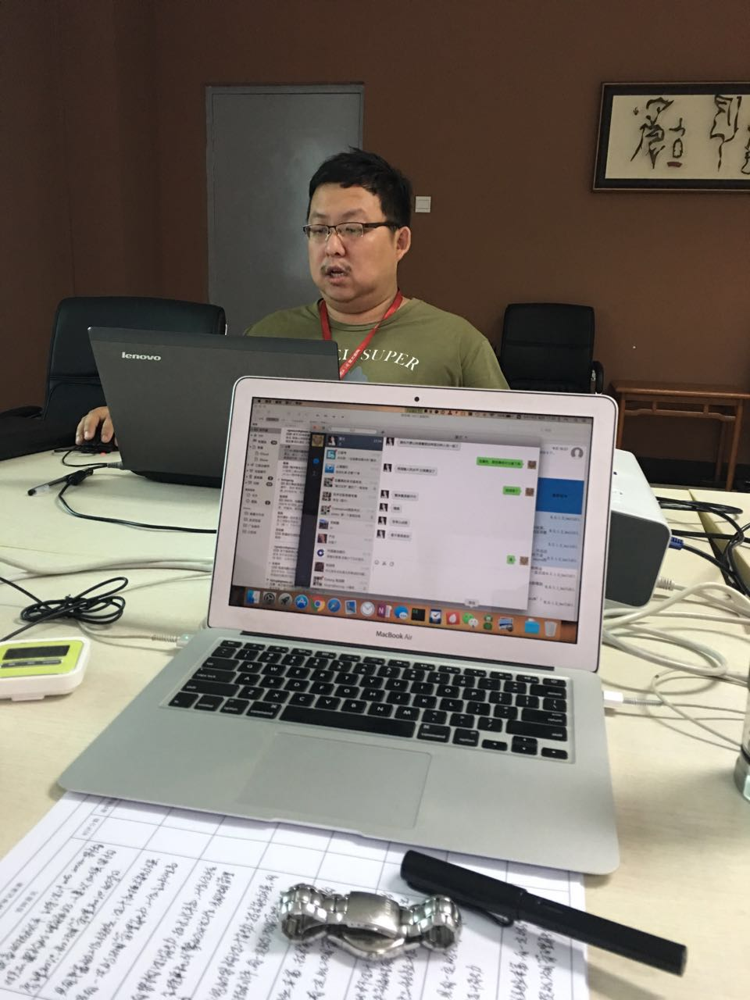 |
| 2016-05-19 17:33:43 | 你 | 写了这么多字啊 |
| 2016-05-19 17:33:56 | 我 | ？ |
| 2016-05-19 17:34:02 | 我 | 什么字 |
| 2016-05-19 17:34:38 | 你 | 你的纸上 |
| 2016-05-19 17:35:08 | 我 | 每个人答辩的评语 |
| 2016-05-19 17:35:16 | 你 | 恩 我知道 |
| 2016-05-19 17:35:48 | 你 | 我答辩的时候你写的啥啊 |
| 2016-05-19 17:36:15 | 我 | 忘了，写了好多，都是好话 |
| 2016-05-19 17:37:05 | 你 | 哈哈 真的啊 |
| 2016-05-19 17:37:11 | 你 | 累坏了吧 |
| 2016-05-19 17:37:33 | 我 | 今天还行，有你陪着 |
| 2016-05-19 17:37:56 | 你 | 我陪着岂不是更累 |
| 2016-05-19 17:38:11 | 你 | 我周末不加班了 |
| 2016-05-19 17:38:26 | 你 | 以后面谈的机会越来越少了 |
| 2016-05-19 17:38:29 | 我 | 好的 |
| 2016-05-19 17:38:32 | 我 | 是 |
| 2016-05-19 17:38:46 | 你 | 不过没关系 好在咱们现在没任务 就是交流 |
| 2016-05-19 17:38:49 | 你 | 对吧 |
| 2016-05-19 17:39:01 | 我 | 对 |
| 2016-05-19 17:39:02 | 你 | 不像以前 |
| 2016-05-19 17:40:02 | 你 | 老田没跟你在一屋吗 |
| 2016-05-19 17:40:12 | 你 | 最近老田郁闷坏了估计 |
| 2016-05-19 17:40:24 | 我 | 他为啥郁闷 |
| 2016-05-19 17:40:50 | 我 | 我们不在一个屋 |
| 2016-05-19 17:41:33 | 你 | 前天晚上吧 你们说发版的时候 老田不再 领导跟你说啥来着 |
| 2016-05-19 17:42:16 | 我 | 让我帮他把关 |
| 2016-05-19 17:45:01 | 你 | 感觉老田现在上班一点不快乐 |
| 2016-05-19 17:45:42 | 我 | 这倒是 |
| 2016-05-19 17:45:47 | 你 | 不过一般都是没升上去就开始干上一级的活了 他是反的 |
| 2016-05-19 17:45:58 | 你 | 他是一点活没干过 赶鸭子上架 |
| 2016-05-19 17:46:04 | 我 | 是 |
| 2016-05-19 17:46:11 | 你 | 他以前也没干过这些吧 |
| 2016-05-19 17:46:20 | 你 | 其实他真的不怎么适合管理 |
| 2016-05-19 17:46:31 | 你 | 估计领导也挺难受的 |
| 2016-05-19 17:46:39 | 我 | 没错 |
| 2016-05-19 17:47:00 | 你 | 你看老田也没个说话的人 |
| 2016-05-19 17:47:08 | 你 | 他还看不上洪越 |
| 2016-05-19 17:47:26 | 我 | 其实还是因为他自己 |
| 2016-05-19 17:47:27 | 你 | 每天就是自己在他闷着 多难受 |
| 2016-05-19 17:47:42 | 我 | 你看我当初和洪越打的多厉害 |
| 2016-05-19 17:47:52 | 我 | 现在我们的关系也很好 |
| 2016-05-19 17:48:08 | 我 | 最重要的还是田自己放不下 |
| 2016-05-19 17:48:14 | 你 | 是 |
| 2016-05-19 17:48:15 | 你 | 啊 |
| 2016-05-19 17:48:24 | 你 | 现在洪越跟你是真挺不错的 |
| 2016-05-19 17:48:29 | 你 | 我跟他也不错 |
| 2016-05-19 17:48:39 | 你 | 你说什么他基本都听 |
| 2016-05-19 17:48:42 | 我 | 最少表面上是这样 |
| 2016-05-19 17:48:49 | 你 | 对啊 |
| 2016-05-19 17:48:59 | 你 | 也别表现的太好 |
| 2016-05-19 17:49:03 | 我 | 是 |
| 2016-05-19 17:49:38 | 你 | 今天早上严丹跟洪越说需求的事 一副领导的样子 说你调研调研GP vertica是啥样的 |
| 2016-05-19 17:49:47 | 你 | 洪越也没给她好脸色 |
| 2016-05-19 17:49:54 | 你 | 我为什调研他们啊 |
| 2016-05-19 17:50:01 | 你 | 哈哈 笑死我了 |
| 2016-05-19 17:50:07 | 我 | 😄 |
| 2016-05-19 17:50:42 | 你 | 我是看着老田干的特别不开心 |
| 2016-05-19 17:51:07 | 你 | 你跟洪越啊 以前打的挺厉害的 所以现在不能表现的 太好 |
| 2016-05-19 17:51:22 | 你 | 你说是吧 于情于理都不合适 |
| 2016-05-19 17:51:33 | 我 | 是，我是说田不开心主要还是因为他自己放不下 |
| 2016-05-19 17:51:42 | 你 | 王洪越个笨蛋 也不知道忌讳点田 |
| 2016-05-19 17:52:06 | 你 | 是啊 是他自己放不下 他放不下的东西太多了 所以他才会累 |
| 2016-05-19 17:52:17 | 你 | 给闺女买个自行车还纠结半天呢 |
| 2016-05-19 17:52:33 | 你 | 这有什么纠结的 |
| 2016-05-19 17:52:45 | 我 | 没错 |
| 2016-05-19 17:53:00 | 你 | 你看我们买房子都没纠结 |
| 2016-05-19 17:53:06 | 你 | 住的不也是很好 |
| 2016-05-19 17:53:19 | 我 | 对呀 |
| 2016-05-19 17:53:51 | 你 | 这么小的小事 还分自己心 还不找点快乐的事做 |
| 2016-05-19 17:54:08 | 你 | 你说他跟你 他能轻易放下吗 |
| 2016-05-19 17:54:17 | 我 | 是 |
| 2016-05-19 17:54:25 | 你 | 旭明怎么样了 |
| 2016-05-19 17:55:27 | 我 | 回答问题 |
| 2016-05-19 17:55:59 | 我 | 被问住了 |
| 2016-05-19 17:56:15 | 你 | 哈哈 |
| 2016-05-19 18:00:25 | 我 | 终于过了 |
| 2016-05-19 18:00:35 | 你 | 嗯嗯 过了就好 |
| 2016-05-19 18:01:43 | 你 | 我一会就下班了 今天没啥事 我 老公下班早 我也早回去会 |
| 2016-05-19 18:02:36 | 我 | 好的 |
| 2016-05-19 18:08:56 | 你 | 王志新是你们组的吗 |
| 2016-05-19 18:09:18 | 我 | 不知道，周六的评委会重新安排 |
| 2016-05-19 18:09:29 | 你 | 哦 兴 |
| 2016-05-19 18:09:31 | 你 | 行 |
| 2016-05-19 18:13:05 | 你 | 我以为今天是周五呢 |
| 2016-05-19 18:13:22 | 你 | 怎么办 幸福感下降 |
| 2016-05-19 18:13:58 | 我 | 今天可以早下班呀 |
| 2016-05-19 18:14:08 | 你 | 哼 不开心 |
| 2016-05-19 18:14:09 | 我 | 而且聊了一整天 |
| 2016-05-19 18:14:18 | 我 | 好久没这么聊了 |
| 2016-05-19 18:14:33 | 你 | 那也不开心 |
| 2016-05-19 18:14:38 | 你 | 哼哼 |
| 2016-05-19 18:14:47 | 我 | 你看今天一天都没看见你 |
| 2016-05-19 18:14:53 | 你 | 我下周工作不知道写啥啊 |
| 2016-05-19 18:14:58 | 你 | 没有工作了 |
| 2016-05-19 18:15:00 | 你 | 看书 |
| 2016-05-19 18:15:18 | 我 | 要是周五那就好几天看不见你，那才郁闷呢 |
| 2016-05-19 18:31:18 | 你 | 恩 |
| 2016-05-19 18:35:28 | 你 | 我走了 |
| 2016-05-19 18:35:41 | 我 | bye |
| 2016-05-19 18:35:49 | 你 | [动画表情] |
{kind=link}
2016-05-20¶
| 2016-05-20 08:08:09 | 我 | 早 |
| 2016-05-20 08:18:31 | 你 | 亲 要是王洪越和耿燕吵吵起来 我就啥也不说啦 |
| 2016-05-20 08:18:37 | 你 | 真烦人 |
| 2016-05-20 08:19:23 | 我 | 没有你什么事情，你就看着就行了 |
| 2016-05-20 08:19:38 | 你 | 好吧 |
| 2016-05-20 08:20:00 | 我 | 我给你做备份吧 |
| 2016-05-20 08:20:45 | 你 | 我手机现在只有8%的电 |
| 2016-05-20 08:20:50 | 你 | 要不等会 |
| 2016-05-20 08:21:00 | 我 | 赶紧充电吧 |
| 2016-05-20 08:21:08 | 我 | 不着急 |
| 2016-05-20 08:41:26 | 你 | 这事真麻烦 |
| 2016-05-20 08:41:40 | 我 | 怎么啦 |
| 2016-05-20 08:41:54 | 我 | 是不好改吗？ |
| 2016-05-20 08:43:34 | 我 | |
| 2016-05-20 08:43:41 | 我 | |
| 2016-05-20 08:46:13 | 你 | 哈哈 |
| 2016-05-20 09:09:47 | 我 | @纯银V：这种事情还真是屁股决定脑袋。你坐过多高的位置，才能体会这个位置上的感受，脑补“我上位了就能怎样怎样”，那只是年少无知。当然也会有人年老依然无知。 //@纯银V：做产品最麻烦的事情，不是创造，而是选择。任何时候都有大量的选择题，备选答案可能是AB，可能是ABCDEFG。没有尝过权力滋味的人，可能认为选择题多简单，我掌权之后分分钟答题，效率要多高有多高。然而当你有过权力，也有过败绩，才会知道扑面而来的黑压压的选择题考卷是一件让你多犹豫的事。 |
| 2016-05-20 09:18:13 | 我 | 亲，你回复的邮件有个小问题，你们评审的是文档，所以笔误也是评审内容之一，在会议意见中是需要保留的 |
| 2016-05-20 09:19:31 | 我 | 你先不用改，要是耿燕因为这个你就说不知道，不找你就算了 |
| 2016-05-20 09:22:21 | 你 | 王洪越让我群发出去 |
| 2016-05-20 09:22:32 | 你 | 怎么办 说在晨会的时候大家讨论 |
| 2016-05-20 09:22:55 | 我 | 他是在故意找事 |
| 2016-05-20 09:22:59 | 你 | 我给你发的这个邮件本来是发给王洪越的 结果给耿燕发过去了 |
| 2016-05-20 09:23:20 | 你 | 他让我再发一次 |
| 2016-05-20 09:23:44 | 我 | 你发吧 |
| 2016-05-20 09:28:54 | 我 | 如果晨会洪越找事，我会帮耿燕说话的，你注意听就行了 |
| 2016-05-20 09:29:06 | 你 | 恩 |
| 2016-05-20 09:29:19 | 我 | 这里面涉及到质控的一些原则问题 |
| 2016-05-20 09:29:54 | 你 | 恩 |
| 2016-05-20 09:30:09 | 你 | 刚才耿燕跟洪越说开完会聊两句 |
| 2016-05-20 09:30:59 | 我 | 好的 |
| 2016-05-20 09:44:56 | 你 | 王洪越想干啥啊 |
| 2016-05-20 09:45:26 | 我 | 打架呀 |
| 2016-05-20 09:45:40 | 我 | 他以为这次占理 |
| 2016-05-20 09:47:48 | 我 | 这种主动挑事，一定要全占理，差一点都不行，特别是质控相关的 |
| 2016-05-20 09:48:05 | 你 | 是啊 |
| 2016-05-20 09:48:06 | 我 | 因为没有人敢说不要质量 |
| 2016-05-20 09:48:29 | 你 | 对啊 |
| 2016-05-20 09:48:41 | 你 | 我觉得可对不起耿燕了 |
| 2016-05-20 09:48:47 | 我 | 没事 |
| 2016-05-20 09:48:50 | 你 | 我三两句也说不清楚 |
| 2016-05-20 09:48:53 | 你 | 烦死了 |
| 2016-05-20 09:49:08 | 我 | 没事的，和你无关 |
| 2016-05-20 09:49:19 | 我 | 以后这些事情会很多 |
| 2016-05-20 09:57:57 | 你 | 好吧 我看王洪越非要跟耿燕较真了 |
| 2016-05-20 10:07:26 | 我 | 是 |
| 2016-05-20 10:07:51 | 你 | 我觉得洪越也理亏 这事没必要较真 |
| 2016-05-20 10:08:04 | 你 | 也不是啥大事 下次注意下就行了呗 |
| 2016-05-20 10:08:11 | 你 | 可能是我自己理亏吧 |
| 2016-05-20 10:08:12 | 我 | 是 |
| 2016-05-20 10:08:13 | 你 | 唉 |
| 2016-05-20 10:10:51 | 你 | 老王 我觉得这件事我责任也挺大的 我心里很难过 |
| 2016-05-20 10:10:53 | 你 | 怎么办 |
| 2016-05-20 10:11:03 | 我 | 和你没关系 |
| 2016-05-20 10:11:10 | 我 | 我回来给你解释 |
| 2016-05-20 10:11:25 | 你 | 我要是当初写的时候再检查检查就好了 |
| 2016-05-20 10:11:32 | 你 | 这下整出这么多事 |
| 2016-05-20 10:11:37 | 我 | 没用的 |
| 2016-05-20 10:50:34 | 我 | 还郁闷呢？ |
| 2016-05-20 10:50:51 | 你 | 我是怕燕姐记恨我 |
| 2016-05-20 10:51:09 | 我 | 不会的，明显是洪越找事 |
| 2016-05-20 11:36:17 | 你 | 都这样了 你还笑 |
| 2016-05-20 11:36:40 | 我 | 看见你就笑了 |
| 2016-05-20 11:45:43 | 你 | 不吃饭了啊 |
| 2016-05-20 11:45:59 | 我 | 吃 |
| 2016-05-20 11:46:04 | 我 | 你呢 |
| 2016-05-20 11:47:00 | 你 | 热饭呢 |
| 2016-05-20 11:47:18 | 我 | 好的 |
| 2016-05-20 12:13:07 | 你 | 你们的问题解决了吗 |
| 2016-05-20 12:13:30 | 我 | 没有，但是有方向了 |
| 2016-05-20 12:13:44 | 你 | 好 |
| 2016-05-20 12:13:53 | 我 | 胖子就是太懒，这些我们都可以做 |
| 2016-05-20 12:14:11 | 你 | 是吧 |
| 2016-05-20 12:15:44 | 你 | 睡觉了 |
| 2016-05-20 12:16:01 | 我 | 好 |
| 2016-05-20 13:14:31 | 我 | 醒了？ |
| 2016-05-20 13:14:46 | 你 | 嗯呢 |
| 2016-05-20 13:14:50 | 你 | 你睡觉了嘛 |
| 2016-05-20 13:17:26 | 我 | 没有，一直有事，刚回来，咖啡还没来得及喝呢 |
| 2016-05-20 13:17:39 | 我 | 你看一下我刚发的邮件 |
| 2016-05-20 13:17:53 | 我 | 你看看洪越有多懒 |
| 2016-05-20 13:18:49 | 我 | 这些问题都应该是他去问的，现在他成了二道贩子 |
| 2016-05-20 13:19:01 | 你 | 哈哈 |
| 2016-05-20 13:19:14 | 你 | 是 |
| 2016-05-20 13:19:29 | 你 | 我感觉他喜欢做的事就做的挺好 不喜欢的就糊弄 |
| 2016-05-20 13:19:45 | 我 | 是 |
| 2016-05-20 13:19:54 | 你 | 你看那个加载字符集的用需 虽然废话很多 但写的还是不错的 |
| 2016-05-20 13:20:08 | 我 | 恩 |
| 2016-05-20 13:20:33 | 我 | 先和你说说评审的事情吧 |
| 2016-05-20 13:21:00 | 你 | 恩 |
| 2016-05-20 13:22:13 | 我 | 首先无论做什么，人都不可能不犯错 |
| 2016-05-20 13:22:24 | 你 | 恩 |
| 2016-05-20 13:22:52 | 我 | 为了减少错误，应该安排多个人对输出物进行检查 |
| 2016-05-20 13:23:01 | 我 | 这就是要有校对的原因 |
| 2016-05-20 13:23:10 | 我 | 以前你写的东西都是我校对 |
| 2016-05-20 13:23:17 | 你 | 恩 |
| 2016-05-20 13:23:29 | 我 | 现在就应该是洪越或者他安排人去校对 |
| 2016-05-20 13:23:57 | 我 | 作为质控，关心的只是最终输出物，中间的版本质控不关心 |
| 2016-05-20 13:24:12 | 你 | 恩 明白 |
| 2016-05-20 13:24:49 | 我 | 因此当质控发现文档中有错误的时候是一定要记录的，这样才能知道下一个版本是否改正了 |
| 2016-05-20 13:26:06 | 我 | 由于我们每个人无论能力高低职位高低都会犯错，所以最重要的是制度流程 |
| 2016-05-20 13:26:33 | 你 | 那我问个问题 我们质量月报中报的需求评审出现的问题如果有部分是文档错误的 对某些指标反应的是否会有不真实呢 |
| 2016-05-20 13:26:50 | 我 | 不会 |
| 2016-05-20 13:27:24 | 我 | 我说了，质控关心的是你们正式拿出来的文档质量，而不是你们内部的中间版本 |
| 2016-05-20 13:27:26 | 你 | 我是对记下来没有意见的 记下来还能鞭策我下次认真点 |
| 2016-05-20 13:27:32 | 你 | 嗯嗯 知道了 |
| 2016-05-20 13:27:52 | 我 | 简单说就是你们这次是用了一个内部版本来评审 |
| 2016-05-20 13:28:13 | 你 | 其实不是 其实是正式的 |
| 2016-05-20 13:28:17 | 我 | 本来应该是通过内部校对消除的问题结果通过评审发现了 |
| 2016-05-20 13:28:23 | 你 | 是 |
| 2016-05-20 13:28:25 | 我 | 我是说文档质量 |
| 2016-05-20 13:28:32 | 你 | 嗯嗯 |
| 2016-05-20 13:28:40 | 你 | 明白了 |
| 2016-05-20 13:28:54 | 我 | 你原来发的评审哪次不是我看好几遍，调好几个错字 |
| 2016-05-20 13:28:58 | 你 | 我们组没有校对 写完就发给王洪越 他每次都是你自己再看看 |
| 2016-05-20 13:29:06 | 你 | 结果没看出来 |
| 2016-05-20 13:29:15 | 你 | 知道啦 |
| 2016-05-20 13:29:38 | 我 | 按照职责，组长对最终发起评审的文档质量负责 |
| 2016-05-20 13:29:52 | 我 | 所以这次也是洪越的责任，不是你的责任 |
| 2016-05-20 13:30:46 | 你 | 现在洪越的文档 让我们看的时候 王志新根本就不看 |
| 2016-05-20 13:31:08 | 你 | 几次下来 他就跟我说说 让我看看 |
| 2016-05-20 13:31:15 | 你 | 也不管王志新了 |
| 2016-05-20 13:31:28 | 你 | 王志新自己愿意看就看 |
| 2016-05-20 13:31:32 | 我 | 这还是洪越的领导力的问题，和范树磊的问题是一样的 |
| 2016-05-20 13:31:34 | 你 | 不看他也不会说啥 |
| 2016-05-20 13:31:55 | 你 | 他对我可不这样呢 |
| 2016-05-20 13:32:04 | 你 | 王志新吓死他 |
| 2016-05-20 13:32:13 | 你 | 我是比较善良的 |
| 2016-05-20 13:32:15 | 我 | 欺软怕硬 |
| 2016-05-20 13:32:23 | 我 | 唉 |
| 2016-05-20 13:32:24 | 你 | 是 |
| 2016-05-20 13:32:27 | 你 | 就是 |
| 2016-05-20 13:32:41 | 我 | 马善被人骑，人善被人欺 |
| 2016-05-20 13:32:59 | 我 | 你看看领导是不是好人，打架的时候也一样 |
| 2016-05-20 13:33:11 | 你 | 恩 |
| 2016-05-20 13:33:18 | 我 | 所以人不能太善了，得分对谁 |
| 2016-05-20 13:33:29 | 你 | 我知道 |
| 2016-05-20 13:33:30 | 我 | 可惜这些道理平时是没有人讲的 |
| 2016-05-20 13:33:44 | 我 | 都是要求人要善良 |
| 2016-05-20 13:34:00 | 你 | 是 |
| 2016-05-20 13:34:16 | 你 | 要是大家都善良也行 关键是有不善的 |
| 2016-05-20 13:34:52 | 我 | 是 |
| 2016-05-20 13:35:06 | 我 | 其实要求大家都善良也是不对的 |
| 2016-05-20 13:35:33 | 我 | 因为每个人都有自己的利益 |
| 2016-05-20 13:35:47 | 你 | 是 |
| 2016-05-20 13:37:54 | 你 | 刚才耿燕说他跟杨总问了 没人抠那个数量 |
| 2016-05-20 13:38:02 | 你 | 你看 王洪越又没事找事了 |
| 2016-05-20 13:38:18 | 我 | 对呀 |
| 2016-05-20 13:38:35 | 你 | 就他这样 |
| 2016-05-20 13:38:47 | 你 | 没办法 谁也帮不了他了 |
| 2016-05-20 13:38:57 | 我 | 是 |
| 2016-05-20 13:39:12 | 我 | 你也别自责了，这事和你关系不大 |
| 2016-05-20 13:39:30 | 你 | 恩 没事 我刚才跟耿燕问了 |
| 2016-05-20 13:39:32 | 你 | 没事的 |
| 2016-05-20 13:39:35 | 我 | 要是你明白质控的本质，你就不会自责了 |
| 2016-05-20 13:39:43 | 你 | 他没事 |
| 2016-05-20 13:42:30 | 我 | 你没事了吧 |
| 2016-05-20 13:42:48 | 你 | 没了 |
| 2016-05-20 13:43:12 | 我 | 好，我分享给你一段话，你看看能不能看明白 |
| 2016-05-20 13:43:23 | 你 | 好 |
| 2016-05-20 13:43:55 | 我 | 一个很有趣的心理学观念：首先你要理解世界是怎样的，知其然；其次你要理解你为什么理解世界是怎样的，知其所以然（注意这里不是说理解世界为什么是这样的）；除此之外，你还要理解别人对世界的理解是怎样的，知其知其所以然；最后，你还要理解为什么别人对世界的理解是怎样的，知其知其所以然所以然 |
| 2016-05-20 13:56:52 | 我 | 你听呢吗？ |
| 2016-05-20 14:22:50 | 你 | 听呢 |
| 2016-05-20 14:31:04 | 你 | 你干啥去了 |
| 2016-05-20 14:31:23 | 我 | 开电话会议 |
| 2016-05-20 14:34:45 | 我 | 你看懂我刚才给你看的那条了吗 |
| 2016-05-20 14:35:34 | 你 | 还是能看懂一小部分的 |
| 2016-05-20 14:36:00 | 你 | 其次你要理解你为什么理解世界是怎样的，知其所以然（注意这里不是说理解世界为什么是这样的） |
| 2016-05-20 14:36:09 | 我 | 这个就像洋葱，你一层一层的看 |
| 2016-05-20 14:36:12 | 你 | 这句话写的好有意思 |
| 2016-05-20 14:37:02 | 我 | 这就是抽象，从自己的主观认知的角度 |
| 2016-05-20 14:39:27 | 你 | 『其次你要理解你为什么理解世界是怎样的，知其所以然（注意这里不是说理解世界为什么是这样的）』这个是说 如果我们带着主管色彩定义世界是这样的 那我们去探知世界为什么是这样的也是没意义的 理解的对吗？ |
| 2016-05-20 14:39:48 | 我 | 不对 |
| 2016-05-20 14:39:56 | 你 | 那是什么意思 |
| 2016-05-20 14:40:01 | 你 | 这句就不理解了 |
| 2016-05-20 14:40:43 | 我 | 其次你要理解 你 为什么 理解世界是怎样的，知其所以然（注意这里不是说理解世界为什么是这样的） |
| 2016-05-20 14:41:14 | 我 | 你按照我分的方式读一下 |
| 2016-05-20 14:41:43 | 你 | 哎呀 妈呀 |
| 2016-05-20 14:42:16 | 我 | 这句说的是我们要知道自己理解世界的角度，以及产生这个角度的原因 |
| 2016-05-20 14:42:31 | 你 | 这个好难啊 |
| 2016-05-20 14:42:44 | 你 | 比如你的抽象 模型就是 |
| 2016-05-20 14:42:59 | 我 | 是，我也看了一会才全明白 |
| 2016-05-20 14:43:11 | 你 | 哈哈 我根本没看明白 |
| 2016-05-20 14:43:19 | 我 | 不过明白了就真明白了 |
| 2016-05-20 14:43:43 | 我 | 待会我再给你发一个分好的吧 |
| 2016-05-20 14:43:48 | 你 | 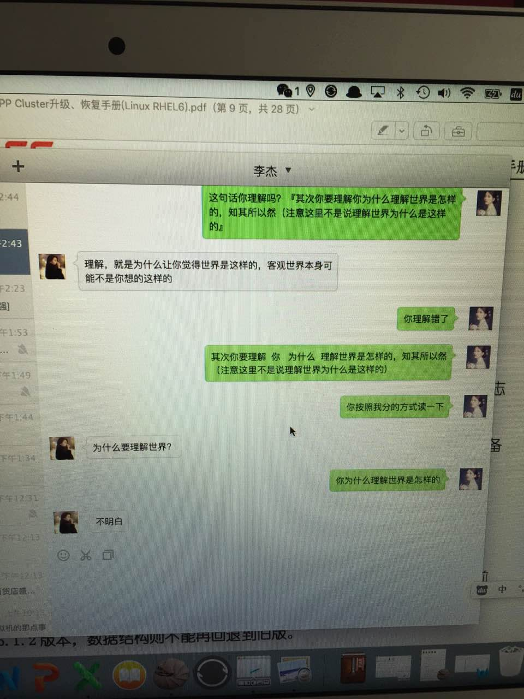 |
| 2016-05-20 14:43:50 | 我 | 你好理解一点 |
| 2016-05-20 14:44:13 | 你 | 好的 |
| 2016-05-20 14:44:22 | 我 | 你姐吗？ |
| 2016-05-20 14:44:27 | 你 | 对啊 |
| 2016-05-20 14:45:00 | 我 | 她理解到了第一层 |
| 2016-05-20 14:46:12 | 你 | 我们为什么不用去理解为什么世界是这样的呢 |
| 2016-05-20 14:47:26 | 我 | 为什么要理解世界是第一句话的问题 |
| 2016-05-20 14:47:54 | 我 | 第二句话把理解世界当成一个整体 |
| 2016-05-20 14:49:45 | 你 | 我想第一句说的是『要知道世界是怎么样』，第二句是『要知道为什么你认为世界是这样的』对吗 |
| 2016-05-20 14:50:02 | 你 | 好乱 |
| 2016-05-20 14:50:04 | 我 | 对 |
| 2016-05-20 14:50:10 | 我 | 你说的很对 |
| 2016-05-20 14:50:32 | 你 | 明白了 |
| 2016-05-20 14:51:03 | 我 | 你把世界是什么样替换成吃饭就简单了 |
| 2016-05-20 14:51:13 | 你 | 为什么世界是这样的中的『世界』有很多种，有你认为的，有别人认为的 对吧 |
| 2016-05-20 14:51:37 | 你 | 就是把知其所以然再分了 |
| 2016-05-20 14:51:38 | 我 | 第二句就变成要知道你为什么要吃饭 |
| 2016-05-20 14:51:46 | 我 | 不对 |
| 2016-05-20 14:51:53 | 我 | 世界就一个 |
| 2016-05-20 14:52:13 | 我 | 四句话里的世界是一个东西 |
| 2016-05-20 14:52:41 | 你 | 是啊 但是人的主观意识加在上边 就会看起来你的世界和我的不同了 |
| 2016-05-20 14:52:53 | 你 | 我们要知道为什么会有这种不同 |
| 2016-05-20 14:53:01 | 我 | 是 |
| 2016-05-20 14:57:39 | 你 | [悠闲] |
| 2016-05-20 14:57:55 | 我 | 😄 |
| 2016-05-20 14:58:06 | 我 | 心情不错嘛 |
| 2016-05-20 15:00:20 | 你 | 恩 理解了开心啊 |
| 2016-05-20 15:00:41 | 我 | 你姐理解了吗 |
| 2016-05-20 15:01:00 | 你 | 不管她 他不搭理我了又 |
| 2016-05-20 15:01:10 | 我 | 😄 |
| 2016-05-20 15:09:57 | 你 | 耿燕跟严丹又吵吵了 |
| 2016-05-20 15:10:20 | 你 | 我天啊 两个女人吵起来更没理可讲 |
| 2016-05-20 15:10:23 | 我 | 她和谁都吵吵 |
| 2016-05-20 15:10:28 | 你 | 不过就吵了一句 |
| 2016-05-20 15:10:46 | 你 | 嚷嚷来着 |
| 2016-05-20 15:10:57 | 我 | 哦 |
| 2016-05-20 15:20:57 | 我 | 你的耳环挺好看 |
| 2016-05-20 15:21:27 | 我 | 其实早上你一来我就看见了，忘了和你说了 |
| 2016-05-20 15:27:08 | 你 | 恩，它就是负责美的，要是不美何苦带它 |
| 2016-05-20 15:27:11 | 你 | 哈哈 |
| 2016-05-20 15:27:15 | 你 | [动画表情] |
| 2016-05-20 15:27:46 | 我 | 我给你备份吧 |
| 2016-05-20 15:28:07 | 你 | 好 |
| 2016-05-20 15:29:30 | 我 | 严丹和我说刚才吵架的事情呢 |
| 2016-05-20 15:47:45 | 我 | 你看看领导多护着严丹 |
| 2016-05-20 15:48:26 | 你 | 是 |
| 2016-05-20 15:48:34 | 你 | 看到了 |
| 2016-05-20 15:48:55 | 你 | 严丹跟耿燕也吵了 |
| 2016-05-20 15:49:02 | 你 | 我不管 |
| 2016-05-20 15:49:16 | 我 | 对 |
| 2016-05-20 15:49:31 | 你 | no comment |
| 2016-05-20 15:51:22 | 你 | 洪越提的多是时候 |
| 2016-05-20 15:51:40 | 我 | 他是在找同盟 |
| 2016-05-20 15:52:15 | 你 | 恩 |
| 2016-05-20 15:58:11 | 我 | 首先你要 理解 世界是怎样的，知其然；其次你要 理解 你 为什么理解 世界是怎样的，知其所以然（注意这里不是说理解世界 为什么是 这样的）；除此之外，你还要理解 别人 对世界的 理解 是怎样的，知其知其所以然；最后，你还要理解 为什么 别人 对 世界的 理解 是怎样的，知其知其所以然所以然 |
| 2016-05-20 15:58:25 | 我 | 你看看这样好理解一点吗 |
| 2016-05-20 15:59:01 | 你 | 恩 理解了 |
| 2016-05-20 16:09:26 | 我 | 你冷吗？ |
| 2016-05-20 16:10:13 | 你 | 刚才开空调的时候冷 |
| 2016-05-20 16:10:17 | 你 | 现在好多了 |
| 2016-05-20 16:10:35 | 我 | 好的 |
| 2016-05-20 16:26:20 | 我 | 你忙啥呢 |
| 2016-05-20 16:26:32 | 你 | 随便找点资料看看 |
| 2016-05-20 16:28:43 | 我 | Hadoop？ |
| 2016-05-20 16:28:54 | 你 | vertica |
| 2016-05-20 16:30:21 | 我 | 哦 |
| 2016-05-20 17:00:25 | 你 | 你干啥去了 |
| 2016-05-20 17:01:06 | 我 | 番薯屋，审核认证文件 |
| 2016-05-20 17:34:17 | 你 | [链接] 情深不寿，爱而无望：程灵素的爱，优雅而矜持 |
| 2016-05-20 17:39:28 | 我 | 我走了 |
| 2016-05-20 17:40:03 | 你 | 你回家吗 |
| 2016-05-20 17:40:22 | 我 | 是 |
| 2016-05-20 17:43:41 | 你 | 你们明天不是任职答辩吗 |
| 2016-05-20 17:44:09 | 我 | 请假了，家里有急事 |
| 2016-05-20 17:45:47 | 你 | 哦，好突然， |
| 2016-05-20 17:45:57 | 你 | 没出啥大事吧 |
| 2016-05-20 17:49:53 | 我 | 没事 |
| 2016-05-20 17:50:39 | 我 | 领导好像不想要耿燕了 |
| 2016-05-20 17:51:02 | 我 | 今天找我谈的时候透露出这个意思了 |
| 2016-05-20 17:51:05 | 你 | 怎么说 |
| 2016-05-20 17:51:15 | 你 | 唉 |
| 2016-05-20 17:51:16 | 我 | 后来他有事就没继续说 |
| 2016-05-20 17:51:21 | 你 | 其实没啥 |
| 2016-05-20 17:51:33 | 你 | 严丹有点危言耸听了 |
| 2016-05-20 17:51:38 | 我 | 领导问是不是耿燕的原因 |
| 2016-05-20 17:52:01 | 我 | 如果她没法融入团队，他就要清理了 |
| 2016-05-20 17:52:13 | 你 | 不至于的吧 |
| 2016-05-20 17:52:16 | 我 | 领导需要维护团队 |
| 2016-05-20 17:52:37 | 你 | 唉 |
| 2016-05-20 17:52:46 | 你 | 我不知道，不发表意见 |
| 2016-05-20 17:52:54 | 我 | 今天严丹是哭腔和领导说的 |
| 2016-05-20 17:52:59 | 你 | 你的意见呢 |
| 2016-05-20 17:53:19 | 我 | 耿燕能力没有问题，比大多数人都强 |
| 2016-05-20 17:53:20 | 你 | 这件事我不说话， |
| 2016-05-20 17:53:29 | 我 | 是 |
| 2016-05-20 17:53:36 | 你 | 虽然我在场，领导问我我也不会说的 |
| 2016-05-20 17:53:43 | 我 | 对 |
| 2016-05-20 17:54:06 | 你 | 领导本来就偏袒严丹， |
| 2016-05-20 17:54:43 | 我 | 是 |
| 2016-05-20 17:55:00 | 你 | 严丹怎么跟你说的 |
| 2016-05-20 17:55:09 | 你 | 说她委屈死了吧 |
| 2016-05-20 17:55:21 | 你 | 你看领导是多喜欢严丹 |
| 2016-05-20 17:55:31 | 我 | 是 |
| 2016-05-20 17:55:59 | 你 | 耿燕走了，质控谁做啊 |
| 2016-05-20 17:56:14 | 你 | 你做啊 |
| 2016-05-20 17:56:18 | 我 | 没有人了 |
| 2016-05-20 17:56:29 | 我 | 那就真坑了我了 |
| 2016-05-20 17:56:35 | 你 | 哈哈 |
| 2016-05-20 17:57:15 | 你 | 最近耿大姐出的事实在是不少 |
| 2016-05-20 17:57:28 | 你 | 昨天跟王欣也吵吵了 |
| 2016-05-20 17:57:32 | 我 | 是 和谁都打 |
| 2016-05-20 17:57:50 | 你 | 其实昨天跟王鑫吵得没这次厉害 |
| 2016-05-20 17:58:02 | 你 | 严丹先吵的 |
| 2016-05-20 17:58:09 | 我 | 关键王欣哪吃这套 |
| 2016-05-20 17:58:31 | 你 | 王欣根本没跟她吵，一直说事来着 |
| 2016-05-20 17:58:38 | 你 | 这点我特佩服她的 |
| 2016-05-20 17:59:00 | 我 | 今天领导也提到王欣的事情了 |
| 2016-05-20 17:59:13 | 你 | 我觉得耿大姐的关键问题不在团队上 |
| 2016-05-20 17:59:20 | 你 | 谁告诉他的 |
| 2016-05-20 17:59:29 | 我 | 王欣 |
| 2016-05-20 17:59:36 | 你 | 哦 |
| 2016-05-20 17:59:42 | 你 | 那就不好了 |
| 2016-05-20 17:59:45 | 我 | 我估计王欣才是关键 |
| 2016-05-20 17:59:59 | 我 | 比严丹份量重 |
| 2016-05-20 18:00:08 | 你 | 是 |
| 2016-05-20 18:00:48 | 你 | 爱怎么办怎么办吧 |
| 2016-05-20 18:00:56 | 你 | 不言语 |
| 2016-05-20 18:01:09 | 你 | 今天老田怎么突然找我说话去了 |
| 2016-05-20 18:01:39 | 我 | 不知道 |
| 2016-05-20 18:02:41 | 我 | 是不是领导说你的好话了 |
| 2016-05-20 18:03:39 | 你 | 不是吧 |
| 2016-05-20 18:03:47 | 我 | 前两天你问他问题他还不爱搭理呢 |
| 2016-05-20 18:04:01 | 你 | 我看你们电话会议后老田心情还不错 |
| 2016-05-20 18:04:37 | 我 | 是，没他啥事 |
| 2016-05-20 18:04:50 | 你 | 他对我总是那样，要不我才那么不愿意搭理他呢 |
| 2016-05-20 18:05:09 | 你 | 他这个人对人太不友善，平时也不走人性 |
| 2016-05-20 18:05:21 | 我 | 是 |
| 2016-05-20 18:05:24 | 你 | 也不会看人，笨牛一个 |
| 2016-05-20 18:05:30 | 你 | 比你差远了 |
| 2016-05-20 18:05:34 | 我 | 😄 |
| 2016-05-20 18:05:55 | 我 | 他就是对领导忠心 |
| 2016-05-20 18:06:41 | 你 | 是 |
| 2016-05-20 18:06:49 | 你 | 这点很重要 |
| 2016-05-20 18:07:06 | 我 | 所以领导才能忍他 |
| 2016-05-20 18:07:12 | 你 | 随便他吧，反正我也不需要他 |
| 2016-05-20 18:07:15 | 你 | 是啊 |
| 2016-05-20 18:08:22 | 我 | 领导最近也很难，好像又有什么事情了 |
| 2016-05-20 18:08:23 | 你 | 领导要是问你处理耿燕的意见，你怎么说 |
| 2016-05-20 18:08:29 | 你 | 不知道 |
| 2016-05-20 18:08:48 | 我 | 能留还是尽量留 |
| 2016-05-20 18:09:00 | 你 | 我最近不想搭理领导了，我感觉我跟她走太近了 |
| 2016-05-20 18:09:23 | 我 | 没有吧 |
| 2016-05-20 18:09:55 | 我 | 看你自己吧，你开心最重要 |
| 2016-05-20 18:10:04 | 你 | 恩，我觉得有点多了 |
| 2016-05-20 18:10:19 | 我 | 那就先冷却一下 |
| 2016-05-20 18:10:35 | 我 | 反正他也忙 |
| 2016-05-20 18:10:42 | 你 | 我的大目标还是要领导注意我的，但是我得先冷冷他， |
| 2016-05-20 18:10:48 | 我 | 是 |
| 2016-05-20 18:11:06 | 我 | 战略和战术都很明确 |
| 2016-05-20 18:11:09 | 你 | 而且我不想走太快，别人会乱猜的 |
| 2016-05-20 18:11:21 | 我 | [微笑] |
| 2016-05-20 18:12:07 | 你 | 还是明确的工作关系比较好，这也是我想要的， |
| 2016-05-20 18:12:21 | 你 | 我想先珑珑严丹， |
| 2016-05-20 18:12:43 | 我 | 好 |
| 2016-05-20 18:12:44 | 你 | 不然我跟领导走太近，严丹说我坏话的话，对我对领导都不好 |
| 2016-05-20 18:13:06 | 我 | 你说的没错 |
| 2016-05-20 18:13:15 | 我 | 先稳住严丹 |
| 2016-05-20 18:13:18 | 你 | 领导也会难做 |
| 2016-05-20 18:13:20 | 你 | 对 |
| 2016-05-20 18:13:48 | 你 | 我不需要她跟我多好，那至少得别排斥我啊 |
| 2016-05-20 18:13:55 | 我 | 是 |
| 2016-05-20 18:13:56 | 你 | 恩 |
| 2016-05-20 18:14:20 | 你 | 你不知道，组织羽毛球的事挺难的， |
| 2016-05-20 18:14:57 | 你 | 这件事我有问题，我没有看清形势，不知道如何取舍，搞得自己很累，两头不讨好 |
| 2016-05-20 18:15:11 | 我 | 怎么说？ |
| 2016-05-20 18:15:12 | 你 | 测试的张贝贝是个刺头 |
| 2016-05-20 18:15:18 | 我 | 是 |
| 2016-05-20 18:15:27 | 我 | 严丹也不喜欢她 |
| 2016-05-20 18:15:51 | 你 | 她不是去过两次嘛，就开始抱怨，打的时间短，打一会等半天啥的 |
| 2016-05-20 18:16:02 | 你 | 然后拉着翠姐一起不打了 |
| 2016-05-20 18:16:26 | 你 | 然后，严丹这边，开的场地太多，严丹又不乐意 |
| 2016-05-20 18:16:33 | 你 | 这不是矛盾吗 |
| 2016-05-20 18:16:52 | 我 | 你知道你的问题在哪吗？ |
| 2016-05-20 18:17:08 | 你 | 还有，严丹没什么喜欢的人，我也不可能因为她喜欢谁我就喜欢谁 |
| 2016-05-20 18:17:45 | 你 | 我想了下，我的问题是不知道如何取舍 |
| 2016-05-20 18:18:07 | 你 | 这事很简单的，我不可能因为张贝贝得罪严丹啊 |
| 2016-05-20 18:18:22 | 我 | 嗯 |
| 2016-05-20 18:18:24 | 你 | 是吧，我当时就没想明白， |
| 2016-05-20 18:18:34 | 你 | 我现在想想挺傻的 |
| 2016-05-20 18:18:44 | 我 | 其实是你的善良 |
| 2016-05-20 18:18:55 | 我 | 或者说无原则的善良 |
| 2016-05-20 18:19:08 | 你 | 是 |
| 2016-05-20 18:19:15 | 我 | 你完全可以告诉严丹 |
| 2016-05-20 18:19:20 | 你 | 对，这是很笨的 |
| 2016-05-20 18:19:27 | 我 | 这样就是她们之间的事情了 |
| 2016-05-20 18:19:35 | 你 | 不能告诉她，她才不会帮我呢 |
| 2016-05-20 18:20:03 | 你 | 她左不过跟我抱怨句，啥也不做 |
| 2016-05-20 18:20:17 | 我 | 你还是不会玩这种游戏 |
| 2016-05-20 18:20:40 | 我 | 等下周我详细给你解释一下吧 |
| 2016-05-20 18:20:41 | 你 | 有时觉得自己太没原则了 |
| 2016-05-20 18:20:48 | 你 | 特别软弱 |
| 2016-05-20 18:21:00 | 我 | 这个和没原则没有关系 |
| 2016-05-20 18:21:06 | 我 | 也不是软弱 |
| 2016-05-20 18:21:24 | 你 | 不是吗 |
| 2016-05-20 18:21:26 | 我 | 是一种习惯 |
| 2016-05-20 18:21:51 | 你 | 你说张贝贝一跟我说，我就觉得说的也对，可是经费就这么多 |
| 2016-05-20 18:22:01 | 你 | 不可能每次都花那么多钱的， |
| 2016-05-20 18:22:05 | 你 | 我都心疼 |
| 2016-05-20 18:22:38 | 我 | 嗯 |
| 2016-05-20 18:23:29 | 我 | 你几点回家 |
| 2016-05-20 18:23:40 | 你 | 不知道，等我老公 |
| 2016-05-20 18:24:40 | 你 | 唉，你说要是我这样，领导会帮我吗？ |
| 2016-05-20 18:24:48 | 你 | 好伤心 |
| 2016-05-20 18:25:06 | 我 | 会呀，为什么不会 |
| 2016-05-20 18:25:09 | 你 | 两个女人撕起来，真的挺恐怖的 |
| 2016-05-20 18:25:38 | 我 | 是 |
| 2016-05-20 18:25:39 | 你 | 你要是不来上班，我会觉得浑身难受， |
| 2016-05-20 18:25:45 | 你 | 感觉自己暴露了 |
| 2016-05-20 18:25:46 | 我 | 啊 |
| 2016-05-20 18:26:13 | 你 | 我请婚假那么多天没来，你没觉得难受吗 |
| 2016-05-20 18:26:31 | 我 | 难受 |
| 2016-05-20 18:26:50 | 你 | 真的假的 |
| 2016-05-20 18:27:05 | 我 | 那会天天刷朋友圈 |
| 2016-05-20 18:27:11 | 你 | 哈哈 |
| 2016-05-20 18:27:12 | 我 | 等着你发 |
| 2016-05-20 18:27:21 | 我 | 每一张都仔细看 |
| 2016-05-20 18:27:40 | 我 | 所以知道你照相有习惯 |
| 2016-05-20 18:27:47 | 我 | 总是一个姿势 |
| 2016-05-20 18:27:58 | 你 | 是啊，我就想肯定有人烦死我了，我还是硬着脸皮发吧，在乎的人喜欢看，我不能因为不喜欢我的人伤害喜欢我的人， |
| 2016-05-20 18:28:03 | 你 | 那样就太傻了 |
| 2016-05-20 18:28:26 | 你 | 哈哈，没啥创意 |
| 2016-05-20 18:28:35 | 你 | 总是剪刀手，剪刀腿 |
| 2016-05-20 18:28:37 | 你 | 哈哈 |
| 2016-05-20 18:28:41 | 我 | 😄 |
| 2016-05-20 18:29:11 | 你 | 你们家没事吧 |
| 2016-05-20 18:29:20 | 你 | 看你心情还算轻松 |
| 2016-05-20 18:29:43 | 我 | 有个亲戚过来，很多年没见的 |
| 2016-05-20 18:29:57 | 我 | 就这两天 |
| 2016-05-20 18:30:04 | 你 | 好 |
| 2016-05-20 18:30:08 | 我 | 赶回去见一面 |
| 2016-05-20 18:30:17 | 你 | 恩，好 |
| 2016-05-20 18:31:15 | 我 | 我上车了，可能信号不好，别着急 |
| 2016-05-20 18:31:40 | 你 | 没事 |
| 2016-05-20 18:35:17 | 你 | 回家了 |
| 2016-05-20 18:35:22 | 你 | 不能聊了， |
| 2016-05-20 18:35:24 | 我 | 好的 |
| 2016-05-20 18:35:28 | 我 | bye |
| 2016-05-20 18:35:37 | 你 | [动画表情] |
{kind=link}
{kind=link}
{kind=link}
2016-05-23¶
| 2016-05-23 08:13:10 | 你 | |
| 2016-05-23 08:18:51 | 你 | 不知道写什么 |
| 2016-05-23 08:18:59 | 你 | 你看老田每天多不高兴 |
| 2016-05-23 08:19:18 | 我 | 是 |
| 2016-05-23 08:24:51 | 我 | 我更新了聊天记录 |
| 2016-05-23 08:25:07 | 你 | 好 |
| 2016-05-23 08:33:32 | 你 | 忘了问了，你的脚和腿没事吧 |
| 2016-05-23 08:33:51 | 你 | 刚才一直琢磨怎么写oa |
| 2016-05-23 08:33:56 | 我 | 没事，腿最近有点疼 |
| 2016-05-23 08:34:04 | 我 | 修养几天就没事了 |
| 2016-05-23 08:34:18 | 你 | 那好好养着吧 |
| 2016-05-23 08:35:34 | 我 | 是 |
| 2016-05-23 08:52:00 | 你 | 这个项目就是测试让国华他们测 为什么评审的时候要求你安排人呢 |
| 2016-05-23 08:52:31 | 我 | 需要我们合并 |
| 2016-05-23 08:52:43 | 我 | 以后由我们维护 |
| 2016-05-23 08:53:10 | 你 | 哦 为什么让测试的测啊 |
| 2016-05-23 08:53:25 | 我 | 楼下的测试没有时间 |
| 2016-05-23 08:53:53 | 你 | 我问个问题啊 这样的人力安排的邮件 不用抄送杨总吗 |
| 2016-05-23 08:54:33 | 我 | 应该抄送 |
| 2016-05-23 08:54:42 | 你 | 『本功能对应版本为V8.6.1.1单机和集群』那个文档说是8611版本的 |
| 2016-05-23 08:55:36 | 我 | 是，原来是在8611上开发，然后他们合并到11.5 |
| 2016-05-23 09:02:48 | 我 | 其实这个我比较担心的他们对现场问题的把控，有可能没有完全理解用户需求 |
| 2016-05-23 09:03:18 | 你 | 你怕做的不是用户要的是吗 |
| 2016-05-23 09:03:27 | 你 | 这跟开发中心有关系吗 |
| 2016-05-23 09:03:39 | 你 | 这个软需一个用例都没有 |
| 2016-05-23 09:04:23 | 我 | 这个是11.5，以后都是开发中心管。如果这次不满足用户需求，那么以后就需要咱们去收集需求了 |
| 2016-05-23 09:04:40 | 你 | 那是 |
| 2016-05-23 09:04:57 | 你 | 不过现在这个项目的来龙去脉文档上都没说啊 |
| 2016-05-23 09:05:01 | 你 | 你知道吗 |
| 2016-05-23 09:05:13 | 你 | 你这么说 老田肯定说你想太多 |
| 2016-05-23 09:05:15 | 你 | 你信不 |
| 2016-05-23 09:05:19 | 我 | 我也不知道 |
| 2016-05-23 09:05:23 | 我 | 信 |
| 2016-05-23 09:05:33 | 你 | 他本来就是不思考 上来就做型的 |
| 2016-05-23 09:05:36 | 我 | 可是这样都和开发中心的长期利益相关 |
| 2016-05-23 09:05:47 | 我 | 所以我才提议让需求介入 |
| 2016-05-23 09:06:19 | 你 | 唉 |
| 2016-05-23 09:06:27 | 你 | 这个 |
| 2016-05-23 09:06:53 | 你 | 比较难搞 |
| 2016-05-23 09:07:18 | 我 | 没错 |
| 2016-05-23 09:07:25 | 你 | 你想 你如果担心的是这个 首先老田没想到 |
| 2016-05-23 09:07:31 | 你 | 你想的比他多 他不服气 |
| 2016-05-23 09:07:46 | 我 | 而且经过这次评审，以后人家就可以有理由不管了 |
| 2016-05-23 09:09:11 | 你 | 那肯定的啊 |
| 2016-05-23 09:09:26 | 你 | 这就是需求做的不充分 对吧 |
| 2016-05-23 09:09:31 | 我 | 对 |
| 2016-05-23 09:09:36 | 你 | 其实是应该需求组的 把把关的 |
| 2016-05-23 09:09:41 | 我 | 对呀 |
| 2016-05-23 09:09:55 | 你 | 至少可以让大家再仔细回忆下为啥做这个 |
| 2016-05-23 09:10:06 | 你 | 测试的将来怎么测啊 也没有场景 |
| 2016-05-23 09:10:24 | 你 | 有点冷 没穿外套 |
| 2016-05-23 09:10:28 | 我 | 没错，文档里面至少应该有用户场景和redmine号 |
| 2016-05-23 09:10:39 | 我 | 关窗户吧 |
| 2016-05-23 09:10:43 | 你 | 对啊 这个项目是啥啥也不知道 |
| 2016-05-23 09:10:57 | 你 | 算了 大家都想通通风 |
| 2016-05-23 09:11:00 | 你 | 忍着 |
| 2016-05-23 09:11:28 | 我 | 别着凉了 |
| 2016-05-23 09:11:49 | 你 | 评审的时候可以提提 |
| 2016-05-23 09:11:57 | 你 | 提提用户场景啥的 |
| 2016-05-23 09:12:16 | 我 | 是，本来我可以不去 |
| 2016-05-23 09:12:23 | 我 | 现在就得我去了 |
| 2016-05-23 09:13:10 | 你 | 我把阿娇的外套搜刮来了 |
| 2016-05-23 09:13:36 | 我 | 😄，好呀，她又不怕冷 |
| 2016-05-23 09:16:52 | 我 | 你打喷嚏了？ |
| 2016-05-23 09:17:03 | 你 | 恩 没事 |
| 2016-05-23 09:17:09 | 你 | 已经穿衣服了 |
| 2016-05-23 09:17:16 | 我 | 喝热水 |
| 2016-05-23 09:17:25 | 我 | 千万别感冒 |
| 2016-05-23 09:17:33 | 我 | 严丹已经感冒了 |
| 2016-05-23 09:17:40 | 你 | 没事 |
| 2016-05-23 09:38:19 | 我 | 怎么啦，眉头紧锁 |
| 2016-05-23 09:38:31 | 你 | 皱眉了吗 |
| 2016-05-23 09:38:36 | 你 | 我自己都不知道 |
| 2016-05-23 09:38:39 | 你 | 看文档呢 |
| 2016-05-23 09:38:53 | 我 | 好吧 |
| 2016-05-23 10:09:17 | 你 | 我特别困 |
| 2016-05-23 10:10:33 | 我 | 待会我们开会的时候睡会吧 |
| 2016-05-23 10:10:41 | 我 | 打个盹就管用 |
| 2016-05-23 11:29:57 | 我 | 你带饭了吗？ |
| 2016-05-23 11:30:24 | 你 | 带了 |
| 2016-05-23 11:30:52 | 我 | 不用吃食堂了 |
| 2016-05-23 11:38:09 | 我 | 我们去吃炸酱面 |
| 2016-05-23 11:38:23 | 我 | 你困坏了吧 |
| 2016-05-23 11:38:42 | 你 | 还好 |
| 2016-05-23 11:39:05 | 我 | 吃完了早点回去睡 |
| 2016-05-23 11:39:47 | 你 | 是 |
| 2016-05-23 11:56:22 | 你 | 今天王洪越那个大神经还带饭了 |
| 2016-05-23 11:56:49 | 我 | 哦，又和你们一起吃吗 |
| 2016-05-23 11:57:04 | 你 | 没有，我们没搭理他 |
| 2016-05-23 11:57:14 | 我 | 好 |
| 2016-05-23 13:47:21 | 你 | 你干嘛呢 |
| 2016-05-23 13:47:45 | 我 | 没事，折腾我的机器呢 |
| 2016-05-23 13:49:09 | 我 | 你忙啥呢 |
| 2016-05-23 13:49:19 | 你 | 看看文档 |
| 2016-05-23 13:49:24 | 你 | vertica的 |
| 2016-05-23 13:50:44 | 我 | 又是什么调研任务吗 |
| 2016-05-23 13:51:03 | 你 | 也没啥 就是王洪越说现在没啥活了 |
| 2016-05-23 13:51:26 | 你 | 让vertica和8a对比着调研下 |
| 2016-05-23 13:51:38 | 我 | 哦 |
| 2016-05-23 13:57:38 | 你 | 跟你说个比较有意思的事 |
| 2016-05-23 13:57:52 | 你 | 你知道我那个表妹夫吧 得浆细胞瘤的那个 |
| 2016-05-23 13:58:04 | 我 | 恩 |
| 2016-05-23 13:58:09 | 你 | 已经转回唐山了 天津的大夫说治不好 |
| 2016-05-23 13:58:29 | 你 | 回家估计也是熬着了 |
| 2016-05-23 13:58:38 | 我 | 是 |
| 2016-05-23 13:58:57 | 我 | 这种病也是没有办法了 |
| 2016-05-23 13:59:17 | 你 | 然后周六晚上的时候 不知道谁想出来的办法 通过平安保险发起了众筹 捐钱 |
| 2016-05-23 13:59:33 | 你 | 就是在朋友圈推广 |
| 2016-05-23 13:59:42 | 你 | 四个小时捐了2万多 |
| 2016-05-23 13:59:50 | 我 | 啊 |
| 2016-05-23 14:00:05 | 我 | 这有点不合适吧 |
| 2016-05-23 14:00:06 | 你 | 到今天中午 不到两天的时间 捐了快10万了 |
| 2016-05-23 14:00:17 | 你 | 对啊 |
| 2016-05-23 14:00:23 | 你 | 我觉得非常不合适 |
| 2016-05-23 14:00:31 | 你 | 当然我们啥也没办法说 |
| 2016-05-23 14:00:42 | 我 | 是 |
| 2016-05-23 14:00:43 | 你 | 我们家里的人 都转发了 我就没转 |
| 2016-05-23 14:01:08 | 你 | 我觉得挺坑人的 朋友圈 都是朋友同事 家人 同学的 我不好意思 |
| 2016-05-23 14:01:33 | 你 | 这病已经这样了 没办法 我有能力就帮帮 没能力就算了 |
| 2016-05-23 14:01:38 | 我 | 还有一个平安保险应该是商业行为，就是说要抽头的 |
| 2016-05-23 14:01:39 | 你 | 我觉得挺坑人的 |
| 2016-05-23 14:01:44 | 我 | 没错 |
| 2016-05-23 14:01:59 | 你 | 主要我老姑是做生意的 客户特别多 而且都有钱 都给捐了 |
| 2016-05-23 14:02:20 | 你 | 我老姑整的跟微商似的 每时每刻都在刷 |
| 2016-05-23 14:02:29 | 我 | 哦 |
| 2016-05-23 14:02:37 | 你 | 我特别受不了 我想把她屏蔽 |
| 2016-05-23 14:02:50 | 你 | 我觉得也是 |
| 2016-05-23 14:02:56 | 我 | 你先屏蔽了吧 |
| 2016-05-23 14:03:06 | 我 | 过了这阵再打开 |
| 2016-05-23 14:03:13 | 你 | 我们家人都转了 就我跟我对象没转 |
| 2016-05-23 14:03:28 | 我 | 我昨天也遇到了同样的事情 |
| 2016-05-23 14:03:39 | 你 | 昨天我姐也转了 我姐说家人都转了 不转觉得不好意思 |
| 2016-05-23 14:03:40 | 我 | 是我爱人的同学转的 |
| 2016-05-23 14:03:49 | 你 | 是吧 |
| 2016-05-23 14:04:00 | 我 | 也是他们村里的，我爱人也知道这个人，说这不是骗人的 |
| 2016-05-23 14:04:09 | 你 | 这个倒不是骗人 真事肯定是真事 那也很烦人 |
| 2016-05-23 14:04:20 | 你 | 是 |
| 2016-05-23 14:04:37 | 我 | 结果我一查，众筹平台要收2%的手续 |
| 2016-05-23 14:04:39 | 你 | 说实话也挺纠结的 |
| 2016-05-23 14:04:44 | 你 | 是吧 |
| 2016-05-23 14:04:51 | 我 | 结果我爱人果断不捐 |
| 2016-05-23 14:05:26 | 我 | 因为这些应该算慈善捐款，是必须专款专用的 |
| 2016-05-23 14:05:36 | 你 | 众筹平台收钱其实也没啥 |
| 2016-05-23 14:05:46 | 你 | 毕竟人家给你弄的 |
| 2016-05-23 14:05:47 | 我 | 可是现在这样根本就不知道这些钱最后用在什么地方 |
| 2016-05-23 14:06:05 | 我 | 有专门公益的平台，是不收钱的 |
| 2016-05-23 14:06:17 | 我 | 而且负责追踪款项的使用 |
| 2016-05-23 14:06:32 | 你 | 可是我想 这个病也治不好了 还让延津出来抛头露面的 你觉得好么 |
| 2016-05-23 14:06:52 | 我 | 怎么说呢 |
| 2016-05-23 14:06:59 | 我 | 这就是灰色地带 |
| 2016-05-23 14:07:10 | 你 | 也可能是自己没到那时候呢 |
| 2016-05-23 14:07:13 | 你 | 不评论 |
| 2016-05-23 14:07:28 | 我 | 不过我觉得你可以用这件事情玩一下黑白游戏 |
| 2016-05-23 14:07:36 | 我 | 我估计你自己就可以玩了 |
| 2016-05-23 14:08:37 | 你 | 是？ |
| 2016-05-23 14:08:41 | 你 | 反正我没转 |
| 2016-05-23 14:08:53 | 你 | 谁爱转谁转 |
| 2016-05-23 14:09:13 | 我 | 我是说对这件事情可以有两种说法，黑的和白的 |
| 2016-05-23 14:09:22 | 我 | 你现在的看法偏向黑的 |
| 2016-05-23 14:09:29 | 你 | 是 |
| 2016-05-23 14:09:38 | 我 | 你可以以这个例子玩黑白游戏 |
| 2016-05-23 14:09:59 | 你 | 恩 |
| 2016-05-23 14:10:09 | 我 | 自己分别站在黑和白的立场上进行思考和辩论 |
| 2016-05-23 14:10:25 | 你 | 恩 |
| 2016-05-23 14:10:49 | 我 | 然后你就可以逐渐掌握这种游戏的玩法了 |
| 2016-05-23 14:11:00 | 你 | 恩 |
| 2016-05-23 14:11:03 | 你 | 好 |
| 2016-05-23 15:27:59 | 我 | 你忙啥呢？ |
| 2016-05-23 15:28:14 | 你 | 学习 |
| 2016-05-23 15:28:19 | 你 | 刚才困死了 |
| 2016-05-23 15:28:45 | 我 | 那就睡会呗 |
| 2016-05-23 15:30:13 | 你 | 不睡了 |
| 2016-05-23 15:30:41 | 你 | 今天怎么这么安静 |
| 2016-05-23 15:31:05 | 我 | 暂时没什么事情 |
| 2016-05-23 15:31:23 | 我 | 其实现在只要领导不关注，没有人会关注的 |
| 2016-05-23 15:31:43 | 你 | 什么？ |
| 2016-05-23 15:31:48 | 你 | 关注什么 |
| 2016-05-23 15:32:02 | 我 | 事情呀 |
| 2016-05-23 15:32:14 | 我 | 各种事情 |
| 2016-05-23 15:32:27 | 你 | 你是说老田不管事是吗 |
| 2016-05-23 15:32:41 | 我 | 也不是 |
| 2016-05-23 15:33:00 | 我 | 管不到点上 |
| 2016-05-23 15:36:59 | 我 | 你干什么呢，表情那么丰富 |
| 2016-05-23 15:37:07 | 你 | 有吗 |
| 2016-05-23 15:37:10 | 你 | 没有吧 |
| 2016-05-23 15:37:15 | 你 | 我想事呢 |
| 2016-05-23 15:37:23 | 我 | 有[微笑] |
| 2016-05-23 15:37:39 | 你 | 没事真的 你故意跟王志说话 |
| 2016-05-23 15:38:30 | 我 | 是 |
| 2016-05-23 15:42:20 | 我 | 正说田呢，他就给我发消息 |
| 2016-05-23 15:42:33 | 你 | 怎么了 |
| 2016-05-23 15:42:40 | 我 | 想让番薯他们换开发流程 |
| 2016-05-23 15:43:05 | 你 | 哦 有空管这事啊 |
| 2016-05-23 15:43:22 | 我 | 对呀，我也奇怪 |
| 2016-05-23 15:43:46 | 我 | 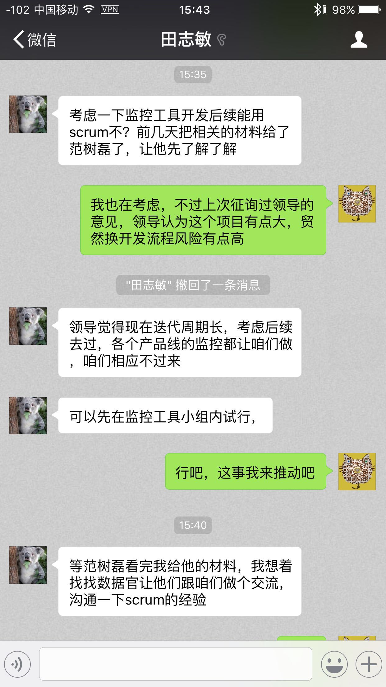 |
| 2016-05-23 15:44:22 | 我 | 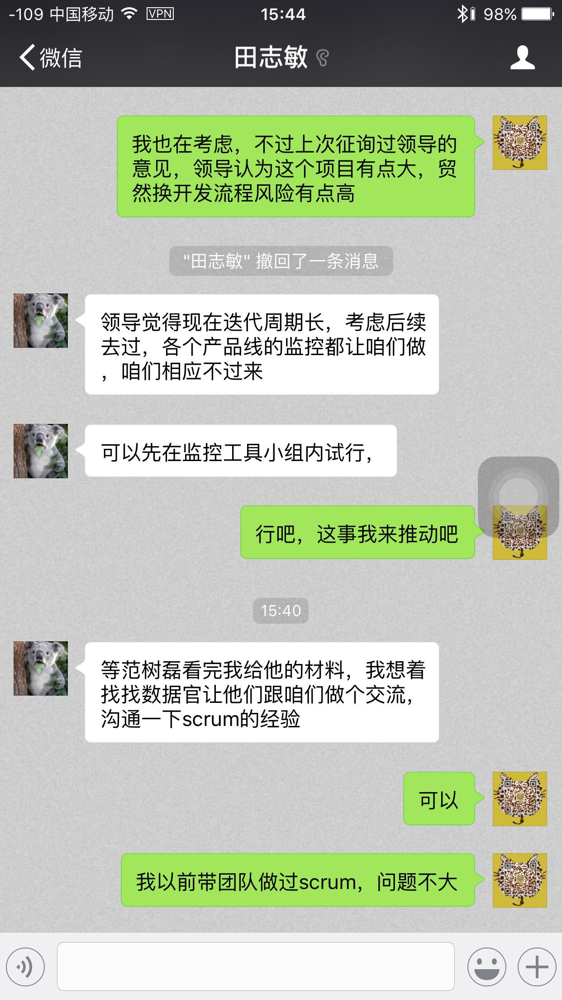 |
| 2016-05-23 15:44:48 | 我 | 你看一下，给我个意见 |
| 2016-05-23 15:52:11 | 你 | 先推呗， |
| 2016-05-23 15:52:17 | 你 | 可能有领导的意思 |
| 2016-05-23 15:52:35 | 我 | 我也在猜是不是领导授意的 |
| 2016-05-23 15:53:07 | 你 | 我觉得可能是 |
| 2016-05-23 15:53:11 | 你 | 你接下来就行了 |
| 2016-05-23 15:53:26 | 我 | 好的 |
| 2016-05-23 16:13:58 | 我 | 不过老田是真敢想，初生牛犊不怕虎 |
| 2016-05-23 16:14:30 | 你 | 是 |
| 2016-05-23 16:14:31 | 我 | 他就参加过一次培训就敢在团队里面推，我是真佩服他的胆量 |
| 2016-05-23 16:14:45 | 你 | 他也不知道具体是个啥 |
| 2016-05-23 16:15:11 | 我 | 当初我带团队的时候，我自己就准备了三个月，然后团队培训一个月 |
| 2016-05-23 16:15:27 | 你 | 是吧 |
| 2016-05-23 16:15:37 | 你 | 你看他也是想摸索着来 |
| 2016-05-23 16:15:38 | 我 | 头半年其实什么产出都没有 |
| 2016-05-23 16:15:51 | 我 | 当时我心里也是非常忐忑 |
| 2016-05-23 16:16:06 | 我 | 好在后来我还是带出来了 |
| 2016-05-23 16:16:54 | 你 | 嗯嗯 |
| 2016-05-23 16:17:04 | 你 | 这个点肯定是领导提的 |
| 2016-05-23 16:17:28 | 你 | 具体怎么推 什么时候推 估计领导也没展开来说 |
| 2016-05-23 16:17:30 | 我 | 你知道我担心什么吗 |
| 2016-05-23 16:17:59 | 我 | 我担心领导只是提了，不一定真的领导想在这个项目上用 |
| 2016-05-23 16:18:01 | 你 | 说说 |
| 2016-05-23 16:18:22 | 我 | 可是田就当成领导想在这个项目上用了 |
| 2016-05-23 16:18:40 | 我 | 我觉得领导的水平没有那么低 |
| 2016-05-23 16:18:54 | 你 | 可是田把为什么用在监控工具上已经说了啊 |
| 2016-05-23 16:19:43 | 我 | 而且当初我和领导提过，不行这个项目就用 Scrum，领导说不合适，冒然改变开发方法风险很高，可以考虑以后找个项目试试 |
| 2016-05-23 16:19:58 | 我 | 这个是领导明确给我的结论 |
| 2016-05-23 16:20:07 | 我 | 所以我很奇怪田的做法 |
| 2016-05-23 16:20:14 | 我 | 我现在也糊涂了 |
| 2016-05-23 16:20:26 | 我 | 到底是领导授意他这么做的呢 |
| 2016-05-23 16:20:43 | 我 | 还是他只是猜测领导的意图去做的决定 |
| 2016-05-23 16:21:05 | 你 | 我觉得这是田跟你说的 |
| 2016-05-23 16:21:15 | 你 | 你就做呗 不行也是他决策的问题啊 |
| 2016-05-23 16:21:44 | 我 | 我不是怕担责任，其实我是很想做的 |
| 2016-05-23 16:22:00 | 你 | 嗯嗯 |
| 2016-05-23 16:22:07 | 我 | 在去年我就想在番薯他们组做 Scrum |
| 2016-05-23 16:22:14 | 你 | 你的顾虑是什么 |
| 2016-05-23 16:22:22 | 我 | 结果领导去年不让我管二组 |
| 2016-05-23 16:22:52 | 你 | o |
| 2016-05-23 16:22:56 | 你 | 原来是这样 |
| 2016-05-23 16:23:20 | 我 | 简单说就是如果不是领导的意思，那么我做了，失败了，领导就会怪我，因为当初他和我说过这个风险很高 |
| 2016-05-23 16:24:03 | 你 | 那你跟领导问句行吗？ |
| 2016-05-23 16:24:21 | 我 | 而且由于不是领导的意思，我做到一半的时候他可能就不支持我了 |
| 2016-05-23 16:24:32 | 我 | 这个很难问呀 |
| 2016-05-23 16:24:45 | 你 | 你微信说声行吗 |
| 2016-05-23 16:24:48 | 你 | 我觉得没事 |
| 2016-05-23 16:24:57 | 我 | 我还得考虑别让领导以为我在打田的小报告 |
| 2016-05-23 16:25:07 | 你 | 就说老田推scrum 你问问他 让他把把关的那个意思 |
| 2016-05-23 16:25:13 | 你 | 看行不行 |
| 2016-05-23 16:25:57 | 我 | 我肯定不能这么问，因为如果真做，我肯定要争取是我做 |
| 2016-05-23 16:26:09 | 我 | 这么问领导就会让田去干 |
| 2016-05-23 16:26:34 | 你 | 你怎么老给我出难题呢 |
| 2016-05-23 16:26:51 | 我 | 领导顺着一句话，就让他做吧，我不就被晾着了吗 |
| 2016-05-23 16:26:59 | 你 | 那倒是 |
| 2016-05-23 16:27:03 | 你 | 你说的对 |
| 2016-05-23 16:27:10 | 我 | 所以你知道我为啥为难了吧 |
| 2016-05-23 16:27:17 | 你 | 恩 |
| 2016-05-23 16:27:46 | 我 | 你知道我怎么想的吗 |
| 2016-05-23 16:27:56 | 我 | 我认为田自作主张的可能性大 |
| 2016-05-23 16:28:19 | 我 | 否则领导应该和我知会一声，而不是田直接找我 |
| 2016-05-23 16:28:48 | 我 | 毕竟从隶属关系上二组归我管，我的主要职责也是研发 |
| 2016-05-23 16:29:00 | 你 | 是 |
| 2016-05-23 16:29:11 | 你 | 推这个的肯定是你做 |
| 2016-05-23 16:29:22 | 我 | 对呀 |
| 2016-05-23 16:29:40 | 我 | 我现在确实纠结 |
| 2016-05-23 16:29:46 | 我 | 我想先等等看 |
| 2016-05-23 16:29:59 | 你 | 恩 看领导提不提 |
| 2016-05-23 16:30:09 | 我 | 是 |
| 2016-05-23 16:44:23 | 我 | 你看什么呢 |
| 2016-05-23 16:44:48 | 你 | 领导给我回邮件了 |
| 2016-05-23 16:45:03 | 我 | 好的 |
| 2016-05-23 16:49:15 | 我 | 我突然想到一个事情 |
| 2016-05-23 16:49:39 | 你 | 说说 |
| 2016-05-23 16:50:22 | 我 | 你打算不理领导了，结果领导突然又给你发邮件 |
| 2016-05-23 16:50:56 | 我 | 现在该你为难了 |
| 2016-05-23 16:55:05 | 我 | 这封邮件回答你的问题了吗？ |
| 2016-05-23 16:56:26 | 你 | 没有 |
| 2016-05-23 16:56:38 | 你 | 我不为难 |
| 2016-05-23 16:59:22 | 我 | 那你还和他聊吗[微笑] |
| 2016-05-23 16:59:32 | 你 | 你干嘛去了 |
| 2016-05-23 17:00:03 | 我 | 股东大会 |
| 2016-05-23 17:00:19 | 你 | 哦 可以聊天吗 |
| 2016-05-23 17:00:27 | 你 | 刚才领导跟我聊天来着 |
| 2016-05-23 17:00:33 | 你 | 聊了很久 |
| 2016-05-23 17:00:40 | 我 | 试试吧，大领导都在 |
| 2016-05-23 17:00:51 | 你 | 别聊了 你先开会吧 |
| 2016-05-23 17:00:53 | 你 | 认真点 |
| 2016-05-23 17:01:00 | 我 | 好的 |
| 2016-05-23 17:01:04 | 你 | 我俩啥也没说就是随便聊聊 |
| 2016-05-23 18:26:16 | 你 | 还不回来啊 |
| 2016-05-23 18:26:41 | 我 | 崔总讲话 |
| 2016-05-23 18:43:27 | 你 | 下班了 |
| 2016-05-23 18:46:00 | 我 | bye |
| 2016-05-23 18:55:01 | 你 | 走了 |
| 2016-05-23 18:55:13 | 我 | 好的，明天见 |
{kind=link}
{kind=link}
{kind=link}
2016-05-24¶
| 2016-05-24 08:23:31 | 我 | 你今天还困了 |
| 2016-05-24 08:29:15 | 你 | 还好吧 |
| 2016-05-24 08:29:40 | 你 | 我对象早上又催我了 结果手机忘带了 折回去拿了一次 |
| 2016-05-24 08:29:42 | 你 | 哈哈 |
| 2016-05-24 08:29:58 | 我 | 唉，忙中出错 |
| 2016-05-24 08:30:11 | 我 | 我昨天晚上做梦梦到你了 |
| 2016-05-24 08:32:03 | 你 | 梦到我啥了 |
| 2016-05-24 08:32:37 | 我 | 其实不太好 |
| 2016-05-24 08:32:54 | 我 | 梦到你受委屈了，和我哭诉 |
| 2016-05-24 08:33:08 | 我 | 我劝了你好久 |
| 2016-05-24 08:33:22 | 你 | 啊 |
| 2016-05-24 08:33:25 | 我 | 不过我就是想不起来你受的啥委屈 |
| 2016-05-24 08:33:31 | 你 | 是够不好的 |
| 2016-05-24 08:33:46 | 你 | 没事 梦都是反的 |
| 2016-05-24 08:34:00 | 我 | 是呢 |
| 2016-05-24 08:34:28 | 你 | 『其实软需也可以简化的，你回头了解一下敏捷开发吧。』领导回邮件的话 |
| 2016-05-24 08:34:37 | 你 | 我看他挺重视敏捷开发的 |
| 2016-05-24 08:34:40 | 我 | 哦 |
| 2016-05-24 08:34:50 | 你 | 我瞎猜的 |
| 2016-05-24 08:35:35 | 我 | 他其实一直想使用敏捷开发，就是没有机会 |
| 2016-05-24 08:36:12 | 你 | 恩 |
| 2016-05-24 08:36:15 | 你 | 没事 |
| 2016-05-24 08:36:26 | 你 | 我昨天也做梦了 |
| 2016-05-24 08:37:12 | 我 | 什么梦 |
| 2016-05-24 08:38:55 | 你 | 梦到上大学 |
| 2016-05-24 08:39:46 | 我 | 是考试吗 |
| 2016-05-24 08:39:51 | 你 | 梦很长，好像是要毕业，然后我们几个女生在小区门口拉上了一个大铁门，说只能走人，不让过车 |
| 2016-05-24 08:40:54 | 我 | 哈哈 |
| 2016-05-24 08:41:32 | 你 | 然后都晚上12点多了，好像有人提议非得把大门装饰一下 |
| 2016-05-24 08:41:53 | 你 | 就开始扯彩带，一直折腾到早上五点 |
| 2016-05-24 08:42:19 | 我 | 真丰富多彩 |
| 2016-05-24 08:42:25 | 你 | 我正灰头土脸的想睡觉的时候，回去的路上，碰到了我高中暗恋的小男生 |
| 2016-05-24 08:43:13 | 你 | 我特别激动，然后说让他等我一会，我去梳洗下，正梳洗的时候，被闹钟吵醒了 |
| 2016-05-24 08:43:37 | 我 | 看样子你现在还是喜欢他呀 |
| 2016-05-24 08:47:33 | 你 | 不至于 可能更放不下的是那种感觉 你说呢 |
| 2016-05-24 08:47:41 | 你 | 那个男生肯定也不适合我 |
| 2016-05-24 08:47:46 | 我 | 是 |
| 2016-05-24 08:47:49 | 你 | 跟那个人已经没啥关系了 |
| 2016-05-24 08:47:57 | 我 | 关键是当时他带给你的那种感觉 |
| 2016-05-24 08:48:13 | 你 | 对 |
| 2016-05-24 08:48:19 | 我 | 估计这种感觉其他人也没法给你了 |
| 2016-05-24 08:48:27 | 你 | shi |
| 2016-05-24 08:48:28 | 我 | 毕竟你和当初也不一样了 |
| 2016-05-24 08:48:37 | 你 | 是的 |
| 2016-05-24 08:48:50 | 你 | 今天忙吗 |
| 2016-05-24 08:49:01 | 我 | 今天会很忙 |
| 2016-05-24 08:49:12 | 我 | 明天我又答辩 |
| 2016-05-24 08:49:36 | 我 | 今天下午有两个会，一个武总的，一个DMD评审 |
| 2016-05-24 08:50:00 | 我 | 这几天我还得安排一下如何提升效率 |
| 2016-05-24 08:50:06 | 我 | 还有半年总结 |
| 2016-05-24 08:50:15 | 我 | 事情实在是太多了 |
| 2016-05-24 08:50:42 | 你 | 这么多啊 |
| 2016-05-24 08:50:52 | 我 | 是 |
| 2016-05-24 08:50:59 | 你 | 答什么辩啊 |
| 2016-05-24 08:51:04 | 我 | 这只是这两天的，后面还有很多事情 |
| 2016-05-24 08:51:15 | 我 | 任职初始化的 |
| 2016-05-24 08:51:42 | 你 | 明天还有吗 |
| 2016-05-24 08:52:18 | 我 | 明天一天，估计后面就没有了 |
| 2016-05-24 08:59:37 | 我 | 你今天忙吗 |
| 2016-05-24 08:59:48 | 你 | 不忙 |
| 2016-05-24 09:01:31 | 我 | 好的，我争取安排出时间陪你聊天 |
| 2016-05-24 09:01:54 | 你 | 没事的 |
| 2016-05-24 09:06:52 | 我 | 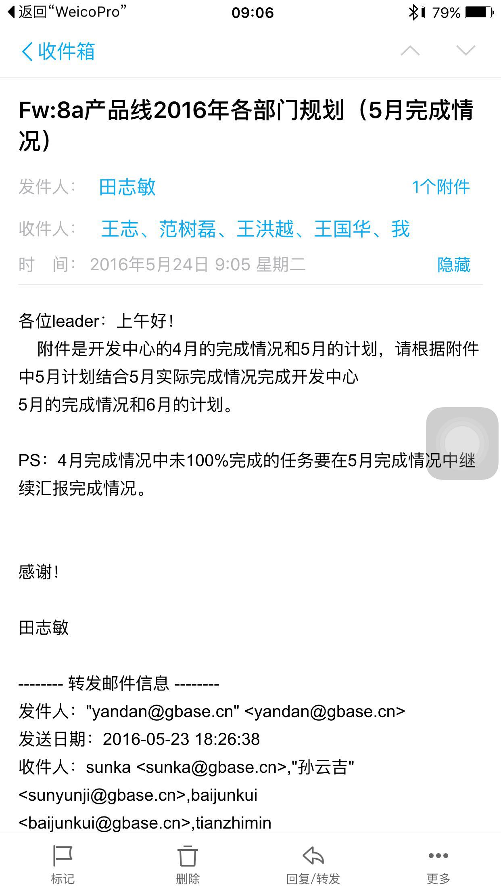 |
| 2016-05-24 09:07:05 | 我 | 你看看收件人 |
| 2016-05-24 09:07:18 | 我 | 我想咨询你一下 |
| 2016-05-24 09:07:51 | 我 | 我用不用和田说说这样的邮件应该给旭明 |
| 2016-05-24 09:08:24 | 你 | 可以啊，为什么是王志呢 |
| 2016-05-24 09:09:07 | 你 | 你用命令的口吻说 |
| 2016-05-24 09:09:21 | 我 | 田一直是这样，连着好几个月了 |
| 2016-05-24 09:09:29 | 我 | 我之前没有告诉你 |
| 2016-05-24 09:09:33 | 你 | 就说，田以后这种邮件直接发给旭明 |
| 2016-05-24 09:09:50 | 你 | 不然就说，以后也抄送给旭明 |
| 2016-05-24 09:10:12 | 你 | 王志啥时候成leader了 |
| 2016-05-24 09:10:42 | 我 | 我担心这是田在分化我们组 |
| 2016-05-24 09:10:56 | 你 | 那你就得扼杀他 |
| 2016-05-24 09:11:01 | 你 | 最讨厌这样的了 |
| 2016-05-24 09:11:31 | 我 | 你说我是直接说呢还是邮件回复 |
| 2016-05-24 09:12:00 | 你 | 直接说吧 |
| 2016-05-24 09:12:03 | 我 | 好的 |
| 2016-05-24 09:12:10 | 你 | 就当没事一样 |
| 2016-05-24 09:14:06 | 我 | 你怎么老能和我想到一起呢 |
| 2016-05-24 09:14:15 | 你 | 搞定 |
| 2016-05-24 09:14:30 | 我 | [胜利] |
| 2016-05-24 11:10:46 | 你 | 啥事敏捷开发啊 |
| 2016-05-24 11:11:07 | 我 | 这个不好说呀 |
| 2016-05-24 11:11:16 | 我 | 你可以去百度上查一下 |
| 2016-05-24 11:11:35 | 你 | 你就是不想跟我说 |
| 2016-05-24 11:11:39 | 你 | 不理你了 |
| 2016-05-24 11:11:43 | 我 | 天理良心 |
| 2016-05-24 11:11:55 | 你 | 我不听我不听 |
| 2016-05-24 11:12:08 | 我 | 好吧，我和你说不，你听不听 |
| 2016-05-24 11:12:33 | 你 | 我自己百度吧 |
| 2016-05-24 11:12:51 | 我 | 敏捷其实是好几种开发方法的总称 |
| 2016-05-24 11:13:31 | 我 | 最早是针对瀑布这种流程比较臃肿的缺点提出来的，所以称为敏捷 |
| 2016-05-24 11:13:40 | 你 | 哦 |
| 2016-05-24 11:13:45 | 你 | 好吧 |
| 2016-05-24 11:13:48 | 我 | 意思就是比瀑布方法快 |
| 2016-05-24 11:14:23 | 你 | 敏捷开发以用户的需求进化为核心，采用迭代、循序渐进的方法进行软件开发。在敏捷开发中，软件项目在构建初期被切分成多个子项目，各个子项目的成果都经过测试，具备可视、可集成和可运行使用的特征。换言之，就是把一个大项目分为多个相互联系，但也可独立运行的小项目，并分别完成，在此过程中软件一直处于可使用状态。 |
| 2016-05-24 11:14:46 | 我 | 但是其实最早的时候敏捷本身没有提出什么正式的流程，只提出一些最佳实践 |
| 2016-05-24 11:15:02 | 你 | 恩 |
| 2016-05-24 11:15:33 | 我 | 因为提出这些实践的人都是大牛，他们特别反感约束 |
| 2016-05-24 11:15:43 | 我 | 所以敏捷一开始是没有什么流程的 |
| 2016-05-24 11:16:25 | 我 | 当时的买点就是快，找了几个理由，比如能快速响应需求变化，快速迭代等等 |
| 2016-05-24 11:17:00 | 你 | 哦哦 |
| 2016-05-24 11:17:33 | 我 | 但是在实践中就出问题了，不能要求所有人都是大牛，结果每个人都有自己的理解，最后就变得乱七八糟了 |
| 2016-05-24 11:18:02 | 你 | 所以流程一定是定制化的 |
| 2016-05-24 11:18:22 | 我 | 后来就有人致力于将敏捷规范化，提出了各种开发方法 |
| 2016-05-24 11:18:36 | 你 | 哦、 |
| 2016-05-24 11:18:47 | 我 | 现在比较成熟的就是scrum |
| 2016-05-24 11:22:23 | 你 | 恩 |
| 2016-05-24 11:22:52 | 我 | 号称符合敏捷的有好几种开发方法，最早是叫极限编程，还有水晶开发，特性驱动开发，精益开发等等 |
| 2016-05-24 11:25:09 | 我 | 个体和互动：高于 流程和工具。 工作的软件：高于 详尽的文档。 客户合作：高于 合同谈判。 响应变化：高于 遵循计划。 |
| 2016-05-24 11:25:16 | 我 | 这是敏捷宣言 |
| 2016-05-24 11:25:29 | 你 | 我的眼睛有点疼 老流泪 你还欺负我 |
| 2016-05-24 11:26:04 | 我 | 啊，怎么啦，先闭眼歇会 |
| 2016-05-24 11:27:34 | 你 | 就不，疼死我得了 |
| 2016-05-24 11:27:37 | 我 | 别看了，闭眼 |
| 2016-05-24 11:27:49 | 我 | 我心疼呀 |
| 2016-05-24 11:27:57 | 我 | 真的心疼 |
| 2016-05-24 11:28:56 | 我 | 我告诉你件事吧 |
| 2016-05-24 11:29:04 | 你 | 啥事 |
| 2016-05-24 11:29:28 | 我 | 昨天我做梦的后半段 |
| 2016-05-24 11:29:38 | 你 | 好啊 |
| 2016-05-24 11:30:28 | 我 | 我劝你半天，你就一直哭 |
| 2016-05-24 11:30:49 | 你 | 哦，这么爱哭呢 |
| 2016-05-24 11:30:59 | 我 | 后来你累了，就在怀里睡着了 |
| 2016-05-24 11:31:16 | 我 | 我看着你觉得特别心疼 |
| 2016-05-24 11:31:41 | 我 | 结果我的心脏真疼了，我就醒了 |
| 2016-05-24 11:33:49 | 你 | 啊？ |
| 2016-05-24 11:33:59 | 你 | 以后做梦no touch |
| 2016-05-24 11:34:26 | 我 | 你看我说心疼不是假的吧[偷笑] |
| 2016-05-24 11:35:03 | 你 | 嗯嗯，不是 |
| 2016-05-24 11:35:06 | 你 | 是真的 |
| 2016-05-24 11:35:11 | 你 | 我故意气你的 |
| 2016-05-24 11:35:18 | 你 | 其实我知道是真的 |
| 2016-05-24 11:35:49 | 我 | 我知道你逗我呢 |
| 2016-05-24 11:36:15 | 你 | 切 |
| 2016-05-24 11:36:47 | 我 | 哄哄你挺好 |
| 2016-05-24 11:37:09 | 你 | 好吧 |
| 2016-05-24 13:42:46 | 我 | 我没睡醒，脑子晕晕的 |
| 2016-05-24 13:43:31 | 你 | 那再睡会呗 |
| 2016-05-24 13:43:43 | 我 | 不睡了，待会去开会 |
| 2016-05-24 13:43:58 | 你 | 哦 2点的评审会吧 |
| 2016-05-24 13:44:11 | 我 | 武总的例会 |
| 2016-05-24 13:44:18 | 我 | 估计两个小时 |
| 2016-05-24 13:44:24 | 我 | 无聊 |
| 2016-05-24 13:44:46 | 你 | 还不能聊天吧 |
| 2016-05-24 13:45:23 | 我 | 应该可以，一般武总不管 |
| 2016-05-24 13:45:49 | 你 | 好 |
| 2016-05-24 13:46:53 | 你 | 库克表示，“我已经认识到，iPhone的售价过高。之后我们将会把 iPhone 的售价下调到大家力所能及的水平。” |
| 2016-05-24 13:47:02 | 你 | 库克觉得我们都是傻子吗 |
| 2016-05-24 13:47:09 | 我 | 哈哈 |
| 2016-05-24 13:49:28 | 我 | 今天吃饭的时候我还在想上午田的事情 |
| 2016-05-24 13:49:41 | 我 | 就是王志和旭明 |
| 2016-05-24 13:49:47 | 你 | 怎么了 |
| 2016-05-24 13:50:02 | 我 | 后来就想到我现在和洪越 |
| 2016-05-24 13:50:24 | 你 | 怎么了 |
| 2016-05-24 13:50:26 | 我 | 突然觉得我和田在互相孤立对方 |
| 2016-05-24 13:50:42 | 我 | 目前看我的盟友似乎多一些 |
| 2016-05-24 13:51:01 | 你 | 是啊 |
| 2016-05-24 13:51:02 | 我 | 我估计田肯定特别郁闷 |
| 2016-05-24 13:51:22 | 我 | 因为他觉得自己只是想把工作干好 |
| 2016-05-24 13:51:25 | 你 | 这件事我一直觉得奇怪 |
| 2016-05-24 13:51:39 | 我 | 你奇怪什么 |
| 2016-05-24 13:52:07 | 你 | 洪越突然对你很好了 对田反倒是爱搭不理的 |
| 2016-05-24 13:52:14 | 你 | 其实田才是他的领导 |
| 2016-05-24 13:52:26 | 你 | 刚开始还公然对着田 |
| 2016-05-24 13:52:42 | 我 | 我觉得还是因为田对他不好 |
| 2016-05-24 13:52:51 | 我 | 很多事情逼的太狠了 |
| 2016-05-24 13:53:17 | 我 | 其实从道理上说，我和洪越之间的联盟是不好的 |
| 2016-05-24 13:53:45 | 我 | 或者说是邪恶，因为本质上对工作的帮助不大 |
| 2016-05-24 13:54:12 | 我 | 而且洪越和我联盟也不是为了工作，是为了自己的位置 |
| 2016-05-24 13:54:34 | 我 | 我现在相当于有点纵容洪越的缺点 |
| 2016-05-24 13:55:09 | 我 | 其实这就是办公室政治，没有永远的朋友，只有永远的利益 |
| 2016-05-24 13:55:14 | 你 | 但是老田要是觉得被孤立的话，他应该拉拢洪越才对啊 |
| 2016-05-24 13:55:23 | 你 | 你觉得呢 |
| 2016-05-24 13:55:35 | 你 | 他可是对洪越一点都不客气 |
| 2016-05-24 13:55:46 | 我 | 田意识到了，但是他的面子阻止了他 |
| 2016-05-24 13:56:16 | 你 | 你怎么知道他意识到了 |
| 2016-05-24 13:56:45 | 我 | 最近洪越好几个需求田都不像以前那样逼洪越了 |
| 2016-05-24 13:57:12 | 你 | 是？我没看出来 |
| 2016-05-24 13:57:35 | 我 | 今天早上的那个需求，就是客户端安装包的 |
| 2016-05-24 13:58:34 | 我 | 我原来以为田会让洪越继续调研或者必须做一个正式的安装包 |
| 2016-05-24 13:58:50 | 我 | 没想到他就直接同意洪越的想法了 |
| 2016-05-24 14:02:41 | 我 | 我其实想说的是办公室政治 |
| 2016-05-24 14:02:56 | 我 | 不是田和洪越的关系 |
| 2016-05-24 14:04:46 | 你 | 哦，我始终觉得田拉王志，是因为他以为这些活是王志负责的，你有点敏感了 |
| 2016-05-24 14:05:16 | 你 | 还有，你跟洪越虽然总是打，但是你俩始终还算可以的 |
| 2016-05-24 14:05:19 | 你 | 是吧 |
| 2016-05-24 14:05:31 | 你 | 你没带手机吗 |
| 2016-05-24 14:06:14 | 我 | 带了 |
| 2016-05-24 14:07:22 | 我 | 怎么讲呢，也许是我敏感，但也许不是 |
| 2016-05-24 14:07:40 | 你 | 那是你的电脑老想 |
| 2016-05-24 14:08:08 | 我 | 有可能，你看一下我的电脑黑屏了吗 |
| 2016-05-24 14:08:27 | 你 | 黑了 |
| 2016-05-24 14:08:56 | 我 | 那就没事，响就响吧 |
| 2016-05-24 14:12:04 | 你 | 你说就是推scrum这件事 老田为什么发微信说呢 老杨当初有当着面 发微信交待工作吗 |
| 2016-05-24 14:12:07 | 你 | 感觉挺奇怪的 |
| 2016-05-24 14:12:31 | 我 | 也有过 |
| 2016-05-24 14:12:56 | 我 | 说实话最近田的行为就是有点怪 |
| 2016-05-24 14:13:51 | 你 | 那怪 |
| 2016-05-24 14:14:38 | 我 | 我和你说这些不是为了这件事情本身 |
| 2016-05-24 14:14:50 | 我 | 是为了你 |
| 2016-05-24 14:15:06 | 我 | 你本身太善良 |
| 2016-05-24 14:16:08 | 你 | 我怎么了 |
| 2016-05-24 14:16:11 | 你 | 等会啊 |
| 2016-05-24 14:20:51 | 你 | 好了 |
| 2016-05-24 14:21:00 | 我 | 我和你说这些是让你了解一些办公室政治的事情 |
| 2016-05-24 14:21:06 | 你 | 嗯嗯 |
| 2016-05-24 14:21:14 | 你 | 我是挺白痴的 |
| 2016-05-24 14:21:36 | 我 | 你太善良，等别人把你孤立了可能你还不知道 |
| 2016-05-24 14:21:56 | 你 | 我跟你说 昨天跟杨总聊天的时候 他说他现在正在看团队建设和团队冲突的视频呢 |
| 2016-05-24 14:22:10 | 我 | 哦 |
| 2016-05-24 14:22:25 | 我 | 是为了解救耿燕的问题吧 |
| 2016-05-24 14:22:39 | 你 | 不知道 |
| 2016-05-24 14:22:50 | 你 | 就是看到团队冲突 有点敏感了 |
| 2016-05-24 14:23:08 | 我 | 嗯 |
| 2016-05-24 14:25:31 | 我 | 上次你和我说了严丹的事情，我就在想这些 |
| 2016-05-24 14:25:52 | 我 | 我自己做了一些推理 |
| 2016-05-24 14:26:02 | 我 | 结果其实不太好 |
| 2016-05-24 14:26:47 | 我 | 这恐怕也是昨天做梦的原因 |
| 2016-05-24 14:27:03 | 你 | 怎么了 |
| 2016-05-24 14:27:09 | 你 | 说说你推理的过程 |
| 2016-05-24 14:27:45 | 你 | 最近大家都挺闲，我要是不回你就是不方便，王洪越没啥事，我怕他会看见 |
| 2016-05-24 14:27:54 | 我 | 好的 |
| 2016-05-24 14:28:22 | 我 | 我假定你还是这么善良 |
| 2016-05-24 14:28:49 | 你 | 恩 |
| 2016-05-24 14:30:14 | 我 | 那么当你的能力强的时候，就会有人嫉妒 |
| 2016-05-24 14:30:33 | 我 | 如果严丹和王志新联合在一起 |
| 2016-05-24 14:30:43 | 我 | 那么你就被孤立了 |
| 2016-05-24 14:31:26 | 我 | 可是按照你现在的性格，你可能都看不出来 |
| 2016-05-24 14:32:01 | 我 | 就像你说我可能敏感，你也会怀疑自己敏感 |
| 2016-05-24 14:32:47 | 你 | 然后呢 |
| 2016-05-24 14:32:48 | 我 | 可是等你真正明白的时候可能已经晚了 |
| 2016-05-24 14:33:09 | 我 | 这些事情我不一定能帮的上你 |
| 2016-05-24 14:33:22 | 我 | 因为你自己都不是很确定 |
| 2016-05-24 14:33:43 | 我 | 和我聊的时候给我的信息也不一定完整 |
| 2016-05-24 14:33:44 | 你 | 没事，但是我会跟你说的，还有你的逻辑有个漏洞 |
| 2016-05-24 14:33:55 | 我 | 你说 |
| 2016-05-24 14:34:25 | 你 | 你说按照我现在的性格都会没感觉是不对的， |
| 2016-05-24 14:34:49 | 我 | 嗯 |
| 2016-05-24 14:34:54 | 你 | 如果她俩想孤立我，我还没看出来，就是他俩想背地里整我 |
| 2016-05-24 14:35:04 | 你 | 而不是简单的孤立 |
| 2016-05-24 14:35:20 | 我 | 是 |
| 2016-05-24 14:35:25 | 你 | 你应该说，我是有感觉的，但又不是特别确定 |
| 2016-05-24 14:35:40 | 我 | 你说的没错 |
| 2016-05-24 14:35:48 | 你 | 总是一会爱心泛滥，一会又觉得他俩可恶 |
| 2016-05-24 14:35:56 | 你 | 这种摇摆让我很被动 |
| 2016-05-24 14:36:01 | 我 | 是 |
| 2016-05-24 14:36:09 | 我 | 你分析的比我深刻 |
| 2016-05-24 14:36:11 | 你 | 最起码不是按照自己的节奏主动出击 |
| 2016-05-24 14:36:23 | 你 | 而是被别人左右了 |
| 2016-05-24 14:36:40 | 你 | 我说的也不一定对其实， |
| 2016-05-24 14:37:39 | 你 | 我想说的是，就像我曾经给你说过，即使聪明如黄蓉，也要等到敌人漏出马脚的时候才能想出办法对付他， |
| 2016-05-24 14:38:12 | 你 | 可是你又总是喜欢把所有可能都推理一遍，我有时候真怕你累坏了 |
| 2016-05-24 14:38:22 | 你 | 我有个问题了 |
| 2016-05-24 14:38:30 | 我 | 你说 |
| 2016-05-24 14:39:32 | 你 | 先说第一个，我觉得老田他自己目标也不明确，要不要孤立你，要不要打压你，他也在摇摆 |
| 2016-05-24 14:39:35 | 你 | 你信吗？ |
| 2016-05-24 14:40:29 | 你 | 而你就是根据他的手段见招拆招了，你每次都能让他吃瘪，但是不会改变什么， |
| 2016-05-24 14:41:17 | 你 | 我觉得你现在应该给自己设定个目标，比如把老田捧走之类的，然后把更多的精力放在目标上 |
| 2016-05-24 14:41:30 | 我 | 你说的没错 |
| 2016-05-24 14:41:32 | 你 | 说实话，你最近状态并不是很好 |
| 2016-05-24 14:42:23 | 你 | 你的状态不好表面上是你疲于应付老田造成的，实际上，是你目标不明确， |
| 2016-05-24 14:42:56 | 你 | 比如，你的目标是跟我聊天，你就会能不搭理他就不搭理他了，没事的时候找他玩玩 |
| 2016-05-24 14:43:03 | 你 | 这样你最起码不会不开心 |
| 2016-05-24 14:43:06 | 你 | 你说呢 |
| 2016-05-24 14:43:22 | 你 | 或者说你应该找个快乐的事情当作自己的目标， |
| 2016-05-24 14:43:25 | 我 | 是 |
| 2016-05-24 14:43:31 | 你 | 没事的时候跟他打 |
| 2016-05-24 14:44:00 | 你 | 可能我最近比较让你省心，结果你就主要跟他打了 |
| 2016-05-24 14:44:02 | 你 | 你说呢 |
| 2016-05-24 14:44:15 | 我 | 😄 |
| 2016-05-24 14:44:17 | 你 | 我说的仅供你参考 |
| 2016-05-24 14:44:34 | 我 | 我说说我的感觉吧 |
| 2016-05-24 14:44:46 | 你 | 哈哈，要是我有很多事，你可能就管我了，没空跟他斗了 |
| 2016-05-24 14:44:48 | 你 | 你说 |
| 2016-05-24 14:45:05 | 我 | 首先我很感动，因为你为我想了这么多 |
| 2016-05-24 14:45:44 | 我 | 其次你真是我的知己 |
| 2016-05-24 14:45:54 | 你 | 我再说一句，你记得当时我说过王洪越是我的心魔的时候，你怎么劝我的吗？跟我刚才说的话一样，我当时都不理解 |
| 2016-05-24 14:45:59 | 你 | 现在理解了 |
| 2016-05-24 14:46:19 | 你 | 真的吗？我始终认为，我给你的建议都没啥用 |
| 2016-05-24 14:46:36 | 我 | 你说的目标我已经有了 |
| 2016-05-24 14:46:41 | 你 | 我要是能帮助你将是我多么荣幸的事 |
| 2016-05-24 14:46:56 | 我 | 就是上周末我想明白的 |
| 2016-05-24 14:47:07 | 我 | 和你说的几乎完全一样 |
| 2016-05-24 14:47:45 | 我 | 我现在不关心田，就像你说的我只是见招拆招 |
| 2016-05-24 14:48:02 | 我 | 我正在策划一些大的事情 |
| 2016-05-24 14:48:23 | 你 | 对的，你就该这样 |
| 2016-05-24 14:48:37 | 我 | 虽然你说的比我想的晚了几天 |
| 2016-05-24 14:48:45 | 你 | 你不该老是围着他，他没啥值得你花心思的 |
| 2016-05-24 14:48:51 | 我 | 但是这是你自己想出来的 |
| 2016-05-24 14:49:08 | 你 | 我没想出来啥大事， |
| 2016-05-24 14:49:13 | 我 | 所以我特别高兴 |
| 2016-05-24 14:49:18 | 你 | 我只想出来要做些事 |
| 2016-05-24 14:49:27 | 你 | 但绝不是跟老田相关的 |
| 2016-05-24 14:54:23 | 我 | [微笑]我关注的还是比你高一点 |
| 2016-05-24 14:54:43 | 你 | 恩 |
| 2016-05-24 14:54:49 | 你 | 这个我信 |
| 2016-05-24 14:54:50 | 我 | 我看见的是你想到的和我想到的一样 |
| 2016-05-24 14:55:08 | 我 | 说明你自己的认知已经开始提升了 |
| 2016-05-24 14:56:09 | 你 | 恩 |
| 2016-05-24 14:56:15 | 我 | 你自己说的只是要做些事 |
| 2016-05-24 14:56:46 | 我 | 说明你现在模型观还是自发的 |
| 2016-05-24 14:56:59 | 我 | 还不是自觉的 |
| 2016-05-24 14:57:22 | 你 | 哦 |
| 2016-05-24 14:57:43 | 我 | 你没有意识到吧 |
| 2016-05-24 14:58:25 | 你 | 没有 |
| 2016-05-24 14:58:41 | 我 | 我说你是我的知己就是因为你已经开始使用这些方法了 |
| 2016-05-24 14:59:01 | 我 | 所以你能得出和我一致的结论 |
| 2016-05-24 15:00:21 | 你 | 我觉得你太乐观了，我并没有你说的那样 |
| 2016-05-24 15:00:47 | 你 | 我说到啥模型了吗 |
| 2016-05-24 15:00:52 | 你 | 好像没有啊 |
| 2016-05-24 15:01:39 | 我 | 那你怎么得出我状态不好的 |
| 2016-05-24 15:02:34 | 你 | 咦，你这个问题问的好 |
| 2016-05-24 15:02:51 | 你 | 我不知道啊，这个是我推理出来的是吧 |
| 2016-05-24 15:02:54 | 你 | 是吧 |
| 2016-05-24 15:03:10 | 你 | 真的吗？我学会推理了竟然 |
| 2016-05-24 15:03:14 | 我 | 对呀 |
| 2016-05-24 15:03:21 | 你 | 我太开心了 |
| 2016-05-24 15:03:30 | 你 | 我自己都没意识到 |
| 2016-05-24 15:03:39 | 我 | 嗯 |
| 2016-05-24 15:03:40 | 你 | 而且我推理对了好像 |
| 2016-05-24 15:03:43 | 你 | 是不是 |
| 2016-05-24 15:03:48 | 我 | 是 |
| 2016-05-24 15:03:50 | 你 | 恩 |
| 2016-05-24 15:03:53 | 你 | 不错 |
| 2016-05-24 15:03:56 | 我 | 非常精准 |
| 2016-05-24 15:04:19 | 你 | 我刚才回想我说过的话，我还纳闷呢，我没说啥啊， |
| 2016-05-24 15:04:24 | 我 | 最关键就是“状态不好”这个模型 |
| 2016-05-24 15:04:35 | 你 | 原来这句话已经体现了 |
| 2016-05-24 15:04:38 | 你 | 嗯嗯 |
| 2016-05-24 15:04:41 | 你 | 对的 |
| 2016-05-24 15:04:47 | 你 | 我好棒啊 |
| 2016-05-24 15:04:49 | 你 | 哈哈 |
| 2016-05-24 15:04:50 | 我 | 是 |
| 2016-05-24 15:04:56 | 我 | 非常棒 |
| 2016-05-24 15:04:58 | 你 | [动画表情] |
| 2016-05-24 15:05:07 | 我 | 你现在了解我为啥开心了吧 |
| 2016-05-24 15:05:12 | 你 | 是 |
| 2016-05-24 15:05:23 | 你 | 我一直想，你说的那套我都学不会了 |
| 2016-05-24 15:05:27 | 我 | 真的是非常非常开心 |
| 2016-05-24 15:05:40 | 你 | 现在看还有有点希望的 |
| 2016-05-24 15:06:50 | 我 | 不是有点，是肯定 |
| 2016-05-24 15:07:11 | 我 | 你已经上道了 |
| 2016-05-24 15:09:24 | 你 | 建模很象是作计划：作计划的价值在于计划编制的过程中，而非计划本身；价值体现在建模的活动中，而非模型本身。实际上，模型不是你系统中的一部分正式的文档，而且在完成它们的使命后可以被丢掉。你会发现值得保留的只有很少的模型，而且它一定是非常完美 |
| 2016-05-24 15:09:53 | 我 | 是 |
| 2016-05-24 15:23:56 | 我 | 你干啥呢 |
| 2016-05-24 15:34:46 | 我 | 领导被武总训了 |
| 2016-05-24 15:35:59 | 你 | 为啥啊 |
| 2016-05-24 15:36:07 | 你 | 我眼睛累的不行 不知道为啥 |
| 2016-05-24 15:37:21 | 我 | 闭眼 |
| 2016-05-24 15:41:45 | 我 | 你闭眼歇会吧 |
| 2016-05-24 16:25:39 | 你 | |
| 2016-05-24 16:25:58 | 你 | Goole的无人车，超级萌 |
| 2016-05-24 16:27:38 | 我 | 好 |
| 2016-05-24 16:31:43 | 我 | 这回我又该忙了 |
| 2016-05-24 16:32:06 | 我 | 领导因为监控时间太长被武总训了 |
| 2016-05-24 16:33:42 | 你 | 哦，是吧 |
| 2016-05-24 16:33:45 | 你 | 哎 |
| 2016-05-24 16:34:11 | 我 | 武总又让领导写一个技术方案，这个也是我的活了 |
| 2016-05-24 16:34:24 | 你 | 范树磊他们也是怨言载道 |
| 2016-05-24 16:34:31 | 你 | 我晕 |
| 2016-05-24 16:34:55 | 你 | 技术方案？武总让咱们写？ |
| 2016-05-24 16:35:16 | 我 | 对呀，让领导写 |
| 2016-05-24 16:35:41 | 我 | 领导哪有空呀，所以就是我这个研发副总的活了 |
| 2016-05-24 16:35:53 | 你 | 那肯定的 |
| 2016-05-24 16:59:08 | 你 | TDD是啥 |
| 2016-05-24 16:59:15 | 你 | 测试驱动开发 |
| 2016-05-24 16:59:33 | 我 | 是 |
| 2016-05-24 17:00:23 | 我 | 现在这种开发方法争议很大 |
| 2016-05-24 17:02:01 | 我 | 你最近怎么对这些又感兴趣了 |
| 2016-05-24 17:02:07 | 你 | 敏捷开发里对重构好像比较支持啊 |
| 2016-05-24 17:02:12 | 我 | 就因为领导说的？ |
| 2016-05-24 17:02:14 | 你 | 我在看敏捷开发 |
| 2016-05-24 17:02:17 | 你 | 是啊 |
| 2016-05-24 17:02:26 | 你 | 我想至少得了解点吧 |
| 2016-05-24 17:02:41 | 你 | 敏捷开发 XP tdd |
| 2016-05-24 17:02:50 | 我 | 那有空我给你面谈扫盲吧 |
| 2016-05-24 17:03:03 | 你 | hao |
| 2016-05-24 17:03:05 | 你 | 好吧 |
| 2016-05-24 17:03:07 | 我 | 这么打字实在是太多了 |
| 2016-05-24 17:03:23 | 你 | 咱们现在是瀑布式的吗 |
| 2016-05-24 17:03:33 | 我 | 是 |
| 2016-05-24 17:03:39 | 你 | 没有迭代 |
| 2016-05-24 17:03:43 | 你 | 是吧 |
| 2016-05-24 17:03:48 | 我 | 没有迭代 |
| 2016-05-24 17:05:32 | 我 | 其实敏捷可以看成多个小瀑布，这些小瀑布之间的关系就叫做迭代 |
| 2016-05-24 17:06:02 | 我 | 所以每次迭代都需要需求和测试介入 |
| 2016-05-24 17:06:34 | 我 | 这样对大家整体素质要求都会提高 |
| 2016-05-24 17:08:46 | 我 | 你理解敏捷宣言吗 |
| 2016-05-24 17:15:46 | 我 | 你几点走？ |
| 2016-05-24 17:16:00 | 你 | 半点吧 我还回来呢 |
| 2016-05-24 17:16:19 | 我 | 好的 |
{kind=link}
{kind=link}
2016-05-25¶
| 2016-05-25 08:07:08 | 我 | 你看上去好累呀 |
| 2016-05-25 08:08:49 | 你 | 是 这周状态太差了 |
| 2016-05-25 08:09:25 | 我 | 你昨天几点回来的 |
| 2016-05-25 08:11:30 | 你 | 昨天都没怎么打 |
| 2016-05-25 08:14:30 | 你 | 亲 |
| 2016-05-25 08:21:23 | 你 | 何以不搭理我啊 |
| 2016-05-25 08:23:56 | 我 | 刚才回邮件呢 |
| 2016-05-25 08:24:08 | 我 | 今天阿娇请假了 |
| 2016-05-25 08:24:22 | 你 | 不是吧 驾照的事吗 |
| 2016-05-25 08:24:27 | 你 | 这丫头真坑 |
| 2016-05-25 08:24:40 | 我 | 感冒 |
| 2016-05-25 08:25:15 | 你 | 好吧 |
| 2016-05-25 08:31:29 | 你 | |
| 2016-05-25 08:31:40 | 你 | |
| 2016-05-25 08:31:57 | 你 | 你看这个大胖猫的表情，像不像阿娇 |
| 2016-05-25 08:32:59 | 我 | 是 |
| 2016-05-25 08:34:01 | 我 | 你今天眼睛好点吗 |
| 2016-05-25 08:34:15 | 你 | 好点了 |
| 2016-05-25 08:34:34 | 你 | 有点要感冒的意思 |
| 2016-05-25 08:34:40 | 你 | 昨天睡的特别沉 |
| 2016-05-25 08:34:45 | 我 | 你昨天着凉了吧 |
| 2016-05-25 08:34:58 | 你 | 前天冻的 估计 |
| 2016-05-25 08:35:01 | 我 | 今天多喝热水 |
| 2016-05-25 08:35:09 | 你 | 恩知道了 |
| 2016-05-25 08:35:17 | 你 | 你今天答辩是吧 |
| 2016-05-25 08:35:31 | 我 | 是，下午去 |
| 2016-05-25 08:35:45 | 我 | 我昨天还以为是一天呢 |
| 2016-05-25 08:36:06 | 你 | 恩 好 上午一会就过去了 |
| 2016-05-25 08:36:40 | 我 | 是，今天其实还有很多活呢 |
| 2016-05-25 08:36:49 | 你 | 是吧 |
| 2016-05-25 08:36:51 | 我 | 我还想和你聊天 |
| 2016-05-25 08:37:04 | 我 | 唉 |
| 2016-05-25 08:37:06 | 你 | 会有时间的 |
| 2016-05-25 08:37:07 | 你 | 没事 |
| 2016-05-25 08:37:35 | 你 | 昨天我回来你们都走了 胖子给了我一个特别大的香蕉 我说今天给他待盒奶 |
| 2016-05-25 08:37:40 | 你 | 带 |
| 2016-05-25 08:37:42 | 你 | 过来 |
| 2016-05-25 08:38:04 | 你 | 他不是牙疼吗 吃不了食物 |
| 2016-05-25 08:38:12 | 我 | 是 |
| 2016-05-25 08:38:24 | 你 | 不知道还以为我为啥对胖子这样呢 |
| 2016-05-25 08:38:27 | 你 | 是不是 |
| 2016-05-25 08:38:33 | 我 | 不会的 |
| 2016-05-25 08:38:44 | 我 | 只是一次，没人那么认为的 |
| 2016-05-25 08:39:07 | 你 | 反正也没啥 别人爱咋想咋想 |
| 2016-05-25 08:39:16 | 你 | 我只是看着胖子挺可爱的 |
| 2016-05-25 08:39:38 | 你 | 我看着他特别特别想吃香蕉 是特别想吃的那种 |
| 2016-05-25 08:39:41 | 你 | 哈哈 |
| 2016-05-25 08:39:45 | 你 | 可是吃不了 |
| 2016-05-25 08:39:49 | 我 | 有时候也挺可恨的吧 |
| 2016-05-25 08:40:02 | 你 | 大多数时候都很讨厌 |
| 2016-05-25 08:40:13 | 我 | 哈哈 |
| 2016-05-25 09:27:13 | 我 | 你的衣服再加上一件纱的披风就有仙女的感觉了 |
| 2016-05-25 09:42:51 | 你 | 你咋了 |
| 2016-05-25 09:50:03 | 我 | 我没事呀 |
| 2016-05-25 09:50:22 | 我 | 你看我哪不正常啦 |
| 2016-05-25 09:50:30 | 你 | meiyou |
| 2016-05-25 09:51:13 | 你 | 你看你刚才说的那句话 我和仙女差的何止是一件、纱的披风 |
| 2016-05-25 09:52:23 | 我 | 视角不同 |
| 2016-05-25 09:53:15 | 我 | 我是从外部看，你是从你自己的角度看 |
| 2016-05-25 09:54:20 | 你 | 好吧 |
| 2016-05-25 09:54:35 | 你 | 再说 谁见过仙女啊 |
| 2016-05-25 10:02:17 | 我 | 😄 |
| 2016-05-25 10:18:52 | 我 | 真想给你照张照片，你现在的样子很美 |
| 2016-05-25 10:19:04 | 我 | 就像美女在抚琴 |
| 2016-05-25 10:20:06 | 你 | 公然调戏 |
| 2016-05-25 10:20:23 | 我 | 😄 |
| 2016-05-25 10:27:48 | 我 | 这几天你看敏捷了吗 |
| 2016-05-25 10:29:03 | 你 | 恩 |
| 2016-05-25 10:29:45 | 我 | 你知道用户故事吗 |
| 2016-05-25 10:59:33 | 我 | 亲，不理我了？ |
| 2016-05-25 11:00:53 | 你 | 不是 sorry |
| 2016-05-25 11:00:56 | 你 | 我在看书呢 |
| 2016-05-25 11:01:17 | 我 | 好的，你看吧 |
| 2016-05-25 11:36:15 | 我 | 你几点去吃饭 |
| 2016-05-25 11:36:24 | 我 | 不会不吃了吧 |
| 2016-05-25 12:05:55 | 你 | 吃完了 |
| 2016-05-25 12:06:00 | 你 | 吃了好多 |
| 2016-05-25 12:06:04 | 你 | 跟张明静 |
| 2016-05-25 12:06:20 | 我 | 好 |
| 2016-05-25 12:06:32 | 我 | 我们也吃完了 |
| 2016-05-25 12:06:43 | 你 | 好 |
| 2016-05-25 12:18:42 | 你 | [链接] 【财务圈】《欢乐颂》散场，“成为安迪”前你要明白的8个道理 |
| 2016-05-25 12:24:36 | 你 | 你看这个是不是跟喝白开水似的 |
| 2016-05-25 12:24:41 | 你 | 哈哈 |
| 2016-05-25 12:24:59 | 我 | 是 |
| 2016-05-25 12:26:27 | 你 | 真讨厌 |
| 2016-05-25 12:26:32 | 我 | 为啥 |
| 2016-05-25 12:26:45 | 你 | 恼羞成怒 |
| 2016-05-25 12:27:04 | 我 | 😄 |
| 2016-05-25 12:27:38 | 我 | 你是因为喜欢欢乐颂吧 |
| 2016-05-25 12:27:53 | 你 | 还好吧，不喜欢 |
| 2016-05-25 12:28:06 | 我 | 其实想这样借着欢乐颂的鸡汤我看了好几个了 |
| 2016-05-25 12:28:11 | 你 | 没啥营养，瞎看 |
| 2016-05-25 12:28:27 | 我 | 我觉得我写的都比他们强 |
| 2016-05-25 12:28:34 | 你 | 是 |
| 2016-05-25 12:29:24 | 我 | 不过抽空我该把上次给你写的再改改了 |
| 2016-05-25 12:29:53 | 我 | 上次写的有好多地方跳跃性太强了 |
| 2016-05-25 12:30:08 | 我 | 我自己看不过眼 |
| 2016-05-25 12:30:20 | 你 | 有时间再说吧 |
| 2016-05-25 12:30:26 | 你 | 挺累的 |
| 2016-05-25 12:30:52 | 我 | 今天早上我看老毛的文档的时候还想呢，写成这样也太对不起我 |
| 2016-05-25 12:31:09 | 你 | 哈哈 |
| 2016-05-25 12:31:14 | 我 | 后来想想好像我也挺对不起你的[偷笑] |
| 2016-05-25 12:31:27 | 你 | 没有啊，完全没有 |
| 2016-05-25 12:31:58 | 你 | 相信我，我是做系分的 |
| 2016-05-25 12:32:25 | 我 | 😄 |
| 2016-05-25 12:32:49 | 我 | 今天看了多少？ |
| 2016-05-25 13:20:20 | 你 | 醒了 你们开始了吗 |
| 2016-05-25 13:22:53 | 我 | 是，你好点吗 |
| 2016-05-25 13:25:33 | 你 | 恩 没看多少呢 |
| 2016-05-25 13:27:10 | 我 | 慢慢看吧，这本书是给软件研发看的，你可能看起来有点费劲 |
| 2016-05-25 13:28:40 | 你 | 领导那个第三版的真看不懂 |
| 2016-05-25 13:28:46 | 你 | 这个第七版的好很多 |
| 2016-05-25 13:29:24 | 你 | 差别很大 本来想把这个给他的 后来我对比下目录 差太多 我想还是给他那个吧 |
| 2016-05-25 13:29:38 | 我 | 嗯 |
| 2016-05-25 13:29:49 | 我 | 他现在也没空看 |
| 2016-05-25 13:31:53 | 你 | 每天都能听到严丹和杨丽颖说买服装的事 |
| 2016-05-25 13:32:02 | 你 | 他们为什么要买那么多衣服呢 |
| 2016-05-25 13:32:23 | 我 | 她们喜欢呗，追求不一样 |
| 2016-05-25 13:39:58 | 我 | 你忙吗？ |
| 2016-05-25 13:40:08 | 我 | 有件事情想和你先说一下 |
| 2016-05-25 13:40:58 | 我 | 就是番薯的监控工具，因为要用敏捷，所以需要你从需求文档里面提取用户故事 |
| 2016-05-25 13:41:40 | 我 | 我今天看了一下你写的软需，应该不是太难，你可以先准备一下，我打算从明天开始就正式开发 |
| 2016-05-25 13:41:42 | 你 | 你说吧 |
| 2016-05-25 13:41:44 | 你 | 刚看到 |
| 2016-05-25 13:42:01 | 你 | 我不太知道要准备什么 |
| 2016-05-25 13:42:28 | 你 | 用户故事，意思是来描述用户渴望得到的功能。 |
| 2016-05-25 13:42:55 | 我 | 和用例有点相似，更偏向用户 |
| 2016-05-25 13:43:02 | 你 | 恩 |
| 2016-05-25 13:43:10 | 我 | 你不用写出来，就是知道怎么分解就可以了 |
| 2016-05-25 13:43:11 | 你 | 我正在看百度百科 |
| 2016-05-25 13:43:23 | 你 | 哦 |
| 2016-05-25 13:51:26 | 我 | 无聊呀，这几个答辩的都是前端的 |
| 2016-05-25 13:51:46 | 我 | 和咱们的差距太大了 |
| 2016-05-25 13:51:53 | 你 | 恩 |
| 2016-05-25 13:51:56 | 我 | 都没法问 |
| 2016-05-25 13:51:58 | 你 | 我再看你说的那个呢 |
| 2016-05-25 13:52:00 | 你 | 哈哈 |
| 2016-05-25 13:52:05 | 你 | 那就等别人问 |
| 2016-05-25 13:52:07 | 我 | 一问就漏了 |
| 2016-05-25 13:52:56 | 你 | 那就别问了 |
| 2016-05-25 13:53:32 | 你 | 你知道我啥感觉吗 对用户故事 |
| 2016-05-25 13:53:39 | 我 | 说说 |
| 2016-05-25 13:53:51 | 你 | 这个用户故事好像咱们用需里的问题分析和业务需求 |
| 2016-05-25 13:54:03 | 你 | 就是这两个章节的东西 |
| 2016-05-25 13:54:14 | 你 | 比用例更贴合用户一些 |
| 2016-05-25 13:54:15 | 我 | 还有吗 |
| 2016-05-25 13:54:26 | 你 | 没了 |
| 2016-05-25 13:54:40 | 你 | 我就看了一点[傲慢] |
| 2016-05-25 13:54:42 | 我 | 你说对了一半 |
| 2016-05-25 13:54:50 | 你 | 那你说说另一半 |
| 2016-05-25 13:55:44 | 我 | 你说的都没错，另一半是把你写的用例拆开，和前面你说的部分结合起来，用用户的语言讲出来 |
| 2016-05-25 13:56:01 | 我 | 用户故事就是更详细的用需 |
| 2016-05-25 13:56:31 | 我 | 然后开发就根据用户故事直接开发，不再需要软需 |
| 2016-05-25 13:56:37 | 你 | 啊？ |
| 2016-05-25 13:56:39 | 你 | 那也行啊 |
| 2016-05-25 13:56:50 | 我 | 你说说哪不行 |
| 2016-05-25 13:56:58 | 你 | 但是用户故事不一定是用户和系统交互的模式吧 |
| 2016-05-25 13:57:14 | 你 | 就是用户xxxxx,系统xxxxx |
| 2016-05-25 13:57:17 | 你 | 这种模式 |
| 2016-05-25 13:57:18 | 我 | 是的 |
| 2016-05-25 13:57:31 | 我 | 用户故事不够规范化 |
| 2016-05-25 13:57:42 | 你 | 像个用例描述 |
| 2016-05-25 13:57:44 | 你 | 还有 |
| 2016-05-25 13:58:36 | 你 | 我理解的 软需的用例模型跟设计相关性特别大 这也是为啥杨总说以前他的team 软需都是RD人员写的 因为模型有关联 |
| 2016-05-25 13:58:59 | 你 | 没有软需 没有纬度 设计起来岂不是很麻烦 |
| 2016-05-25 13:59:07 | 你 | 我自己的一点理解啊 |
| 2016-05-25 13:59:26 | 你 | 还是说敏捷够小 纬度够单一？ |
| 2016-05-25 13:59:31 | 我 | 你说的没错 |
| 2016-05-25 13:59:41 | 我 | 不是维度单一 |
| 2016-05-25 13:59:56 | 你 | 那最后不就是拼凑了吗 这跟架构设计的复用有没有冲突啊 |
| 2016-05-25 14:00:01 | 你 | 这个点我一直没想明白 |
| 2016-05-25 14:00:30 | 我 | 我慢慢给你解释吧，这涉及到瀑布和敏捷的一些根本差别 |
| 2016-05-25 14:00:39 | 你 | 恩 |
| 2016-05-25 14:00:59 | 你 | 估计挺费劲的 我姐他们现在是敏捷 |
| 2016-05-25 14:01:00 | 我 | 现在咱们的软需是需要研发背景的，特别是对产品的架构要一定的了解 |
| 2016-05-25 14:01:22 | 你 | 她那天正好跟我提了一句 她今天没空 说晚上给我打电话说说 |
| 2016-05-25 14:01:32 | 你 | 是 |
| 2016-05-25 14:01:44 | 我 | 谁？领导吗？ |
| 2016-05-25 14:03:13 | 你 | 我姐 |
| 2016-05-25 14:03:17 | 你 | 想什么呢 |
| 2016-05-25 14:03:20 | 我 | 用户故事更靠近用户，更不规范，在开发的时候是由研发人员自己根据用户故事的描述和产品架构去决定如何开发 |
| 2016-05-25 14:03:26 | 你 | 他怎么有空跟我说 |
| 2016-05-25 14:03:49 | 我 | 因此少了我们现在做的基于架构的需求分析 |
| 2016-05-25 14:04:04 | 我 | 就是说用户故事是用户的一种描述 |
| 2016-05-25 14:04:18 | 我 | 因此必然存在不准确性 |
| 2016-05-25 14:04:21 | 你 | 恩 明白 |
| 2016-05-25 14:04:38 | 我 | 瀑布流程就是要消除这种不准确性 |
| 2016-05-25 14:04:52 | 我 | 而敏捷不是，敏捷是去拥抱 |
| 2016-05-25 14:05:22 | 我 | 就是很快做出一版，然后让用户确认、更改 |
| 2016-05-25 14:05:29 | 我 | 这就形成了迭代 |
| 2016-05-25 14:05:38 | 你 | 哦 这句话看明白了 |
| 2016-05-25 14:05:58 | 你 | 那这个切分的依据是什么呢 |
| 2016-05-25 14:06:01 | 我 | 好处是随时和用户沟通，能对用户的需求响应快 |
| 2016-05-25 14:06:14 | 我 | 坏处就是变动会比较大 |
| 2016-05-25 14:06:33 | 我 | 切分的依据基本上是依靠经验 |
| 2016-05-25 14:06:43 | 我 | 不同的领域差别很大 |
| 2016-05-25 14:06:48 | 你 | 那敏捷之所以被推崇的根本原因是什么？ |
| 2016-05-25 14:07:01 | 你 | 你听我说先 |
| 2016-05-25 14:07:04 | 你 | 我有个问题 |
| 2016-05-25 14:07:05 | 我 | 好 |
| 2016-05-25 14:07:35 | 你 | 咱们先谈普适的瀑布模型 而不是我们现在实施的 |
| 2016-05-25 14:08:19 | 我 | 好 |
| 2016-05-25 14:08:35 | 你 | 瀑布模型是把风险都推到前边，在分析阶段尽量消除不准确性，从而保证风险可控 |
| 2016-05-25 14:08:38 | 你 | 是不是 |
| 2016-05-25 14:08:43 | 我 | 是 |
| 2016-05-25 14:09:26 | 你 | 但是这个模型缺点是 开发时间长，而且对需求变化的响应很差 |
| 2016-05-25 14:09:43 | 我 | 是 |
| 2016-05-25 14:09:44 | 你 | 等 |
| 2016-05-25 14:14:11 | 你 | 回来了 |
| 2016-05-25 14:14:14 | 你 | 我接着说 |
| 2016-05-25 14:14:24 | 我 | 好 |
| 2016-05-25 14:15:19 | 你 | 我们的瀑布模型虽然不能拥抱变化，但是他就像一座山一样，是支持扩展的， |
| 2016-05-25 14:15:34 | 你 | 从这个角度上来说也是可以响应一部分的变化 |
| 2016-05-25 14:16:05 | 我 | 嗯 |
| 2016-05-25 14:16:08 | 你 | 所以从长远来看，如果设计的好，软件的生命周期会长，会长成参天大树 |
| 2016-05-25 14:16:16 | 你 | 但是迭代就不一样了 |
| 2016-05-25 14:17:09 | 你 | 迭代是能拥抱变化，从客户的角度来说，也能比较快的响应用户，客户投的钱，能比较快的得到回应 用户体验好一些 |
| 2016-05-25 14:17:25 | 你 | 但是每次迭代的产品 更像是小沙丘 |
| 2016-05-25 14:18:09 | 你 | 感觉没有跟呢 一片片的小树 长不成参天大树 |
| 2016-05-25 14:18:41 | 你 | 因为每个需求都被切分成小点了 怎么确认哪次的是根本的呢 |
| 2016-05-25 14:18:50 | 你 | 还是我理解错了 |
| 2016-05-25 14:21:20 | 我 | 你理解的没错 |
| 2016-05-25 14:21:21 | 你 | 你比如说 我们的8a这么大的产品 要是迭代开发 能实现吗 |
| 2016-05-25 14:21:26 | 我 | 只是不全面 |
| 2016-05-25 14:21:29 | 你 | 那做成MPP样式的 这个点就需要超级多的迭代 |
| 2016-05-25 14:21:55 | 你 | 没有认为谁好谁坏 只是辩证的看待这两种方式 |
| 2016-05-25 14:22:06 | 你 | 我还有个高大上的问题 |
| 2016-05-25 14:22:11 | 我 | 你先说 |
| 2016-05-25 14:22:30 | 你 | 这种软件开发模式的演变背后有什么哲学规律呢？ |
| 2016-05-25 14:23:02 | 你 | 就是BOB大叔提出那12条规则后 得到业界一直认可的原因是什么 |
| 2016-05-25 14:23:29 | 你 | 还有一个问题 |
| 2016-05-25 14:23:35 | 我 | 你要是了解软件开发历史你就明白了 |
| 2016-05-25 14:23:36 | 你 | 哈哈我是不是问题太多了 |
| 2016-05-25 14:23:39 | 我 | 不是 |
| 2016-05-25 14:23:45 | 我 | 问题越多越好 |
| 2016-05-25 14:24:11 | 你 | 就是昨天你跟范树磊说话时 番薯说这个工期紧 所以要不换个项目做 |
| 2016-05-25 14:24:15 | 你 | 他这句话说错了 |
| 2016-05-25 14:24:28 | 我 | 是 |
| 2016-05-25 14:25:27 | 你 | 错在哪呢 ？我理解的 敏捷开发是为了提高生产率而生的 按理说 我们采用敏捷开发 只会比原来完成的快，而不会完成的慢 |
| 2016-05-25 14:25:47 | 你 | 除非。。。。 |
| 2016-05-25 14:26:06 | 你 | 除非他对现在的流程理解不到位 或者不了解敏捷 |
| 2016-05-25 14:26:10 | 你 | 你说我说的对不对 |
| 2016-05-25 14:26:11 | 你 | 哈哈 |
| 2016-05-25 14:26:20 | 我 | 你说的对 |
| 2016-05-25 14:31:07 | 我 | 你问的这几个问题说起来就话长了 |
| 2016-05-25 14:31:25 | 你 | 是啊 |
| 2016-05-25 14:31:36 | 你 | 要不等着面谈吧 |
| 2016-05-25 14:31:41 | 我 | 可以 |
| 2016-05-25 14:31:43 | 你 | 我想清楚的知道下 |
| 2016-05-25 14:31:55 | 你 | 这样打字可能会有理解偏差 |
| 2016-05-25 14:31:59 | 我 | 我先和你说一下最本质的区别 |
| 2016-05-25 14:32:06 | 你 | 嗯嗯 好 |
| 2016-05-25 14:32:52 | 我 | 瀑布是一种理想流程，先假定需求不变，然后对需求进行分析，然后开发，这样可以保证开发和需求相符 |
| 2016-05-25 14:34:00 | 我 | 迭代是一种现实的选择，因为需求一定会变，所以干脆就不对需求做详细分析，因为即使分析完了万一变了就白做了。 |
| 2016-05-25 14:34:32 | 我 | 那么如何保证迭代开发的东西和需求相符呢，就是不停的和用户确认 |
| 2016-05-25 14:35:05 | 我 | 每开发一小点功能就和用户确认一下，然后继续开发，以此类推 |
| 2016-05-25 14:35:16 | 我 | 所以叫做迭代 |
| 2016-05-25 14:35:40 | 你 | 那为什么会提高效率呢 |
| 2016-05-25 14:35:50 | 你 | 那还有做计划的必要性吗 |
| 2016-05-25 14:36:03 | 我 | 可是真正的用户是不会随时陪着研发的，所以需要有一个用户代表，一般就是产品经理 |
| 2016-05-25 14:36:28 | 我 | 所谓的提高效率其实是消除了瀑布因需求变化导致的浪费 |
| 2016-05-25 14:36:59 | 我 | 还是需要做计划的，只是计划非常粗，经常会调整 |
| 2016-05-25 14:37:14 | 我 | 不像咱们现在的计划，做完了就几乎不变了 |
| 2016-05-25 14:37:28 | 你 | 那还有个问题 |
| 2016-05-25 14:38:16 | 你 | 假如我们现在已经做出了很多原子性的小功能 我们是根据什么把这些原子性的小功能组合到一起？ |
| 2016-05-25 14:38:20 | 你 | 业务？ |
| 2016-05-25 14:39:24 | 我 | 其实先做了很多原子性的功能可能本身就是错误的 |
| 2016-05-25 14:39:45 | 我 | 这意味着有可能是自底向上设计的 |
| 2016-05-25 14:40:02 | 你 | ？ |
| 2016-05-25 14:40:06 | 我 | 一般应该是自顶向下设计 |
| 2016-05-25 14:40:13 | 你 | 对啊 |
| 2016-05-25 14:40:19 | 你 | 就是现有树根 |
| 2016-05-25 14:40:28 | 我 | 先有整体架构，再有小功能 |
| 2016-05-25 14:40:29 | 你 | 再有树枝 再有叶子啊 |
| 2016-05-25 14:40:33 | 你 | 我晕 |
| 2016-05-25 14:40:34 | 我 | 对 |
| 2016-05-25 14:40:49 | 你 | 整体架构在敏捷里是怎么来的 |
| 2016-05-25 14:41:08 | 你 | 是不是敏捷只适合软件维护呢 |
| 2016-05-25 14:41:11 | 我 | 在刚开始的时候 |
| 2016-05-25 14:41:32 | 我 | 不是，其实敏捷强调的是架构的演化 |
| 2016-05-25 14:41:43 | 你 | 下面这段话回答了用户故事为什要短小 |
| 2016-05-25 14:41:45 | 你 | 多人想当然的认为用户故事大小跟完成的时间是成正比（线性的）。但是事实并不是这样。有研究表明随着用户故事规模的增长，完成它需要的时间会呈非线性的 增长。参见“Scale Lean & Agile Development”里面的截图。两倍大小的用户故事需要花五倍的时间来完成。为什么？因为随着其粒度的增大，不确定性(由于缺陷、人的因素，外部依 赖等因素)会急剧提高。 |
| 2016-05-25 14:41:58 | 我 | 一般会使用一个通用的架构和框架，然后再逐渐演化 |
| 2016-05-25 14:42:06 | 你 | 哦 |
| 2016-05-25 14:43:25 | 你 | 这是另一种思想了 |
| 2016-05-25 14:43:39 | 我 | 对 |
| 2016-05-25 14:43:58 | 你 | 战略层滴 |
| 2016-05-25 14:44:10 | 你 | 团建T恤我想要白色滴 |
| 2016-05-25 14:44:13 | 我 | 没错 |
| 2016-05-25 14:44:21 | 我 | 你找领导要呀 |
| 2016-05-25 14:44:30 | 你 | 能行吗？ |
| 2016-05-25 14:44:47 | 我 | 让他给你留一件 |
| 2016-05-25 14:44:53 | 你 | 这也行啊 |
| 2016-05-25 14:44:54 | 我 | 开个后门呗 |
| 2016-05-25 14:44:57 | 你 | 算了 |
| 2016-05-25 14:44:59 | 你 | 不要 |
| 2016-05-25 14:45:00 | 我 | 为啥不行 |
| 2016-05-25 14:45:34 | 你 | 我发现我对这些知识超级感兴趣 |
| 2016-05-25 14:45:45 | 我 | 好呀 |
| 2016-05-25 14:45:50 | 我 | 我教你 |
| 2016-05-25 14:46:01 | 你 | 好啊好啊 |
| 2016-05-25 14:46:04 | 我 | 总算有人能听懂了 |
| 2016-05-25 14:46:06 | 你 | 怕耽误你时间 |
| 2016-05-25 14:46:12 | 我 | 不会 |
| 2016-05-25 14:48:14 | 你 | 而且我喜欢做新的东西 |
| 2016-05-25 14:48:32 | 我 | 好呀 |
| 2016-05-25 14:48:34 | 你 | 我还说 要是耿燕走了 质控的工作交给你的话 我就替你干 |
| 2016-05-25 14:48:41 | 你 | 哈哈 |
| 2016-05-25 14:48:43 | 我 | 太好了 |
| 2016-05-25 14:48:46 | 你 | 我瞎想的 |
| 2016-05-25 14:48:56 | 我 | 我把我会的都教给你 |
| 2016-05-25 14:49:01 | 你 | 我跟领导说 我要负责一部分质控的工作 |
| 2016-05-25 14:49:02 | 你 | 哈哈 |
| 2016-05-25 14:49:21 | 我 | 可以 |
| 2016-05-25 14:49:34 | 我 | 领导也想自己培养呢 |
| 2016-05-25 14:49:35 | 你 | 反正需求也没那么多的活 |
| 2016-05-25 14:50:00 | 你 | 主要我对象也是做这个的 这样我就可以跟他说上话了 |
| 2016-05-25 14:50:08 | 我 | 是 |
| 2016-05-25 14:51:53 | 你 |
|
| 2016-05-25 14:52:11 | 你 | 网页上这些说法 感觉都没说到点上 |
| 2016-05-25 14:52:18 | 我 | 是 |
| 2016-05-25 14:52:19 | 你 | 都是很表象的东西 |
| 2016-05-25 14:52:27 | 我 | 这也是敏捷的一个缺陷 |
| 2016-05-25 14:52:42 | 我 | 就是表象的东西太多，大家的理解不一样 |
| 2016-05-25 14:52:58 | 我 | 而真正的本质大家反而讲的很少 |
| 2016-05-25 14:53:30 | 你 | 很明显这些东西都是细节 真正好的地方没说 坏的地方也没说 |
| 2016-05-25 14:53:50 | 我 | 是 |
| 2016-05-25 14:55:02 | 你 | 『两倍大小的用户故事需要花五倍的时间来完成』就这句话来说 |
| 2016-05-25 14:55:29 | 你 | 那多出的三倍时间 处理是两个原子故事之间的联系 |
| 2016-05-25 14:56:13 | 你 | 可是你如果把故事分开 你处理的永远是两个独立的故事 却没有算上两个故事之间的联系 |
| 2016-05-25 14:56:28 | 我 | 你继续说 |
| 2016-05-25 14:56:37 | 你 | 算上以后也不一定是多少呢 |
| 2016-05-25 14:56:56 | 你 | 我只是觉得他的这种算法不对 |
| 2016-05-25 14:57:11 | 我 | 哪里不对呢 |
| 2016-05-25 14:57:23 | 你 | 用户要的是一颗树 不是一堆叶子 |
| 2016-05-25 14:58:21 | 你 | 你刚才说 架构是最开始设计好的 或者是已有的复用了 这包括对业务的分析吗？ |
| 2016-05-25 14:58:40 | 我 | 对 |
| 2016-05-25 14:58:42 | 你 | 前期调研业务的时间还是得有吧 |
| 2016-05-25 14:58:48 | 你 | 我有点晕了 |
| 2016-05-25 14:58:55 | 你 | 可能把你也说晕了 |
| 2016-05-25 14:59:41 | 我 | 敏捷这些地方定义的就是不清楚，你晕是正常的 |
| 2016-05-25 14:59:51 | 我 | 这个就是个案分析了 |
| 2016-05-25 14:59:59 | 我 | 各种情况都有 |
| 2016-05-25 15:00:00 | 你 | 你知道 我那时候看你的视频 |
| 2016-05-25 15:00:05 | 你 | 讲设计的 |
| 2016-05-25 15:00:26 | 你 | 你说的哪些理论 我从来没听说过 |
| 2016-05-25 15:00:42 | 我 | 嗯 |
| 2016-05-25 15:00:44 | 你 | 我上了这么多年学 可能是因为我不是软件工程的？ |
| 2016-05-25 15:01:02 | 我 | 不是 |
| 2016-05-25 15:01:14 | 我 | 因为很多东西是我自己总结的 |
| 2016-05-25 15:01:28 | 你 | 那C，C++ 微原我都学过 |
| 2016-05-25 15:01:30 | 我 | 其实这些东西别人也讲过，只是和我的说法不一样 |
| 2016-05-25 15:01:44 | 你 | 而且都学了很多年 计算机二级也过了 |
| 2016-05-25 15:01:56 | 你 | 我自己没发现 老师们也从来没跟我说过 |
| 2016-05-25 15:02:56 | 我 | 你们老师也不见得懂 |
| 2016-05-25 15:03:08 | 我 | 这些都是工程经验 |
| 2016-05-25 15:03:17 | 你 | 是呢 |
| 2016-05-25 15:03:22 | 我 | 不去做是很难体会的 |
| 2016-05-25 15:03:25 | 你 | 老师们都是死记硬背的 |
| 2016-05-25 15:03:32 | 我 | 是 |
| 2016-05-25 15:03:35 | 你 | 真丢人 |
| 2016-05-25 15:05:20 | 你 | 从用户故事开始，然后到用户场景，再到详细的用户用例，到最后在用户流中提现所有信息。这个过程是从用户研究到产品设计之间的一座桥梁。它让你通过用户访谈、可用性研究收集来的信息能够被更科学的处理和更好的与用户体验设计结合成为可能，因此你最后能够做出一些有用的东西。记住，这是一个可循环的持续性工作模式，不是一次性的工作，一旦你开始了，就要一遍一遍的做。 |
| 2016-05-25 15:15:16 | 我 | 你怎么看这句话 |
| 2016-05-25 15:18:12 | 你 | 你这个问题好难回答啊 |
| 2016-05-25 15:18:47 | 我 | 不难呀，你就说就行了 |
| 2016-05-25 15:18:53 | 我 | 肯定不是一句话 |
| 2016-05-25 15:21:31 | 你 | 我觉得说的不错 挺好的 |
| 2016-05-25 15:23:48 | 我 | 还有吗 |
| 2016-05-25 15:24:05 | 你 | 没咧 |
| 2016-05-25 15:24:08 | 你 | 你说说 |
| 2016-05-25 15:25:06 | 我 | 你能从中看出来怎么做吗 |
| 2016-05-25 15:25:40 | 你 | 不能 |
| 2016-05-25 15:25:46 | 你 | 完全没有 |
| 2016-05-25 15:25:50 | 你 | 只有过程 |
| 2016-05-25 15:26:19 | 我 | 其实这个就类似鸡汤 |
| 2016-05-25 15:26:37 | 我 | 对工作帮助不大 |
| 2016-05-25 15:26:57 | 你 | 哈哈 对我这种小白来说能帮助理解 |
| 2016-05-25 15:28:19 | 我 | 这就好像说扶老人是一种美德 |
| 2016-05-25 15:28:39 | 我 | 但是这生活中谁敢扶呢 |
| 2016-05-25 15:28:48 | 我 | 为什么呢 |
| 2016-05-25 15:30:11 | 你 | 你这个例子有误导 |
| 2016-05-25 15:30:21 | 你 | 难道说是根本就不应该扶老人？ |
| 2016-05-25 15:30:34 | 我 | 这就是类比 |
| 2016-05-25 15:30:35 | 你 | 还是说理想跟现实有差距 |
| 2016-05-25 15:30:54 | 你 | 我也不知道为什么 |
| 2016-05-25 15:31:22 | 你 | 我知道了 |
| 2016-05-25 15:31:27 | 我 | 你说 |
| 2016-05-25 15:32:44 | 你 | 鸡汤也好，他说的这个也好都是模型级别的 他们都没有说如何得到这个模型 得到模型的过程本身比模型更难描述、更难理解 |
| 2016-05-25 15:32:50 | 你 | 我是不是说错了 |
| 2016-05-25 15:33:05 | 我 | 没有 |
| 2016-05-25 15:33:09 | 我 | 说的很好 |
| 2016-05-25 15:33:26 | 你 | 是不是跟你想说的说差了 |
| 2016-05-25 15:33:33 | 你 | 岔 |
| 2016-05-25 15:33:50 | 我 | 是 |
| 2016-05-25 15:34:00 | 我 | 但是不影响 |
| 2016-05-25 15:34:06 | 你 | 我不知道你想跟我说什么 |
| 2016-05-25 15:34:11 | 我 | 你说的没错 |
| 2016-05-25 15:34:13 | 你 | [动画表情] |
| 2016-05-25 15:34:17 | 你 | 我要哭了 |
| 2016-05-25 15:34:24 | 我 | 我说一下我的想法 |
| 2016-05-25 15:34:28 | 你 | 好 |
| 2016-05-25 15:34:52 | 我 | 敏捷首先是要能用 |
| 2016-05-25 15:35:08 | 我 | 就是必须能够执行 |
| 2016-05-25 15:35:20 | 我 | 光空谈是没用的 |
| 2016-05-25 15:35:45 | 我 | 所以光是鸡汤是没用的 |
| 2016-05-25 15:36:21 | 我 | 这个你明白吗 |
| 2016-05-25 15:37:00 | 你 | 恩 |
| 2016-05-25 15:37:03 | 你 | 明白 |
| 2016-05-25 15:37:32 | 你 | 就是说，光从理论上分析可行是不够的 |
| 2016-05-25 15:37:34 | 我 | 所以更重要的是能执行 |
| 2016-05-25 15:37:37 | 我 | 对 |
| 2016-05-25 15:37:39 | 你 | 恩 |
| 2016-05-25 15:37:48 | 你 | 而且要有效果 |
| 2016-05-25 15:37:52 | 我 | 没错 |
| 2016-05-25 15:37:56 | 你 | 恩 |
| 2016-05-25 16:07:14 | 你 | 来听你们组的讲课来了 |
| 2016-05-25 16:07:24 | 我 | 好的 |
| 2016-05-25 16:07:29 | 我 | 今天谁讲？ |
| 2016-05-25 16:07:54 | 你 | 旭明 |
| 2016-05-25 16:08:27 | 我 | 好的，你听吧，不懂的你先记下来，回来我给你讲 |
| 2016-05-25 16:08:46 | 你 | 懒得在办公室呆着了 |
| 2016-05-25 16:08:59 | 我 | 嗯 |
| 2016-05-25 16:10:22 | 你 | 最近大家都没事 |
| 2016-05-25 16:11:19 | 你 | 洪越和王志心都来了 |
| 2016-05-25 16:11:42 | 我 | 哈哈 |
| 2016-05-25 16:12:33 | 你 | 搞笑 |
| 2016-05-25 16:12:44 | 你 | 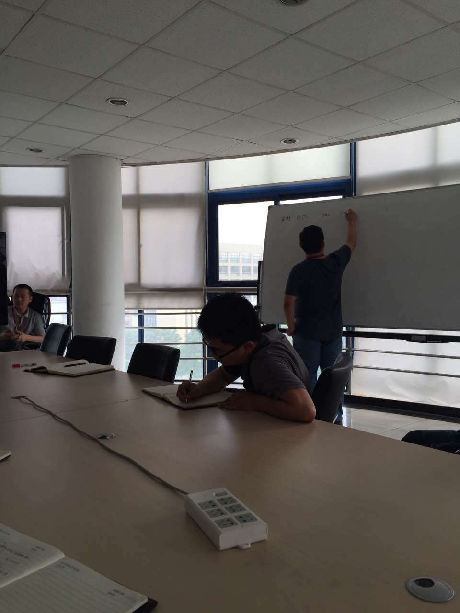 |
| 2016-05-25 17:18:44 | 你 | 王洪越开始得瑟了 |
| 2016-05-25 17:18:47 | 你 | 真恶心， |
| 2016-05-25 17:18:54 | 你 | 啥也不会，还敢得瑟 |
| 2016-05-25 17:19:30 | 你 | 真希望你在这，拍拍他，让他不知道天高地厚，旭明也是傻瓜级别的 |
| 2016-05-25 17:20:01 | 你 | 较劲了开始 |
| 2016-05-25 17:20:28 | 我 | 唉 |
| 2016-05-25 17:20:34 | 我 | 我去不了 |
| 2016-05-25 17:25:27 | 我 | 我来了 |
| 2016-05-25 17:29:43 | 你 | 就他这个搅屎棍 |
| 2016-05-25 17:29:59 | 我 | 😄 |
| 2016-05-25 17:30:09 | 我 | 我来了他就跑了 |
| 2016-05-25 17:31:55 | 你 | 我觉得是，你看他多坏 |
| 2016-05-25 17:32:00 | 你 | 真是小人 |
| 2016-05-25 17:32:39 | 你 | 我现在终于知道啥叫小鬼当家了 |
| 2016-05-25 17:33:16 | 你 | 看着他就烦 |
| 2016-05-25 17:33:35 | 我 | 😄 |
| 2016-05-25 18:12:58 | 你 | 哦哦 有事了你 |
| 2016-05-25 18:13:27 | 我 | [流泪] |
| 2016-05-25 18:15:26 | 我 | 亲，我给你备份吧 |
| 2016-05-25 18:15:53 | 你 | 你现在不是看邮件呢吗 |
| 2016-05-25 18:16:03 | 我 | 没有 |
| 2016-05-25 18:16:12 | 我 | 现在没事 |
| 2016-05-25 18:20:51 | 你 | 备份吧 |
| 2016-05-25 18:21:08 | 我 | 好 |
| 2016-05-25 18:21:30 | 你 | 你没不高兴吧 |
| 2016-05-25 18:21:40 | 你 | 关于领导说二组工期的事 |
| 2016-05-25 18:22:02 | 我 | 没有 |
| 2016-05-25 18:22:15 | 我 | 只是不知道领导怎么又改了 |
| 2016-05-25 18:22:30 | 你 | 是 我觉得没什么 |
| 2016-05-25 18:22:38 | 你 | 可能也是考虑到工期的事 |
| 2016-05-25 18:22:48 | 我 | 无所谓了 |
| 2016-05-25 18:22:54 | 你 | 对啊 |
| 2016-05-25 18:23:04 | 我 | 我现在担心的是写方案的事情 |
| 2016-05-25 18:39:18 | 我 | 今天网好像很慢 |
| 2016-05-25 18:39:25 | 你 | 没事 |
| 2016-05-25 19:06:27 | 你 | 回家了 |
| 2016-05-25 19:06:53 | 我 | 好吧，bye |
{kind=link}
{kind=link}
{kind=link}
2016-05-26¶
{kind=link}
2016-05-27¶
| 2016-05-27 08:23:09 | 你 | 我发现咱们oa一个问题 |
| 2016-05-27 08:23:27 | 你 | 修改后不会按照时间排序 非常讨厌 |
| 2016-05-27 08:23:52 | 我 | 是 |
| 2016-05-27 08:24:04 | 你 | 给他们提需求 |
| 2016-05-27 08:24:05 | 你 | 真是的 |
| 2016-05-27 08:24:27 | 我 | 哈哈，不愧是干需求的 |
| 2016-05-27 08:25:06 | 你 | 本来就是 我翻着看的时候 有错别字会改 |
| 2016-05-27 08:25:20 | 你 | 结几个月前的都被排到最开始了 |
| 2016-05-27 08:25:27 | 你 | How to do |
| 2016-05-27 08:25:56 | 我 | 没有办法，他是按照更新时间排序的 |
| 2016-05-27 08:33:26 | 我 | 亲，你跑哪去了？一转眼就看不见你了 |
| 2016-05-27 08:39:01 | 你 | 厕所 |
| 2016-05-27 08:42:34 | 你 | 你说我昨天回家路上就像 |
| 2016-05-27 08:42:37 | 你 | 想 |
| 2016-05-27 08:43:09 | 你 | 等我50岁的时候 我会做什么 如果还做需求分析 是不是显得特别滑稽 |
| 2016-05-27 08:43:51 | 我 | 肯定不是啦 |
| 2016-05-27 08:45:19 | 我 | 未来有三个方向，产品经理、质控、项目经理 |
| 2016-05-27 08:45:48 | 我 | 无论哪个等你50的时候都应该是领导了 |
| 2016-05-27 08:46:25 | 你 | 质控肯定不做 我现在做质控纯粹是为了学习，将来不会输出这个岗位 |
| 2016-05-27 08:46:39 | 你 | 肯定是产品经理或者项目经理 |
| 2016-05-27 08:46:46 | 我 | 嗯 |
| 2016-05-27 08:49:22 | 你 | 我想等我退休了 就在家写写文章 走走街 串串巷 |
| 2016-05-27 08:49:28 | 你 | 哈哈 多好 |
| 2016-05-27 08:49:31 | 我 | 是 |
| 2016-05-27 08:55:40 | 你 | 以后不能喝奶茶了 太热 |
| 2016-05-27 08:56:45 | 我 | 你很爱喝奶茶吗 |
| 2016-05-27 08:57:04 | 你 | 恩 我喝的是咸奶茶 |
| 2016-05-27 08:57:08 | 你 | 喝了一年多了 |
| 2016-05-27 08:57:50 | 我 | 哦，这个东西的热量太高了，比单纯喝奶都高 |
| 2016-05-27 08:58:17 | 你 | 是啊 可是我喝纯奶 喝两天就喝不下去了 |
| 2016-05-27 08:58:38 | 我 | 你可以试试酸奶 |
| 2016-05-27 08:59:00 | 我 | 可以每天自己做，加点水果什么的 |
| 2016-05-27 09:00:20 | 你 | 不喜欢早起吃那个 |
| 2016-05-27 09:00:34 | 你 | 也不喜欢早起吃水果 |
| 2016-05-27 09:00:47 | 我 | 早点你喜欢吃什么？ |
| 2016-05-27 09:01:10 | 你 | 奶茶啊 |
| 2016-05-27 09:01:19 | 我 | 别的呢 |
| 2016-05-27 09:01:23 | 你 | 我喜欢喝粥，吃鸡蛋 |
| 2016-05-27 09:01:33 | 你 | 但是太麻烦了 |
| 2016-05-27 09:01:40 | 你 | 所以换成奶茶了 |
| 2016-05-27 09:01:45 | 我 | 鸡蛋倒是不麻烦 |
| 2016-05-27 09:02:01 | 你 | 喝完奶茶太热了 |
| 2016-05-27 09:02:07 | 我 | 食堂早点好像有粥 |
| 2016-05-27 09:02:12 | 你 | 严丹怎么没来 |
| 2016-05-27 09:02:19 | 你 | 我讨厌去食堂[调皮] |
| 2016-05-27 09:02:25 | 我 | 不知道 |
| 2016-05-27 09:02:26 | 你 | 嘿嘿 |
| 2016-05-27 09:02:32 | 你 | 我也不喜欢一个人吃饭 |
| 2016-05-27 09:02:55 | 你 | 我是个事x，你别理我了 |
| 2016-05-27 09:02:57 | 你 | 哈哈 |
| 2016-05-27 09:03:02 | 我 | 其实自己带也不麻烦，晚上做好了，早上带过来就行 |
| 2016-05-27 09:03:17 | 你 | 太麻烦了 |
| 2016-05-27 09:03:19 | 你 | 真的， |
| 2016-05-27 09:03:26 | 你 | 我懒得弄 |
| 2016-05-27 09:03:48 | 你 | 你别套我话了，把我不好的一面都告诉你了 |
| 2016-05-27 09:04:13 | 你 | 我家现在基本都是我老公做饭了，我真的不爱弄那些 |
| 2016-05-27 09:04:14 | 我 | 没有，我反而觉得你很可爱 |
| 2016-05-27 09:04:22 | 你 | 而且越来越懒 |
| 2016-05-27 09:04:28 | 我 | 正常呀 |
| 2016-05-27 09:04:35 | 你 | 感情你又不用伺候我 |
| 2016-05-27 09:04:50 | 我 | 晚上睡觉前让你老公做好粥，早上带过来 |
| 2016-05-27 09:05:02 | 我 | 我比你懒，但是我脑子不懒 |
| 2016-05-27 09:05:03 | 你 | 快算了吧 |
| 2016-05-27 09:05:07 | 你 | 哈哈 |
| 2016-05-27 09:05:14 | 你 | 我脑子也懒 |
| 2016-05-27 09:05:30 | 你 | 我昨天晚上10:30还在洗衣服 |
| 2016-05-27 09:05:38 | 我 | 为了省事我可以琢磨一个小时，就为了省10分钟 |
| 2016-05-27 09:05:49 | 你 | 10:50上床睡觉 |
| 2016-05-27 09:05:59 | 你 | 11:30放下手机 |
| 2016-05-27 09:06:03 | 我 | 哈哈 |
| 2016-05-27 09:06:40 | 你 | 我老公本来要等我的，结果看我又要洗衣服，就先睡咧 |
| 2016-05-27 09:07:05 | 你 | 大早起把自己整这么热 不太好 |
| 2016-05-27 09:07:07 | 我 | 他现在比你累吗 |
| 2016-05-27 09:07:09 | 我 | 是 |
| 2016-05-27 09:07:14 | 你 | 我以后尽量少喝奶茶 |
| 2016-05-27 09:07:30 | 你 | 我不知道 我最近没打听他工作的事 |
| 2016-05-27 09:07:36 | 我 | 你可以考虑麦片 |
| 2016-05-27 09:07:40 | 你 | 反正也没啥变化 |
| 2016-05-27 09:07:48 | 你 | 你能别给我出主意了吗 |
| 2016-05-27 09:08:15 | 你 | 我在大学 显示豆奶+燕麦，，再是牛奶+燕麦 都喝够了 |
| 2016-05-27 09:08:41 | 我 | 好， 我不出主意了 |
| 2016-05-27 09:08:42 | 你 | 牛奶+燕麦不错 还得加糖 最主要还得加热 |
| 2016-05-27 09:08:44 | 你 | 太麻烦了 |
| 2016-05-27 09:08:57 | 你 | 还得刷勺子 |
| 2016-05-27 09:09:04 | 我 | 热水冲就该可以 |
| 2016-05-27 09:09:16 | 你 | 你是说奶粉吗？ |
| 2016-05-27 09:09:30 | 你 | 不喝 真心接受不了那味 |
| 2016-05-27 09:10:25 | 你 | 我老公总是说我事多 然后还乖乖的迁就我 所以我觉得自己很幸福啊 |
| 2016-05-27 09:10:30 | 你 | 最起码有人欺负 |
| 2016-05-27 09:10:43 | 你 | 我太无聊了 你有事先忙啊 |
| 2016-05-27 09:10:54 | 我 | 我没事 |
| 2016-05-27 09:16:39 | 你 | 截两张图片呗 配置邮箱的 |
| 2016-05-27 09:16:58 | 你 | 我给耿大姐看看 我不想让他知道你给我弄的 免得他找你 |
| 2016-05-27 09:17:10 | 我 | 稍等，我看看 |
| 2016-05-27 09:18:41 | 我 | 亲呀，我的图片都是我的用户名 |
| 2016-05-27 09:19:02 | 我 | 我发给你，你照着我的样子重新截图吧 |
| 2016-05-27 09:19:51 | 你 | 好 |
| 2016-05-27 09:20:35 | 我 | 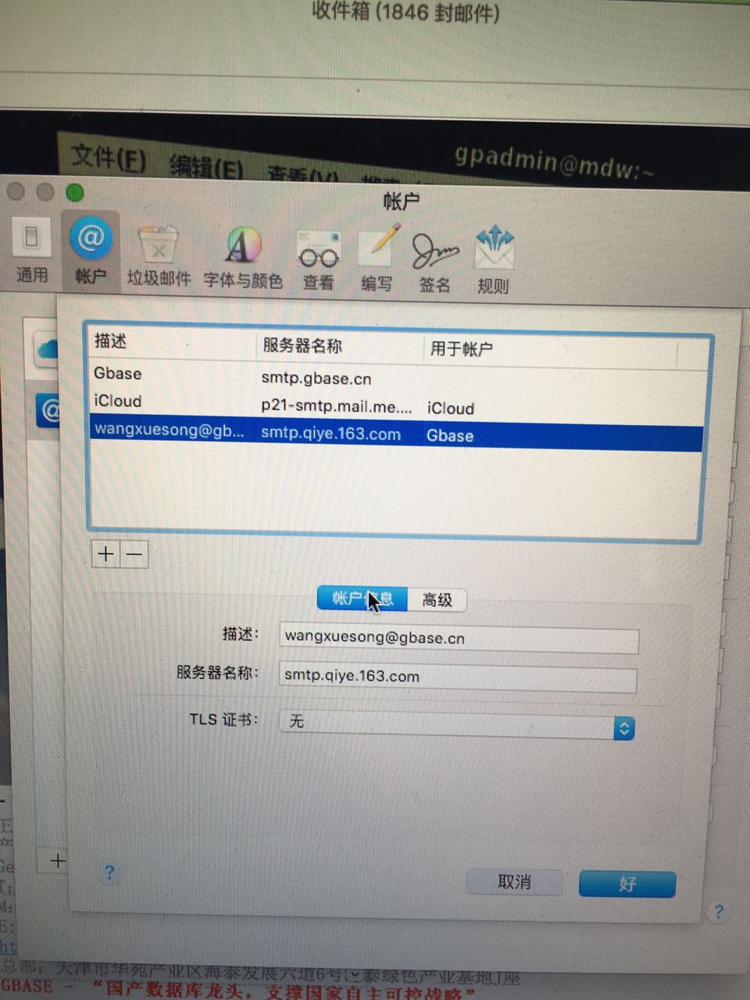 |
| 2016-05-27 09:20:36 | 我 | 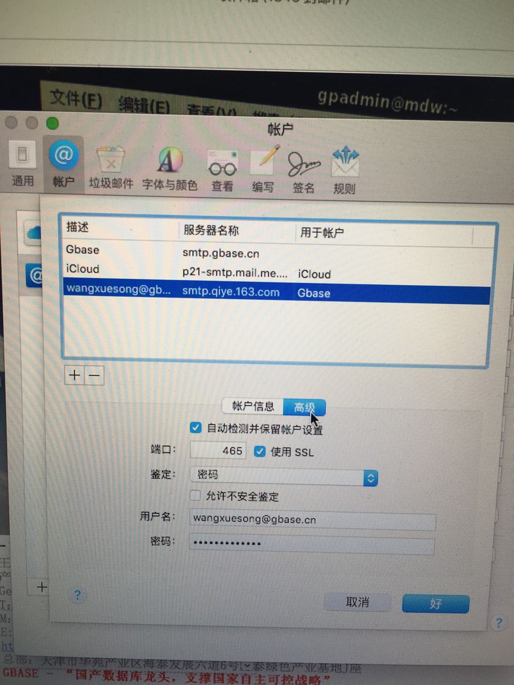 |
| 2016-05-27 09:20:37 | 我 | 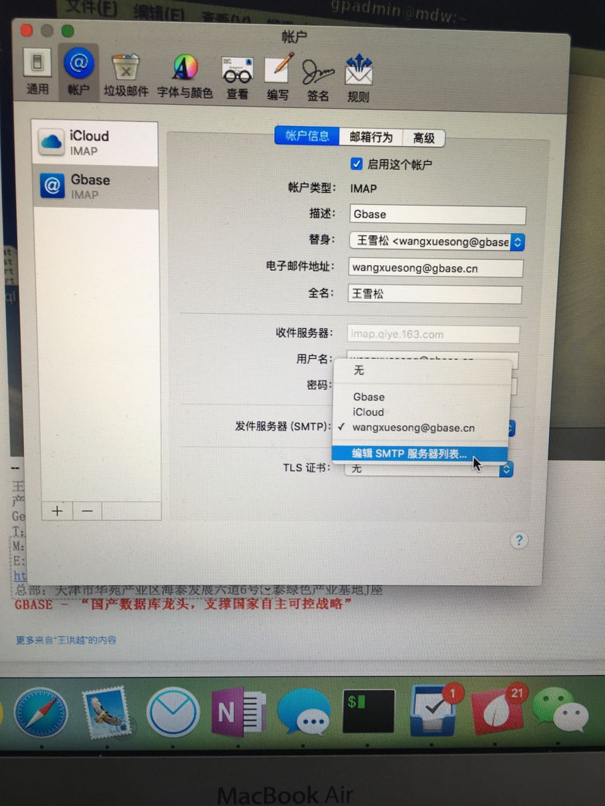 |
| 2016-05-27 09:23:23 | 你 | 这个账户是哪的啊 |
| 2016-05-27 09:23:38 | 你 | 而且我这个发件人显示的是gbase |
| 2016-05-27 09:23:49 | 你 | 我没有个人的账户 |
| 2016-05-27 09:23:50 | 我 | 你的就是gbase |
| 2016-05-27 09:24:08 | 我 | 你发给我们的邮件名称就是gbase |
| 2016-05-27 09:24:09 | 你 | 为什么我是gbase啊[流泪][流泪][流泪][流泪][流泪][流泪][流泪][流泪][流泪][流泪][害羞] |
| 2016-05-27 09:24:15 | 你 | 我晕 |
| 2016-05-27 09:24:19 | 你 | 这怎么可以 |
| 2016-05-27 09:24:23 | 我 | 你可以自己改 |
| 2016-05-27 09:24:25 | 你 | 这是咋回事 |
| 2016-05-27 09:24:49 | 我 | 在全名那 |
| 2016-05-27 09:25:13 | 我 | 最后一张图 |
| 2016-05-27 09:25:29 | 我 | 这三张图的顺序是反的 |
| 2016-05-27 09:26:12 | 你 | 我这个让输入路径前缀 |
| 2016-05-27 09:26:28 | 我 | 空着就行 |
| 2016-05-27 09:27:13 | 你 | 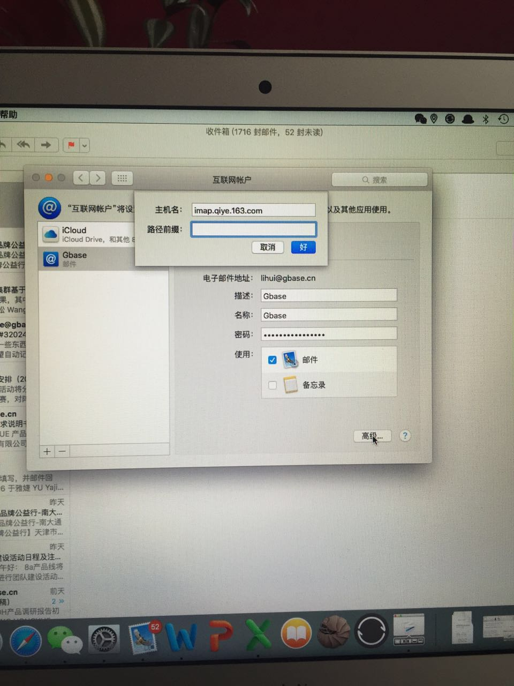 |
| 2016-05-27 09:27:27 | 你 | 跟你的不一样啊 |
| 2016-05-27 09:27:38 | 你 | 等会说吧 |
| 2016-05-27 09:27:52 | 你 | 你们该开会了 |
| 2016-05-27 09:28:14 | 我 | 是邮件的偏好设置 |
| 2016-05-27 09:28:38 | 你 | 找到了 |
| 2016-05-27 09:28:42 | 我 | 好的 |
| 2016-05-27 09:36:12 | 你 | 改好了 |
| 2016-05-27 09:36:26 | 我 | 好的 |
| 2016-05-27 09:55:18 | 我 | 我刚才开会的时候在想，你要是技术再好点，基本上就是和我一样，可以走研发管理的路了 |
| 2016-05-27 09:55:45 | 你 | 我没有技术 |
| 2016-05-27 09:56:36 | 我 | 这恐怕以后会成为你最大的短板 |
| 2016-05-27 09:56:44 | 你 | 是啊 |
| 2016-05-27 09:57:05 | 你 | 世事难料 |
| 2016-05-27 09:57:15 | 你 | 没准我会去做销售呢 |
| 2016-05-27 09:57:34 | 我 | 是 |
| 2016-05-27 09:59:42 | 你 | 你刚参加工作的时候想到自己做这个了吗 |
| 2016-05-27 09:59:51 | 我 | 想到了 |
| 2016-05-27 10:00:11 | 我 | 我现在基本上是按照我的职业规划 |
| 2016-05-27 10:00:18 | 你 | 且 |
| 2016-05-27 10:00:21 | 你 | 真讨厌 |
| 2016-05-27 10:00:25 | 我 | 不骗你 |
| 2016-05-27 10:01:04 | 你 | 那我怎么办啊 |
| 2016-05-27 10:01:09 | 你 | 我得看书 |
| 2016-05-27 10:01:15 | 我 | 哈哈 |
| 2016-05-27 10:01:19 | 我 | 有危机了 |
| 2016-05-27 10:02:21 | 你 | shi a |
| 2016-05-27 10:02:26 | 你 | 有呗 |
| 2016-05-27 10:04:10 | 我 | 有危机感是好事 |
| 2016-05-27 10:14:30 | 我 | 趁着现在我有空赶紧说说昨天没说完的吧 |
| 2016-05-27 10:14:36 | 你 | 好啊 |
| 2016-05-27 10:14:39 | 你 | 说吧 |
| 2016-05-27 10:15:05 | 我 | 本质就是利益 |
| 2016-05-27 10:15:29 | 我 | 碰到这种办公室政治的时候 |
| 2016-05-27 10:15:37 | 你 | 恩 |
| 2016-05-27 10:15:39 | 我 | 最简单的办法就是维护领导的利益 |
| 2016-05-27 10:15:49 | 我 | 并且让领导知道你在维护他的利益 |
| 2016-05-27 10:16:00 | 我 | 那么领导就愿意为你背书 |
| 2016-05-27 10:16:14 | 我 | 也就相当于有了保护伞 |
| 2016-05-27 10:16:19 | 你 | 恩恩 |
| 2016-05-27 10:16:46 | 我 | 你看我和老田的关系应该比较像你姐和同事之间的关系 |
| 2016-05-27 10:17:10 | 我 | 我就是一直在维护领导的利益 |
| 2016-05-27 10:17:30 | 我 | 而洪越就只知道维护自己的利益 |
| 2016-05-27 10:17:40 | 我 | 所以现在领导更相信我 |
| 2016-05-27 10:18:09 | 我 | 我感觉你姐在同事中也是能力比较强的 |
| 2016-05-27 10:18:29 | 我 | 因此我假定她的情况和我现在的情况类似 |
| 2016-05-27 10:19:22 | 我 | 但是如果她的领导对她一直有偏见的话，这条路就不太好走了 |
| 2016-05-27 10:19:28 | 我 | 需要付出很多东西 |
| 2016-05-27 10:19:35 | 我 | 这个你明白吗 |
| 2016-05-27 10:22:29 | 你 | 明白 |
| 2016-05-27 10:22:59 | 我 | 大体上就是这个思路了，其他的因为信息不足我也无法做判断 |
| 2016-05-27 10:23:21 | 你 | 我有个问题 你说就像我现在 我跟王志新 不管她比我能力高还是低 可是我超级讨厌王洪越 我呢 |
| 2016-05-27 10:23:29 | 你 | 我应该维护老田的利益？ |
| 2016-05-27 10:23:46 | 我 | 错了 |
| 2016-05-27 10:24:01 | 我 | 你已经搭上领导了，当然是维护领导的利益啦 |
| 2016-05-27 10:24:08 | 你 | 那必须的 |
| 2016-05-27 10:24:23 | 我 | 如果领导的利益和老田的利益一致，你就需要维护老田的利益 |
| 2016-05-27 10:24:31 | 你 | 领导的利益肯定高于一切 而且现在我跟你的大目标肯定是一致的 |
| 2016-05-27 10:24:45 | 我 | 是 |
| 2016-05-27 10:26:04 | 你 | 我应该放弃小仇小恨 赶快让自己能分析需求了 然后狠狠的拍王洪越 |
| 2016-05-27 10:26:13 | 你 | 小不忍则乱大谋 |
| 2016-05-27 10:28:56 | 我 | 是 |
| 2016-05-27 11:41:16 | 你 | 你听见我跟王洪越说话了吗 |
| 2016-05-27 11:41:21 | 你 | 他太气人了 |
| 2016-05-27 11:41:41 | 我 | 听见了 |
| 2016-05-27 11:41:50 | 你 | 不过他那个人就那样， |
| 2016-05-27 11:42:01 | 我 | 是 |
| 2016-05-27 11:42:13 | 你 | 我想了，他之所以跟我吵是因为还想指导指导我， |
| 2016-05-27 11:42:26 | 你 | 他跟王志心根本不吵 |
| 2016-05-27 11:42:33 | 我 | 嗯 |
| 2016-05-27 11:42:40 | 你 | 等我将来会做了，看我怎么收拾他 |
| 2016-05-27 11:42:56 | 我 | 对 |
| 2016-05-27 11:43:00 | 你 | 天天让他脚尖向后呆着 |
| 2016-05-27 11:43:06 | 我 | 😄 |
| 2016-05-27 11:43:15 | 你 | 他。给。我。等。着 |
| 2016-05-27 11:43:33 | 你 | 我就不信了，需求能有多难，非得学会不可 |
| 2016-05-27 11:44:00 | 我 | 你已经很棒了 |
| 2016-05-27 11:44:29 | 你 | 我不用学那么会，比他多会点就行 |
| 2016-05-27 11:45:06 | 我 | 你现在模型已经比他强了，欠的就是经验 |
| 2016-05-27 12:02:20 | 你 | 吃完了 |
| 2016-05-27 12:02:28 | 你 | 今天我们吃的特别丰盛 |
| 2016-05-27 12:02:32 | 我 | 好的 |
| 2016-05-27 12:02:51 | 你 | 有猪肉，牛肉，鸭肉 |
| 2016-05-27 12:03:01 | 你 | 盐水鸭 |
| 2016-05-27 12:03:05 | 我 | 真丰富 |
| 2016-05-27 12:03:07 | 你 | 好饱 |
| 2016-05-27 12:03:19 | 我 | [微笑] |
| 2016-05-27 12:03:28 | 你 | 你吃完了吗 |
| 2016-05-27 12:03:44 | 我 | 还没到饭店[流泪] |
| 2016-05-27 12:12:25 | 你 | 领导这两天在做任职答辩是吗 |
| 2016-05-27 12:13:31 | 我 | 是，技术支持 |
| 2016-05-27 13:36:04 | 我 | 没睡醒，喝咖啡 |
| 2016-05-27 13:36:21 | 你 | 老有人 |
| 2016-05-27 13:36:28 | 你 | 不安静 |
| 2016-05-27 13:37:00 | 我 | 是 |
| 2016-05-27 14:02:13 | 你 | 妈呀这个是白雪啊 |
| 2016-05-27 14:02:15 | 你 | 我晕 |
| 2016-05-27 14:02:37 | 你 | 我以为是啥冰清玉洁 弱柳扶风的女子呢 |
| 2016-05-27 14:02:42 | 你 | 我的个妈呀 |
| 2016-05-27 14:04:51 | 我 | 😄 |
| 2016-05-27 14:30:22 | 我 | 你看了cgroup的用需了吗 |
| 2016-05-27 14:30:38 | 你 | meiyou |
| 2016-05-27 14:30:56 | 你 | 那个他们研究好久了好像 |
| 2016-05-27 14:31:07 | 我 | 还研究好久 |
| 2016-05-27 14:31:11 | 我 | 我实在是无语了 |
| 2016-05-27 14:31:17 | 你 | 哈哈 |
| 2016-05-27 14:31:33 | 你 | 需求就这水平 没办法啊 |
| 2016-05-27 14:31:53 | 我 | 我真的快受不了了 |
| 2016-05-27 14:31:54 | 你 | 你们有事吗 |
| 2016-05-27 14:32:06 | 我 | 你是指什么事情？ |
| 2016-05-27 14:32:11 | 你 | 受不了啥了 |
| 2016-05-27 14:32:25 | 你 | 我听你说 sc的项目要加班 |
| 2016-05-27 14:32:28 | 我 | 连着几个用需都是我在推动 |
| 2016-05-27 14:32:40 | 我 | sc现在要的很急 |
| 2016-05-27 14:33:06 | 我 | 我们需要加班，测试组安排端午节加班 |
| 2016-05-27 14:33:38 | 你 | 明天加吗 |
| 2016-05-27 14:33:56 | 我 | 不加 |
| 2016-05-27 14:39:34 | 我 | 你刚才笑什么 |
| 2016-05-27 14:40:04 | 你 | 我在笑那时候王志跟我在外边的时候 你好像特别爱找他 |
| 2016-05-27 14:40:22 | 你 | 现在到你眼皮下了 你反倒不怎么找他了 |
| 2016-05-27 14:40:38 | 你 | 所以我想你找他可能是因为我 我就笑了 |
| 2016-05-27 14:40:40 | 你 | 没了 |
| 2016-05-27 14:40:49 | 我 | 你猜对了 |
| 2016-05-27 14:44:41 | 你 | 我以后得对王志新好点 |
| 2016-05-27 14:44:58 | 你 | 我不能让王洪越在我俩之间有机可乘 |
| 2016-05-27 14:47:27 | 我 | 是 |
| 2016-05-27 14:47:41 | 我 | 你现在越来越成熟了 |
| 2016-05-27 14:49:27 | 你 | 你看我昨天跟王洪越挺不开心的，他早上来了就跟王志心互动的很好，我在想，我不能让他这样，我得阻止他 |
| 2016-05-27 14:49:42 | 我 | 嗯 |
| 2016-05-27 14:49:50 | 你 | 我跟王志心也没什么大的矛盾，至少不会大到让我不开心， |
| 2016-05-27 14:50:26 | 你 | 所以，我不能纵容他，我得让他俩围着我转，而不是我俩围着他转 |
| 2016-05-27 14:50:37 | 你 | 这可是长期活 |
| 2016-05-27 14:50:39 | 我 | 对 |
| 2016-05-27 14:51:39 | 你 | 我得先学会对讨厌的人笑，这叫敬而远之 |
| 2016-05-27 14:51:43 | 你 | 对不对， |
| 2016-05-27 14:51:53 | 我 | 对呀 |
| 2016-05-27 14:54:49 | 你 | 我的新手机壳好看吗 |
| 2016-05-27 14:54:59 | 我 | 好看呀 |
| 2016-05-27 14:55:17 | 我 | 我现在也想换手机壳，可是没法用你的 |
| 2016-05-27 14:55:41 | 我 | 想找一个薄一点的，磨砂的 |
| 2016-05-27 14:56:25 | 你 | 你那个挺好的 |
| 2016-05-27 14:56:33 | 你 | 为什么换 败家玩意 |
| 2016-05-27 14:56:45 | 我 | 太厚啦 |
| 2016-05-27 14:57:22 | 你 | 哪厚啊 都那样 |
| 2016-05-27 14:57:51 | 我 | 好吧 |
| 2016-05-27 14:58:01 | 我 | 那我就不换了 |
| 2016-05-27 14:58:21 | 你 | 对啊 都那样 |
| 2016-05-27 14:58:26 | 你 | 换了也没区别 |
| 2016-05-27 14:58:33 | 你 | 快别换了 反正也是丑 |
| 2016-05-27 14:58:34 | 你 | 哈哈 |
| 2016-05-27 14:58:50 | 我 | [尴尬] |
| 2016-05-27 14:59:00 | 你 | 逗你玩呢 |
| 2016-05-27 14:59:08 | 你 | 不丑不丑 挺好的 |
| 2016-05-27 14:59:18 | 你 | 我总觉得别人的手机比我的好 |
| 2016-05-27 14:59:27 | 我 | 对呀，所以陪你玩呀 |
| 2016-05-27 14:59:35 | 我 | 为啥呢 |
| 2016-05-27 15:16:02 | 你 | 我觉得你特别好 对我特别好 |
| 2016-05-27 15:16:18 | 你 | 这不是我觉得你手机比我好的原因啊 |
| 2016-05-27 15:16:21 | 我 | 怎么啦？ |
| 2016-05-27 15:16:30 | 我 | 怎么突然说这个啦 |
| 2016-05-27 15:16:51 | 你 | 想起你就挺温暖的 |
| 2016-05-27 15:17:18 | 我 | 你太可爱了 |
| 2016-05-27 15:17:33 | 你 | 咱俩是在互粉吗 |
| 2016-05-27 15:17:44 | 我 | 必须的 |
| 2016-05-27 15:27:57 | 你 | 没事干了 |
| 2016-05-27 15:28:14 | 我 | 聊天吧 |
| 2016-05-27 15:28:23 | 你 | 王洪越他就是故意刁难我 被我识破了 |
| 2016-05-27 15:28:41 | 我 | 是呗 |
| 2016-05-27 15:29:04 | 我 | 他现在的水平已经蒙不了你了 |
| 2016-05-27 15:30:57 | 你 | 我没水平，但他啥水平他自己知道 |
| 2016-05-27 15:39:00 | 我 | 乐什么呢 |
| 2016-05-27 15:39:21 | 你 | 我看我妈妈给我爸爸拍的小视频 我爸爸怎么那么帅呢 |
| 2016-05-27 15:39:30 | 我 | 😄 |
| 2016-05-27 15:39:41 | 你 | 他要是不那么气人就好了 |
| 2016-05-27 15:44:32 | 你 | 咱们聊天吧 |
| 2016-05-27 15:44:45 | 我 | 好 |
| 2016-05-27 15:44:48 | 我 | 聊什么 |
| 2016-05-27 15:44:57 | 你 | 不知道， |
| 2016-05-27 15:45:00 | 你 | 玩游戏呗 |
| 2016-05-27 15:45:11 | 我 | 好，你找主题 |
| 2016-05-27 15:51:07 | 你 | 我想不出来 |
| 2016-05-27 15:52:07 | 我 | 算了，我给你找点产品经理的东西，你先看看 |
| 2016-05-27 15:52:13 | 你 | 好 |
| 2016-05-27 15:56:28 | 我 | 职场上有句老话：“拿多少钱干多少事”，这句话背后的意思是“谁先承担风险”。 雇员说，我多出力，你就一定给我加薪升职吗？不，你先加薪升职，我再付出更多。 老板说，我给你加薪升职，你就一定hold得住业绩涨幅吗？不，你先证明自己能拿出更好的业绩，我再给你加薪升职。 这个问题就像职场月经贴一样，永远扯不清楚，不管你站在哪一边，都有对立面的人痛诉革命家史，说自己之前为此承担了多么大的损失，以后再担风险就是傻逼。所以只能说，祝大家找到有契合度的另一半咯。 甜豆腐脑和咸豆腐脑不应该搅合到一个碗里。 |
| 2016-05-27 15:58:10 | 我 | 一个合格的产品经理，他的判断来自他的过往经历，他对行业生态与用户场景的理解，收集到的用户反馈与数据分析，倾听不同岗位的同伴观点。最后在各种综合因素的支持下，提出某一个方案。 然而当产品经理在团队内部进入1VS1的“说服模式”，常常遇到的情况是，对方认为“我个人的观点比你更正确”，从而争执不下。要知道，从流程正义上来讲，合格的方案来自于多种要素的平衡，产品经理应该是团队里视野最开阔，信息最全面的那个人。 甚至于当背后有10个人支持这个方案时，在说服模式下，异议者仍然认为这是1VS1的争论，凭什么你产品经理(一个人)的结论就比我(一个人)更正确。而多人讨论的效率极低，民主投票更是可笑。 每一个产品经理都会经历这样的场景，我也一样。在蝉小队内部，因为每个产品岗位只有一个人，每个人都很重要，也就有很大的话语权。说服模式下也就格外心累。说服不了，轻则沟通态度极差，重则出工不出力。 最理想的出路，当然是建立产品经理的绝对权威。但是你们看，我已经是老板了，我也没有绝对权威，普通产品经理谈何容易。绝对权威也容易压制内部多元化的声音，“我说了不算我就不说话呗”，这并不是好事。 另一条理想出路，是建立团队内部的议事规则，即“当我的观点被挑战时，它就应该得到更多角度的支持。”包括同伴的附议，用户反馈与用户访谈的支持，可用性分析/数据分析/竞品分析的支持——哪怕拿出来其中的一样也行。这相当于每一个人都要具备产品经理的职业态度，懂得如何完善和补正自己的观点，而不是用“我个人认为”来吵得面红耳赤。 很明显，这两条出路都是理想化的，难以实现的。 昨天，有个陌生人转发我的微博说：“领导的方案无法说服我，我就不想去做。”她倒不是针对我，但在我的团队内部，认为“老板又傻逼了，我不想做”也是常有的事。 “我不知道什么是对的，但我觉得你就是错的。” 这种内部矛盾，当然是移动互联网快速迭代，快速探索的极大阻力。我们既要主观能动性，又要在意见不一的时候有妥协有服从，这是何等成熟的职业素养。 你们不知道，我为了推动内部不支持不赞同，认为方向可笑方案辣鸡的生辰，挨了多少白眼争执多少回甚至送了多少礼。即便生辰最后大受好评，也并没有提高我的话语权。 做产品经理真是一个内心很苦的职业。 |
| 2016-05-27 15:58:21 | 我 | 你先看看吧，有点长 |
| 2016-05-27 15:58:28 | 你 | 恩 |
| 2016-05-27 15:59:08 | 我 | 这是从纯银的微博里面摘的 |
| 2016-05-27 16:03:10 | 你 | 恩 |
| 2016-05-27 16:03:15 | 你 | 看完了 |
| 2016-05-27 16:03:45 | 我 | 那个长的写的不错 |
| 2016-05-27 16:03:59 | 你 | 恩 咱们现在也有这种问题 |
| 2016-05-27 16:04:34 | 我 | 是 |
| 2016-05-27 16:08:14 | 我 | 做产品最麻烦的事情，不是创造，而是选择。任何时候都有大量的选择题，备选答案可能是AB，可能是ABCDEFG。没有尝过权力滋味的人，可能认为选择题多简单，我掌权之后分分钟答题，效率要多高有多高。然而当你有过权力，也有过败绩，才会知道扑面而来的黑压压的选择题考卷是一件让你多犹豫的事。 |
| 2016-05-27 16:08:23 | 我 | 这种事情还真是屁股决定脑袋。你坐过多高的位置，才能体会这个位置上的感受，脑补“我上位了就能怎样怎样”，那只是年少无知。当然也会有人年老依然无知。 |
| 2016-05-27 16:09:01 | 你 | 哈哈 这个写的不错 |
| 2016-05-27 16:09:25 | 你 | 扑面而来的黑压压的选择题 |
| 2016-05-27 16:09:27 | 你 | 好形象 |
| 2016-05-27 16:09:32 | 我 | 是，我认为他是一个比较优秀的产品经理 |
| 2016-05-27 16:09:38 | 我 | 有经验也有思考 |
| 2016-05-27 16:10:04 | 我 | 他说的这些真的是需要经历很多才能体会得到 |
| 2016-05-27 16:10:13 | 你 | 是 |
| 2016-05-27 16:10:20 | 你 | 你是指纯银吗 |
| 2016-05-27 16:10:27 | 我 | 是 |
| 2016-05-27 16:10:57 | 你 | 你把我的微博也加上他 |
| 2016-05-27 16:11:00 | 你 | 我也看看 |
| 2016-05-27 16:12:06 | 我 | 你在微博里面直接搜纯银，应该可以看见他 |
| 2016-05-27 16:12:31 | 你 | |
| 2016-05-27 16:12:34 | 你 | 哪有 |
| 2016-05-27 16:12:58 | 我 | 第一个人 |
| 2016-05-27 16:17:50 | 我 | [链接] 10个案例说明什么是产品模型 |
| 2016-05-27 16:18:14 | 我 | 这个是纯银写的，推荐你和你姐看看 |
| 2016-05-27 16:19:44 | 你 | 好 |
| 2016-05-27 16:20:59 | 你 | 这个怎么弄啊 |
| 2016-05-27 16:21:10 | 我 | 是微博吗？ |
| 2016-05-27 16:21:27 | 你 | 伸手党是我这样的吗 |
| 2016-05-27 16:21:49 | 我 | 不是啦 |
| 2016-05-27 16:22:39 | 我 | |
| 2016-05-27 16:22:55 | 我 | 左下角，点击关注 |
| 2016-05-27 16:23:03 | 你 | 我已经关注了 |
| 2016-05-27 16:23:05 | 你 | 伸手党指的是一类人，这一类人有的是出于不懂事而产生伸手现象的未成年人，有的是依赖性极强的成年人。伸手党的大致特征如下： 一、想经过他人直接获得某个问题的答案而不自己搜索 二、虚拟社区（线上游戏、讨论区等）内讨要点卡、高级帐号者 三、理直气壮的向别人索要他人成果（符合这一点的人又称「催坑侠」） |
| 2016-05-27 16:23:18 | 我 | 你不是 |
| 2016-05-27 16:24:28 | 你 | 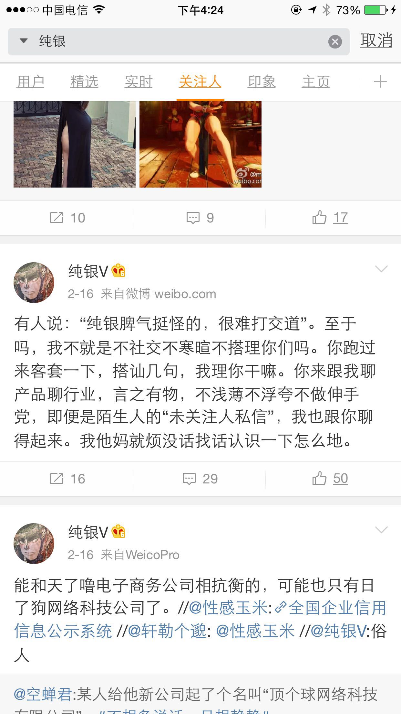 |
| 2016-05-27 16:24:38 | 你 | 你看这话说的 |
| 2016-05-27 16:25:08 | 我 | 😄 |
| 2016-05-27 16:25:45 | 你 | 突然觉得自己就是伸手党 |
| 2016-05-27 16:26:25 | 我 | 不是的，这些东西你不知道，就该问 |
| 2016-05-27 16:26:39 | 我 | 不然你还得浪费时间 |
| 2016-05-27 16:37:25 | 我 | 是不是突然有好多新东西 |
| 2016-05-27 16:37:40 | 你 | 是啊 |
| 2016-05-27 16:38:17 | 我 | 怎么啦？这种表情 |
| 2016-05-27 16:38:30 | 你 | 没事 听他俩说话呢 |
| 2016-05-27 16:38:39 | 我 | 哦 |
| 2016-05-27 16:59:04 | 我 | 怎么啦，这么安静 |
| 2016-05-27 16:59:26 | 你 | 再看kerberos |
| 2016-05-27 16:59:33 | 你 | 这个还挺麻烦的呢 |
| 2016-05-27 17:00:02 | 你 | 王志新和老田真禁吹 |
| 2016-05-27 17:00:35 | 我 | 皮厚 |
| 2016-05-27 17:11:02 | 我 | 纯银最新一条微博你看了吗 |
| 2016-05-27 17:11:32 | 你 | 没呢 |
| 2016-05-27 17:11:47 | 我 | 看看吧，写的太透彻了 |
| 2016-05-27 17:11:56 | 我 | 比我说的好多了 |
| 2016-05-27 17:22:21 | 你 | 我突然觉得东西好多啊 |
| 2016-05-27 17:22:23 | 你 | 怎么办 |
| 2016-05-27 17:22:34 | 我 | 正常呀 |
| 2016-05-27 17:22:48 | 我 | 我刚带你的时候不也是这样吗 |
| 2016-05-27 17:23:03 | 你 | 比那时候还多 |
| 2016-05-27 17:23:31 | 我 | 可是你现在也比当初强了很对呀 |
| 2016-05-27 17:23:50 | 你 | 那是 |
| 2016-05-27 17:23:55 | 你 | 我指的是新东西很多 |
| 2016-05-27 17:24:07 | 我 | 我知道，没事的 |
| 2016-05-27 17:24:15 | 你 | 我现在接收的爆炸性的信息 |
| 2016-05-27 17:24:20 | 你 | 都不知道自己干什么了 |
| 2016-05-27 17:24:34 | 我 | 先保住根本 |
| 2016-05-27 17:24:39 | 你 | 需求 |
| 2016-05-27 17:24:40 | 我 | 你现在的根本是需求 |
| 2016-05-27 17:24:43 | 你 | 是 |
| 2016-05-27 17:24:46 | 我 | 同步啦 |
| 2016-05-27 17:24:51 | 你 | 哈哈 |
| 2016-05-27 17:24:57 | 你 | 我知道 |
| 2016-05-27 17:25:00 | 我 | 以根本为中心 |
| 2016-05-27 17:25:09 | 我 | 逐渐向外围扩展 |
| 2016-05-27 17:25:10 | 你 | 我得找一个方向 |
| 2016-05-27 17:25:15 | 我 | 不要贪多 |
| 2016-05-27 17:25:29 | 你 | 是呢 |
| 2016-05-27 17:25:34 | 你 | 我得做个计划了 |
| 2016-05-27 17:25:42 | 我 | 可以呀 |
| 2016-05-27 17:26:35 | 我 | 你现在觉得信息多也是因为你的能力提升，可以理解这些东西了 |
| 2016-05-27 17:26:52 | 我 | 一年以前给你看这些东西你也体会不到其中的味道 |
| 2016-05-27 17:27:37 | 你 | 是呢 |
| 2016-05-27 17:27:58 | 你 | 就比如我看纯银的文章 有些是有共鸣的 |
| 2016-05-27 17:28:14 | 你 | 看这类的时候是不会有太多的危机感 |
| 2016-05-27 17:28:26 | 我 | 嗯 |
| 2016-05-27 17:28:32 | 你 | 但是看到那种满目都是不知所云的文章的时候 顿时坐立不安 |
| 2016-05-27 17:28:52 | 我 | 你看到什么文章了？ |
| 2016-05-27 17:29:18 | 你 | 就是他的往期连接出来的 |
| 2016-05-27 17:29:23 | 你 | 我也不知道哪一篇 |
| 2016-05-27 17:29:45 | 我 | 哦 |
| 2016-05-27 17:29:59 | 我 | 没事的，主要还是因为你没有相应的背景知识 |
| 2016-05-27 17:30:07 | 我 | 这些东西是可以慢慢补的 |
| 2016-05-27 17:30:23 | 我 | 等你有了这些知识你就了解了他说的东西 |
| 2016-05-27 17:31:13 | 你 | 所以才觉得多嘛 |
| 2016-05-27 17:31:53 | 我 | 我也没有产品经理的经验，但是我可以去分析和体会他所说的东西 |
| 2016-05-27 17:32:05 | 我 | 这就是我建模和推理的能力 |
| 2016-05-27 17:32:09 | 你 | 是 |
| 2016-05-27 17:32:19 | 我 | 我也只能教给你这些东西 |
| 2016-05-27 17:32:37 | 我 | 然后你用我教给你的方法去学习他说的东西 |
| 2016-05-27 17:32:48 | 我 | 我能帮到你的也就这么多了 |
| 2016-05-27 17:33:02 | 你 | 恩 知道 |
| 2016-05-27 17:33:23 | 我 | 我是真想能多帮你一点 |
| 2016-05-27 17:33:51 | 你 | 我知道 |
| 2016-05-27 17:36:30 | 你 | 我最近简直太闲了 |
| 2016-05-27 17:36:37 | 你 | 是该学习学习了 |
| 2016-05-27 17:36:45 | 我 | 好事 |
| 2016-05-27 17:37:06 | 你 | 唉 你不会体会到我的心情的 我一回家就想玩 |
| 2016-05-27 17:37:23 | 你 | 今天跟明静还讨论这事呢 |
| 2016-05-27 17:37:35 | 我 | 我也有过这种情况 |
| 2016-05-27 17:37:57 | 我 | 上个月我一回去就玩游戏，有时候在公司也玩 |
| 2016-05-27 17:38:11 | 你 | 是啊 |
| 2016-05-27 17:38:16 | 我 | 我也不是每天都勤奋学习的 |
| 2016-05-27 17:38:26 | 你 | 所以我得做个计划了 |
| 2016-05-27 17:38:35 | 我 | 要是那样我早就飞黄腾达啦 |
| 2016-05-27 17:38:47 | 你 | 哈哈 |
| 2016-05-27 17:38:50 | 你 | 是呢 |
| 2016-05-27 17:38:51 | 我 | 其实不一定非要做计划 |
| 2016-05-27 17:39:03 | 你 | 那怎么才能督促自己学习呢 |
| 2016-05-27 17:39:19 | 我 | 关键是有戒瘾的毅力 |
| 2016-05-27 17:39:33 | 我 | 我们的玩其实是一种上瘾 |
| 2016-05-27 17:39:39 | 你 | 是 |
| 2016-05-27 17:40:08 | 我 | 需要的是毅力 |
| 2016-05-27 17:40:27 | 我 | 比我们优秀的人大多数是比我们有毅力的人 |
| 2016-05-27 17:40:28 | 你 | 呜呜 |
| 2016-05-27 17:40:33 | 你 | 是 |
| 2016-05-27 17:40:41 | 我 | 我自己认为我的毅力不足 |
| 2016-05-27 17:41:01 | 我 | 所以只在少数的事情上使用我宝贵的毅力 |
| 2016-05-27 17:41:19 | 你 | 哈哈 |
| 2016-05-27 17:41:34 | 我 | 其他方面我就稍微放纵自己 |
| 2016-05-27 17:41:48 | 你 | 是 |
| 2016-05-27 17:41:51 | 我 | 比如我喜欢吃甜的，还有最近抽烟比较多 |
| 2016-05-27 17:42:01 | 你 | 我最近没有什么学习的动力 |
| 2016-05-27 17:42:16 | 我 | 我不是不可以控制，但是我的毅力太少，需要控制的东西太多 |
| 2016-05-27 17:42:30 | 我 | 现在我就控制我要锻炼和学习 |
| 2016-05-27 17:42:38 | 你 | 会有这种关系吗 |
| 2016-05-27 17:42:41 | 我 | 每天回家一定要跑步 |
| 2016-05-27 17:42:45 | 我 | 会的 |
| 2016-05-27 17:43:21 | 我 | 毅力本身也是有量的，消耗掉了就需要补充 |
| 2016-05-27 17:43:44 | 我 | 你想想让你一天不停的做需要你付出努力的事情 |
| 2016-05-27 17:44:00 | 我 | 比如学习、锻炼、工作等等 |
| 2016-05-27 17:44:19 | 我 | 没有多久你就坚持不住了 |
| 2016-05-27 17:44:35 | 我 | 就是因为这些东西消耗光了你的毅力 |
| 2016-05-27 17:45:10 | 我 | 所以生活一定要张驰有度 |
| 2016-05-27 17:45:14 | 你 | 我好像没有什么消耗毅力的事 我一直在放纵自己 |
| 2016-05-27 17:45:20 | 你 | 哎呀 烦死我了 |
| 2016-05-27 17:45:32 | 我 | 为啥烦呀 |
| 2016-05-27 17:46:04 | 你 | 因为我又白过了 |
| 2016-05-27 17:46:25 | 我 | 你不能这么想 |
| 2016-05-27 17:46:29 | 我 | 这涉及到心理学 |
| 2016-05-27 17:46:36 | 我 | 你首先要肯定自己 |
| 2016-05-27 17:46:42 | 你 | 算了 我不能把我的情绪垃圾丢给你 |
| 2016-05-27 17:46:50 | 我 | 比如说我今天又学了一些新东西 |
| 2016-05-27 17:47:02 | 我 | 哪怕再少都得先肯定自己 |
| 2016-05-27 17:47:17 | 我 | 否则你就会陷入一个负循环 |
| 2016-05-27 17:47:32 | 我 | 你恰恰应该和我说 |
| 2016-05-27 17:47:49 | 我 | 因为我懂一些心理学，可以引导你 |
| 2016-05-27 17:48:04 | 你 | 我跟你说说我的问题吧 |
| 2016-05-27 17:48:19 | 我 | 这些负面情绪需要引导 |
| 2016-05-27 17:48:22 | 我 | 好呀 |
| 2016-05-27 17:49:04 | 你 | 我会需求组已经两个季度了 过手的需求不算多也不算少 软需基本没啥事了 给我一个 我就会写 但是用需这块 始终不是很明白 |
| 2016-05-27 17:49:20 | 我 | 嗯 |
| 2016-05-27 17:49:34 | 你 | 让我最头疼的事 我一直没有进步 |
| 2016-05-27 17:49:50 | 你 | 虽然我一直在获得的信息里给需求分析这部建模 |
| 2016-05-27 17:50:03 | 你 | 但到现在还没有一个清晰 准确的模型出来 |
| 2016-05-27 17:50:10 | 我 | 嗯 |
| 2016-05-27 17:51:29 | 我 | 还有吗？ |
| 2016-05-27 17:52:38 | 你 | 我生气、烦躁是因为我没有进步 而且没有找到解决方法 |
| 2016-05-27 17:52:49 | 我 | 这个我理解 |
| 2016-05-27 17:52:55 | 我 | 我也有过这种情绪 |
| 2016-05-27 17:54:30 | 你 | 我还没说完呢 |
| 2016-05-27 17:54:40 | 我 | 继续说 |
| 2016-05-27 17:55:27 | 你 | 我是想过从王洪越那得到点灵感的 我早就不奢望他会教我什么了 |
| 2016-05-27 17:55:38 | 你 | 但是我始终不相信王洪越 |
| 2016-05-27 17:55:47 | 我 | 嗯 |
| 2016-05-27 17:56:09 | 你 | 我不但不相信他会帮助我 我还相信他会误导我 |
| 2016-05-27 17:56:11 | 你 | 阻碍我 |
| 2016-05-27 17:56:46 | 我 | 是，但是这些和你现在的问题没有关系 |
| 2016-05-27 17:56:55 | 你 | 有啊 |
| 2016-05-27 17:57:06 | 我 | 你说说 |
| 2016-05-27 17:57:33 | 你 | 我的问题是没有提高 我就想办法提高 我想到的办法被王洪越阻碍了 |
| 2016-05-27 17:57:54 | 我 | 哦 |
| 2016-05-27 17:58:01 | 你 | 从他给我安排的工作 到对我的指导 我都怀疑 |
| 2016-05-27 17:58:13 | 我 | 嗯 |
| 2016-05-27 17:58:35 | 你 | 所以这对我建模起到了非常严重的阻碍 |
| 2016-05-27 17:58:51 | 我 | 这倒是个问题 |
| 2016-05-27 17:59:44 | 你 | 我得分析他给我安排的需求难易程度 |
| 2016-05-27 17:59:54 | 你 | 我发现他给我的很多都是难的 |
| 2016-05-27 18:00:25 | 你 | 本来我就很不自信 他丢给我 不指导 还老说我不对 搞得我特没信心 |
| 2016-05-27 18:00:44 | 我 | 我知道 |
| 2016-05-27 18:00:56 | 你 | 然后跟他讨论的时候吧 他也是胡搅蛮缠 |
| 2016-05-27 18:01:09 | 你 | 我还得不断辨识他说的思路 |
| 2016-05-27 18:01:19 | 我 | 对，他一直这样 |
| 2016-05-27 18:01:40 | 你 | 我还得防着他给我挖坑 |
| 2016-05-27 18:01:48 | 你 | 所以这些都阻碍了我的进步 |
| 2016-05-27 18:01:57 | 我 | 是 |
| 2016-05-27 18:01:59 | 你 | 你想想我写软许的时候 |
| 2016-05-27 18:02:06 | 你 | 你跟他反差太大了 |
| 2016-05-27 18:02:29 | 我 | 是 |
| 2016-05-27 18:02:34 | 我 | 还有吗 |
| 2016-05-27 18:03:24 | 你 | 没了 |
| 2016-05-27 18:03:33 | 我 | 好的 |
| 2016-05-27 18:03:56 | 你 | 所以我很烦 |
| 2016-05-27 18:03:59 | 你 | 进步很慢 |
| 2016-05-27 18:04:05 | 你 | 想学别的 |
| 2016-05-27 18:04:09 | 你 | 没了 |
| 2016-05-27 18:04:11 | 你 | 说完了 |
| 2016-05-27 18:04:14 | 我 | 好的 |
| 2016-05-27 18:04:25 | 我 | 我说一下我的看法吧 |
| 2016-05-27 18:04:35 | 你 | 好滴 |
| 2016-05-27 18:08:18 | 我 | 你其实是几个问题纠结在一起了 |
| 2016-05-27 18:09:17 | 我 | 首先你想进步，但是不能依靠洪越 |
| 2016-05-27 18:09:28 | 你 | 你说说 |
| 2016-05-27 18:09:43 | 你 | 我得靠我自己 |
| 2016-05-27 18:09:53 | 我 | 你知道他的能力，也知道他对你的态度 |
| 2016-05-27 18:10:09 | 我 | 指望他帮你无疑是缘木求鱼 |
| 2016-05-27 18:10:16 | 你 | 是 |
| 2016-05-27 18:10:27 | 你 | 我想他还是有点东西的 |
| 2016-05-27 18:10:35 | 你 | 你接着说 |
| 2016-05-27 18:10:47 | 我 | 在这点上你的战略方向错了 |
| 2016-05-27 18:11:04 | 我 | 第二 |
| 2016-05-27 18:11:19 | 我 | 你现在其实是遇到了瓶颈 |
| 2016-05-27 18:11:29 | 我 | 你之前也出现过 |
| 2016-05-27 18:11:33 | 你 | 是 |
| 2016-05-27 18:11:47 | 我 | 就是一个很长的平台期 |
| 2016-05-27 18:12:00 | 你 | 是 |
| 2016-05-27 18:13:09 | 我 | 以前你在平台期的时候，我是带着你去探索新的世界 |
| 2016-05-27 18:13:29 | 我 | 现在也是一样 |
| 2016-05-27 18:13:33 | 你 | 恩 |
| 2016-05-27 18:13:44 | 我 | 在这个领域无法突破的时候 |
| 2016-05-27 18:13:58 | 我 | 去换一个领域看看 |
| 2016-05-27 18:14:25 | 我 | 没准就会有突破了 |
| 2016-05-27 18:15:16 | 你 | 是吗 |
| 2016-05-27 18:15:18 | 我 | 我就经常这样 |
| 2016-05-27 18:15:23 | 我 | 没错 |
| 2016-05-27 18:15:26 | 我 | 不骗你 |
| 2016-05-27 18:15:41 | 你 | 我以前的大瓶颈期印象不是很清楚了 |
| 2016-05-27 18:15:45 | 我 | 比如你最近可以看看产品经理的知识 |
| 2016-05-27 18:15:55 | 你 | 但是有几次质变还是知道的 |
| 2016-05-27 18:16:01 | 你 | 恩 你说的对 |
| 2016-05-27 18:19:27 | 你 | 好郁闷 |
| 2016-05-27 18:19:41 | 我 | 咋啦 |
| 2016-05-27 18:19:55 | 我 | 看着不像 |
| 2016-05-27 18:21:54 | 你 | 赶紧跟我聊天 |
| 2016-05-27 18:22:00 | 我 | 好呀 |
| 2016-05-27 18:22:09 | 我 | 继续说你的事情比 |
| 2016-05-27 18:22:27 | 我 | 你现在的几个问题中最麻烦的是心理问题 |
| 2016-05-27 18:22:32 | 你 | 我已经吃了两份早餐了 |
| 2016-05-27 18:22:36 | 我 | 就是对自己的自卑 |
| 2016-05-27 18:22:40 | 你 | 我心理问题？ |
| 2016-05-27 18:22:43 | 你 | 嗯嗯 |
| 2016-05-27 18:23:02 | 你 | 没有很自卑吧 |
| 2016-05-27 18:23:07 | 我 | 这个对你的影响最大 |
| 2016-05-27 18:23:08 | 我 | 没有 |
| 2016-05-27 18:23:20 | 我 | 不过这个不好克服 |
| 2016-05-27 18:23:29 | 我 | 就好像今天你的情绪不好 |
| 2016-05-27 18:23:49 | 你 | 没有特别不好 |
| 2016-05-27 18:23:53 | 我 | 如果没有我介入，那么你可能会很长时间维持这种状态 |
| 2016-05-27 18:23:59 | 你 | 我就是想让你逗我 |
| 2016-05-27 18:24:18 | 你 | 我又任性了 不理性了 |
| 2016-05-27 18:24:19 | 我 | 对呀，所以我就逗你呀 |
| 2016-05-27 18:24:28 | 我 | 陪你聊天 |
| 2016-05-27 18:24:46 | 我 | 这个正常，其实反映的就是你自己的内心 |
| 2016-05-27 18:25:11 | 我 | 也可以看成你自己解决问题的一种方法 |
| 2016-05-27 18:26:35 | 我 | 我老和你说这些大道理是不是很烦呀 |
| 2016-05-27 18:28:57 | 你 | 没有啊 |
| 2016-05-27 18:29:06 | 我 | 那就好 |
| 2016-05-27 18:29:28 | 你 | 我就喜欢听 |
| 2016-05-27 18:29:29 | 我 | 因为我总是有点心急，想多教给你一些东西 |
| 2016-05-27 18:29:50 | 你 | 去我朋友圈点赞去 |
| 2016-05-27 18:30:17 | 你 | 其实对他真没啥兴趣 |
| 2016-05-27 18:30:18 | 我 | 不着急，我不能做第一个 |
| 2016-05-27 18:30:21 | 你 | 玩呗 |
| 2016-05-27 18:30:29 | 我 | 你让阿娇点赞 |
| 2016-05-27 18:30:33 | 你 | 那倒是，但是你记得点啊 |
| 2016-05-27 18:30:35 | 你 | 好 |
| 2016-05-27 18:30:42 | 我 | 我肯定点 |
| 2016-05-27 18:33:13 | 你 | 你们为什么说话声音那么小呢 |
| 2016-05-27 18:33:28 | 我 | 王志新 |
| 2016-05-27 18:41:06 | 我 | 你走了？ |
| 2016-05-27 18:41:54 | 我 | 是不给你点赞吗 |
| 2016-05-27 18:42:06 | 你 | 点了 |
| 2016-05-27 18:42:13 | 你 | 这丫头情商太低 |
| 2016-05-27 18:42:38 | 我 | 是 |
| 2016-05-27 18:44:36 | 我 | 你对象什么时候接你 |
| 2016-05-27 18:45:31 | 你 | 不知道 |
| 2016-05-27 18:45:35 | 你 | 打电话没接 |
| 2016-05-27 18:45:57 | 我 | 开车呢 |
| 2016-05-27 18:46:14 | 你 | 应该不是 |
| 2016-05-27 18:46:57 | 我 | 哦 |
| 2016-05-27 18:56:09 | 我 | 来接你了吗 |
| 2016-05-27 18:56:55 | 你 | 恩 |
| 2016-05-27 18:56:58 | 你 | 路上 |
| 2016-05-27 18:57:10 | 我 | 好的 |
| 2016-05-27 19:03:55 | 你 | 走了 |
| 2016-05-27 19:04:11 | 我 | 好的，bye |
{kind=link}
{kind=link}
{kind=link}
{kind=link}
{kind=link}
{kind=link}
{kind=link}
2016-05-28¶
| 2016-05-28 13:04:43 | 你 | 干嘛呢 |
| 2016-05-28 13:05:07 | 我 | 歇着 |
| 2016-05-28 13:33:34 | 我 | 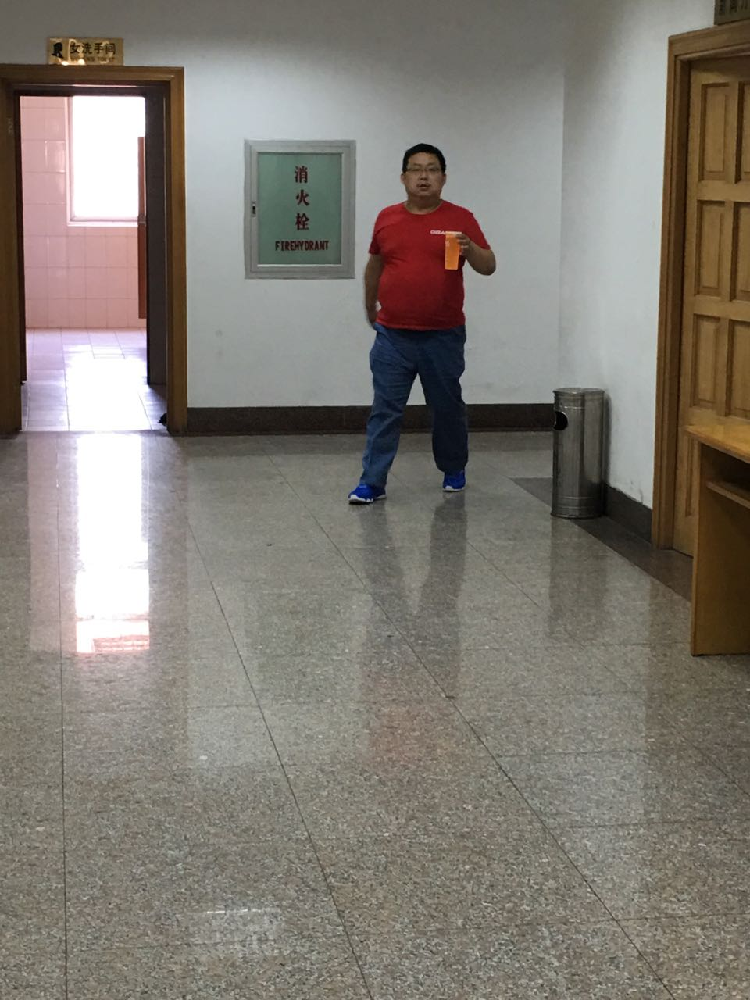 |
| 2016-05-28 13:34:46 | 我 | 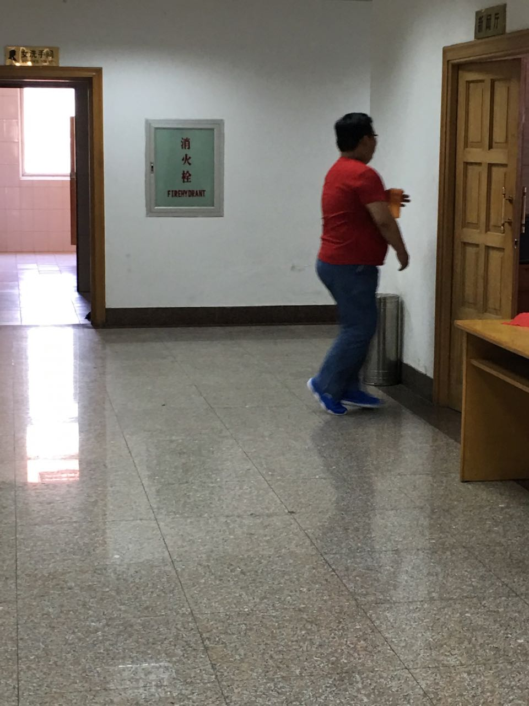 |
| 2016-05-28 17:34:09 | 我 | 你累不 |
| 2016-05-28 17:42:47 | 你 | 不累 |
| 2016-05-28 17:42:49 | 你 | 没事 |
| 2016-05-28 17:43:04 | 我 | 好的 |
| 2016-05-28 18:23:23 | 你 | 拍照片了吗 |
| 2016-05-28 18:23:34 | 你 | 有拍吗 |
| 2016-05-28 18:23:50 | 我 | 今天没有 |
| 2016-05-28 18:24:17 | 你 | 好 |
| 2016-05-28 18:24:45 | 我 | 旭明拍的给了我几张，你要吗 |
| 2016-05-28 18:25:20 | 你 | 算了 |
| 2016-05-28 18:25:24 | 你 | 不相信他 |
| 2016-05-28 18:25:27 | 你 | 估计很丑 |
| 2016-05-28 18:25:36 | 我 | 😄 |
| 2016-05-28 18:28:28 | 我 | |
| 2016-05-28 18:29:12 | 你 | 哈哈 |
| 2016-05-28 18:29:18 | 你 | 我能看到你给我发消息 |
| 2016-05-28 18:29:25 | 我 | 😄 |
| 2016-05-28 18:29:43 | 你 | 一会不能说了，我对象在公司门口等我呢 |
| 2016-05-28 18:29:53 | 我 | 好的 |
| 2016-05-28 18:37:20 | 你 | 今天跟领导在一块的时间很长 |
| 2016-05-28 18:37:28 | 你 | 我俩一组 |
| 2016-05-28 18:37:41 | 我 | 是，正好 |
| 2016-05-28 18:37:42 | 你 | 猜字他就坐我后边 |
| 2016-05-28 18:37:45 | 你 | 恩 |
| 2016-05-28 18:37:59 | 我 | 应该是他故意的 |
| 2016-05-28 18:38:17 | 你 | 让他在我后背划来划去的，有点不好意思呢[害羞] |
| 2016-05-28 18:38:31 | 你 | 今天穿了个运动的内衣 |
| 2016-05-28 18:38:39 | 我 | 嗯 |
| 2016-05-28 18:38:55 | 你 | 一直在一块来着 |
| 2016-05-28 18:39:16 | 你 | 我不知道，每次都能遇见，估计他故意跟着我的 |
| 2016-05-28 18:39:24 | 我 | 应该是 |
| 2016-05-28 18:39:31 | 你 | 你看他多稀罕跟我一起玩 |
| 2016-05-28 18:39:50 | 我 | 我以前就说过 |
| 2016-05-28 18:40:40 | 我 | 他还是很喜欢你的 |
| 2016-05-28 18:45:23 | 你 | |
| 2016-05-28 18:45:42 | 我 | 漂亮 |
{kind=link}
{kind=link}
{kind=link}
2016-05-30¶
| 2016-05-30 08:07:59 | 你 | 早啊 |
| 2016-05-30 08:08:15 | 我 | 早，你睡好了吗 |
| 2016-05-30 08:08:47 | 你 | 还行 |
| 2016-05-30 08:14:53 | 你 | 杨总又看我日志了 |
| 2016-05-30 08:15:04 | 你 | 我晕 我现在越来越得不能出错了 |
| 2016-05-30 08:15:28 | 我 | 没事的 |
| 2016-05-30 08:15:43 | 我 | 我还经常看你的日志呢 |
| 2016-05-30 08:15:55 | 你 | 你最近好久不看了 |
| 2016-05-30 08:16:04 | 你 | 你看跟他看有关系吗 |
| 2016-05-30 08:16:19 | 我 | 我每周都会看，就是没留下痕迹 |
| 2016-05-30 08:16:21 | 你 | 他看估计是想知道需求组干啥呢 |
| 2016-05-30 08:16:29 | 你 | 哦 我写的还行吧 |
| 2016-05-30 08:16:39 | 我 | 写的不错呀 |
| 2016-05-30 08:22:08 | 你 | 我姐他们敏捷用的工具是JIRA |
| 2016-05-30 08:22:11 | 你 | 你听说过吗 |
| 2016-05-30 08:22:25 | 你 | 昨天他大致给我讲了讲 但是没讲完 |
| 2016-05-30 08:22:27 | 我 | 是，我也用过 |
| 2016-05-30 08:22:36 | 我 | 很老牌的一个工具了 |
| 2016-05-30 08:22:44 | 你 | 恩 |
| 2016-05-30 08:27:35 | 我 | 老杨一组、二组、测试组和你们组都看了 |
| 2016-05-30 08:27:46 | 你 | 恩 好的 |
| 2016-05-30 08:46:03 | 我 | 最近好多人请假 |
| 2016-05-30 08:46:14 | 你 | 谁请假了 |
| 2016-05-30 08:46:23 | 我 | 不知道今年怎么了 |
| 2016-05-30 08:46:35 | 我 | 刘新亮 |
| 2016-05-30 08:46:50 | 你 | 别瞎联系 |
| 2016-05-30 08:46:58 | 你 | 可能是真有事呢 |
| 2016-05-30 08:47:22 | 我 | 是有事，他爸好像脑部有什么问题，今天要会诊 |
| 2016-05-30 08:47:32 | 你 | 恩 |
| 2016-05-30 08:48:44 | 你 | 阿娇周日跟他对象吵架了 |
| 2016-05-30 08:48:49 | 你 | 气的一直哭 |
| 2016-05-30 08:48:54 | 你 | 我哄了半天 |
| 2016-05-30 08:48:56 | 我 | 啊 |
| 2016-05-30 08:48:59 | 我 | 为啥呀 |
| 2016-05-30 08:49:21 | 你 | 都是小事 我也挺生气的 |
| 2016-05-30 08:49:29 | 你 | 阿娇他对象不像个男人 |
| 2016-05-30 08:49:36 | 你 | 我都想让他俩分手了 |
| 2016-05-30 08:49:56 | 我 | 啊 |
| 2016-05-30 08:50:09 | 我 | 有这么差吗 |
| 2016-05-30 08:50:22 | 你 | 有 |
| 2016-05-30 08:50:44 | 你 | 阿娇总说不喜欢他 只是没碰到自己喜欢的人 所以凑合这 |
| 2016-05-30 08:51:03 | 你 | 都凑合到结婚了 |
| 2016-05-30 08:51:12 | 你 | 这就是她的性格 要是我 早分了 |
| 2016-05-30 08:51:20 | 我 | 哦 |
| 2016-05-30 08:51:35 | 你 | 没啥大事 |
| 2016-05-30 08:51:40 | 你 | 你就别操心了 |
| 2016-05-30 08:51:46 | 我 | 好的 |
| 2016-05-30 09:07:45 | 我 | 忘了吃饭了 |
| 2016-05-30 09:46:39 | 你 | 我结合你说的 李杰说的 基本把那个scrum的看明白了 |
| 2016-05-30 09:47:03 | 我 | 学的真快 |
| 2016-05-30 09:47:43 | 你 | 跟学没关系 就是知道是啥了 |
| 2016-05-30 09:48:08 | 你 | 李杰把他们每天干的事跟我说了下 我脑子里就有个大概印象了 |
| 2016-05-30 09:48:48 | 你 | 然后看看了百度百科的scrum的介绍 了解下角色、活动、产出物 |
| 2016-05-30 09:48:58 | 我 | 嗯 |
| 2016-05-30 10:12:46 | 我 | 你今天忙什么 |
| 2016-05-30 10:13:56 | 你 | 没什么事吧 |
| 2016-05-30 10:14:00 | 你 | 不知道 |
| 2016-05-30 10:14:28 | 我 | 最近没什么需求吗？ |
| 2016-05-30 10:14:56 | 你 | 有 洪越没给我 我也没要 |
| 2016-05-30 11:01:29 | 我 | 无聊 |
| 2016-05-30 11:01:30 | 你 | 这个scrum实施起来有点难啊 话说开发中心实施流程之前 二组是啥流程啊 |
| 2016-05-30 11:01:39 | 你 | 正好我想给你发消息呢 |
| 2016-05-30 11:01:44 | 你 | 你就给我发了 |
| 2016-05-30 11:01:48 | 我 | 😄 |
| 2016-05-30 11:02:01 | 我 | 又是神同步 |
| 2016-05-30 11:02:06 | 你 | 我刚才在知乎上看了看推srumn时会出现的问题 |
| 2016-05-30 11:02:18 | 我 | 他们现在和我们差不多 |
| 2016-05-30 11:02:19 | 你 | 你们做敏捷的话 我一定要跟着 |
| 2016-05-30 11:02:25 | 我 | 当然了 |
| 2016-05-30 11:02:29 | 你 | 我非得跟着 |
| 2016-05-30 11:02:40 | 你 | 那王洪越可讷讷个让王志新去啊 |
| 2016-05-30 11:02:57 | 你 | 不过现在王洪越一般把二组的需求都给我做 |
| 2016-05-30 11:03:02 | 我 | 是 |
| 2016-05-30 11:03:11 | 你 | 现在是 以前是啥样的 |
| 2016-05-30 11:03:36 | 你 | 我看知乎上说的很多问题 开发中心也都有 |
| 2016-05-30 11:04:17 | 我 | 以前他们不写文档 |
| 2016-05-30 11:04:35 | 我 | 大家商量一下就开始编码 |
| 2016-05-30 11:04:48 | 我 | 最后大家合在一起测一下 |
| 2016-05-30 11:04:49 | 你 | 要是推scrum 的话 一定得领导宣贯 而且你要是带头做 前期问题会很多 |
| 2016-05-30 11:05:02 | 我 | 是 |
| 2016-05-30 11:11:57 | 我 | 周六你们从哪走的 |
| 2016-05-30 11:12:07 | 我 | 我去地铁没看见你们 |
| 2016-05-30 11:12:26 | 你 | 东东那个外甥女的爸妈来了 请我俩吃饭 |
| 2016-05-30 11:12:43 | 你 | 东东跟姐夫喝了点酒 其实真没喝多 可是后劲太大了 |
| 2016-05-30 11:12:48 | 我 | 哦 |
| 2016-05-30 11:12:55 | 你 | 我开车回的家 路上停了3次 |
| 2016-05-30 11:12:59 | 你 | 吐了3次 |
| 2016-05-30 11:13:01 | 我 | 啊 |
| 2016-05-30 11:13:18 | 你 | 回家都十一点了 我又洗洗澡 |
| 2016-05-30 11:13:23 | 我 | 得多难受呀 |
| 2016-05-30 11:13:36 | 你 | 他整个周日都没缓过来 今天早上才好点了 |
| 2016-05-30 11:13:45 | 你 | 什么破酒 |
| 2016-05-30 11:13:52 | 我 | 就是 |
| 2016-05-30 11:14:07 | 我 | 有机会我请你喝茅台 |
| 2016-05-30 11:15:07 | 你 | 这个得看机会了 而且我喝啥估计都差不多 不过茅台还是可以试试滴 |
| 2016-05-30 11:15:34 | 我 | 喝了你就知道不一样了 |
| 2016-05-30 11:15:47 | 你 | 恩 |
| 2016-05-30 11:16:22 | 你 | 他姐夫买的酒应该也不错 |
| 2016-05-30 11:16:33 | 你 | 但是不知道怎么这样了 以前从来没有过 |
| 2016-05-30 11:27:45 | 我 | 领导在番薯这 |
| 2016-05-30 11:27:53 | 你 | 干嘛呢 |
| 2016-05-30 11:27:57 | 你 | 说敏捷吗 |
| 2016-05-30 11:28:12 | 我 | 不是8t同步的事情 |
| 2016-05-30 11:28:26 | 我 | 现在有问题 |
| 2016-05-30 11:28:39 | 我 | 还是时间来不及 |
| 2016-05-30 11:28:54 | 你 | 效率太低 |
| 2016-05-30 11:29:23 | 我 | 都有，技术上也有难度 |
| 2016-05-30 11:35:49 | 我 | 下午的评审你去吗 |
| 2016-05-30 11:39:01 | 你 | 啥评审 |
| 2016-05-30 11:39:39 | 我 | 审计区分企业管理器和JDBC |
| 2016-05-30 11:40:21 | 我 | 这个需求是你写的吗 |
| 2016-05-30 11:42:53 | 你 | 是 |
| 2016-05-30 11:43:04 | 你 | 我跟耿燕问了，她说她看看去 |
| 2016-05-30 11:43:12 | 你 | 有问题吗 |
| 2016-05-30 11:43:21 | 我 | 好的，我有空我也去 |
| 2016-05-30 11:43:33 | 你 | 恩，好 |
| 2016-05-30 11:43:53 | 你 | 你们不吃饭去吗 |
| 2016-05-30 11:44:15 | 我 | 我在这先听听 |
| 2016-05-30 11:44:29 | 我 | 领导和他们讨论方案呢 |
| 2016-05-30 11:44:30 | 你 | 恩 |
| 2016-05-30 12:30:32 | 我 | 我们在研究你最后一句话是啥意思 |
| 2016-05-30 12:33:20 | 你 | 你们还没吃饭吗 |
| 2016-05-30 12:33:39 | 我 | 正在吃 |
| 2016-05-30 12:33:48 | 我 | 和领导一起 |
| 2016-05-30 12:33:58 | 你 | 哦 |
| 2016-05-30 12:35:22 | 你 | 好吧，我发的是不是特别好玩 |
| 2016-05-30 12:36:00 | 我 | 是 |
| 2016-05-30 12:36:44 | 你 | |
| 2016-05-30 12:36:48 | 你 | 可怜的 |
| 2016-05-30 12:36:57 | 你 | |
| 2016-05-30 12:37:03 | 你 | 我的镜头很少 |
| 2016-05-30 12:37:09 | 我 | 哦 |
| 2016-05-30 12:37:12 | 你 | 有几个还挺漂亮 |
| 2016-05-30 12:37:24 | 我 | 都发给我吧 |
| 2016-05-30 12:37:27 | 你 | 太搞笑了 |
| 2016-05-30 12:40:02 | 你 | |
| 2016-05-30 13:27:14 | 我 | [链接] 婚姻与阶级：中国男人配不上中国女人吗？ |
| 2016-05-30 13:27:23 | 你 | 我没睡着 |
| 2016-05-30 13:27:38 | 我 | 为啥 |
| 2016-05-30 13:27:48 | 我 | 有人吵？ |
| 2016-05-30 13:27:54 | 你 | 没有 |
| 2016-05-30 13:28:03 | 你 | 竟玩了 |
| 2016-05-30 13:28:10 | 你 | 看照片逗的 |
| 2016-05-30 13:28:35 | 我 | 哈哈 |
| 2016-05-30 13:28:49 | 我 | 照片都放网上了吗 |
| 2016-05-30 13:38:16 | 你 | 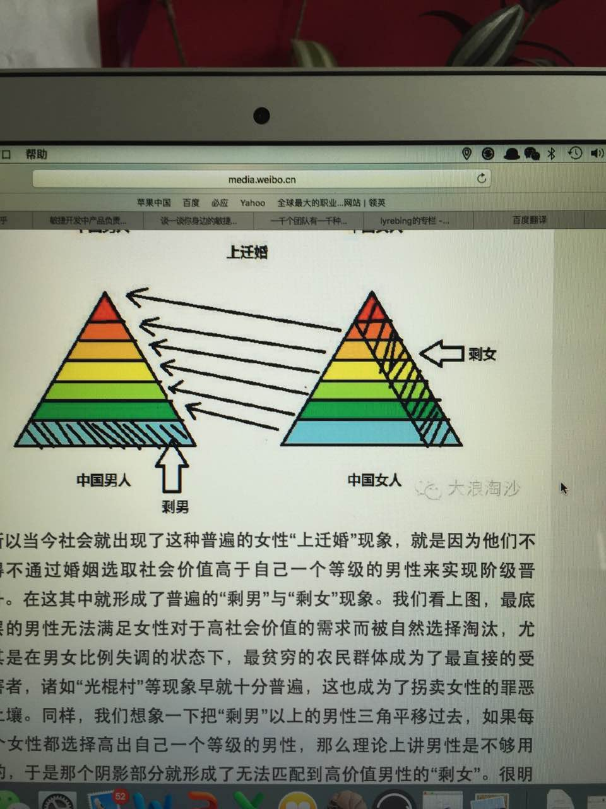 |
| 2016-05-30 13:38:28 | 你 | 这幅图好像有点问题 |
| 2016-05-30 13:39:01 | 我 | 你说说 |
| 2016-05-30 13:39:02 | 你 | 这个提法还是很对的 |
| 2016-05-30 13:40:06 | 你 | 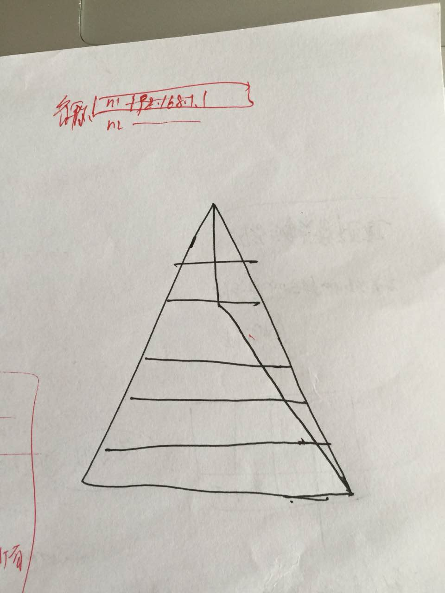 |
| 2016-05-30 13:40:16 | 你 | 这样还差不多 |
| 2016-05-30 13:40:33 | 我 | 有道理 |
| 2016-05-30 13:41:03 | 我 | 你这么画更准确 |
| 2016-05-30 13:41:17 | 我 | 更符合剩女大都是高学历的情况 |
| 2016-05-30 13:41:21 | 你 | 对 |
| 2016-05-30 13:41:30 | 你 | 村里的没有剩女 |
| 2016-05-30 13:41:52 | 你 | 聋哑的 也能嫁出去 有时候嫁的也不差 |
| 2016-05-30 13:42:03 | 我 | 只要还是因为男女比例失调 |
| 2016-05-30 13:42:22 | 我 | 他说的是1:1的情况 |
| 2016-05-30 13:43:23 | 你 | 『上海马路上，女比男明显高一个档次……现在的男的要么狗头狗脑，要么缩头缩脑，没一个看着舒服的，』推导出中国男人配不上中国女人 显然是错误的 |
| 2016-05-30 13:43:45 | 你 | 文章是以这个点说开的 |
| 2016-05-30 13:43:49 | 你 | 对吧 |
| 2016-05-30 13:43:53 | 我 | 是 |
| 2016-05-30 13:44:12 | 你 | 他强调的是社会对男的的考量多偏重社会价值 女的偏重自然价值 |
| 2016-05-30 13:44:20 | 我 | 那你知道他为什么从一个错误的观点开始的吗 |
| 2016-05-30 13:44:42 | 我 | 你说对了一半 |
| 2016-05-30 13:45:02 | 我 | 为什么对女的就会偏重自然价值 |
| 2016-05-30 13:45:23 | 你 | 这是紧接着说的 |
| 2016-05-30 13:45:34 | 你 | 就是男权社会造成的 |
| 2016-05-30 13:45:50 | 我 | 是 |
| 2016-05-30 13:45:58 | 你 | 『那你知道他为什么从一个错误的观点开始的吗』这个不知道你想问啥？ |
| 2016-05-30 13:46:35 | 我 | 刚开始他用上海的一个现象来说明他的论点 |
| 2016-05-30 13:46:51 | 我 | 不过这个现象其实不能说明他的论点 |
| 2016-05-30 13:47:06 | 我 | 那么他为什么要用这个现象来开篇呢 |
| 2016-05-30 13:47:25 | 你 | 吸引人眼球吧 |
| 2016-05-30 13:47:38 | 我 | 对 |
| 2016-05-30 13:48:06 | 我 | 更主要的是从人们已知的一个场景来引导 |
| 2016-05-30 13:48:13 | 你 | 是 |
| 2016-05-30 13:48:23 | 你 | 人们已知的且默认 |
| 2016-05-30 13:48:28 | 你 | 认可的 |
| 2016-05-30 13:48:42 | 我 | 从这个角度上也可以推断作者应该离上海不远，或者就在上海 |
| 2016-05-30 13:48:59 | 你 | 是 |
| 2016-05-30 13:49:15 | 我 | 这是写文章或者演讲的一个技巧 |
| 2016-05-30 13:49:42 | 我 | 就好像拓展的时候，老师也要和数据库拉拉关系一样 |
| 2016-05-30 13:50:18 | 你 | 恩 |
| 2016-05-30 13:51:13 | 你 | 你忙吗 |
| 2016-05-30 13:51:16 | 你 | 给你说点八卦 |
| 2016-05-30 13:51:22 | 我 | 不忙，你说爸 |
| 2016-05-30 13:51:36 | 你 | 错别字 |
| 2016-05-30 13:51:42 | 你 | 我就当没看见 |
| 2016-05-30 13:52:00 | 你 | 阿娇昨天跟他对象吵架 晚上在张明静家睡的 |
| 2016-05-30 13:52:01 | 我 | 哈哈，输入法不好用，正在调教中 |
| 2016-05-30 13:52:22 | 我 | 啊，吵这么厉害 |
| 2016-05-30 13:52:28 | 你 | 这件事我可不想管 我发现阿娇已经没救了 |
| 2016-05-30 13:52:38 | 我 | 怎么了 |
| 2016-05-30 13:53:20 | 你 | 你保密啊 |
| 2016-05-30 13:53:22 | 你 | 就当不知道 |
| 2016-05-30 13:53:30 | 你 | 我已经跟阿娇说了 他可以去我家 |
| 2016-05-30 13:53:48 | 我 | 好的 |
| 2016-05-30 13:54:02 | 我 | 去你家是不是太远了 |
| 2016-05-30 13:54:05 | 你 | 你知道不 他对象根本就没留她 而且阿娇走的时候还跟他对象说自己去张明静那了 |
| 2016-05-30 13:54:25 | 你 | 我看她以后怎么办 |
| 2016-05-30 13:54:37 | 我 | 是 |
| 2016-05-30 13:55:30 | 我 | 你家东东应该不会这样 |
| 2016-05-30 13:55:42 | 你 | 先说你会吗 |
| 2016-05-30 13:55:56 | 你 | 你媳妇跟你吵架 离家出走 |
| 2016-05-30 13:55:57 | 我 | 不会 |
| 2016-05-30 13:56:00 | 你 | 你会让她走吗 |
| 2016-05-30 13:56:08 | 我 | 当然不会啦 |
| 2016-05-30 13:56:37 | 你 | 这不就是了 所以不是东东好 是大家都会留媳妇的 是杜阳太混蛋了 |
| 2016-05-30 13:56:54 | 你 | 不过阿娇也很过分 他竟然给他公公打电话了 |
| 2016-05-30 13:57:11 | 你 | 所以他俩一对这样的 我可管不了 |
| 2016-05-30 13:57:21 | 我 | 阿娇有点傻了 |
| 2016-05-30 13:57:30 | 你 | 我这个暴脾气 劝分了一路 结果人家俩好了 |
| 2016-05-30 13:57:33 | 我 | 这事应该告诉娘家 |
| 2016-05-30 13:57:44 | 我 | 啊 |
| 2016-05-30 13:57:57 | 我 | 你劝人家分？ |
| 2016-05-30 13:59:23 | 你 | 两口子的事 告诉谁啊 |
| 2016-05-30 13:59:28 | 你 | 谁能解决啊 |
| 2016-05-30 13:59:48 | 我 | 其实这时候不是谁能解决的问题 |
| 2016-05-30 14:00:20 | 我 | 既然已经吵成这样了，首先要考虑的是后盾 |
| 2016-05-30 14:00:43 | 我 | 如果两个人能自己解决这是最好 |
| 2016-05-30 14:01:09 | 你 | 唉 |
| 2016-05-30 14:02:04 | 我 | 有时候强有力的后盾恰恰是解决问题的先决条件 |
| 2016-05-30 14:02:10 | 我 | 特别是女方 |
| 2016-05-30 14:02:51 | 你 | 阿娇他爸妈根本没看上他对象 |
| 2016-05-30 14:03:07 | 你 | 她肯定怕她爸妈担心 |
| 2016-05-30 14:03:16 | 我 | 在夫妻关系中女性一般处于弱势，当女方有一个比较强的后盾的时候，男方的策略一般都会发生变化 |
| 2016-05-30 14:03:28 | 你 | 不管怎么着，我觉得阿娇把这事告诉父母都是她不对 |
| 2016-05-30 14:03:41 | 我 | 可是这样阿娇就会非常弱势了 |
| 2016-05-30 14:04:01 | 你 | 杜杨他爸爸肯定是教训杜杨的啊 |
| 2016-05-30 14:04:37 | 我 | 关键起不到威慑作用 |
| 2016-05-30 14:05:08 | 你 | 杜杨根本不买他岳父的账 |
| 2016-05-30 14:05:29 | 你 | 所以我说阿娇惨了 |
| 2016-05-30 14:05:47 | 我 | 其实咱俩说的不是一件事，你说的是具体的，我说的是抽象的 |
| 2016-05-30 14:06:49 | 你 | 那你说个具体的 |
| 2016-05-30 14:07:24 | 我 | 需要先搞清楚他们吵架的具体原因 |
| 2016-05-30 14:07:42 | 我 | 另外要分析阿娇对象的态度 |
| 2016-05-30 14:07:58 | 你 | 你听了也会被杜阳气死的 |
| 2016-05-30 14:08:06 | 我 | 重点是他如果看待阿娇的 |
| 2016-05-30 14:08:41 | 我 | 如果只是一个死要面子的人，那么都还好说 |
| 2016-05-30 14:08:57 | 我 | 如果是一个大男子主义的人，那就麻烦了 |
| 2016-05-30 14:09:11 | 你 | 都不是 |
| 2016-05-30 14:09:12 | 我 | 因为后者会认为他的行为是正确的 |
| 2016-05-30 14:09:29 | 你 | 肯定是认为自己的是对的 |
| 2016-05-30 14:09:53 | 你 | 阿娇说他是个超级没有责任心 没有担当 自律差 没有上进心的人 |
| 2016-05-30 14:10:10 | 你 | 我都不想提 |
| 2016-05-30 14:10:17 | 你 | 算了 八卦到此结束 |
| 2016-05-30 14:10:24 | 我 | 好吧 |
| 2016-05-30 14:10:25 | 你 | 我可不管了 管不了 |
| 2016-05-30 14:10:33 | 我 | 那就别管了 |
| 2016-05-30 14:10:46 | 你 | 可是我想跟你讨论个问题 |
| 2016-05-30 14:10:52 | 我 | 可以 |
| 2016-05-30 14:10:58 | 你 | 就是阿娇说的 她其实不喜欢杜阳 |
| 2016-05-30 14:11:11 | 你 | 只是因为没碰到喜欢的人 才凑合在一起的 |
| 2016-05-30 14:11:20 | 你 | 你觉得这种说法是不是自欺欺人 |
| 2016-05-30 14:11:34 | 你 | 他俩之所以能走到今天 我觉得也不是偶然 |
| 2016-05-30 14:11:50 | 你 | 而是他俩性格导致的必然 |
| 2016-05-30 14:12:50 | 我 | 是 |
| 2016-05-30 14:13:21 | 我 | 这个必然和性格相关 |
| 2016-05-30 14:13:47 | 我 | 其实想阿娇这样的想法也不为错 |
| 2016-05-30 14:14:47 | 我 | 因为女性最好的也就这几年，如果一味的坚持可能最后就真变成剩女了 |
| 2016-05-30 14:15:09 | 你 | 真是太悲哀了 |
| 2016-05-30 14:15:11 | 我 | 这里面要考虑的东西太多了 |
| 2016-05-30 14:15:31 | 我 | 不是每个人都能像你那么幸运的 |
| 2016-05-30 14:15:38 | 你 | 她才不会考虑呢 |
| 2016-05-30 14:15:52 | 你 | 你指什么？ |
| 2016-05-30 14:16:00 | 你 | 我的幸运是东东吗？ |
| 2016-05-30 14:16:17 | 我 | 在合适的时间遇到合适的人 |
| 2016-05-30 14:16:47 | 我 | 如果东东不和他以前的女友分手，你们也到不了一起 |
| 2016-05-30 14:17:03 | 你 | 也许吧 |
| 2016-05-30 14:17:30 | 我 | 所以我说这里面的因素太多了，有一点不一样就不是现在这个结果 |
| 2016-05-30 14:17:40 | 你 | 那是 |
| 2016-05-30 14:17:41 | 我 | 哪怕这点非常非常小 |
| 2016-05-30 14:17:58 | 你 | 是 |
| 2016-05-30 14:18:35 | 我 | 所以很多时候只能是尽人事听天意 |
| 2016-05-30 14:18:42 | 你 | 是 |
| 2016-05-30 14:18:46 | 你 | 你说的很对 |
| 2016-05-30 14:19:00 | 你 | “最好的架构、需求和设计出自自组织团队” |
| 2016-05-30 14:19:05 | 你 | 聊点别的 |
| 2016-05-30 14:19:08 | 我 | 好 |
| 2016-05-30 14:19:10 | 你 | 聊敏捷吧 |
| 2016-05-30 14:19:19 | 我 | 好 |
| 2016-05-30 14:19:27 | 我 | 你最近对敏捷很感兴趣呀 |
| 2016-05-30 14:19:38 | 你 | 是 |
| 2016-05-30 14:19:44 | 你 | 不知道为啥 就是想知道 |
| 2016-05-30 14:20:46 | 你 | 你知道我刚知道咱们的流程的时候 觉得这个东西太伟大了 |
| 2016-05-30 14:20:54 | 我 | 哦 |
| 2016-05-30 14:21:04 | 你 | 就是我刚刚了解到咱们开发中心的流程的时候 |
| 2016-05-30 14:21:20 | 你 | 当初赵总、杨总提的时候我根本没概念 |
| 2016-05-30 14:21:40 | 你 | 现在对敏捷这么感兴趣 可能跟我对这个感兴趣有关 |
| 2016-05-30 14:21:48 | 你 | 今天咱们聊scrum |
| 2016-05-30 14:22:20 | 我 | 好 |
| 2016-05-30 14:22:48 | 你 | 我已经百度了srcum了 |
| 2016-05-30 14:23:04 | 你 | 基本知识就别聊了 咱们围绕几个关键词说 |
| 2016-05-30 14:23:10 | 我 | 好 |
| 2016-05-30 14:23:26 | 你 | 我有两个问题要请教你 |
| 2016-05-30 14:23:37 | 你 | 第一个是我看到这么一句话 |
| 2016-05-30 14:23:42 | 我 | 说的这么客气 |
| 2016-05-30 14:24:13 | 你 | 说『瀑布流程是以文档为核心的 文档驱动的，scrum是以人为核心的 需求驱动的』 |
| 2016-05-30 14:24:44 | 你 | 我一直以为 scrum 是迭代 但是每个迭代里跟瀑布差不多 其实这个认识大错特错 |
| 2016-05-30 14:24:58 | 我 | 是，你说的是RUP |
| 2016-05-30 14:27:35 | 我 | 接着说 |
| 2016-05-30 14:27:45 | 你 | 恩 |
| 2016-05-30 14:27:59 | 你 | 但是我不理解这句话『瀑布流程是以文档为核心的 文档驱动的，scrum是以人为核心的 需求驱动的』 |
| 2016-05-30 14:28:02 | 你 | 后半句 |
| 2016-05-30 14:29:11 | 我 | 你还记得我那天和你说的，scrum在每个sprint开始时要决定做什么 |
| 2016-05-30 14:29:18 | 你 | 恩 |
| 2016-05-30 14:29:25 | 我 | 那么谁来决定，用户和开发人员 |
| 2016-05-30 14:29:38 | 我 | 用户决定优先级，开发人员决定做什么 |
| 2016-05-30 14:29:56 | 我 | 所以人，特别是研发的素质就非常重要了 |
| 2016-05-30 14:30:30 | 我 | 这决定做什么之前，研发首先要对自己的生产力和功能的技术难度有一个正确的评估 |
| 2016-05-30 14:30:43 | 我 | 否则出错的可能性就非常大 |
| 2016-05-30 14:31:10 | 我 | 而由于一个sprint一般就一周，如果出错是几乎没有时间补救的 |
| 2016-05-30 14:31:16 | 你 | 哦 |
| 2016-05-30 14:31:25 | 你 | 明白了 |
| 2016-05-30 14:31:39 | 你 | 还有一个问题 |
| 2016-05-30 14:31:53 | 你 | 他说scrum是自组织的团队 这个不理解 |
| 2016-05-30 14:32:01 | 你 | 我正在查自组织的概念 |
| 2016-05-30 14:32:19 | 你 | 自组织团队要自我决择如何最好地完成他们的工作，而不是由其他外部团队来决定。 |
| 2016-05-30 14:32:38 | 我 | 还是刚才那个场景，放在现在的研发一组，就是我或者旭明指定谁去做 |
| 2016-05-30 14:32:49 | 我 | 在scrum中不是这样 |
| 2016-05-30 14:33:04 | 我 | 是开发人员自己去挑选功能去做 |
| 2016-05-30 14:33:07 | 你 | 是自己去领活 |
| 2016-05-30 14:33:12 | 你 | 对 挑选 |
| 2016-05-30 14:33:31 | 我 | 这就要求每个人必须清楚自己的工作内容以及和他人之间的关系 |
| 2016-05-30 14:33:47 | 你 | 明白了 |
| 2016-05-30 14:33:50 | 我 | 换句话说，就是大家都非常清楚自己该干什么，该和谁打交道 |
| 2016-05-30 14:34:08 | 我 | 所以整个团队不是某个人说了算，而是大家一起配合 |
| 2016-05-30 14:34:17 | 你 | OK |
| 2016-05-30 14:34:30 | 你 | 所以就不存在你或者旭明的角色了 |
| 2016-05-30 14:34:45 | 你 | 你们这部分管理的工作就可以分散给每个人去做 |
| 2016-05-30 14:34:47 | 我 | 我就变成了master了 |
| 2016-05-30 14:34:52 | 你 | 恩 |
| 2016-05-30 14:34:53 | 我 | 对 |
| 2016-05-30 14:35:04 | 你 | 你是master的角色 |
| 2016-05-30 14:35:13 | 你 | 但你的职位是领导 |
| 2016-05-30 14:35:32 | 你 | scrum的master只是在项目中有效的 是个角色 |
| 2016-05-30 14:35:34 | 你 | 对吧 |
| 2016-05-30 14:35:38 | 我 | 对 |
| 2016-05-30 14:36:21 | 你 | 所以对队员要求还是蛮高的 |
| 2016-05-30 14:36:31 | 我 | 对呀 |
| 2016-05-30 14:36:34 | 你 | 这正好是你说的一人为核心 |
| 2016-05-30 14:36:37 | 你 | 人驱动 |
| 2016-05-30 14:36:44 | 我 | 是 |
| 2016-05-30 14:37:12 | 我 | 其实人员素质高了，不论什么流程效率都不会太低 |
| 2016-05-30 14:37:20 | 你 | 对啊 |
| 2016-05-30 14:37:29 | 我 | scrum的优势就在于快速反馈 |
| 2016-05-30 14:37:45 | 我 | 用户随时知道研发的进展 |
| 2016-05-30 14:37:54 | 你 | 恩、 |
| 2016-05-30 14:38:10 | 你 | 就是那个燃尽图表示进度 |
| 2016-05-30 14:38:18 | 我 | 是 |
| 2016-05-30 14:38:19 | 你 | 需求应该是PO的角色对吧 |
| 2016-05-30 14:38:29 | 我 | 不是 |
| 2016-05-30 14:38:30 | 你 | 产品负责任 |
| 2016-05-30 14:38:39 | 我 | 需求其实是被分解了 |
| 2016-05-30 14:38:54 | 我 | 没有专门的需求人员，所有的人都是需求人员 |
| 2016-05-30 14:39:17 | 你 | 那po是什么 |
| 2016-05-30 14:39:22 | 你 | product owner |
| 2016-05-30 14:39:34 | 我 | 类似产品经理 |
| 2016-05-30 14:40:09 | 你 | 还有项目管理吗 |
| 2016-05-30 14:40:26 | 你 | master 做吗 |
| 2016-05-30 14:40:56 | 你 | 那PO这个角色负责什么啊 |
| 2016-05-30 14:41:26 | 我 | 一般没有项目经理 |
| 2016-05-30 14:41:51 | 我 | 项目经理主要是保证进度，scrum中这是由全体保证的 |
| 2016-05-30 14:42:08 | 我 | PO是保证研发的方向没有错误 |
| 2016-05-30 14:43:21 | 你 | 那这个流程其实要求team中的成员都会做需求分析 开发 和测试的 |
| 2016-05-30 14:43:26 | 你 | 对吧 |
| 2016-05-30 14:43:33 | 我 | 对 |
| 2016-05-30 14:44:20 | 你 | 我彻底明白了 |
| 2016-05-30 14:44:31 | 我 | 好的 |
| 2016-05-30 14:44:58 | 你 | 这就跟小公司里 人少的时候 技术人员啥都得做 大公司里 人多 分工细 一个人只需要负责自己那小部分就行了 |
| 2016-05-30 14:45:04 | 你 | 一个道理 |
| 2016-05-30 14:45:10 | 我 | 没错 |
| 2016-05-30 14:48:35 | 你 | 这个推行起来真的挺难的 |
| 2016-05-30 14:48:45 | 我 | 对呀 |
| 2016-05-30 14:48:48 | 你 | 大家对瀑布流程都习惯了 |
| 2016-05-30 14:48:58 | 我 | 所以才有挑战呀 |
| 2016-05-30 14:49:11 | 你 | 你现在拉个需求的、测试的进去 大家肯定都挺反感的 |
| 2016-05-30 14:49:12 | 我 | 想想都令人兴奋 |
| 2016-05-30 14:49:15 | 你 | 不过我支持你 |
| 2016-05-30 14:49:23 | 我 | 我都不想要测试 |
| 2016-05-30 14:49:24 | 你 | 就是 我就喜欢干有挑战的工作 |
| 2016-05-30 14:49:43 | 你 | 我不是说拉测试的 |
| 2016-05-30 14:50:04 | 你 | 我就是说这个流程对于咱们的现状来说 要面临的问题 |
| 2016-05-30 14:50:22 | 我 | 是 |
| 2016-05-30 14:50:24 | 你 | 相当于重新洗牌了 |
| 2016-05-30 14:50:31 | 我 | 没错 |
| 2016-05-30 14:50:39 | 你 | 以前是 一块一块的 现在是一个单位一个单位的 |
| 2016-05-30 14:50:56 | 我 | 是 |
| 2016-05-30 14:52:16 | 你 | 而且咱么公司的等活等惯了都 |
| 2016-05-30 14:52:21 | 你 | 主动性比较差 |
| 2016-05-30 14:52:30 | 我 | 对 |
| 2016-05-30 15:27:06 | 我 | 领导找开会 |
| 2016-05-30 15:29:24 | 你 | 恩 我刚才看见他了 |
| 2016-05-30 15:38:38 | 你 | 啥事 |
| 2016-05-30 15:38:59 | 我 | 老田认为他能培训 |
| 2016-05-30 15:39:11 | 你 | scrum吗？ |
| 2016-05-30 15:39:20 | 我 | 是 |
| 2016-05-30 15:46:36 | 你 | 死胖子 |
| 2016-05-30 15:49:56 | 我 | 这次不干了 |
| 2016-05-30 15:50:15 | 你 | 咋了 |
| 2016-05-30 15:50:21 | 你 | 为啥不干了 |
| 2016-05-30 15:50:34 | 你 | 别生气啦 |
| 2016-05-30 15:50:41 | 我 | 我和田分歧太大，领导说要请示武总 |
| 2016-05-30 15:50:44 | 我 | 我没生气 |
| 2016-05-30 15:50:46 | 你 | 别拿别人的错误惩罚自己 |
| 2016-05-30 15:50:53 | 你 | 分歧在哪 |
| 2016-05-30 15:51:29 | 我 | 我认为这次应该做，田认为风险很大，不建议做 |
| 2016-05-30 15:51:43 | 你 | 哦，那领导呢 |
| 2016-05-30 15:51:53 | 我 | 现在番薯他们回到以前没有文档的时候了 |
| 2016-05-30 15:52:02 | 我 | 领导明显和稀泥 |
| 2016-05-30 15:52:17 | 你 | 哦 |
| 2016-05-30 15:52:26 | 我 | 说要向武总汇报 |
| 2016-05-30 15:53:40 | 你 | 那汇报呗 |
| 2016-05-30 15:53:41 | 我 | 老田说scrum和他们之前没有文档的开发方式没有什么区别 |
| 2016-05-30 15:53:43 | 你 | 没事 |
| 2016-05-30 15:53:47 | 你 | 我晕 |
| 2016-05-30 15:54:06 | 你 | 这还要培训scrum呢 |
| 2016-05-30 15:54:15 | 我 | 对呀 |
| 2016-05-30 15:54:21 | 你 | 真是屈才了他， |
| 2016-05-30 15:54:31 | 我 | 差点没乐死我 |
| 2016-05-30 15:54:39 | 你 | 行吧，这件事明显你不应该再推了 |
| 2016-05-30 15:54:47 | 你 | 先看看形式，听到没 |
| 2016-05-30 15:54:52 | 我 | 对 |
| 2016-05-30 15:54:55 | 你 | 领导是中立的 |
| 2016-05-30 15:55:00 | 我 | 领导不是 |
| 2016-05-30 15:55:02 | 你 | 番薯不乐意 |
| 2016-05-30 15:55:08 | 你 | 老田不乐意 |
| 2016-05-30 15:55:12 | 你 | 对你不利 |
| 2016-05-30 15:55:27 | 我 | 领导问老田：“你能不能培训” |
| 2016-05-30 15:55:53 | 我 | 所以现在我也不管了 |
| 2016-05-30 15:55:56 | 你 | 这个我看了，即使拿下认证的，理解的也不一定透彻 |
| 2016-05-30 15:56:00 | 你 | 别管了 |
| 2016-05-30 15:56:18 | 我 | 现在我担心的就是监控的质量 |
| 2016-05-30 15:56:24 | 我 | 风险太高了 |
| 2016-05-30 15:56:29 | 你 | 更别说他这背书的了 |
| 2016-05-30 15:56:54 | 我 | 他连书都没背过 |
| 2016-05-30 15:57:09 | 我 | 至少我现在抽屉里面就放着一本呢 |
| 2016-05-30 15:57:16 | 你 | 就是，估计还没我扣的细呢 |
| 2016-05-30 15:57:20 | 你 | 咱不理他 |
| 2016-05-30 15:57:23 | 我 | 对呀 |
| 2016-05-30 15:57:33 | 你 | 你先别推了， |
| 2016-05-30 15:57:34 | 我 | 我就没打算理他 |
| 2016-05-30 15:57:44 | 你 | 至少现在领导知道你想推， |
| 2016-05-30 15:57:48 | 我 | 是，我已经和领导说了 |
| 2016-05-30 15:57:58 | 你 | 要是以后推的话肯定会让你干的 |
| 2016-05-30 15:58:01 | 我 | 等武总的指示 |
| 2016-05-30 15:58:05 | 你 | 嗯嗯 |
| 2016-05-30 15:58:28 | 你 | 要是领导也想的话 也可能会说说武总的 |
| 2016-05-30 15:58:38 | 我 | 是 |
| 2016-05-30 15:58:45 | 你 | 到时候你有领导的肯定了 推起来阻力小太多 |
| 2016-05-30 15:58:49 | 你 | 现在不是好时机 |
| 2016-05-30 15:58:55 | 我 | 是 |
| 2016-05-30 15:59:03 | 我 | 其实我还考虑过一种情况 |
| 2016-05-30 15:59:27 | 我 | 就是番薯他们不配合，然后项目延期，最后说是强推scrum的原因 |
| 2016-05-30 15:59:35 | 你 | 对啊 |
| 2016-05-30 15:59:45 | 你 | 这个太有可能 |
| 2016-05-30 16:00:02 | 你 | 其实你并没有损失 |
| 2016-05-30 16:00:09 | 我 | 是，所以今天我也没有特别强推 |
| 2016-05-30 16:00:22 | 我 | 是，对于我来说，我已经玩过了 |
| 2016-05-30 16:00:55 | 我 | 其实已经没有第一次那么兴奋了 |
| 2016-05-30 16:09:26 | 你 | 我是不是很笨 |
| 2016-05-30 16:10:08 | 我 | 不是，很可爱 |
| 2016-05-30 16:10:17 | 你 | 可爱啥啊 |
| 2016-05-30 16:10:58 | 我 | 当然是可爱啦 |
| 2016-05-30 16:11:22 | 我 | 你想，你的行为和小孩差不了多少 |
| 2016-05-30 16:11:55 | 我 | 父母看自己的小孩当然是觉得可爱啦 |
| 2016-05-30 16:17:45 | 我 | 我待会想和他们讲讲这篇文档的问题以及以后该怎么写，你有兴趣听吗 |
| 2016-05-30 16:27:04 | 你 | 好 |
| 2016-05-30 16:27:06 | 你 | 听 |
| 2016-05-30 16:27:25 | 我 | 好的 |
| 2016-05-30 16:27:59 | 你 | 以后不是不写了吗 |
| 2016-05-30 16:28:22 | 我 | 为什么不写？ |
| 2016-05-30 16:28:30 | 我 | 你是说敏捷吗？ |
| 2016-05-30 16:29:24 | 你 | 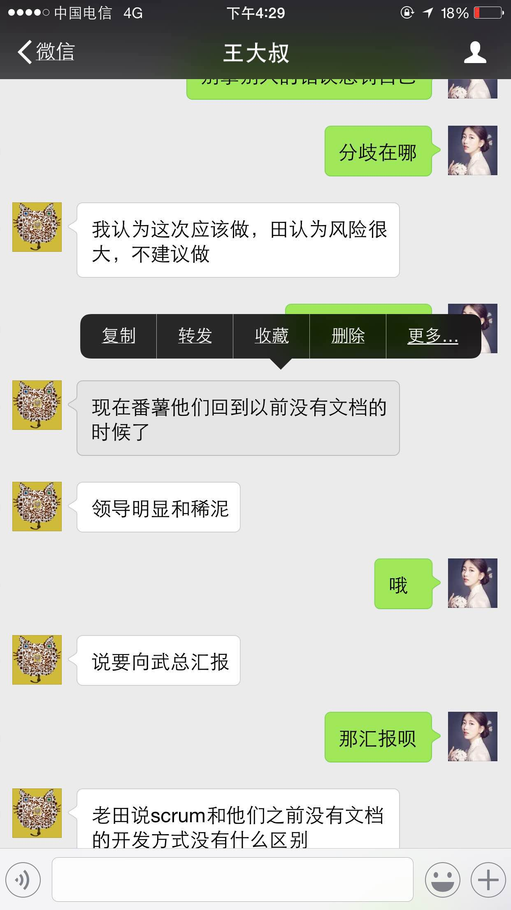 |
| 2016-05-30 16:29:37 | 你 | 不是回复到没文档的时候了吗 |
| 2016-05-30 16:30:02 | 我 | 那个是监控工具的，其他的还是要按照流程来 |
| 2016-05-30 17:07:59 | 你 | 你是在拉关系，是吗？[调皮] |
| 2016-05-30 17:08:56 | 我 | 差不多 |
| 2016-05-30 17:11:29 | 你 | 我觉得你早该干这事了 |
| 2016-05-30 17:20:15 | 我 | 唉 |
| 2016-05-30 17:20:21 | 我 | 我太善良了 |
| 2016-05-30 17:20:27 | 你 | 叹什么气啊 |
| 2016-05-30 17:35:57 | 我 | 你几点走 |
| 2016-05-30 17:40:08 | 你 | 不知道呢 |
| 2016-05-30 17:40:35 | 我 | 现在你下班都没谱了[偷笑] |
| 2016-05-30 17:43:43 | 你 | 是啊 全听人家的 |
| 2016-05-30 18:53:02 | 你 | 走了啊 |
| 2016-05-30 18:53:23 | 我 | 好的 |
{kind=link}
{kind=link}
{kind=link}
{kind=link}
{kind=link}
{kind=link}
2016-05-31¶
| 2016-05-31 08:11:16 | 我 | 早 |
| 2016-05-31 08:13:15 | 你 | 早 |
| 2016-05-31 08:18:18 | 你 | 咱们公司开发票是 天津南大通用数据技术股份有限公司吗? |
| 2016-05-31 08:18:34 | 你 | 昨天领导跟我要油票 |
| 2016-05-31 08:18:54 | 我 | 稍等，我看一下 |
| 2016-05-31 08:19:53 | 你 | 不知道有没有『市』 |
| 2016-05-31 08:20:31 | 我 | 名称：天津南大通用数据技术股份有限公司 纳税人识别号：120117761267957 地址电话：天津华苑产业区海泰发展六道6号海泰绿色产业基地J座 022-58815678 开户银行：上海银行天津华苑支行 银行账号：03001882097 |
| 2016-05-31 08:20:42 | 你 | OK |
| 2016-05-31 08:25:44 | 你 | 你说是奶茶热量高 还是灌饼热量高 |
| 2016-05-31 08:25:49 | 你 | 我快饿死了 |
| 2016-05-31 08:26:09 | 我 | 奶茶的单位热量高 |
| 2016-05-31 08:26:36 | 我 | 灌饼坚持的时间长 |
| 2016-05-31 08:26:54 | 你 | 什么？可是灌饼吃起来也挺麻烦 |
| 2016-05-31 08:27:00 | 我 | 你还是去吃灌饼吧 |
| 2016-05-31 08:27:13 | 我 | 容易有饱腹感 |
| 2016-05-31 08:27:33 | 我 | 你最近怎么老是这么饿 |
| 2016-05-31 08:27:43 | 你 | 不知道 |
| 2016-05-31 08:27:49 | 你 | 可能晚饭没吃饱 |
| 2016-05-31 08:27:56 | 你 | 你不会怀疑我有了吧 |
| 2016-05-31 08:28:01 | 你 | 哈哈 |
| 2016-05-31 08:28:21 | 我 | 你不说我还真没想到 |
| 2016-05-31 08:28:33 | 你 | 好吧 |
| 2016-05-31 08:28:34 | 我 | 我记得你以前不是这样的 |
| 2016-05-31 08:28:46 | 你 | 没事 只是短期的 |
| 2016-05-31 08:28:48 | 你 | 没事的 |
| 2016-05-31 08:28:52 | 我 | 嗯 |
| 2016-05-31 08:31:31 | 你 | 吃早点去 |
| 2016-05-31 08:31:47 | 我 | 好 |
| 2016-05-31 09:09:55 | 你 | 我今天早上跟翠姐一起吃饭了 |
| 2016-05-31 09:10:05 | 你 | 说起人员流动的问题 |
| 2016-05-31 09:10:10 | 我 | 嗯 |
| 2016-05-31 09:10:22 | 你 | 我想跟你说个现象 |
| 2016-05-31 09:10:26 | 你 | 并不严重 |
| 2016-05-31 09:10:29 | 我 | 好的 |
| 2016-05-31 09:10:34 | 你 | 毕竟她知道的事也比较少 |
| 2016-05-31 09:11:19 | 你 | 她说他挺不喜欢东海的 每次测试一出bug东海就胡搅蛮缠 说老王给的压力比较大， |
| 2016-05-31 09:11:40 | 你 | 说你们组的每次对待bug态度都不好 其实没什么的 |
| 2016-05-31 09:11:52 | 我 | 我知道 |
| 2016-05-31 09:12:27 | 你 | 说每次找尹志军去 东海都得凑过来 生怕尹志军说漏嘴什么 |
| 2016-05-31 09:13:18 | 你 | 我当时就想 东海的做法是有点偏激了 但也是情理之中的 如果以后大家更偏激 不定会啥样呢 |
| 2016-05-31 09:14:21 | 你 | 以后你要是把一组交出去 这种头还是别老出了 |
| 2016-05-31 09:14:23 | 你 | 你说呢 |
| 2016-05-31 09:14:58 | 我 | 其实以前我也不管了，一直让东海管 |
| 2016-05-31 09:15:48 | 我 | 东海主要还是能力不行，管不到点上，导致只能管这些细节上的东西 |
| 2016-05-31 09:15:58 | 你 | 是 |
| 2016-05-31 09:16:02 | 你 | 唉 |
| 2016-05-31 09:17:43 | 我 | 至于说对bug的态度，研发是两头受气，一边有进度压力，一边有质量要求，涉及到研发自身利益的东西当然需要争取了 |
| 2016-05-31 09:18:08 | 我 | 其实我们自己的bug我们从来都认，也没有争持过 |
| 2016-05-31 09:18:39 | 我 | 主要还是那些责任不清的bug，特别是测试自己想当然的 |
| 2016-05-31 09:18:50 | 你 | 恩 你说的也不错 |
| 2016-05-31 09:19:01 | 我 | 每次争论都是做这些问题上 |
| 2016-05-31 09:19:33 | 你 | 恩 |
| 2016-05-31 10:41:57 | 你 | 干嘛呢 |
| 2016-05-31 10:42:00 | 你 | 今天忙吗 |
| 2016-05-31 10:42:12 | 我 | 不忙，看合并任务呢 |
| 2016-05-31 10:42:41 | 我 | 你干什么呢 |
| 2016-05-31 10:42:52 | 你 | 无聊 |
| 2016-05-31 10:43:17 | 你 | 最近你们好像都没有时间开发需求了 |
| 2016-05-31 10:43:21 | 你 | 问题太多 |
| 2016-05-31 10:43:51 | 我 | 是 |
| 2016-05-31 10:44:06 | 我 | 其实也不是，最近需求太少 |
| 2016-05-31 10:44:18 | 你 | 不是吧 |
| 2016-05-31 10:44:23 | 我 | 消化不了这么多人 |
| 2016-05-31 10:44:39 | 你 | 好几个需求都没有做 |
| 2016-05-31 10:44:41 | 我 | 最近的需求都太简单了 |
| 2016-05-31 10:44:47 | 你 | 哦 |
| 2016-05-31 10:44:48 | 我 | 最多2个人做 |
| 2016-05-31 10:44:49 | 你 | 是啊 |
| 2016-05-31 10:44:57 | 我 | 所以先解决问题 |
| 2016-05-31 10:45:05 | 我 | 等没有问题了再做 |
| 2016-05-31 10:45:08 | 你 | 恩 |
| 2016-05-31 10:45:12 | 你 | 知道了 |
| 2016-05-31 10:48:32 | 我 | 你昨天的那个需求怎么样了 |
| 2016-05-31 10:48:46 | 你 | 王洪越没让我干 |
| 2016-05-31 10:48:55 | 我 | 正好 |
| 2016-05-31 10:49:04 | 你 | 我跟他说了 我知道的 他说他弄 |
| 2016-05-31 10:49:15 | 我 | 赵学庆太难对付 |
| 2016-05-31 10:49:19 | 你 | 是 |
| 2016-05-31 10:59:32 | 我 | 你现在看什么呢 |
| 2016-05-31 11:00:12 | 你 | 没什么 上次王洪越说对比调研vertica和8a |
| 2016-05-31 11:00:23 | 你 | 我也不知道调研啥 |
| 2016-05-31 11:00:26 | 你 | 还没干呢 |
| 2016-05-31 11:00:46 | 你 | 我在想要不要跟王洪越问问干什么呢 |
| 2016-05-31 11:00:59 | 我 | 先等着吧 |
| 2016-05-31 11:01:06 | 你 | 哦 |
| 2016-05-31 11:01:08 | 我 | 关键是他太不靠谱 |
| 2016-05-31 11:01:13 | 我 | 没准给你什么呢 |
| 2016-05-31 11:01:32 | 你 | 不知道 |
| 2016-05-31 11:03:31 | 我 | 王志新干什么呢 |
| 2016-05-31 11:03:50 | 你 | 不知道 |
| 2016-05-31 11:04:09 | 你 | 那个kerberos的需求是王志新写的 |
| 2016-05-31 11:04:17 | 你 | 就这几天估计一直写那个 |
| 2016-05-31 11:04:24 | 我 | 哦，我还没看呢 |
| 2016-05-31 11:06:06 | 你 | 那个就是归了归类 |
| 2016-05-31 11:06:09 | 你 | 没啥 |
| 2016-05-31 11:06:15 | 你 | 而且不一定做 |
| 2016-05-31 11:06:39 | 我 | 发工资了 |
| 2016-05-31 11:07:42 | 你 | 是滴 |
| 2016-05-31 11:07:43 | 你 | 哈哈 |
| 2016-05-31 11:07:51 | 你 | 我以为这周是端午节呢 |
| 2016-05-31 11:08:27 | 我 | 着急回家啦？ |
| 2016-05-31 11:08:34 | 你 | 没有呢 |
| 2016-05-31 11:13:58 | 你 | 你知道我跟你说的那个妹夫 筹款的 |
| 2016-05-31 11:14:20 | 我 | 知道 |
| 2016-05-31 11:14:28 | 你 | 筹了11万多不抽了，说急着用 体现 |
| 2016-05-31 11:14:30 | 你 | 提现 |
| 2016-05-31 11:14:39 | 你 | 到现在钱还没拿到 |
| 2016-05-31 11:14:40 | 我 | 哦 |
| 2016-05-31 11:14:44 | 你 | 我的晕 |
| 2016-05-31 11:14:59 | 你 | 说这个钱打到我妹夫的一个朋友的卡上了 |
| 2016-05-31 11:15:00 | 我 | 唉，商业平台 |
| 2016-05-31 11:15:13 | 你 | 不知道具体啥情况 我也没问 |
| 2016-05-31 11:15:39 | 我 | 应该是申请人的卡吧 |
| 2016-05-31 11:15:43 | 你 | 你看王洪越给回的需求单 快笑死我了 |
| 2016-05-31 11:16:12 | 我 | 哪个？ |
| 2016-05-31 11:16:19 | 你 | 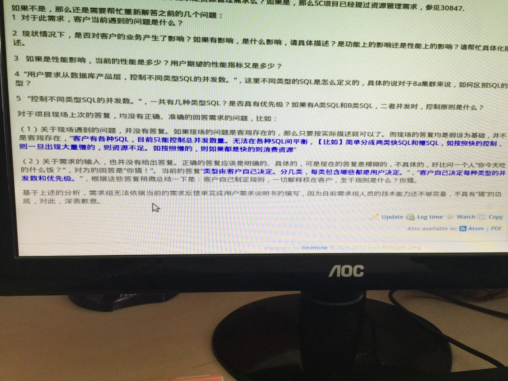 |
| 2016-05-31 11:16:24 | 你 | 最后一句 |
| 2016-05-31 11:16:26 | 你 | 哈哈 |
| 2016-05-31 11:17:17 | 我 | |
| 2016-05-31 11:17:28 | 你 | 是不是特别搞笑 |
| 2016-05-31 11:17:50 | 我 | 是 |
| 2016-05-31 11:18:17 | 我 | 口头汇报可以这么说，写到文档里面就不太合适了 |
| 2016-05-31 11:18:31 | 我 | 不过写的确实太欢乐了 |
| 2016-05-31 11:18:44 | 你 | 估计王洪越快被他整疯了 |
| 2016-05-31 11:18:56 | 我 | 是 |
| 2016-05-31 11:25:46 | 我 | 我正在看路由器，你的本的ip是10.0.0.5 |
| 2016-05-31 11:25:58 | 你 | 哈哈 |
| 2016-05-31 11:26:06 | 你 | 云部署和虚拟部署是啥 |
| 2016-05-31 11:26:15 | 你 | 虚拟部署就是部署在虚拟机吗 |
| 2016-05-31 11:26:18 | 我 | 是 |
| 2016-05-31 11:26:27 | 你 | 云呢 |
| 2016-05-31 11:26:30 | 我 | 这又是谁的需求 |
| 2016-05-31 11:26:38 | 我 | 部署做云平台上 |
| 2016-05-31 11:29:08 | 你 | 没有 就是调研的时候看到过 |
| 2016-05-31 11:29:17 | 你 | 啥叫云平台啊 |
| 2016-05-31 11:29:19 | 我 | 哦 |
| 2016-05-31 11:30:02 | 我 | 就是把很多台机器集中在一起，对外当成一个平台提供服务 |
| 2016-05-31 11:30:17 | 我 | 可以在这个平台里面租虚拟机 |
| 2016-05-31 11:30:42 | 我 | 这些虚拟机是动态调整的，用户也不知道在哪台机器上 |
| 2016-05-31 11:30:50 | 你 | 哦 |
| 2016-05-31 11:31:44 | 我 | 吃饭去吧，你饿了没 |
| 2016-05-31 11:31:55 | 你 | 没呢 |
| 2016-05-31 12:27:30 | 你 | 我刚才在外屋说孙世林颜值高 头发白了 |
| 2016-05-31 12:27:36 | 你 | 不知道他听见没 |
| 2016-05-31 12:27:39 | 你 | 真讨厌 |
| 2016-05-31 12:27:58 | 我 | 没事 |
| 2016-05-31 12:28:05 | 你 | 恩 好吧 |
| 2016-05-31 12:28:11 | 我 | 你活的太小心了 |
| 2016-05-31 12:28:26 | 你 | 没有 不能背后说人家坏话啊 |
| 2016-05-31 12:28:28 | 你 | 多不好 |
| 2016-05-31 12:28:31 | 你 | 不是不小心 |
| 2016-05-31 12:28:38 | 我 | 😄 |
| 2016-05-31 12:28:56 | 我 | 这又不是什么坏话 |
| 2016-05-31 12:29:06 | 你 | 这个是有前提的 |
| 2016-05-31 12:29:22 | 我 | 照你那么说，我还经常和你说洪越的坏话呢 |
| 2016-05-31 12:29:23 | 你 | 今天跟刘甲问我发工资没 |
| 2016-05-31 12:29:34 | 你 | 但是不能让洪越听到啊 |
| 2016-05-31 12:29:53 | 你 | 就跟刘甲聊了会 我说他走了 我没有欺负的人了 |
| 2016-05-31 12:30:05 | 你 | 甲哥说 你可以欺负陈彪 |
| 2016-05-31 12:30:18 | 我 | 哦 |
| 2016-05-31 12:30:25 | 你 | 我说陈彪太远了 季业说你可以欺负孙世林 |
| 2016-05-31 12:30:33 | 我 | 他就这么把陈彪卖了 |
| 2016-05-31 12:30:41 | 你 | 我就说孙颜值太高 头发太白 |
| 2016-05-31 12:30:48 | 我 | 季业是坑你 |
| 2016-05-31 12:30:53 | 你 | 陈彪太无趣了 |
| 2016-05-31 12:30:59 | 你 | 没有 大家一起开玩笑呢 |
| 2016-05-31 12:31:08 | 你 | 我在外屋呆着来着 |
| 2016-05-31 12:31:19 | 我 | 嗯 |
| 2016-05-31 12:31:32 | 你 | 华仔太计较了 |
| 2016-05-31 12:31:36 | 你 | 我都不想看他比赛了 |
| 2016-05-31 12:31:41 | 你 | 我睡觉了 |
| 2016-05-31 12:31:48 | 我 | 好 |
| 2016-05-31 13:13:01 | 我 | 你睡觉了没 |
| 2016-05-31 13:14:07 | 你 | 睡了会 |
| 2016-05-31 13:14:09 | 你 | 睡着了 |
| 2016-05-31 13:14:20 | 我 | 好的 |
| 2016-05-31 13:14:21 | 你 | 挺舒服的 睡醒一脸汗 |
| 2016-05-31 13:16:06 | 你 | 特别想知道以后的智能世界是啥样滴 |
| 2016-05-31 13:16:12 | 你 | 那得多好玩 |
| 2016-05-31 13:16:35 | 我 | |
| 2016-05-31 13:16:46 | 你 | 最近很火的VR |
| 2016-05-31 13:16:49 | 你 | 你知道吗 |
| 2016-05-31 13:16:54 | 我 | 我知道 |
| 2016-05-31 13:17:06 | 你 | 挺有意思的 |
| 2016-05-31 13:17:38 | 我 | 是，我们上学的时候就有 |
| 2016-05-31 13:17:50 | 你 | what？ |
| 2016-05-31 13:17:51 | 我 | 当时我还特意学了一些相关的技术 |
| 2016-05-31 13:18:00 | 你 | 是吗 |
| 2016-05-31 13:18:06 | 我 | 对呀 |
| 2016-05-31 13:18:18 | 我 | 只是比较复杂而已 |
| 2016-05-31 13:19:24 | 我 | 你看过星球大战吗 |
| 2016-05-31 13:19:37 | 你 | 没有 |
| 2016-05-31 13:19:41 | 我 | 第一部里面就有一些相关的场景 |
| 2016-05-31 13:19:59 | 我 | 包括全息显示，位置跟踪等等 |
| 2016-05-31 13:20:15 | 你 | 哦 不知道 |
| 2016-05-31 13:20:25 | 我 | 我上大学时专门听过类似的讲座 |
| 2016-05-31 13:20:35 | 我 | 当时说的是远程手术 |
| 2016-05-31 13:20:44 | 你 | 哦 你真行 |
| 2016-05-31 13:20:56 | 我 | 不是我行 |
| 2016-05-31 13:21:19 | 我 | 其实现在这些东西想法几十年前就都有了 |
| 2016-05-31 13:21:30 | 我 | 只是当时的技术积累还不够 |
| 2016-05-31 13:21:48 | 我 | 现在突然热了就是技术积累到了拐点了 |
| 2016-05-31 13:21:56 | 你 | 恩 |
| 2016-05-31 13:22:42 | 我 | 我就是兴趣太广泛，学的东西太杂 |
| 2016-05-31 13:23:39 | 你 | 恩 |
| 2016-05-31 13:23:47 | 你 | 是 |
| 2016-05-31 13:24:48 | 你 | 你看过生活大爆炸吧 |
| 2016-05-31 13:24:49 | 我 | 我要是在任何一个方面研究的深点，都不至于到现在这个程度 |
| 2016-05-31 13:24:59 | 我 | 看过 |
| 2016-05-31 13:28:17 | 你 | 那里边他们四个说开发一个程序 解微分方程的 |
| 2016-05-31 13:28:19 | 你 | 你记得吗 |
| 2016-05-31 13:28:33 | 我 | 不记得了 |
| 2016-05-31 13:28:43 | 你 | 就是把看到的微分方程 拍一张照片 然后就能给出答案 |
| 2016-05-31 13:28:47 | 你 | 挺好玩的 |
| 2016-05-31 13:29:11 | 我 | |
| 2016-05-31 13:35:06 | 你 | 你干嘛呢 |
| 2016-05-31 13:35:20 | 你 | 王洪越还让我调研vertica呢 |
| 2016-05-31 13:35:21 | 我 | 接着看合并的 |
| 2016-05-31 13:35:26 | 我 | 哦 |
| 2016-05-31 13:35:27 | 你 | 哦 |
| 2016-05-31 13:35:34 | 我 | 也没有什么目标吗 |
| 2016-05-31 13:35:57 | 你 | 无所谓了 |
| 2016-05-31 13:38:10 | 我 | 你要是没事，聊天吧 |
| 2016-05-31 13:38:25 | 你 | 好啊 |
| 2016-05-31 13:38:48 | 我 | 你有什么特别想聊的吗 |
| 2016-05-31 13:39:46 | 你 | 没有 |
| 2016-05-31 13:40:07 | 你 | 我想问你个问题 我不敢看恐怖片 你说能反应什么心理问题吗 |
| 2016-05-31 13:40:41 | 我 | 这个很正常 |
| 2016-05-31 13:40:50 | 我 | 不能反应什么问题 |
| 2016-05-31 13:44:15 | 你 | 恩 你有什么想跟我聊的吗 |
| 2016-05-31 13:45:12 | 我 | 有吧 |
| 2016-05-31 13:46:00 | 我 | 你还记得上次你说我的状态不好，我说你进步了 |
| 2016-05-31 13:46:14 | 我 | 你自己已经会建模了 |
| 2016-05-31 13:46:15 | 你 | 恩 |
| 2016-05-31 13:46:26 | 你 | 没有吧 |
| 2016-05-31 13:47:05 | 我 | 有呀 |
| 2016-05-31 13:47:25 | 我 | 只是你自己还没有意识到 |
| 2016-05-31 13:47:54 | 我 | 你应该记得我很早以前和你说过的关于人类认识世界的方法 |
| 2016-05-31 13:47:58 | 你 | 你想说什么 |
| 2016-05-31 13:48:09 | 我 | 还有认知的层次问题 |
| 2016-05-31 13:48:33 | 你 | 叹什么气 |
| 2016-05-31 13:48:38 | 你 | 而且这么大声 |
| 2016-05-31 13:48:56 | 我 | 没事，工作的事情 |
| 2016-05-31 13:49:12 | 我 | 我是想了解一下你现在的认知情况 |
| 2016-05-31 13:49:26 | 我 | 你已经很久没和我说这些东西了 |
| 2016-05-31 13:49:46 | 我 | 记得有一阵你经常和我聊这些 |
| 2016-05-31 13:49:48 | 你 | 恩 好的 |
| 2016-05-31 13:49:58 | 我 | 有时还打电话说 |
| 2016-05-31 13:50:00 | 你 | 什么时候 |
| 2016-05-31 13:50:07 | 你 | 哦 |
| 2016-05-31 13:50:19 | 你 | 其实最近有点小体会 |
| 2016-05-31 13:50:26 | 我 | 说说 |
| 2016-05-31 13:50:48 | 你 | 我觉得没什么就没跟你说 我昨天跟我对象摆活来着 我觉得它没听懂 |
| 2016-05-31 13:51:09 | 你 | 是最近在看敏捷的时候发现的 |
| 2016-05-31 13:51:10 | 我 | 和我说说吧 |
| 2016-05-31 13:51:14 | 你 | 好 |
| 2016-05-31 13:51:50 | 你 | 你说我跟你说的比较多的时候 最近一次是我跟东东吵架那次吗 那次算吗 |
| 2016-05-31 13:51:54 | 你 | 那次是顿悟 |
| 2016-05-31 13:52:41 | 我 | 不是那次 |
| 2016-05-31 13:52:53 | 你 | 啊 那就不知道了 |
| 2016-05-31 13:53:00 | 你 | 我跟你说说敏捷吧 |
| 2016-05-31 13:53:56 | 你 | 我在你给我面谈后 有几个地方其实是不太懂的 后来我琢磨通了 |
| 2016-05-31 13:54:19 | 你 | 一个是你说软件的工程方法是类比的其他工程方法 |
| 2016-05-31 13:54:20 | 我 | 好 |
| 2016-05-31 13:54:24 | 你 | 还有就是自组织 |
| 2016-05-31 13:54:52 | 你 | 因为我发现软件开发的瀑布流程跟流水线是一样的 |
| 2016-05-31 13:55:49 | 你 | 所以就能理解职责的问题了 |
| 2016-05-31 13:56:04 | 我 | 没错 |
| 2016-05-31 13:56:19 | 你 | 每个环节中的人只负责自己环节的事，最多关心下上下游 |
| 2016-05-31 13:56:35 | 你 | 先说流水线吧 |
| 2016-05-31 13:57:13 | 你 | 流水线中每个环节的人，只需要干这个环节的活就可以，没有整体意识，技能单一 |
| 2016-05-31 13:57:22 | 你 | 但是效率高 |
| 2016-05-31 13:57:48 | 你 | 这样培养出来的人，水平相对较低 |
| 2016-05-31 13:58:14 | 我 | 对 |
| 2016-05-31 13:58:22 | 你 | 而且流水线的整体观是需要专人设计把握的 这部分是领导管的 比如说段长 |
| 2016-05-31 13:58:27 | 你 | 工段长 |
| 2016-05-31 14:00:22 | 你 | 流水线响应变化的能力很差，因为所有事情都在进入流水线之前都确定好了，一旦入了流水线就不能改变，比如加工手机壳的大小， |
| 2016-05-31 14:00:58 | 你 | 而且一旦流水线的某个环节损坏，整个产品线都不能工作了 |
| 2016-05-31 14:01:18 | 我 | 是 |
| 2016-05-31 14:01:39 | 你 | 量产的时候才会投入流水线，因为流水线的效率高 |
| 2016-05-31 14:01:56 | 你 | 自组织就不一样了 |
| 2016-05-31 14:02:13 | 你 | 不管哪个自组织都有一个限制就是人数 |
| 2016-05-31 14:02:22 | 你 | 流水线可以是上万人 |
| 2016-05-31 14:02:45 | 你 | 但是自组织 网上都说了 5-9人 |
| 2016-05-31 14:03:43 | 我 | 是 |
| 2016-05-31 14:03:48 | 你 | 自组织的人不但要共享信息，而且每个人对信息的理解 掌握程度都不相上下，这对人的要求也是比较高，技能要求也比较高 |
| 2016-05-31 14:04:15 | 你 | 然后那些迭代啊、周期短啊、我就不说了 |
| 2016-05-31 14:04:22 | 你 | 我着重说下学习能力 |
| 2016-05-31 14:04:38 | 你 | 就是自组织是有学习能力的 适应性强 |
| 2016-05-31 14:05:08 | 我 | 是 |
| 2016-05-31 14:05:14 | 你 | 形式上是反思会 |
| 2016-05-31 14:06:14 | 你 | 反思会提出的问题 都会在日后的执行阶段得到快速的响应，出现一个问题 消灭一个问题 使得组织竞争力越来越强 |
| 2016-05-31 14:06:33 | 你 | 而且由于人员比较少 管理分散到个人 |
| 2016-05-31 14:06:45 | 你 | 实施起来容易的多 |
| 2016-05-31 14:07:09 | 你 | 流水线就差太远了 我就不说了 这是类比 而且还有一个类比 |
| 2016-05-31 14:07:18 | 你 | 就是自组织更像是蜂巢 |
| 2016-05-31 14:08:43 | 你 | 或者说自组织的模型是蜂巢似的，每个六边形就是一个原子化的自组织，能够完成用户的要求 |
| 2016-05-31 14:09:06 | 你 | 而现在的模型是金字塔式的 |
| 2016-05-31 14:09:09 | 我 | 嗯 |
| 2016-05-31 14:09:17 | 你 | 或者是瀑布式的 |
| 2016-05-31 14:09:36 | 你 | 你知道企业孵化器吧 |
| 2016-05-31 14:09:51 | 我 | 我知道 |
| 2016-05-31 14:09:57 | 你 | 我看过一个讲座 说海尔在几年前的管理有12个层级 |
| 2016-05-31 14:11:00 | 你 | 1-8，A-D，而如今转型后的海尔 只有三级，每个事业部自行管理，也是向自组织转型 |
| 2016-05-31 14:11:14 | 我 | 是 |
| 2016-05-31 14:11:38 | 你 | 没了 |
| 2016-05-31 14:11:42 | 你 | 说完了 |
| 2016-05-31 14:11:58 | 你 | 你先忙吧 |
| 2016-05-31 14:12:06 | 我 | 大部分是你看来的吧 |
| 2016-05-31 14:12:10 | 我 | 我不忙 |
| 2016-05-31 14:12:21 | 你 | 是 |
| 2016-05-31 14:12:24 | 你 | 什么？ |
| 2016-05-31 14:13:00 | 我 | 我现在不忙，可以一直陪你聊天 |
| 2016-05-31 14:13:17 | 你 | 好啊 |
| 2016-05-31 14:18:35 | 我 | 这些东西是你看完了以后自己思考的还是只是复述你看的 |
| 2016-05-31 14:19:15 | 你 | 有看的 有自己想的 |
| 2016-05-31 14:19:56 | 你 | 大部分结论性的是看来的 我只是想明白了 |
| 2016-05-31 14:20:09 | 你 | 然后推出了一些 |
| 2016-05-31 14:20:38 | 我 | 你说的基本上都对 |
| 2016-05-31 14:21:04 | 我 | 蜂巢的比喻其实不是太合适 |
| 2016-05-31 14:21:14 | 你 | 哦 |
| 2016-05-31 14:21:20 | 你 | 那个是我自己想的 |
| 2016-05-31 14:22:39 | 我 | 你想表达的是一种扁平化 |
| 2016-05-31 14:23:12 | 你 | 不是 |
| 2016-05-31 14:23:17 | 你 | 不是扁平化 |
| 2016-05-31 14:23:29 | 我 | ？ |
| 2016-05-31 14:24:39 | 我 | 你想表达的是什么 |
| 2016-05-31 14:24:56 | 你 | 我想说的是自组织 |
| 2016-05-31 14:26:26 | 你 | 算了 |
| 2016-05-31 14:26:30 | 你 | 别纠结这个了 |
| 2016-05-31 14:26:41 | 你 | 我想说的是 这只是一个问题而已 |
| 2016-05-31 14:26:48 | 我 | 好吧 |
| 2016-05-31 14:26:50 | 你 | 你关心的可能不是问题本身 |
| 2016-05-31 14:26:58 | 我 | 继续说 |
| 2016-05-31 14:26:59 | 你 | 是我认识问题的方法 |
| 2016-05-31 14:27:05 | 我 | 是 |
| 2016-05-31 14:27:28 | 你 | 我现在回想自己 我的推理还是很差的 |
| 2016-05-31 14:28:00 | 你 | 但是通过类比能帮助我理解很多东西 应该也会帮助我建模 |
| 2016-05-31 14:30:27 | 我 | 是的 |
| 2016-05-31 14:30:45 | 我 | 类比其实是人类认识世界的一个基本方法 |
| 2016-05-31 14:30:57 | 你 | 恩 |
| 2016-05-31 14:30:59 | 我 | 从远古时代就开始使用的 |
| 2016-05-31 14:31:05 | 你 | 哈哈 |
| 2016-05-31 14:42:55 | 我 | 其实还有一个方法就是了解历史 |
| 2016-05-31 14:43:38 | 我 | 我和你讲的时候特意把整个历史告诉你就是因为几乎所有的变化都是连续的 |
| 2016-05-31 14:44:03 | 我 | 了解历史可以更好的了解本质 |
| 2016-05-31 14:44:17 | 你 | 恩 |
| 2016-05-31 14:44:19 | 你 | 哦 |
| 2016-05-31 14:44:25 | 我 | 就像你把瀑布类比流水线 |
| 2016-05-31 14:44:42 | 我 | 因为瀑布本来就是从工程上来的 |
| 2016-05-31 14:45:01 | 你 | 是的 |
| 2016-05-31 14:48:16 | 我 | 这也是为啥我会对生物史特别感兴趣，通过研究生物的进化来了解人自身 |
| 2016-05-31 15:05:36 | 你 | 就刚才那个问题 你走了 老田跟领导又问了半天 领导有一句每一句的回他 到现在他还没搞明白 |
| 2016-05-31 15:06:14 | 我 | 😄 |
| 2016-05-31 15:08:47 | 我 | 你今天去打球吗？ |
| 2016-05-31 15:08:56 | 你 | 去啊 |
| 2016-05-31 15:09:08 | 我 | 几点走？ |
| 2016-05-31 15:09:38 | 你 | 六点前后 |
| 2016-05-31 15:09:46 | 我 | 好的 |
| 2016-05-31 15:15:04 | 我 | 这次洪越升级了，就多了0.4分 |
| 2016-05-31 15:15:34 | 你 | 好吧 |
| 2016-05-31 15:15:39 | 你 | 升上去了呗 |
| 2016-05-31 15:15:44 | 你 | 王志新几级 |
| 2016-05-31 15:15:58 | 我 | 三级1等 |
| 2016-05-31 15:16:37 | 我 | 陈彪也升了 |
| 2016-05-31 15:16:48 | 我 | 这次可能就是陈彪比较好 |
| 2016-05-31 15:16:57 | 我 | 半年就升了 |
| 2016-05-31 15:17:01 | 你 | 他参加了吗 |
| 2016-05-31 15:17:08 | 我 | 是 |
| 2016-05-31 15:17:13 | 你 | 阿娇没参加是吧 |
| 2016-05-31 15:17:54 | 我 | 阿娇是部门内答辩 |
| 2016-05-31 15:18:11 | 你 | 哦 |
| 2016-05-31 15:18:18 | 你 | 为啥 |
| 2016-05-31 15:19:00 | 我 | 专家只答辩三级以上和初始化的 |
| 2016-05-31 15:19:12 | 你 | 哦 原来是这样 |
| 2016-05-31 15:19:27 | 你 | 那 我岂不是也是部门内升级 |
| 2016-05-31 15:19:28 | 我 | 这次崔新淼只有一级 |
| 2016-05-31 15:19:38 | 你 | 一级几等 |
| 2016-05-31 15:19:39 | 我 | 你是升等，不是升级 |
| 2016-05-31 15:19:44 | 我 | 4等 |
| 2016-05-31 15:19:53 | 你 | 那我升3级的话呢 |
| 2016-05-31 15:20:01 | 你 | 是部门内还是专家答辩啊 |
| 2016-05-31 15:20:09 | 我 | 需要专家答辩 |
| 2016-05-31 15:20:15 | 你 | 哦 好吧 |
| 2016-05-31 15:20:58 | 我 | 还有，系分其实不只是需求，还有系统分析、项目管理等等 |
| 2016-05-31 15:21:15 | 你 | 哦 |
| 2016-05-31 15:23:27 | 你 | 到时候再说吧 |
| 2016-05-31 15:23:53 | 你 | 我倒是想学习学习项目管理呢 |
| 2016-05-31 15:25:06 | 我 | 你想学的这些东西恰好是系分要考察的 |
| 2016-05-31 15:25:26 | 你 | 是呢 |
| 2016-05-31 15:25:29 | 你 | 我得学学 |
| 2016-05-31 15:40:49 | 你 | 老田找番薯去了吧 |
| 2016-05-31 15:41:02 | 你 | 你也应该去 |
| 2016-05-31 15:41:03 | 我 | 是吧 |
| 2016-05-31 15:41:07 | 我 | 我先不去 |
| 2016-05-31 15:41:54 | 我 | 如果我再去不就形成了多头领导了吗 |
| 2016-05-31 15:42:17 | 你 | 恩 |
| 2016-05-31 15:42:32 | 我 | 一开始番薯不找我，现在我也不适合去直接插手 |
| 2016-05-31 15:43:23 | 你 | 饿 |
| 2016-05-31 15:43:31 | 我 | 上周我刚和番薯说过，我是他的直接领导，他还这么做，我也没办法 |
| 2016-05-31 15:43:49 | 你 | 我就说他傻 |
| 2016-05-31 15:44:23 | 我 | 这种情况很可能会把我扔里面 |
| 2016-05-31 16:37:34 | 我 | 我在番薯这 |
| 2016-05-31 16:37:47 | 我 | 真是笨死我了 |
| 2016-05-31 16:43:47 | 你 | 咋了 |
| 2016-05-31 16:44:15 | 我 | 教他写他都不会写 |
| 2016-05-31 16:44:25 | 我 | 就差我给他写了 |
| 2016-05-31 16:48:17 | 你 | 我刚才睡着了 |
| 2016-05-31 16:48:40 | 我 | 啊，是太累了吗 |
| 2016-05-31 17:00:06 | 你 | 不是 |
| 2016-05-31 17:02:49 | 我 | 那是不是因为实在是太无聊了 |
| 2016-05-31 17:02:55 | 你 | 是 |
| 2016-05-31 17:02:58 | 你 | 太无聊了 |
| 2016-05-31 17:02:59 | 你 | 烦死了 |
| 2016-05-31 17:03:06 | 你 | 睡也睡不好 |
| 2016-05-31 17:03:16 | 我 | 聊天吧 |
| 2016-05-31 17:03:24 | 我 | 说有空陪你 |
| 2016-05-31 17:03:29 | 你 | 调研那破东西有啥用 |
| 2016-05-31 17:03:32 | 我 | 结果又食言了 |
| 2016-05-31 17:03:33 | 你 | 没玩没了的 |
| 2016-05-31 17:04:31 | 我 | 所有的学习，只有出自兴趣的学习才会高效率而不容易放弃，因为学习本身就能带来乐趣。除此之外，被责任驱动的，被工作驱动的，被各种压力驱动的学习，最多只能做到平庸而熟练，成长既缓慢，又容易半途而废。所以做一个爱好广泛的人是件多幸运的事啊。 |
| 2016-05-31 17:04:50 | 我 | 我觉得你就是一个爱好广泛的人 |
| 2016-05-31 17:08:15 | 你 | 你竟给我灌药 |
| 2016-05-31 17:08:26 | 我 | 啊 |
| 2016-05-31 17:08:31 | 我 | 没有呀 |
| 2016-05-31 17:13:24 | 你 | 质控就是严格 |
| 2016-05-31 17:13:42 | 我 | 😄，被耿大姐知道了 |
| 2016-05-31 17:14:21 | 你 | 感觉评审不是很顺利呢 |
| 2016-05-31 17:14:31 | 我 | 是 |
| 2016-05-31 17:14:49 | 我 | 她这脾气，太要命了 |
| 2016-05-31 17:19:20 | 我 | 我问你个问题 |
| 2016-05-31 17:19:26 | 你 | 好 |
| 2016-05-31 17:19:44 | 我 | 你学习敏捷是因为工作要用还是因为自己的兴趣 |
| 2016-05-31 17:19:59 | 你 | 都有吧 |
| 2016-05-31 17:20:11 | 你 | 工作占主要 |
| 2016-05-31 17:20:25 | 我 | 像这样的还有吗？ |
| 2016-05-31 17:20:32 | 我 | 需求？ |
| 2016-05-31 17:20:33 | 你 | 项目管理 |
| 2016-05-31 17:20:41 | 你 | 需求必须是工作的啊 |
| 2016-05-31 17:20:57 | 我 | 我问的在宽泛一些 |
| 2016-05-31 17:21:13 | 你 | 我真正学习的兴趣 |
| 2016-05-31 17:21:21 | 我 | 有没有只是因为兴趣的 |
| 2016-05-31 17:21:32 | 我 | 没有任何功利考虑的 |
| 2016-05-31 17:21:41 | 你 | 恩 我想想 |
| 2016-05-31 17:22:04 | 你 | 好像没有 我觉得你说的像爱好 |
| 2016-05-31 17:22:41 | 我 | 不一样 |
| 2016-05-31 17:22:53 | 你 | 不过我好奇心重 |
| 2016-05-31 17:23:31 | 我 | 是 |
| 2016-05-31 17:23:51 | 我 | 你有没有过半途而废的 |
| 2016-05-31 17:24:16 | 你 | 你问你太不具体了 |
| 2016-05-31 17:24:36 | 你 | 我一般自己主动想知道的东西 不管是工作的 自己的 都会研究研究 |
| 2016-05-31 17:24:46 | 你 | 研究到什么深度就不一定了 |
| 2016-05-31 17:25:09 | 你 | 比如我有段时间特别喜欢三国 我就开始看 电视剧 讲座 |
| 2016-05-31 17:25:17 | 你 | 啥的 |
| 2016-05-31 17:25:29 | 我 | 好吧 |
| 2016-05-31 17:25:37 | 你 | 或者像敏捷这种 我是一定得知道清楚 不然不会放弃的 |
| 2016-05-31 17:25:41 | 我 | 我解释一下吧 |
| 2016-05-31 17:25:52 | 你 | 恩 |
| 2016-05-31 17:26:01 | 我 | 好奇心和兴趣最大的区别就是能否坚持 |
| 2016-05-31 17:26:16 | 你 | 恩 |
| 2016-05-31 17:26:19 | 我 | 兴趣可以支撑你一直去做 |
| 2016-05-31 17:26:31 | 我 | 好奇心不行，容易半途而废 |
| 2016-05-31 17:26:51 | 我 | 想区分这两个不太容易 |
| 2016-05-31 17:26:52 | 你 | 从你观察我来看 你觉得呢 |
| 2016-05-31 17:26:57 | 你 | 实话实说 |
| 2016-05-31 17:27:02 | 我 | 大部分是好奇心 |
| 2016-05-31 17:27:25 | 我 | 而且有些东西是有功利性的 |
| 2016-05-31 17:27:45 | 我 | 就是你总是考虑目标和结果 |
| 2016-05-31 17:27:54 | 我 | 这没有什么不对 |
| 2016-05-31 17:28:00 | 你 | 恩 |
| 2016-05-31 17:28:04 | 你 | 正常吗 |
| 2016-05-31 17:28:12 | 我 | 只是当你达到目标的时候就没有快乐了 |
| 2016-05-31 17:28:16 | 我 | 很正常 |
| 2016-05-31 17:28:22 | 我 | 很多人都这样 |
| 2016-05-31 17:28:26 | 我 | 我也一样 |
| 2016-05-31 17:28:43 | 你 | 感觉你要说什么 |
| 2016-05-31 17:28:49 | 你 | 有新的体会了？ |
| 2016-05-31 17:29:02 | 我 | 生活中要是有自己的兴趣就会有持续的快乐 |
| 2016-05-31 17:29:35 | 你 | 我的快乐挺多的、 |
| 2016-05-31 17:29:39 | 你 | 工作中也有 |
| 2016-05-31 17:29:55 | 我 | 不是 |
| 2016-05-31 17:30:15 | 我 | 你现在还是不懂 |
| 2016-05-31 17:30:34 | 我 | 你先记着吧，以后你会懂的 |
| 2016-05-31 19:02:23 | 你 | 开始看比赛了 |
| 2016-05-31 19:02:50 | 我 | 好的 |
| 2016-05-31 19:03:02 | 我 | 发张照片吧 |
| 2016-05-31 19:04:28 | 你 |
{kind=link}